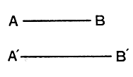
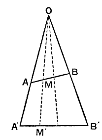
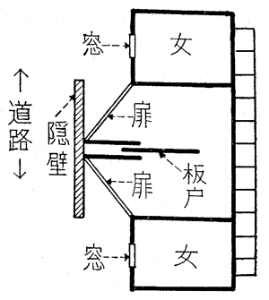
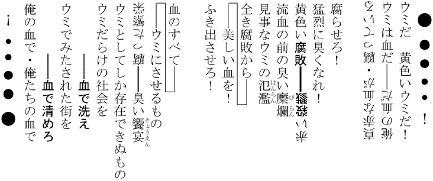
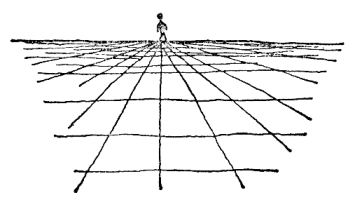
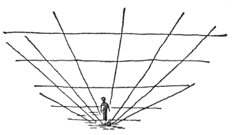
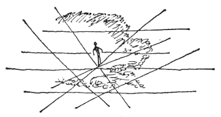
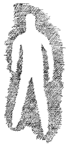
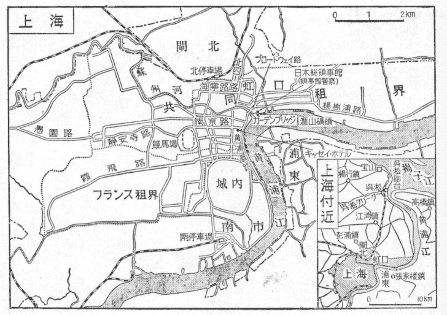

暗い踏切の手前で円タクをとめた。
歩道のはじに屋台が並んでいる。縫い目に一列にとっついたシラミみたいだ。屋台はつぎはぎだらけの布でかこってある。この通りはからっ風が強いのか、ぼろ隠しのような布の下には
砂馬と
一等地の女は路地に出て、客の引っ張りをしたりはしない。この
「ちょいと、ちょいと」
女の顔だけが見える小窓から、通りすがりの男たちに呼びかける。
「ちょいと、
「ちょっと、ちょっと、
両側から誘いの声がかかる。ちょんの間なら、一円五十銭でも自分を売ろうという呼びかけである。
「ちょいと、洋さん」
洋服さんという意味である。ちょっと、その洋服を着た旦那――という呼びかけである。きょう
「ちょっと寄っといでよ」
「ほらほら、ちょっと、ここをのぞいてごらんよ」
日の暮れるのが早い季節で、暮れてから大分になるが、時間としてまだ
路地を行く男は、こうした両側の小窓から、女たちの眼と声の一斉射撃を浴びるので、これでなかなか度胸がいる。路地の真中を、ほかの用で歩いているかのような足どりで行くのは、こういう場所にまだなれない男である。ときどき、ちらっと横目で小窓のなかをのぞく。声をかけられると、大ゲサに飛びのいたりする。なれた男は、雨降りの軒伝いみたいにして、いちいち小窓をのぞいて行く。買いたい女を物色する。お、いい女だねえと言ったりする。これは逆に、寄る気のないちゃらんぽらんである。心得た女は、いけすかないねえとか、場所ふさげをするんじゃないよとやり返す。
俺は、まあ、横目使いと軒伝いの中間みたいなものだった。
気のせいか、この路地には、トロ（精液）の
路地は迷路のようにつづいていて、家と家の間の、ひと一人やっと通れる狭い道には「抜けられます」と書いてあった。道の奥にも、買い手を待っている女がひそんでいることを、そうして示しているのだ。
軒さきに鬼婆みたいなのが立っていた。そのうしろにセーラー服の少女がしょんぼりと顔を伏せている。
「どうだい」
と俺は言った。
「駄目だよ」
と砂馬は言った。
セーラー服の少女は、近づいてその顔を見ると、少女とは言えない
あらゆるタイプの女がここにはいた。お好みの女を買えるのだ。
砂馬の言う年増が、
「ちょっと寄ってらっしゃいよ」
と小窓から言った。ざらざらした声だった。若い子は洋服が多いのだが、この私娼は着物を着ていた。へらへらした生地の、安物の着物の
「オブ（茶）でも飲むか」
齢を隠そうとしてないことが、砂馬の気に入ったようだった。
「お前んちは何人だい？」
「団体さん？」
と女は笑って、
「うちは四人よ」
小窓の横に、アパートの部屋の扉のような出入口がある。砂馬は、おいはいろうと俺に言って、扉を
女はいそいそと立ち上ったりはしないで、煙草をはさんだ手をものうげに、立て
「お二人さん？」
いかにも、あばずれの感じだった。その眼には、客種の吟味というより警戒の色があった。女の人数を聞いたりする客を
「お泊り？」
なが年の
「時間遊び？」
「こんなに早くから、泊りの客が来るかねえ」
砂馬はあざけるように言った。
「そりゃ、来るわよ」
「そうかい。悪かったね」
俺たちはたたきに立っていた。たたきの奥に、狭い上り
「遊びは気分よく遊んだほうがいいからね。金はオールナイト並みにしてもいいさ」
口にくわえた「敷島」を、砂馬は口からじかに、ぺっと下に落して、靴先でたたきににじりつけた。
「あんた方、ブショウシ？」
「負勝師」のバクチ打ちかと、俺たちは見られた。
「もととちがってこのごろは、みなさん、三つ
和服でなく背広を着ているという意味である。
「ありがたいね。そう見てくれたか」
と、砂馬は笑った。こういうあばずれなら、こいつをたきつけて、望み通りの面白い遊びができそうだと砂馬はほくそえんでいる。
俺はこのとき、まずいものを見てしまった。いや、なに、女の立て膝の奥を見たというのではない。
足もとの土間に、ラーメンの
「いや、これでいいんだ。このほうがいいんだ」
と自分に言いきかせた。汚濁にまみれた俺が、それをきたないなんて言えた義理ではない。俺自身のほうが、よっぽど、きたない。
しかしこの場合は、そんな理窟の問題じゃなかった。きたない俺が、俺自身ちょっとためらっているくらいのきたないことをこれからしようとしている（――それは単に淫売を買うというだけのことではなかった）。そのため、この俺としては、いわば前もって、きたないものを眼の前につきつけられるようにして見るのは、いやだった。
俺たちは、上にあがることになった。そうときまると、女は急にしゃきしゃきと立ち動いて、砂馬の手を取って引っ張りあげるようにした。鈴が鳴った。
「ちゃぐちゃぐ馬こみてえだな」
と砂馬は言って、階段をひとりで昇って行った。
俺が
「あんた、ウブね」
と女が俺の肩をたたいた。
俺は心を傷つけられた。知っちゃいねえなと言いたいところだった。二十二歳という齢が俺をウブに見せたのだろうか。
「あんたは運がいいよ」
姉さんぶった語調でそう言って、女は細いしなびた手をのばして、俺たちの靴を取った。
「ウブな可愛いのが
靴を両手でぶらさげて、家の中の下駄箱にしまいこんだ。
「初見世か」
「クララさん」
と女は呼んだ。
「あいよ」
奥からの返事は意外なしわがれた声だった。ひとをからかいやがってと、俺が女を
「こりゃ、いけねえ」
と首を縮めた。こめかみに
「これから、ひいきにしてやってね」
と女は言った。
「お願いします」
とクララは恥しそうに言った。その口もとは俺の好きな受け口だった。いよいよ、いけねえと俺はどぎまぎした。相手は淫売なんだと思っても、このクララには、俺のなかの純情を急に目ざめさせるものがあった。つまり、これがひと目
「マリちゃんのおなじみさんが、この子を見て、大変なご執心でね」
マリちゃんというのを俺が知ってるみたいに、そう言うと、女は声をひそめて、
「この子に乗りかえると言うんで、大騒動さ。やっと、ま、おさまったけど」
と二階を指さした。その二階から、
「おい、なにしてんだ」
と砂馬がどなった。
「いま、行く」
俺は砂馬をすでに裏切っているようなやましさを覚えた。砂馬は俺より六つ年上である。
二階の小さな部屋は、ベッドだけが大きかった。部屋が小さいのでベッドが大きく見えただけで、それはシングルベッドである。壁にぴたりとくっつけてあるが、その壁紙には
ベッドの枕もとには、施療病室を思わせる小さなテーブルがすえてある。なまじっか、花のない
俺がこう言うと、さも俺は上等の部屋に住んでいたかのように見えるが、そういうわけじゃない。俺の下宿も、似たり寄ったりだ。下宿は、しかし、俺ひとりがただ寝るだけのところだ。
女と寝る部屋は、もうちょっと、なんとか、色気のある、なまめかしい――とまで行かなくても、もうすこし、まともであって、いいんじゃないか。こうまで殺風景な、
だが、ここへ来る男には、部屋なんかどうでもいいのだ。女だけいればいいのだ。女だけが目当てなのだ。クララもそういう男に買われる女なのだ。
「さ、総あげだ」
ベッドの上に砂馬は
「スケナゴ（女）を、みんな早く呼んでこい」
わざとヤクザ言葉を使うと、
「大きな声出すんじゃないの」
女は
「お客が来てるのよ。営業中よ」
「
砂馬はネクタイをゆるめて、
「オサトでも食うか」
「オサツ？」
女は「お里」を知らなかった。「義経千本桜」の
「ヤキイモじゃねえよ。スシだよ。スシでも食うか」
「おばさんに、そいじゃ、頼んでこよう。何人前？」
「適当に注文しな」
「ビールも飲むぞ」
「あいよ」
と女は出て行った。クララが俺に寄り添って来た。安香水のにおいがツンと鼻に来た。それは俺にこの女が安淫売なのだということを告げる。俺は一生懸命、この女が安淫売なのだということを自分に言いきかせようとしているのだ。
「クララとは、しゃれた名だな」
柄にもないと毒づきたそうな砂馬の顔だった。
「クララ・ボウから取ったのか。でも、クララ・ボウみたいなイット（性的魅力）はないな」
なめまわすみたいな眼をクララの身体にそそいで、
「どこの生れだ」
「東京です」
「うそつけ」
「ほんとよ」
「言葉に
「よしなよ、砂馬さん」
と俺は言った。砂馬は大きな鼻をフンと鳴らして、
「東京の生れがどうしてこんなところへ来たんだ」
クララは黙っていた。
「男にだまされたのか」
「知らない……」
「いくつだ」
「十九」
「いい
下から女が戻ってきた。俺は
「どこへ行くんだ」
「ちょっと」
「ちょっと、なんだ」
「フントウバだ」
監獄の便所のことで、ムシニン（囚人）の言葉だが、ムシ（監獄）に縁の深い俺たちはズバチョオ（
「ジュウロク……？」
と女が言った。シシ（四四）十六で小便のことである。
「加柴の奴、もう気分を出してるのか。若いから、しようがないな」
と砂馬は笑った。
「うるせえ」
と俺は言った。ギーギーと
下の奥の便所に近づくと、
「待ってエ」
と、なかから女の声がした。俺は洗面所の細長い鏡に顔を近づけた。
「俺はあのクララと寝たい」
鏡の中の俺に俺は言った。
「クララとだけ寝たい」
便所の
どいてよと女は言った。黙って、俺は鏡の前から身体をずらせた。
あいたわよと女は言った。早く便所にはいれと言うのだ。どこの訛りか分らないが、訛りがあった。
「マリちゃんか」
と俺は言った。胴長で顔まで細長いその女は、ひぇっといった声を出して、俺を見た。
俺は便所に飛びこんだ。そして便器にまたがって、ゆっくり、ズボンをずるずるとおろして、
「オッパイの、もろにでっかい女だな」
と
小便はすこししか出なかった。ゴム管の振動はもうとまっている。俺はそのゴムにさわってみた。親指と人指し指のさきで、ゴムを洗濯バサミのように、はさんでみた。ぶよぶよしていて、たよりないようで、しかし指さきに一種の手ごたえがある。
俺は立ち上った。そして俺は何も小便がしたくてここへ来たんじゃないということを確認した。ゴム管の
俺は俺のうちに目ざめかけた純情という奴を殺すために来たようだ。俺は便所を出た。手を洗いながら、また鏡に顔を映してみた。遠くから顔を映すと、鏡の中の顔はひどく
「安淫売に惚れることはない」
俺は惚れそうなのだ。俺は鏡の中の
「あんな淫売に惚れてなるものか」
このとき、鏡の中の歪んだ顔が、ふと俺に、いやな思い出をよみがえらせた。ボル派のあの大学生
「俺たちは行動だ」
と、やけっぱちの叫びを俺はあげたものだ。
「無理論の行動は無意味だ」
と、
「無意味というだけじゃなくて階級運動への大きなマイナスだ」
とまできめつけやがった。大体、ボル派があんな生っちろい学生なんかを仲間にひき入れていることが、腹にすえかねる。親の
俺は鏡にぺっと
俺は二階に戻った。便所で会ったマリちゃんも部屋に呼びこまれていた。
「もう一人、早く呼んでこいよ」
砂馬は女に言った。
「四人集まんなきゃ、話にならない」
「四人のうちから選ぼうというの？ 選び直すの？」
「そうじゃないんだ」
「おトコつけるのは、あたしとクララさんときまってるんでしょう？ だったら、あんた……」
「そうでもないんだ」
と砂馬が
「そうでもない？」
「ゼニを出しゃ、いいだろう。ゼニを」
「ゼニ、ゼニ言いなさんな。いくらくれるつもりなの？」
「そっちのサービス次第だ」
「どういうサービス？」
「四人ともここへ寝るんだ」
「ここへ？」
「狭いけどな」
「四人とも？」
「ハダカで寝るんだ」
「ハダカを並べといて、どうしようっての？」
「分んねえのかねえ」
砂馬はじれったそうに、
「そういう客だっているだろう」
マリちゃんは白痴みたいにポカンと口をあけていた。そしてクララは下唇を
「ジャンケンをして順々に……」
「冗談言っちゃ、いけないわよ」
女は砂馬を見据えた。
「冗談を言ってんじゃない。ほんきだ」
「ほんきらしいから、こっちも言ってんのよ。いやらしい」
「そうムキになるなよ。面白いじゃねえか」
「お客さんには面白いかもしれないけど、こっちは、ちっとも面白かないわよ」
歯をツーと鳴らして息を吸いこんで、
「馬鹿におしでないよ」
「馬鹿になんか、しやしない。愉快に遊ぼうてんだ」
「あたしたちだって、人間ですよ。犬畜生じゃないんですよ」
青筋を立ててという形容が事実なのを俺は見た。
「お前さんたちも、黙ってないで、なんとか言ったらどうだい」
と女はいきりたった。
「おーい、マリ公」
向うの部屋から男がどなった。
「帰るぞオ」
「はーい」
とマリちゃんは飛び出して行った。追い
「どうせ、あたしたちは金で買われる身体だけど……どんなにお金を積まれたって、そんな、なさけない慰みものにされたかないわよ。とっとと帰っておくれ」
女はきっぱり言い放った。
「おスシはもう頼んだんだから、お金は払って貰わなくちゃ……。そっくり包んで、持ってって貰いましょう」
「いらないよ」
砂馬は苦り切っていたが、ものやわらかく、
「とんだ時間
「下さるものはいただきますよ」
と女は蒼い顔で言った。
馬鹿にしてやがる。ど淫売のくせに、きいたような口をききやあがってと、砂馬は外へ出てから怒った。女の前ではやはり虫を殺していたのだ。ナカ（吉原）へ行こうと砂馬は言った。
「女郎なら文句は言わねえ」
――この俺たちは死にぞこないのテロリストなのだった。俺たちといっては、砂馬が何を生意気なと、俺に眼をむくだろう。砂馬は俺のことを子分だと思っている。リャク屋としては、そうにちがいないが、テロリスト時代は俺たちは同志だった。俺がテロリストの仲間にはいったのは、砂馬を知ったためだが、砂馬の子分になったわけではない。年こそ若いが、俺だって、いっぱしのテロリストだった。
テロリストとして俺たちが死にぞこなったのは、三年前のことだ。テロリストの一派が（この辺のことはいずれあとで語らねばならない）ピストルで福井大将を
俺たちは爆弾でやっつける計画を立てていたのだ。その威力をためすためにペンキ（共同便所）を爆破したりした。その爆破事件も狙撃一派の
福井大将の暗殺計画に俺たちも死刑を覚悟で参画していたのだが、実は中途から、みんなここで全滅はまずいということになって、
「お前たちは生き残れ」
そして同志の志をつぐようにと言われて、一派から無理やり除外されたのだ。そのため生命がたすかったと言えばたすかったのだが、やはり死にぞこないの感が強かった。
俺たちはおいてきぼりを食わされた形だった。死にぞこなった砂馬は、それで気抜けがしたみたいで、事実、しばらくは虚脱状態だった。砂馬がリャク屋になったのは、それからだった。俺はアナーキストの労働組合で働いた。それじゃ食えないので砂馬のリャクの手下になって、その金で俺は食っていた。――
おはぐろどぶを埋め立てた遊郭裏の通りで車を降りた。震災で丸焼けのこの遊郭も立派に復興していた。ここなら大丈夫だし、文句は言わせねえと砂馬は力んだ。それなら、初めからここへ来ればいいのに、砂馬はしかし、私娼のほうが
「旦那、旦那、いい子がいますよ」
「兄さん、モダンな子、いかが」
と俺に呼びかけた。
陰惨な私娼窟からここへ来ると、ここはまるで
「どこでもいいや。早いとこ、飛びこもう」
と砂馬は言って、二流の下ぐらいの、ヨオドバ（洋風建築）の店にはいった。一流の家はさすがに砂馬も避けたのである。
朱塗りの
やり手婆あが俺たちを「引き付け」に導いた。名ざしであがったのではないこのフリの客に、やり手婆あは、あいかたさんはどういう子がいいかと聞いた。注文をおっしゃって下さいと言う。
「年増をひとり。それにこの友だちに、若い子をひとり。それからあと二人呼んでくれ」
「四人ですか？」
「五人だっていいよ」
「今はみんな、忙しいんで、二人にして下さいな。気に入らなかったら、そう言って貰えば、ほかの子をまた回します」
「四人買うんだ。誰かのホンベヤで、みんな一緒に寝るんだ」
砂馬は高圧的に言った。面白い遊びがしたいのだと言うと、
「それは旦那、いけませんね」
「いけないことはないだろう。それだけのことはするぜ」
と砂馬は内ポケットを叩いてみせた。そこには破廉恥なリャクでせしめた意外な大金がはいっている。それを砂馬は破廉恥な遊びで費消したかったのだろうか。
「困りましたねえ」
やり手も胸に手をやって、えり元をかき合わせるようにして、世なれた口調で、
「それは、旦那、困りますねえ」
「困るって、誰が困る？ お前さんが困るのか」
「わたしが困るんでしたら、わたしひとりが困る分なら、かまいませんがね」
いずれは
「そんなこと言って、お前さんがかけあえないと言うんなら、じかに言う。お前さんがかけあわないんなら、俺の口から言う」
「おっしゃってごらんなさい。塩をまかれるだけですよ」
まかれたいねとうそぶく砂馬に、やり手は寝不足のしょぼしょぼ眼を、きっと据えて、
「ここには、ここのしきたりがあります」
「そういう遊びは法律で禁止されてるのか」
「そうじゃありませんがね。ここではお茶漬はご
「おいらんが、なじみ客の友だちと寝ちゃ、そりゃまずいだろう」
「ですからお客さんにもお願いして、同じ家で、あいかたを変えることはおことわりしているのです。そういうのさえ、うるさいんですから、まして……」
「誰がうるさい」
砂馬はちゃんと知っていて、からんでいる。
「おいらんが承知しやしません。クルワにはクルワの仁義がありますからね。ましてや、そんな……」
荒々しい語調ではなく、やんわりと、しかし、はっきり拒絶する。
「いくら、卑しい稼業をしているわたしたちでも、そんなあさましいことは、ねえ……」
「いやかねえ。そうかねえ」
ひやかすように砂馬は言った。
「この土地では、そんな遊びは無理ですねえ」
「格式があると言うのか」
かっと怒った証拠に、砂馬は大きな鼻翼をふくらませて、
「淫売と女郎と、どうちがうんだ。女郎は淫売をしてないのか。いや淫売なんかさせてないと言うのかい」
「そんなこと、言やしません」
「女郎屋のほうが高級だと思ってやがる。とんでもない思い上りだ。淫売のほうが、どのくらい親しみがあるか分らない。淫売を馬鹿にしやがると承知しねえぞ」
「でしたら、あんたさんのお好きなそっちへ行って、遊んでらっしゃいな」
俺たちはここも追い出された。砂馬はしかし、諦めなかった。こうなったら、今度はシャダレ（芸者）だと張り切っている。俺はもうなんだかくたびれていた。
ビルマル（娼婦）として最低の私娼窟の女に
「
と砂馬は言った。丸万というのは、商店の屋号みたいだが、変名でもなんでもないちゃんとした姓なのである。砂馬と親しいアナーキストで、砂馬より年上だけど、リャク屋としてはシャテイ（弟分）格だった。一時は忠僕みたいだった丸万を、砂馬は今でも舎弟扱いしている。
「車を拾って、大急ぎで行こう」
「もう、よそうや」
「なに言ってるんだ。おい。加柴、ついてこい」
――これは俺には、ついこの間のことのような気がするのだが、ながい年月が流れている。これは昭和の初めごろのことだ。だのに、ほんのこの間みたいに思えるのだ。
そう言えば、昔聞いたことを、今ふと思い出した。
人から聞いた話では――こんな数学があるんだそうだが、俺が中学で習った数学とはまるでちがう。なんでもこれは今ではちっとも珍しくない数学だそうだから、珍しそうに言ってはおかしいが、中学は出た俺だからその説明ぐらいは俺にだってできる。

たとえばここにＡＢとA'B'の二つの直線がある。ＡＢは短く、A'B'は長い。ＡＢは小さく、A'B'は大きい。ＡＢはA'B'の一部とも見られる。ＡＢはA'B'の部分とも言える。だが、はたしてそのＡＢはA'B'よりも小さいかということなのだ。見た眼には、たしかに小さいが。

ＡA'とＢB'との交点をＯとする。このＯからＯM'という直線をひくとＡＢとはＭでまじわる。ここでM'をもしA'B'上の左右に動かすと、かならずそれに対応してＭも動く。M'がA'よりB'のほうへ動くと、Ｍも同様にＡよりＢへ動く。
ＡＢ上のすべての点とA'B'上のすべての点をここで考えてみる。A'B'のすべての点をＯと結びつけると、かならずその点に対応する点がＡＢ上にも存在する。そうなると、A'B'上の点と、ＡＢ上の点とは同等であり、ＡＢとA'B'とは同等なのだ。ＡＢはA'B'より小さいとは言えないのだ。
実はこれは無限という概念と結びついたもので、これでもって今まで
こういう俺の人生だったら、どんなに面白かったろうとそう思う、そう思われる人生を、砂馬はちゃんと自分のものにしていた。俺の生きられなかった人生を、砂馬は生きた。そしてそれ以上のことを砂馬はしている。
あの破廉恥の遊びだって、砂馬に誘われたからというだけでなく、初めは俺自身、自分もしたいと思ったからだが……。
芸者を四人呼んでくれと砂馬はカイナ（仲居）に言った。
「四人ですか？」
眼尻に褐色のイボをつけた仲居のその言葉に、
（それ来た……）
拒絶の第一声だと俺は思った。
「二人はかえすんでしょう？ こんな時間に可哀そうですね」
「四人ともお泊りをつけてやる」
「それにしたって……」
「いや、四人ともひきうけてやる」
「あら、まあ、精力絶倫……」
招き猫みたいな手つきをして、
「お一人で二人ずつ――妙な遊びがお好きなんですね」
「早くも見破られたな」
「それでしたら四人でもかまいませんわね」
「かまわないだろう」
「うちは、かまいませんけど」
「芸者がどう出るか」
と俺は言った。仲居はその俺に、
（こちらは学生さんみたいな齢だけど、職工さんかしら？）
そんな眼をちらとそそいで、
「それは、旦那。……」
砂馬を景気のいい工場主とでも見た眼で、
「旦那から芸者衆にかけあってごらんなさい」
「ことわられても、もともとだな」
だが、こんな時間にお茶をひいているミズテンなら、話の持ってきようで乗ってくるだろうと砂馬が言うと、
「芸者衆だって、旦那の持ちかけようでは、きっと面白がって……」
「面白がるか」
「旦那の腕次第ですよ」
「そう言わないで、手助けしてくれ。それが仲居のつとめじゃないか」
はいはいと仲居は花王
「腕とお金次第……」
「よーし、はりこもう」
これでもう話はきまったようなものだ。あんまり簡単すぎてあっけないくらいだった。
俺は改めてイキな座敷を見回した。
「こうなると、面白い子じゃないとね」
仲居は口のなかで芸者の名を言って、数をかぞえるような手つきをして、
「あの子はチャメでいいんだけど、うまくあいてるかしらねえ」
砂馬は俺に会心の笑みを送って、仲居に言った。
「みんな、ひとつ部屋に寝るんだ。みんな一緒に寝るんだ」
へーえと仲居は眼を丸めて、
「物好きな方がいらっしゃるもんですね。お客さまのほうでもお二人一緒――は珍しいですね」
「客が一人で芸者が複数は珍しかない？」
「それだって、珍しいですけど」
と仲居は言ったが、それはそういう遊びがここで行われていることを告げる。
「もっと珍しいから、もっと芸者も面白がるだろう」
「案外、そうかもしれませんね」
と仲居が
「面白いもんだな」
と俺は
「だが、俺はおりる。俺は帰ろう」
待て、待てと手をのばす砂馬に俺は言った。
「興味がなくなっちゃった」
「そこが加柴のいけないところだ」
「いけなくても勘弁してくれ」
俺はクララのところへ飛んで行ったのである。
俺はクララにすっかり夢中になった。
つまり、なんていうか、新橋赤坂の一流芸者だって、ノイ（玉の井）やメイド（亀戸）の安淫売だって、もとをただせば同じなのである。周旋屋のいいのに会えば、一流地の芸者の置き家に
女がもし下地っ子としてはちょっと年が行きすぎているという場合、
「
と周旋屋に言われて、東京を知らない
ここの淫売窟には、そんなふうにして悪質の周旋屋の
クララのような東京生れは珍しいのだ。どうしてこの女はこんな淫売窟へ売られてきたのだろう。ここをどういうところか、知らないで来たとは思えない。知っていて来たのにちがいないが、どういう事情があってのことだろう。俺はそれを聞きたいと思ったが、聞きたいだけにかえって聞けなかった。そしてクララのほうで、
「兄さんは、なんの商売？」
と俺に言った。真昼間、のこのこと淫売を買いに来たりするこの客は一体何者だろうと、クララは
「俺の商売か。さあ、なんていうかな」
と返事に窮した。俺はアナーキストだと、誇らかに言いたいところだったが、
「アナーキストって主義者（社会主義者）のこと？」
とクララに危険人物視され、警戒されることを、クララにすっかり参っていた俺は恐れたのである。
「うちのねえさんは、兄さんのことをヤーさまかもしれないって言ってたけど、そうじゃないわ」
そうじゃないわねと言うのが普通だろうが、クララは確信ありげに断定した。
「ヤーさまなんて言葉を知ってるのかい」
テキヤのことである。はじめはバクチ打ちと見られたのがテキヤに下落したのか。苦笑した俺に、
「そりゃ知ってるわ」
とクララは、かげのある笑いを浮べて、
「兄さんはヤーさまじゃないけど、カタギでもないわね」
「なんだろうね」
俺はクララが下の婆さんの部屋から持ってきたアガリバナを、ひと口飲んで、
「そのうち、自信ができたら言うよ」
「自信って？」
「お金ができたら……」
俺はひどく照れて、照れ隠しのように、クララの肩に手を回した。荒々しくひきよせて、クララの耳の下に俺は
「乱暴ね」
と言うクララの口を俺は自分の唇でふさいだ。やわらかいクララの口を俺は
クララはこのとき俺にとって、金で買った安淫売ではなかった。金さえ出せばどんな男にも自分を抱かせる安淫売とはちがうクララを、俺はそこに見出すのだ。
こういう場所の女たちは、サシミ（接吻）だけはいやだと言うのが普通だった。きたないから、いやだと言う。ほかはどんないたずらをさせても、口だけは許さない。クララもそうだった。
クララが接吻を許したのは、何回ぐらい通いつめてからのことだったか。
「知らない」
とクララは初めての接吻のあと、そう言って俺を睨むようにした。
「ごめんよ」
と俺は言った。俺は
いま俺は、俺をあんなに喜ばせたクララとの接吻が俺に、なんとも言えない切ないおもいを与えるのを感じねばならないのだった。それほど、俺はクララに惚れてしまったのだ。そのための切なさが、つい俺に、
「他の客にもクララはキッスをさせるのかい」
と言わせた。
「馬鹿ねえ」
とクララは言って、今度は自分から唇を寄せてきた。
「クララ」
「照子と呼んで。照子があたいの本名……」
「え？」
俺はこの女が、あたいと言ったことにも、え？ と言っていた。
「照子」
「四郎さん」
とクララは言った。俺はもう一度、
「え？」
と言った。どうして俺の名を知っているのだろう。
「この間、名刺をくれたじゃないの」
「名刺を？」
俺は名刺なんか持ったことはない。土台、名刺など作ったことはない。でも俺は、そうは言わないで、名刺を渡した覚えはないがと言うと、
「そいじゃ、兄さんに来た葉書を見たのかしら」
せっかくの気分がこわれたと俺に感じさせる声だった。
「ポケットから兄さんが出したとき、あたしの眼にはいったのかしら」
また、あたしに戻して、
「さ、おトコつけましょうか」
ここの用語をさらりと言ってのける照子はたちまち、安淫売のクララに戻ったかのようだった。
「クララも場なれしてきたな」
と俺は言った。俺の内部に悲しみが音を立てて流れていた。
「兄さん、あれは？ ないんでしょう？」
クララはパジャマの前を合わせながら、
「下で貰ってくる」
「いらないよ」
と俺は言った。
「いるわよ」
とクララは言った。
「サックなんかいらねえったら」
「駄目よ」
とクララは立ち上って、俺を見おろして、
「兄さんは、まさか、文士じゃないでしょうね」
「まさか？」
「文士じゃないわね」
「まさかとは、なんだい」
クララは黙って、足の向きを変えて、下へ降りて行こうとする。その裸の足を俺はつかんで、
「いいったら。俺は病気持ちじゃないぜ」
クララの足は、びっくりするほど冷たかった。俺の手が熱すぎるのだろうか。
「あたいだって、そうだけど」
クララは俺の頭の髪をつかんで、俺の頭をゆすぶって、
「赤ちゃんができると困る……」
――俺はこのクララを俺の女房にしたかった。
俺はこのクララをうけ出したいと思った。二十二歳の若僧が女の身うけを考えるなんて、大それた話だと、それこそ当のクララからそう言われそうなことだったが、そしてまた、文無しのくせに、ちゃんちゃらおかしいと一笑に付されかねないことだったけど、これは、それほど俺がクララに惚れたのだというだけのことではなく、この俺はたとえ文無しの若僧でも、その気になったら、クララの身うけぐらいできないことはない人間だと思っていたからだ。
クララの借金は、はっきりしたことは分らなかったが、五百円ほどだった。身うけとなると、ここの婆あが――クララの言う「おかあさん」が、なんだかんだとふっかけてくるだろうが、クララはここに身売りしてからそんなに日も経ってないことゆえ、衣裳代がどうのこうのといった文句はそうつけられないはずだし、俺だって、そうつけさせはしないつもりだ。それにしても、借金の五百円だけではすまないかもしれないが、
「リャクをやれば、そのくらいの金は……」
できないこともないと俺は口に出してつぶやいた。俺自身に俺は言った。
「思い切って、大口のリャクをやるか」
ほんとはリャクを俺自身はあまり好ましいことではないとしていたのだ。砂馬の子分扱いされることを俺が好まなかったのも、そのせいである。
このリャクというのは、たとえば街の愚連隊の言うハイダシをかける（これは小口で、チンピラのやることだが）――これとも似ているけど、もうちょっと大口の、ヤクザ仲間で言う「カツ」の恐喝、あれとつまり同じことなのだが、俺たちはしかし、あれとは根本的にちがう、精神がちがうのだとしていた。俺たちが使いはじめたこのリャクという言葉は、クロポトキンの『パンの略取』から来ていた。「略取」とは掠奪であり、それをつづめたリャク――それが俺たちの使いはじめたリャクなのである。
俺たちにとっては聖典とも言うべきものだったこのクロポトキンの『パンの略取』は、つとに
「――忍耐を説くのは
一部分だけの引用では意味が通じないかもしれないが、この、忍耐しきれない人民の行動を、忍耐しきれないにもかかわらず忍耐している人民に代って、俺たちがやってのける、それが俺たちの行動なのだった。それを俺たちは直接行動と呼んでいた。
その直接行動のなかにリャクがある。それをしかし、俺たちは掠奪とは考えない。俺たちは私有財産否定という根本原理から、そうした行動を取っていたのだ。その原理からすると、不当に私有財産をたくわえている人間から俺たちが金を取ること（――これがリャクである）は当り前の行動なのである。掠奪とか強奪とか恐喝とかいうことではない、しごく当然の行為なのである。そういう精神からのリャクなのだ。
俺がしかし、そうしたリャクを好まなかったのは、精神は分るけど、その形がヤクザのカツやチンピラのハイダシとだんだん似てきたのにあきたらぬものがあったからだ。
「だが、俺もリャクをやるか」
リャクで金を作って、クララを身うけしようというのだ。それとも、いっそのこと、クララを掠奪しようか。そのほうが、手っ取り早いとも思われる。いわゆる「足抜き」である。それをクララにやらせたほうが簡単だが。
俺は丸万のところへ相談に行った。砂馬でなく、丸万を訪れたのは、事の次第で砂馬のいわば「丸がかえ」になることが俺はいやだったからだ。
丸万はその名を留吉といって、もともとは腕のいい旋盤工だった。江東の大工場で働いていたころは、アナーキスト系の機械技工組合の闘士として鳴らした男である。その工場をおっぽり出されてからは町工場を転々として、一時は砂馬の子分格のリャク屋をやっていたが、やがて露店商になった。丸万の奴、ヤヤコー（露店商）になりさがったかと見る向きもあったけど、彼自身は意気
卑怯者去らば去れ
われらはクロハタ守る
われらはクロハタ守る
とヤヤコーの同志に怒鳴らせて見せると意気込んでいた。赤旗の奴らのメーデーの歌をもじったこの歌の「卑怯者」とは、俺たちに言わせると、ボル派の連中のことだった。丸万は砂馬の子分になったとはいえ、アナーキストの気概を失ってはいなかった。
俺はその丸万のところへクララのことで相談に行ったのだが、丸万のほうからさきに、
「おめえにひとつ、相談したいことがあるんだ」
と言われた。丸万は露店関係のテキヤの大親分の家で、面白い人物に会ったという。
「
「面白い姓だな」
「名前でなくって号なんだ。なんだか、これは偉い先生らしい」
「商売はなんだい」
「さあ、なんと言うか」
丸万は俺に、俺がクララから商売を聞かれたときのことを思い出させて、
「
「右翼か」
と俺は顔をしかめた。
「それが、いちがいにそう言えないんだ。昔は共和主義者だったそうだ。日本を共和政体にしろと主張して、ムシ（牢屋）にカマれたり（入獄）して、それから支那へ渡ったんだそうだ」
「テキヤはおおかた右翼だろう？」
「テキヤはそうだが」
「そのテキヤの大親分のところで、その慷堂先生とかに会った？」
「そうなんだ」
それだったら、その慷堂先生なる人物も右翼だろうと俺は言おうとしたのだが、この俺たちの会話では、丸万自身も右翼のテキヤになったかのごとき印象を与える。そのことについて、ここですこしく説明が必要のようだ。
露店というのは、もとは
ホーヘーに対して、これをヒラビと言っていた。元来このヒラビ（平日）というのは縁日に対する普通の日という意味のものだったが、それが普通の日の露店に対して転用されるようになったのだ。
丸万はこのヒラビの口だったのだ。何々一家にはいったわけではない。しかし、商売をいざやって行くとなると、やはり、テキヤのオヤジさん（親分）に挨拶しないことには何かと故障がおきた。あいつはギシュ（社会主義者）だと眼をつけられたことも
「俺はこの慷堂先生を砂馬さんにひきあわせようかと思うんだが、どうだろう。偶然、慷の字が一緒なのも、何か因縁があるみたいだ」
俺は黙って腕を組んでいた。
「今のままで行くと、砂馬さんも単なるリャク屋になってしまうかもしれない。その砂馬さんに慷堂先生を会わせようというのは、ほかでもない。この日本の革命は、力とやはり結びつかないと駄目だと砂馬さんは言っている。俺はその説に何も賛成じゃない。俺たちは俺たちでやって行くが、砂馬さんには砂馬さんの考えている革命の道を歩かせてもいいと思うんだ」
「そのために、砂馬さんを慷堂先生とやらに近づけようというのか」
「慷堂先生は陸軍の若い将校の間に隠然たる勢力を持ってるんだ」
「だから、なんだというんだ」
思わず俺はどなった。大杉栄を殺したのは軍人なんだ。その報復のために俺の同志は福井大将を狙撃して、死刑になった。
軍人は俺たちの仇敵なのだ。それと砂馬を結ばせようというのか。
その日、俺は丸万から、
「
と誘われてエンコ（浅草公園）へ行った。
金さえ見たらすぐクララのところへ飛んで行って、入れあげていた俺は、丸万のおごりで、久しぶりにモミジ（牛肉）にありついた。そうした俺は、丸万が慷堂先生とやらについて、くどくどと
どうやら丸万は彼自身が慷堂先生にいささか惚れ込んでいるようだった。そう感じたが、俺がそのことにここで腹を立てたら、せっかくのご馳走がフイになる。それに俺たちはボル派とちがって、奴らの大好きなあの「理論闘争」なんてものは大嫌いだったし、同志の「自由発意」を尊重するのが俺たちの建て前だったから、俺は黙って俺の口を、喋るほうでなく食うほうに働かせていると、丸万のこんな言葉が俺の耳にはいった。
「
このアナーキストという言葉に俺ははっとした。
「その張継というのは」
牛鍋の肉を俺は裏返しながら、
「光社のあの
と言ったが、震災前にすでに日本を追われていた中国人アナーキストのこの陳を俺は何も個人的に知っているわけではなかった。その名前を俺はただ聞いて知っていただけだった。中国人の留学生の間にアナーキストの団体があって、その先駆者としての陳春培という名を、彼らから俺は聞いていた。陳は光社というアナーキストの結社を日本で作っていたが、そのため日本の官憲から国外追放を命じられたのだ。
「先輩どころか、張継はもっと
と丸万は言って、
「ねえちゃん。ザクをくんな」
「ネギよりナマ（肉）がもうすこし食いてえな」
と俺は言ったもんだ。ここは詩人の高村光太郎がその詩のなかで次のようにうたったところである。
ぎっしり並べた鍋台の前を
この世でいちばん居心のいい自分の巣にして
正直まっとうの食欲とおしゃべりとに今歓楽をつくす群集、
まるで魂の銭湯のように
自分の心を平気でまる裸にする群集、
かくしていたへんな隅々の暗さまですっかりさらけ出して
のみ、むさぼり、わめき、笑い、そしてたまには怒る群集、
人の世の内壁の無限の陰影に花咲かせて、
せめて今夜は機嫌よく一ぱいきこしめす群集、
まっ黒になってはたらかねばならぬ明日を忘れて
年寄やわかい女房に気前を見せてどんぶりの財布をはたく群集、
年寄やわかい女房と一緒ではない俺は、牛肉を思い切り胃袋に詰め込むと、
「女を買いに行こうや」
と丸万に言った。クララの身うけの話を俺はどうもうまい工合に切り出せなかった。いっそ、その話の前に、本人を見せちまえと俺は思った。
「このごろ、おめえはヤチモロの四郎さんで通ってるぜ」
と丸万は黒い歯茎を出して笑った。
「ヤチモロたあ、なんだい」
「ど助平ってことよ」
「ど助平か」
ワッハッハと俺は嬉しそうに、まるで丸万から
と言ったからとて、何も俺は俺の純情を誇ろうというのではない。社会への反逆は既成道徳への反逆でもあったから、いわゆる純情なんてものを俺は一笑に付していたけれど、俺がいま、ひとりの女に対して打ちこんでいるその情熱は丸万に知って貰いたかった。それを言おうとすると、丸万が、
「川向うの女にラツて（惚れて）夢中だというじゃないか」
「そうなんだ」
と俺はコール天のズボンの膝をたたいて、
「その女を見せたいんだ。見てくんないか」
「チェッ。言わせておけば……ひでえヤチグレだ」
と丸万は俺を睨んだが、その眼には、
「いいとこ、あるぜ」
言葉にすれば、そういう光をたたえているのを俺は見た。俺は俺の眼に親愛と信頼をこめて、
「俺の女を、ぜひ見て貰いたいんだ」
と言った。俺たちの間では、淫売買いを何も恥ずべきこととはしていなかった。それを忌むべきデカダンみたいに見る、大学生崩れのボル派の若い連中の、へんに求道者ぶった、小生意気なまじめ面を俺たちはむしろ軽蔑していた。裏ではマルクスかぶれの女子大生なんぞをコソコソとくどいているくせに、表面は殉教者気どりでいるその偽善ぶりを俺たちは憎んでいた。
ヤチモロだろうとなんだろうと（ヤチモロとはど助平というより、ほんとは淫乱の意味だが）情熱を傾けての助平は、大杉栄の論文の題名を借りれば、「生の拡充」なのだ。たとえ相手がど淫売だろうとなんだろうと、情熱を傾けての淫売買いは自我の拡充だ。俺はすこしもそれを恥ずべき醜行とは考えなかった。
砂馬のあの悪遊びだって、旧道徳の眼からすれば、
今のままで行くと単なるリャク屋になってしまう――と丸万に指摘されるまでもなく、誰の眼にもそう映じていたあの砂馬は、自分でもそのことをはっきり感じていたにちがいないのだ。自分自身、やり切れない気持だったろう。そこで、大会社からリャクでせしめた不潔な金を、不潔な遊びで費消せずにはいられなかったのだろう。
だが、砂馬の心中のもたもたは、それだけのことではないのだ。あの砂馬は当時の言葉で言えば「純正アナーキスト」をもってみずから任じていたのだ。
アナ系の組合に関係していた俺などとちがって、この「純正アナーキスト」はあくまで純粋な自由連合主義を
自由連合主義に
丸万と俺は市電で浅草まで行き、そこから東武鉄道に乗った。道々、丸万は露店仲間にぼちぼち、同志ができたと言って、
「そのうちの一人はもと先駆者同盟にはいってた奴なんだ」
と、さも俺がその同盟のことを知っているかのように言った。その全国行商人先駆者同盟というのを俺は何も知らなかった。あとで丸万から聞いた話だと、震災前に、社会主義者の手で露店商人の間に、そういう団体が作られたのだが、うまく行かないで立ち消えになったと言う。
「おめえのほうは、どうだい」
「組合かい」
「うまく行ってるかい」
この丸万は「現実派」と「観念派」の中間のようなアナーキストだった。その彼が砂馬の子分になっていたのは、砂馬の人間に惚れこんだためだ。丸万にはとかく男に惚れっぽいところがあったが、砂馬にもたしかに人をひきつける魅力はあった。
「ボル派の
と俺は丸万に言った。関東地方労働組合自由連合会系のある組合の仕事を俺はしていた。魔窟通いで、いたずらに日を送っていたわけではないのだ。
「夜這いの野郎を俺は見つけ次第、叩きのめしてやるんだが、次々に
と俺は言った。この「夜這い」というのは、大杉栄がボル派のある闘士を「夜這いの名人」と名づけたことから来ている。
この「名人」は、月島の労働会館というようなところへ、夜、こっそりはいりこんで、アナの悪口を言って、労働者をボルのほうへ引っ張り込んで行った。それを「夜這い」と
「夜這いに対抗するために、俺は工場の連中と研究会をやろうと思っている」
「研究会って、おめえが労働者を教えるのか」
と丸万は無精ひげをはやした口をゆがめた。ひげの濃くないたちだが、だからよけい、しょぼしょぼした無精ひげが変に目立つ。目立つ無精ひげは、嘲りをも目立たしめた。
おめえみてえな無学な奴が――と丸万は俺を
「ボルの真似みていで、いやなんだが」
年下の俺は弁解した。
「なんせ、夜這いの奴らが、アナは無理論だなどとぬかしやがるから、やっぱり、その、俺自身もアナーキズムの自由連合主義の理論を一緒に勉強し直そうと思ってるんだ」
「勉強だ？」
丸万はせせら笑って、
「勉強で革命ができるかよ」
「そりゃ、そうだが」
「おめえは生じっか、中学なんか出てるもんだから、大分、インテレかぶれのところがあるな」
インテリをインテレと丸万が言ったのは、インテリのなまりではなく、そのころは一般にインテレとも言っていたのだ。
「妥協的だと言うのか。革命家魂がなまってると言うのかい」
と俺は開き直って、
「俺だって、一度は生命を投げ出そうとしたことのある身体だ。今だって、いざと言えば……」
「よし分った。そう大きな声でタンカばるな」
「組合の仕事だって、俺は身体を張ってやってるんだ。テロリストがそんなみみっちい……組合なんか相手にして、と言うんだったら、まだ、いいが」
「悪かった。俺はただ、おめえが研究会なんて言うからよ。おかしくってさ」
「研究会は、いけねえのか」
「いけねえとは言わねえが」
「俺は、今の仕事に身体を張ってやる以上、ボルの奴らに負けたくないんだ」
「理窟で負けたくないのか」
「そうじゃない。実行だ実行だでは、それだけじゃ、工場の連中がついてこないんだ」
「ついてこない？」
労働者をなめた言い方だと、丸万はまた気を悪くしたようだ。これは工場の労働者自身が使っている言葉をそのまま、つまり、まあ不用意に俺がここへ持ち出しただけなのだが、この言い方には、たしかに労働者というものを軽んじていると感じさせるものがある。
「ボル派に食いこまれるんだ」
と俺は言い直した。そして俺は、前の言い方には、
だが、そのボル的用語をアナーキスト組合の労働者が使っているのだ。いわゆる目
「食いこまれたって、いいじゃねえか。数なんか問題じゃない。敵は幾万ありとても、
とうそぶいた。
「量より質か」
俺はもうさがってはいなかった。
「その質のために、俺はアナーキズム理論の研究も大切だと思うんだ」
「それで、おめえが先生になって……？」
「俺は研究会の世話を焼くだけだ。俺も一緒に研究するんだ、玉塚英信を俺は呼んでこようと思ってる」
「玉塚？ ああ、あの三文詩人か」
「詩人としちゃ、三文詩人かもしれないが」
俺は玉塚を擁護しつつ、表面は丸万の毒舌に追随した言い方でこう言った。
「アナーキストとしちゃあ、理窟をこねるほうだ。筆も立つし口も達者だ」
「そりゃそうだろう。あいつはたしか大学出だ」
インテリ嫌いを丸出しにした口調で、
「大学まで出といて、なぜ俺たちの仲間になんかなりたがるんだ」
「ボルの夜這いには、大学出のほうが多い」
「ボルみたいに口ばかり達者な奴を作らねえようにするんだな」
口が達者なボル派のアナ批判は――たとえばプレカアノフの『無政府主義と社会主義』なんかを読んで貰えば、つまりこの訳本なんかがボル派の奴らのアナ攻撃の種本のひとつだったから、奴らの
プレカアノフというのはプレハーノフのことだが、仏訳本などにはその
ところで、ボル派のアナ攻撃は、プレカアノフなんかからの
これでは水掛け論になってしまうが、ボル派の罵倒は、では一体、どういうのかというと、ここで文献的にそれを紹介すれば――次にかかげる
「無政府主義は空想的なり、破壊的なり、社会運動を妨害する邪徒なり。……
一九二二、九、二六、日本労働協会」
俺たちアナーキストはボル派にこうして――俺は現在、これを書いていて、新たな怒りが俺の胸にこみあげてくるのを
死にぞこないの俺――俺たちはロシアのテロリストを先覚者として仰いだのだが、ロシア革命の原動力となったかのテロリスト――爆弾を抱いて死んで行ったかの虚無党の多くの無名の同志、あれも
福井大将を狙撃して、死刑に処せられた俺たちの同志も、革命精神の「仇敵」なのだろうか。あれは報復というだけでなく、眠れる民衆の心をそうして目覚めさせたいとするテロリストの直接行動だったのだ。
ボル派に追いまくられての、ややヤケっぱちな
強権に対する直接的な反逆だったのだ。それは同時に、強権に対しては
強権への畏怖と服従は、それを強いた強権のせいだが、そうした強権への直接的な反逆によって、民衆の心を目覚めさせたいとしたのだ。奴隷のような服従を強いられている民衆の心に人間的自覚を目覚めさせたいとしたのだ。
さっきから大杉栄がしきりと出てくるから、ここでも大杉栄の言葉を引用すれば、俺たちの考えていた労働運動というのは「労働者の自己獲得運動、自主自治的生活獲得運動である。人間運動である。人格運動である」
支配階級のために奴隷的生活を強いられた労働者は、自主的生活を奪われているとともに、自由な人間的自覚をも喪失させられている。自己の獲得、自主的生活の獲得が俺たちの闘いだった。
自由な人間としての自覚を持つこと、それがすなわち革命者としての自覚の第一歩だった。自主的生活を獲得しようとすることこそ、みずからを強権から解放させようとする革命運動に他ならないのだった。ボル派の運動は、そうした俺たちの眼からすれば、労働者をただ単に階級闘争へと動員し、政権奪取へと徴兵して、共産主義という強権の下に、階級戦の兵卒としての絶対服従を命ずるものだった。
ボル派の檄文に「吾人結束せんとするや、彼等直ちにこれを妨ぐ、これを破る」とあるのは、労働者が新たな強権の奴隷になるのを見るに忍びなかったからである。俺たちが強権的共産主義に反対したのはそのためである。
俺たちは労働者の自由を何よりも尊重した。いかなる強権からも服従を強いられない自由を何よりも欲したのである。俺たちはバクーニンの次のような言葉を正しいとしたのである。
「マルクスはプルードンよりも、自由についてのもっと合理的な組織の上に理論的に立つことはできるかもしれない。しかし彼には自由の本能がない。彼は徹頭徹尾、強権主義者だ」
ごみごみした街の汚さを暮色は俺の眼から隠しているのではなく、ごみごみした街の悲しさをむしろそれはひとしお強めていた。それゆえに俺は、そうした街に向って、大手をひろげて、俺も何か言葉を投げかけたいのだった。いや、言葉ではたりない、じかに抱きあい、抱きしめたいような気持だった。
狭い道は、もうほのぐらいのだが、頭上の空には青い明るさがまだ残っていて、暗い地上と暗くない空の中間に、黒いコウモリが飛んでいた。不気味なコウモリの
ここは場末にちがいないのだ。そしてここがどんなに汚い街だろうと、そのごみごみしたなかに人は生きている。たとえこんな汚いところに生きていても、人間に変りはない。人間ということでは変りない人間たちが、ごみごみしたこの
クララもまた汚濁のなかに生きている。たとえそのクララが淫売だろうと人間に変りはないのだ。
俺は少年のように胸がわくわくするのを覚えた。クララに会えることが嬉しかったというだけでなく、それは生きる喜びといったほうがいいようだ。死にぞこないの俺は、俺にこんな喜びが与えられようとは思わなかった。そういった喜びなのだった。
俺は型のくずれたソフト帽をやにわに頭から取って、そのさきを左手で握って、右手でぐいとしごいた。そうしてどうしようというのでもなければ、何かそのことに意味があって、そうしたのでもない。何か、こう、衝動的にそんなことでもしないではいられなかったのだ。俺はさらに帽子を右手に持ちかえて、左の
俺はまだそれだけではものたりなかった。
空の中途で、帽子はふくらんで、斜めにそれは落ちてきた。俺は手をのばしたが、つかみそこなって、帽子は地面に落ちた。
「なにしてんだ」
と丸万は言った。ハンチングをかぶったその丸万に俺は、
「コウモリをからかってやったんだ」
と言って、ごまかした。
「コウモリを？」
とあきれる丸万に、
「コウモリの奴は、こうすると、帽子と一緒に降りてくるんだ」
と俺はまじめに言った。
「降りてこないじゃないか」
と丸万は言った。
「コウモリがいないからだ」
と俺は言った。
「いないのに、なんだって……」
「さっきはいたんだ。いたじゃないか」
「シャッポを投げれば、コウモリがまた出てくると思ったのか」
「そうでもないが」
「なにを言ってんだ」
「コウモリを取った経験ないのか」
「知らんな」
と丸万は浮かぬ顔だった。
「コウモリは、ああして取るんだ」
「ふーん」
無理に納得させられた顔だった。
「ああして、よく取ったもんだ」
と俺は言ったが、ほんとは、取ったことはない。取ったことはないが、少年のころの俺は道に捨てられたわら草履や牛のわらじをひろって、コウモリの飛んでいる夕暮の空によく投げたものだ。そうすると、わらじと一緒に、コウモリが降りてくる。田舎の話ではない。東京も昔は、周辺の百姓が野菜を積んだ車を牛に
二人がかりでやらないと、コウモリは取れない。一人は、空に何か投げあげてコウモリをおびきよせる
なかなか取れないが、取れることは取れる。しかし取ったところで、なんにもならない。鳥みたいにカゴで飼うというわけにいかない。カゴに入れても、コウモリはウソみたいに小さく縮まっていて、やがてそのまま死んでしまう。
俺はそれが可哀そうで、コウモリを取らなかったんじゃなくて、いつもひとりでただコウモリをからかっていたのだ。ひとりでコウモリと戯れていたのだ。少年の俺は友人のかわりにコウモリと遊んでいたのである。
クララのいる淫売屋へ行くと、ガラスの小窓にマリちゃんが顔をのぞかせていた。せっかくのオッパイが、小さなこの呼び込み窓（通称「目ばかり窓」）からは見られない。マリちゃんはすごくどぎついドーラン化粧をしていて、その大きな顔がいよいよ大きく見え、ちょっと別人のようだったが、マリちゃんのほうでも、俺をとっさに見ちがえて、
「遊んでかない？ 口アケよ」
と言ってから、クララのお
「あら、そそっかしい」
と自分で言った。
それを背中に聞いて俺は、隠し壁の前を飛んで行って、向うの小窓をのぞいた。クララはそっちかと思ったのだが、そこには砂馬にいつか
「クララは？」
とその年増の富江に聞いた。平凡だが、これが
「客が来てるのか」
「奥にいるんだよ」
二階へあがってなと富江は言った。二階は左っ手の、こっち側の部屋だよとつけ足した。
俺は丸万を呼んだ。丸万はマリちゃんの扉のほうからはいった。富江のほうの扉からはいった俺との間には、たたきに仕切りの板戸があって、お互いに姿が見えなかった。そうして、出入りの客の顔がお互いに分らないようにしてあるのだ。
そうだ、そのころの「銘酒屋」のこの入口のところは、言葉ではうまく言えないから、図で書いておこう。
次のページの図のようになっていたのだ。ここの「銘酒屋」がすべてこの式だったわけではなく、家によってはちがっていたが、今はこうした私娼窟が消失して、こんな不思議な仕掛けの家はもう見られないから、ここに図だけでも残しておこう。

丸万は板戸の奥を回って、こっちに来た。眼の下に紫色のくまをつくった富江は、いつもながらの物うげな姿のまま、じろりと丸万の風態に鋭い視線を投げた。丸万はヨオラン（洋服）のズボンの下に、ヨオゲソ（靴）でなく、「
靴をはいた俺が、上り
「ちょっと……」
と富江が声をひそめて俺を呼びとめた。何か言いたそうな顔で、ホオズキを口の中できゅっきゅっと鳴らした。
「なんだい」
「あのね」
言いたいけど、言いにくいらしい様子で、
「いつかの人は、どうして？」
言おうとしたのとは明らかにちがうことを言っていると俺は感じた。見るからにテキヤふうの丸万のことを聞こうとしたのかなとも思いながら、
「連れてこようか」
俺がそう言うと、
「よしてよ。あんな、いやらしい」
富江はカンザシで頭の地を
「ちょっと聞いただけさ」
俺たちは上へあがった。
「勝手知ったる他人のヤサ（家）……」
と俺はおどけながら、階段を昇った。
女の案内なしに二階へあがった俺に丸万は、
「なかなか顔じゃねえか」
とニヤニヤしながら、部屋のなかを見回した。俺は座蒲団を裏返して、それに腰をおろしながら、
「ここのクララという女を、俺は女房にしたいと思ってるんだ」
「バシタ（女房）に？」
「身うけしたいんだ」
「
そっぽを向きながら丸万は言った。
「――五百円」
と俺は答えた。
「オテ百パイとはまた、随分よく出したもんだ。いいタマなんだな」
「見りゃ分る」
俺はぶっきら棒に、
「相談に乗ってくんないか」
丸万は黙っていた。
「ねえ、頼むぜ」「そんな金、どうして作ろうというんだ」
「だから、どうしたらいいか、
丸万は短く太い指で無精ひげを
「俺はもう死ぬほど惚れてるんだ」
と俺は言った。俺にとっては生れて初めての恋なのだと俺は言いたいところだった。
そこへ、とんとんと階段を
「いらっしゃい」
クララが、たった今、外出から帰って来たようなワンピース姿で現われた。おや？ と思いながら俺は、クララがいつもみたいな商売用の
「この子に俺はホの字なんだ。いい子だろう」
と丸万に言った。
「いやねえ」
クララは俺をぶつ真似をして、
「ちっとも、いい子じゃないわ」
その言い方が、俺の欲目には、いかにもあどけなく可愛く感じられた。
「照ちゃんに言ってんじゃないよ」
俺はクララにそう言って、
「ね、いい子だろう」
と丸万にもう一度言った。
「うん。こりゃ、いい子だ。メンマブ（面眩）だ」
と丸万は素直に、テキヤ言葉で言えばオイタク（相槌）を打った。強制されてのそれでもなければ、口さきだけのお世辞でもないと俺は思った。
どんなもんだいと俺がやに下っていると、
「こちらのお客さんは……」
とクララが幻滅的な商売女の声で、丸万のあいかたを俺にたずねた。
「マリちゃん？ それとも富江
「いいんだ。誰も呼ばなくてもいいさ」
と丸万がひどくまじめな調子で、
「オブでも飲んで、俺は帰るんだ」
「そうお」
とクララはあっさり言った。あんまりあっさりすぎるので、
「富江さんでも呼んで、一緒にオブでも飲むか」
俺が言うと、
「いいわよ」
姉さん
「オブ、持ってきます」
と立ち上った。
俺は食いいるような眼を、そのうしろ姿に――なんて体裁ぶることはない、クララの可愛いお尻に、じっとそそいでいた。眼をそそいだだけでも、そこのすべすべした皮膚の触感や、肉のしまったそこの、固すぎず、やわらかすぎず、なんとも言えない、いや、なんともこたえられない触感が、あたかも両手を前から回して抱きしめたときの実感と同じなまなましさで俺に迫ってくる。スカートを通して、そうしたお尻を俺は早くも助平な眼で透視していたのである。
その尻が部屋から消えかかったとき、丸万がテキヤのチョウフ（隠語）で、
「ガセビリ（淫売）にしちゃ、ハクイ（いい）ナゴ（女）だ」
と俺にささやいた。低い声だったが、クララの耳にはいったらしく、ひょいと振り返ったクララは、分るわよといったこわい顔をして見せた。
「俺にゃ、なんのことか分らねえ」
と俺は首をすくめた。
クララはとんとんと階段を降りて行った。ついぞこれまで、クララがあんな足音を立てるのを聞いたことはない。どういうんだろうと俺はその足音に耳を傾けながら、
「いい子だろう」
とまた丸万に言った。
「あんなハクイ子がどうしてガセビリになったんだろう」
そう言って、丸万は
「ヒモがついてるんじゃねえかな」
「ヒモが？ ついてたって、かまわねえ」
と俺は力んで、
「気立てのいい子だぜ。ヒモがついてるような女とは思えないが」
「それが臭えのさ。そういう子にかぎって、男の食い物になるんだ」
「俺の女に、ケチをつけようってのかい」
「おめえの眼も節穴になっちまったのか」
「俺はあの女を、どうあっても、俺のものにしてみせる」
俺は
お茶を飲んだあと丸万は、セミ（店）をツケ（出さ）なくちゃならないからと言って、ハイリョウ（一円）のオブ代をはずんで、ひとりでゴイ（帰る）した。俺とクララはベッドのある部屋にはいった。
俺は部屋の窓から色ガラスごしに外を眺めた。丸万が消えたら、一刻も早くクララを抱きたいと思っていた俺なのに、これではまるでその反対にベッドに近づくのを避けているかのようだった。その俺は、なんというか、ひどくセンチメンタルになっていたのだ。
ヤチバラシに来た男たちがぞろぞろと、あさましい助平面をして歩いているのが、窓から見える。俺もあんな助平面をしているのか。俺は特に、鼻の下をながくして、もっといやらしい面をしているのかもしれない。
ヤチバラシとは女を買うという意味である。だがこのテキヤのチョウフは、女郎屋へ登楼して女郎買いをする場合に使われていた。本来の意味は単に女を買うということだろうが、習慣的には女郎買いのことになっていた。だから、ここのような私娼窟で淫売を買うのを、ヤチバラシと言っては、ちょっと筋がちがうと――擬人法で言えば、ヤチバラシからインネンをつけられるかもしれない。
と言うのは、丸万はクララのことをテキ屋のチョウフでガセビリと言った。そのビリとは女郎のことで、ガセとはニセ物の意味である。
ガセナと言えば偽名であり、ガセネタと言えば見かけ倒しの
そのデンで行くと、ガセビリとはニセの女郎、見かけ倒しの売春婦ということになる。玄人に対する素人という意味もあったろうが、公娼に対する私娼をいやしめて言ったものだ。その軽蔑すべきガセビリに俺はすっかり惚れてしまったのだ。
生れて初めての恋だと俺は思う。その初恋の相手が、ガセビリなのだ。
死にぞこないの俺だって、センチメンタルにならざるをえないじゃないか。だが、これは何も、よりによっていやしいガセビリが俺の初恋の相手だということを俺は悲しく思ったからなんじゃない。俺はクララをそんなふうには見ない。しかし、クララがガセビリだということは、たとえ俺がクララをいやしいガセビリだと見ないにしても、そこに俺をセンチメンタルにさせるもろもろのものがある。たとえば、
「照ちゃんも、すこし
と俺は俺のそばに来たクララの肩に手をまわして、そう言った。照子のクララを痩せさせたものは何か。そういったことが俺をセンチメンタルにさせるのだ。
「そうかしら」
とクララは俺に寄り添った。
このクララは骨が細く、しなやかな身体をしているのだが、だから俺は好きになっちまったのだが、しなやかなくせに、その腕や股なんかは、指でつまもうと思っても、ぷりんと肉がしまっていてつまめない。そういった充実感があって、それで一層俺は好きになったのだ。それで一段と俺の気に入ったその充実感が、このごろすこしなくなってきた。痩せたなと俺が言ったのは、そういうことなのだ。
「どうしたの。なにしてんの？」
とクララは、いつもみたいに「トコ急ぎ」をしない俺を不思議がった。クララのほうが今日は急いでいるようだ。
「なんだ、ズロースはいてんのか」
ワンピースの外から、それと分るそのゴム
「どこかへ行ってきたのか」
「うちへ、ちょっと……」
クララは言葉をにごしたが、
「うち？ 照ちゃんのうちはどこなんだ」
「うちなんかないわ」
とクララは俺の顔を見た。俺から顔をそむけるのでなく、そむけて言うような言葉を、逆に俺を直視しながら言った。
「家出しちゃったんだもの」
「家出したうちへ、今日、行ってきたのか」
「行きゃしないわよ」
クララは可愛く俺を睨んだ。俺はなぜ睨まれなくちゃならないのか分らなかったから、きょとんとしていると、
「四郎さんのうちはどこ？」
「本郷だ」
「本郷はどこ？」
俺のことはどんどん問いつめてくる。
「千駄木町の下宿屋にいるんだ」
「下宿屋に？ いいわねえ」
クララはそんなふうに言って、
「遊びに行っていい？」
「いいとも」
このクララと世帯を持つことになったら、あの下宿屋はひきあげて、どこか一軒、小さくても家を借りなくちゃならないと俺は思いながら、
「きたないとこだけど、おいでよ」
「おスシ持って、行くわ」
クララは楽しそうに言って、
「さ、おトコつけましょう」
「いやなこと言うなよ」
「いやなの？」
「言葉がいやなんだ」
「じゃ――抱いて」
クララは俺の手を引っ張って、ベッドに俺を腰かけさせ、俺のネクタイをいそいそと解きながら、
「今日は、兄さん、あれ、いいわ」
「あれ？」
と言ってから、クララがいつもこのとき、下へ取りに行く例のあれだと分った。
「今日は、あんなもの、いらない」
とクララは珍しいことを言った。いつもは俺のほうで、いらないと言っても、クララは妊娠を恐れて、きかないのに、
「あれ、やめて」
と言った。心配のいらない日なのか。俺の顔に、それが出たらしく、そんなことじゃないんだと言いたそうにして、
「あんなもの、いや」
俺の眼をのぞきこんで、
「あたいは兄さんが好きになっちゃったらしい」
「らしいとはなんだ」
俺がつけあがると、クララはそれを許して、
「好きなの」
と素直に言いなおして、その証拠のように、
「今度は兄さんが、あたいの
「あいよ」
俺は大喜びで、
「俺は照ちゃんが猛烈に好きなんだ」
その声も上ずっていた。
「知ってるわ」
とクララは言って、
「くすぐったい。よけいなことしちゃ、いや」
「あたいも、兄さんが好き。好きになっちゃ、いけないんだけど」
「いけない？」
「こんな商売してて……」
「何を言ってるんだ。俺は照ちゃんと結婚したいと思ってるんだ」
「結婚なんか、できないわ」
「照ちゃんの借金を、俺は……」
みなまで言わせず、
「そんな話は、あとで……」
クララは俺にその身を投げかけてきて、俺の唇をもとめた。俺はクララの背に手を回して、その唇を吸った。
クララはつめたい
その日は特にまた、俺をいよいよ夢中にさせずにはおかないクララだった。商売女が客には許さないサシコミ（接吻。サシミより下品な隠語）を、クララが俺に許したことは前に言ったが、まだひとつ、許さないことがあった。許しているようなふりをして、実はそれはうそだ、ガセだと俺は知っていた。下手な奇声を発したりして、技巧としても下手だと知っていたが、毎日、たくさんの客を取っている身なのだから、それを責めてはむごいと俺は黙っていた。
それを今日は、ほんとに許したのだ。クララが俺を好きだと言ったのは、ほんとなのだと俺は感激した。
「照ちゃん、俺と結婚しよう」
裸の身体を毛布で素早く
「俺と結婚してくれ」
毛布がもぞもぞと動くだけで、頼りない。俺は毛布をひっぺがして、
「なんとか言わないか」
「うれしいわ」
とクララは言ったものの、眼は、あらぬ方を見つめている。
生れて初めての恋なのだと俺は言おうとして、ふと、丸万の言ったヒモのことが俺の頭に来た。聞いてみたいが、そんな質問は男子として口にすべきことではないと、自分を
「四郎さんのおうちで、許してくれるかしら？」
「俺たちの結婚か。大丈夫だよ」
許すも許さないもない……と言いかけた俺に、
「四郎さんのほんとのうちは、田舎なの？」
「田舎？ どうして」
「本郷に下宿してると言うから……」
「学生みたいか」
田舎者と見たわけじゃないのか。俺は、にやりとして、
「東京だよ」
「東京なの？」
「麻布の四の橋だ」
俺は俺のおやじやおふくろのことを思い出しながら、
「おやじは小さな
「いいわねえ」
とクララは言って、
「あたいのお
「浪人？」
「さっきの人、ヤーさまね？」
「同志さ」
同志？ とクララは聞き返して、
「あたいのお父うさんは支那浪人……」
え？ と俺が思わず大きな声を出したとき、
「クララさーん」
階段の下から婆あが呼んだ。いつだって憎たらしい婆あではあるが、このときほど、俺は婆あを憎いと思ったことはない。
クララは大急ぎで洋服を着ながら、
「兄さん、帰る？」
四郎さんを、また、兄さんにして、
「どうする？」
と言ったが、俺を帰らせたいふうだった。ねばるつもりだった俺に、クララはそれをすぐ口に出して言った。
「つらいから、帰って……」
他の客を取っていることを、まざまざと俺に知られるのはつらいというのだ。クララはズロースをくるくると丸めて、ベッドの下に突っこんで、
「ね、そうして」
と言って、俺に別れの接吻をして、
「兄さんの言葉は忘れないわ。あたいをそんなにまで思ってくれて……」
「俺はすぐ金を作って、照ちゃんを迎えに来るよ」
「クララさーん」
「はーい」
クララの身うけの金を調達するために、俺は砂馬に会ったが――やっぱり金のこととなると砂馬に会わねばならなかったが、今はそのことよりも、ここで一刻も早く言っておきたいことがある。
前述の日からちょうど三日後の朝のことだ。こういう時こそ、チョウフを使おう。女のあれをヤチと言い、男のあれをヨシコと言うのだが、下宿屋のせんべい蒲団のなかで目をさました俺は、俺のヨシコのさきがエテマタ（エテとは猿のことだ）にくっついたまま、なんとなく動きがとれなくなっている感じに、おや？ と思って、
「やったあ！」
と俺は叫んだ。一
エテマタの黄色いシミは俺に、俺がリン病になったことを告げたのである。
寝てて知らないうちに、ヨシコのさきからウミが吹き出ていたのだ。それが体温で乾いて、ヨシコのさきを、のりでくっつけたみたいに、エテマタにくっついて離れないようにしていた。
何もわざわざこんなきたならしい話をすることもないのだが、それは俺には、寝ぼけ眼が一遍にあいたどころか、眼の前が真暗になったようなショックだったからだ。
当節のようにペニシリンといった便利な薬のなかった時代である。一遍かかったら、なおすのにひと苦労だったから、リン病になったこと自体もショックだったけど、他ならぬあのクララから俺がリン病を貰ったということが、それが俺にとっては、眼の前どころか世界が真暗になったようなショックだった。
生れて初めての恋をした、その相手の女から、まんまと俺はリン病をうつされたのだ。俺は歯をガリガリと噛みならした。
女房にしたいとまで、こっちでは思いつめていたあのクララが、そういう俺だと分ってながら、そういう俺の心を知っていながらこの俺に、自分のヤチクヤ（ヤチがヤク、病気）なのを承知の上でうつしやがったのか。そう言えば、チャズくときには俺にかならず、サックを使わせていたのも、自分がヤチクヤなのを、ちゃんと承知していたからなのだろうか。
なんだって、あの日にかぎって、俺にリン病をうつそうとしたのか。なんだって俺にわざわざリン病をうつしやがったのだ？
俺はクララのところへ飛んで行った。朝の私娼窟はしらじらしい表情だった。
扉を蹴って、なかにはいるなり、
「おい、クララ」
と俺はどなった。
クララのかわりに富江が出てきて、
「いないわよ」
化粧をしてないその顔は幽鬼のような青さだった。
「どこ、行った」
「もう、やめたわよ」
う！ と俺は息をのんだ。
「あの子も可哀そうに悪い男がついてて、どこかへクラ替えさ」
富江は歯をツーと鳴らして、
「この間、ちょうど、その男が来てたんだよ。そのこと耳打ちしようかとも思ったんだけどね」
「クララはどこへ行ったんだ」
「そんなこと知らないよ」
俺は眼の前がふたたび真暗になるのを覚えた。
「畜生！」
扉の上に色ガラスがはめてある。俺は
富江が悲鳴をあげた。婆あが奥から飛んできて、俺に悪態をついたが、俺の耳にははいらなかった。
血のしたたる拳を見て、俺は、はっと
「おーい、みんな――
と
「この野郎」
と、ひとりが俺の
「このシマで、へんな真似をしやがったら、承知しねえぞ」
そういった
忘れもしない、ちょうどそのころ、詩人の玉塚英信は――俺がアナ系の組合の研究会に講師として頼もうと思っていたあの玉塚は、次のようなケッタイな詩を、どこかの雑誌に発表した。ケッタイだが、俺には忘れられない詩なのである。

俺は玉塚もリン病になったのだなと思い、俺もこの詩のように「ウミだらけの社会を血で洗おう」と思った。そのため俺は、アナ系の組合の仕事に打ちこもうと決意したのだが……。
生れて初めての恋を失ったその俺に、第二の打撃が待っていた。俺が組合の仕事に打ちこもうと思った矢先に、当のアナ系の組合に属していた工場の連中が、ごっそりと寝返りを打って、ボル派の組合に一人のこらずはいってしまったのである。
スリコ（売薬）でごまかそうと思ったのだが、丸万が言うには、そんな
「セツル」たあ、なんだと俺は聞いた。セツルメントの略だとはのちに俺も知ったが、そのときの丸万の説明は、帝大のえらい先生方が学生を連れてきて、ヨジシ（貧民窟）のなかで、リツ（弁護士）やシャジ（医者）のところへ行けないヒカワ（貧乏人）相手に、法律の相談や病気の診断をしてくれてるところだという。
それはセツルメント運動のひとつなのだが、そのとき俺は、インテリ嫌いの丸万に似つかわしくないことを言やあがると思って、慈善事業かとせせら笑った。偽善事業の世話になんかなりたかねえと俺はことわった。それには、ほかにも原因があったのだ。
実はこの丸万には、自分の恥をさらすようだから、まだ言ってなかったが、アナ系の組合に属していた工場の連中を、ごっそり引き抜かれた俺は、くやしくてくやしくて、ボル派の組合の江東支部へ、殴り込みをかけてやろうと思ったものだ。だが、俺ひとりでは、淫売窟で袋叩きに会ったあの二の舞いをやらかしそうで、そうなると、俺がひとりで袋叩きになるのはいいが、それではこの場合、アナーキスト全体の
そいつのなかに若い大学生崩れがいた。そいつの大学は帝大だった。俺はそうした帝大にゆかりのある「セツル」なんかの世話になりたくなかったのである。
それを俺は丸万には言えなかった。間もなく、俺が組合を失ったことは丸万にもばれたのだが、丸万の耳に自分から入れたくないと思った俺は、「セツル」へ行きたくない理由も黙っていたのだ。
だから丸万は、しゃにむに、俺を連れて行った。通称「セツル」は精工舎の裏手のきたない家だった。セツルメント運動と言って、細民街に身をおいて労働者の向上を計る社会運動があって、その機関が「セツル」で、そこで法律相談や託児所や診療所をやっていたのだ。
その診療所へ行くと、皮膚科はやってないと言う。それ見ろと、俺は丸万に嘲りの笑いを投げたが、俺はこのとき初めて、町のオンボー（性病の医者）の看板に出ている花柳病科というのは素人向けの言葉で、学問的には皮膚科というのだと知らされた。リン病は皮膚の病気なのか、へーそうですかと俺は感心（？）したもんだ。
子供のシラクモとかタイワン坊主（ハゲ）とか、そういう皮膚の病気は扱っているが、リン病、バイ毒の治療はこの診療所ではやってないと言う。そういう不道徳な病気の面倒は見てやらないといったふうだ。
なんとか先生はいないんですかと、面目丸
丸万がもと世話になったらしいそのなんとか先生は、地方の病院に赴任したと、白い上っぱりをつけた若い医者――学生にしてはちょっと年の行った所員が言った（これは学生でなく、大学を出て付属病院の医局にいる医学士だとのちに知った）。
そのなんとか先生に、コーガン炎をなおして貰ったのかと俺が丸万に聞くと、いや、そうじゃないんだがと、にがり切った顔だった。俺は丸万が、俺に向って大いに自慢していたコーガン炎を、てっきりここでなおして貰ったのだとばかり思っていた。
冗談じゃねえやと俺が帰りかかったとき、見るからに大学の先生らしい紳士が、廊下を通りかかって、おや？ といった眼を丸万にそそいだと思うと、
「技工組合の丸万君じゃないか」
「
と丸万は最敬礼をして、しばらくでしたと
「先生はまだ、こちらの面倒を見てらっしゃるんですか」
まだ？ と相手は温顔に苦笑を浮べて、
「君もまだ、アナーキズムを信奉してるのかい」
「もちろんです」
「アナーキズムはさっぱり振わんな」
そんなことはないと丸万は肩を怒らせて、
「この青年は、あたしの同志です」
と俺を紹介した。この紳士は帝大法学部教授の有名な帆住博士だった。
向うの託児所から、青っぱなをたらしたガリッポシ（子供）の騒いでいる声が聞えてきた。帆住博士はセツルメントの運動の
俺は特別にここで治療をして貰えることになった。なったのはいいが――あのころの治療は全くもって、原始的と言うかなんと言うか、ここだけが特別に原始的だったと言うんじゃなくて、どこだってそうだったのだが……。
馬の注射器みたいな太い管に、紫色の液体をたっぷり入れて、それを俺のヨシコのさきから注入するのである。人の眼にさらすのは、いくら男だって恥しい、相手が医者でもやはり恥しい、そのヨシコの、コスイ（小便）を出す穴から逆に、液体を逆流的につぎこまれるのは、心理的だけでなく、生理的にもいやな感じだった。おまけにその液体は、俺がクララに初めて会ったとき、便所でお目にかかったあの
「はい、おさえて」
と俺に言う。
そこで俺は、てめえのヨシコのさきを、てめえの指でおさえるのである。ヨシコのなかにつぎこまれた液体が、そのままでは当然すぐ出てしまう、というより液体自身がいわば居づらくて、飛び出したがるみたいなのを防ぐために、自分の指でおさえるのである。ヒリヒリするのを我慢して、若い医者から、はい、もうよろしいと言われるまで、一定の時間おさえているのである。
金をぼる代りに、お客さまへのサービスも大事にしている花柳病専門の医院だったら、人の眼から隔離した小部屋が用意されているだろうが、ここはそうはいかない。ヨシコのさきをおさえる道具も、そうした医院なら、ちゃんとあるだろうが、ここにはない。人には背を向けているとはいえ、その背が丸見えの診療室の隅で、妙なところを自分の手でつまんで、壁を睨んでいるその
今は注射や呑み薬でたちまち、けろりとなおってしまうのだろうが、昔はこういう醜態をさらしに、まるでそのためのように、毎日通いつづけねばならなかった。
ウミは間もなくとまって、ウミの出ている間は濁っていた小便も、だんだん澄んでくるようになったが、どのくらい澄んだかを毎日しらべられる。これもまた、工合の悪いものだった。殺菌液の注入の前に、コップに小便を取るのだが、これもその場で、部屋の隅でやるのである。
立小便ふうにやるのだが、立小便には立小便の場所がおのずとあるものだ。感覚的にそういう場所を自分で選ぶのであって、衆人
乱暴なことは随分思い切ってしてきた俺でも、乱暴をするという意識でなく、おとなしくコップに小便をする、この工合の悪さは格別だった。緊張して、なかなか出てこない小便も、やがてなれれば、しゃあしゃあと、音までしゃあしゃあと出せるようになったが、ビールのコップにそっくりのコップに、ビール色をした小便をたたえて、その自分の小便を、はいと差し出して、人さまのお眼にかけるというのも、工合の悪いものだった。
それにもなれたころ、俺はここへ来るため、カタマチ（電車）に乗ろうと道を歩いていて、小便がしたいなと思ったときがあった。だが、ここでしてしまうと、診療所へ行ったときに、小便がたまってないと困る。そう考えてそのまま市電に乗った。その市電のなかで、俺はずっと、小便がしたいな、ああ、コズメを
乗換えのときに、しよう。そうきめたが、その乗換えのときになると、まだ当分は我慢できる気がしてくるのだから不思議である。我慢してまた電車に乗った。そしていよいよ終点で降りたときは、もう我慢ができないくらい猛烈に小便がしたかった。だが、ここでするくらいなら、電車に乗る前にしておいたほうがよかったので、ここまでこらえておいて、そんな手はないと俺は診療所へ急いだ。
下らないバカな話をするようだが、俺のバカさ加減がこんなところに案外一番出ているようだ。
診療所へ行くと、俺はすぐコップを借りた。たまりにたまった小便は、見るみるうちにコップをみたして行って、こいつは弱ったぞ、
「コップ、コップ。追加のコップ」
と俺は叫んで、小便を無理にとめようとしたが、時すでに
そうしたある日、俺がヨシコのさきを指でつまんで、壁と睨めっこをしていると、ふとこんなことが心に来た。俺にこのリン病をうつしたクララは、ひょっとすると、自分ではそのことを知らなかったのではないか。そうだ、クララは自分がリン病だということを、自分ではきっと知らなかったのだ。そうにちがいないと思った。
クララをひたすら憎んでいた俺は、そうと思いつくと、ごめんよ、照ちゃん――口で言うかわりに、指に言わせるみたいにきゅっと、ヨシコをつまんだ指に力を入れて、
（いけねえ）
このとき、
「はい、もう、いいですよ」
背後から、あいにくとこの日は看護婦が言って、
外は暗くたそがれていた。俺はクララのことを思いつづけた。
なぜ今まで気づかなかったのだろう。あのクララは、自分で知らないで、俺にリン病をうつしたのだ。つまり自分で知らないで、誰かからリン病をうつされていたのだ。
だが、そうなるとまた、それは、俺と寝る前に、俺に許したと同じような許し方で自分を抱かせた男がクララにはいたのだということになる。俺は
その男というのは、富江の言っていた「悪い男」か。クララをどこかへクラ替えさせた男……。
そいつが病気持ちだったのだろう。病気持ちと男は自分で知っていて、クララを抱いたのだ。俺は急にまたクララが可哀そうになった。クララは男が病気持ちとは知らなかったのだろう。だから俺に病気をうつそうとは夢にも思わなかったにちがいない。
男にクラ替えさせられるクララは、俺とこれで別れねばならぬとあって、俺にああした最後の
それにしても、俺のヨシコにとっついたリン菌は、クララの男のヨシコに巣食っていたリン菌なのだと思うと、俺はやり切れない。俺は
飲んじゃいけないとなると、よけい、飲みたい。飲むと、せっかくの治療がふいになるからと厳禁されていたが、俺は酒が飲みたくて飲みたくて困った。俺はそれを我慢した。小便を我慢したように、我慢した。我慢力を試そうと我慢した。
俺は上野に出て、
出た出た月が――俺はそんな童謡を口ずさんだ。まーるい、まーるい、まんまるい、盆のような月が……。
俺はクララが恋しいのだ。クララというより、照子が――瀬良照子が。これがクララの本名である。
俺は同じ歌を、幾度かくりかえしたが、そのうち、
デタ デタ
ウミガ
ウミガ
間違えた。俺はデタ、デタ、ツキガと言い直したが、えい、くそと舌打ちをして、
キイロイ
キイロイ
マッキロイ
ウミノヨウナ
ツキガ
キイロイ
マッキロイ
ウミノヨウナ
ツキガ
クララこと瀬良照子に俺はどうしてももう一度会いたいと思った。そのおもいに駈られて、俺は砂馬に会った。
砂馬には身うけの金のことで、前に俺は相談に行っていて、
「よし、考えてやろう」
と砂馬から、
「あれは、もうやめた」
と、みっともないことを言わねばならなかった。その俺は袋叩きにされたための赤あざだらけの、顔までみっともない俺だった。
「そのツラはなんだ」
「ヒモがついてやがった」
口をきくと、顔の筋肉が痛かった。
ヒモに殴られたのかと砂馬は言った。いや、そうじゃないんだ、ヤグラをあげた（怒ってあばれた）はいいが、多勢に無勢でやられちゃったと、俺は
「馬鹿だな、加柴も」
砂馬は笑った、嘲笑ではなかった。
――その砂馬に俺は言った。
「砂馬さん、慷堂先生に会ったかい？」
まるで少年に戻ったかのような俺の声だった。砂馬は黙っていた。
否定しない砂馬に俺は言った。
「砂馬さん。慷堂先生に聞いてくんないか」
瀬良という支那浪人がいるかどうか。いるとしたら、その瀬良という人はどこに住んでいるか。
「砂馬さん。聞いてくれよ」
甘ったれた声だなと俺は思った。あぐらの左足を
「俺の惚れた女は、その瀬良という支那浪人の娘なんだ」
クララこと照子からその姓をそうと聞いた。
「女がそう言うのか」
砂馬は足の
「支那浪人の娘が、銘酒屋奉公をしているのか」
「自分のお
「銘酒屋の女の言うことを、加柴は真に受けてるのか」
「聞いてくれるくらいは――聞いてくれたっていいだろう」
「支那浪人の斎田慷堂に、同じ仲間の娘が淫売をやってるかと聞くわけか」
俺は初めこれを丸万に頼んでみようかと思ったのだが、丸万から俺は、彼が砂馬を慷堂にひきあわせたという話を聞いて、砂馬のほうにしようと思い直した。慷堂の名を俺が口に出したとき、砂馬はどういう反応を示すか、それを知りたい興味もあって、ここへ来たのだ。
その砂馬は、慷堂に対してそんな失礼な質問ができるかと言わんばかりだったが、すぐつづけて、
「そいつは面白い。聞いてみよう」
と俺に言った。
このとき、黒い背広の男が、いけ
「イヌがのぞきやがった」
砂馬は聞き流して、
「これから一緒に、聞きに行こう」
そう言うと、
「デカも一緒についてくるといいんだ」
そして、デカの刑事に聞かそうとするような大声で、おーいと子分を呼んで、斎田慷堂の家へ電話をかけて、これから伺うが都合はどうか聞いてみろと言った。
子分は酒屋へ電話を借りに出て行った。女房のいない砂馬の家には、子分とも同志ともつかぬ若い男が、いつもごろごろしていた。
「変なじじいさ」
砂馬は慷堂のことをそう言って、
「もとから、名だけは聞いていたが、会ったことはなかった。大杉先生とは、昔、つきあいがあったらしい」
大杉栄の名が出たので俺が、？と眉をあげると、幸徳秋水とも一時は親交があったのだと砂馬は言って、
「だから、大逆事件のときは、斎田慷堂もつかまってる」
ふーんと俺は
「つかまって、よく無事に出られたものだ」
と俺は言った。大杉栄の場合は、「赤旗事件」で千葉監獄にはいっていて、大逆事件のときはシャバを留守にしていたのだ。
「日本の革命より支那の革命のほうで奔走していたせいだろう」
と砂馬は言って、
「右翼とのつながりもあって、それで助かったのだろう」
「そのじいさんは、両方に顔なのか」
「顔というよか、じいさんの思想が土台、ふたつの面を持っている。一筋縄ではいかないじいさんだ」
「悲堂、歌堂、慷堂、慨堂という支那浪人の四人組のひとりだ」
「悲歌
「四人とも自由民権論者だったらしい。自由民権運動の
電話をかけに行った子分が、慷堂の在宅を知らせた。
俺は砂馬に連れられて、初めて斎田慷堂に会った。
初めて訪ねたときの慷堂の家は、砂馬の家とそんなにちがわない粗末さだった。ちがうのは、門構えだけがヤケに立派なことだった。
俺たちは二階へ通された。
「君は張継君に似とるな」
と慷堂は俺の顔をじろじろ見て、ひとりごとのように言った。眼光
俺は牛鍋屋で丸万から、張継の名をすでに聞いていたから、
「アナーキストですね」
と言って、この慷堂は、そう言っちゃ失礼だが、
「さよう、アナーキストだけど――いや、アナーキストだからと言わんことには君たちに怒られるかもしれんが、張継君は、
張継は日本大学の出身だと慷堂は言って、
「日本にいたときは、
クロポトキンの名を口にするとは、この「じいさん」も古武士的な風貌に似合わずハイカラだなと俺は思った。
「日本を追われて張継君はフランスに行ったのだが、日本を去るときに、わしらに日本のラファエットたらんことを望みますと言いよった。大杉栄君もたしか聞いたはずだ。明治のあれは、屋上演説事件のときだから、四十一年のことだ。張継君が日本を追放されたのは、あの事件のためだが、大杉君もあれでつかまって起訴された。あのころの大杉君は、ちょうど君ぐらいの年だった」
と慷堂は私に言った。
「赤旗事件の前ですね」
と砂馬は言った。
明治四十一年六月、神田
「張継君もその屋上演説事件の現場で、いったん、つかまったが、仲間の支那人が奪い返してくれた。それで京都へ逃げたのだが、そこでつかまって、日本を追われることになったのだ。京都へ逃げるときにすでに国外追放を覚悟していたのだろう、わしたちにラファエットたれと言った」
「ラファエット？」
「フランスの将軍で革命家さ。フランスからアメリカに渡って、アメリカの独立革命に大いに尽力した人物だ。本国へ帰ると、ラファエットはアメリカですでに試験ずみの方法でフランスの革命を指導した。張君がそのラファエットを云々したのは、支那革命を援助して、日本の革命の参考にせいということだな」
「支那革命は
かげでは「じじい」と言っていた砂馬が、慷堂の前では
「日本の革命は……」
「
慷堂はふくみ笑いをして、
「支那革命には軍隊が参加しとった。それで革命が成就したのだ」
ここが重大な点だと、砂馬を見すえるようにして、
「革命家には、二つの型がある。大杉君も『新兵諸君に与う』のあの檄文を放っていたときと、晩年とはすこしちがってきたようだな」
その檄文とは非軍備論の翻訳で、大杉栄はそのため
「国家の強い権力に立ち向って戦うには、革命軍にもそれだけの実力がなくては戦えない。力と戦うには力をもってせねばならない」
と慷堂は言ったが、俺はバクーニンが共産主義に反対して、それは権力主義であると断じたのを思い出した。「国家主義的」共産主義ともバクーニンは言った。「権力の手段に訴えて、上から下へでなく。自由連合によって、下から上へ」とバクーニンは強調した。俺は慷堂の言葉に、権力主義のにおいをかいで、
「先生は共産主義に賛成なんですか」
と言った。砂馬が横から、無茶を言うなと眼で言わせた。
「
その慷堂が「わしら」と言わないで「わし」と言ったことに、俺はある感じを受けた。
「失礼しました」
理論闘争はやめようと俺は
「瀬良？ 知らんな」
と慷堂は不機嫌そうに言って、
「この青年は、なかなか元気がいい。わしの若いときに、そっくりだ。酒をご馳走しよう」
――俺はそれまであんなに我慢していたキス（酒）を、その日、ガブ飲みしたのである。それは、お
絶えて行かなかった四の橋の、俺のおやじの家へ俺が足を向けたのは、死んだ俺のおふくろの思い出が俺を招いたのか。往来に面して鋳物工場があり、その奥の川っぷちに家があって、家へ行くには工場の横の、ズク（
なつかしい「
俺のおやじは俺の子供のときから、この鋳物屋をやっていて、せっせと文字通り汗みどろで働いているのだが、一向にうだつがあがらない。工場は俺の子供のときと、ちっとも変らないきたなさだ。おやじはノム、ウツ、カウの三拍子
上体は素っ裸のおやじが、ハタラキ（雑工）をどなりつけながら、仕事をしていた。俺の子供のときから見なれた姿であり、俺の子供のときとちっとも変らない姿である。機械工場やなんかとちがって、鋳物師のおやじは自分が先頭に立って働いている。自分でやらないと、気がすまないのでもある。
工場をのぞいた俺の顔に、熱風がむっと襲いかかった。息がつまりそうな暑さだ。コシキと、工場では呼んでいる熔解炉で、鋳物の地金を熔かしているからだ。コシキで熔解した地金（これが「湯」である）をユクミで運んで、鋳型にそそぐ。その熱が工場のなかにこもって、工場全体が熔解炉みたいなのだ。
俺は工場にはいらないで、外に立っていたが、おやじはその俺に気づくと、
「なんだ、この忙しいときに……」
俺をそうどなりつけた――と思ったが、なに、そのしかめ
そしてすぐ、おやじは、
「塩をくんな。塩を！」
と今度はほんとにどなった。
土俵場の柱にとりつけた塩入れ、あれとそっくりのものを、若いハタラキが、おやじへ捧げた。全くそれは、おそるおそる捧げたという恰好だった。
熱気で顔はおろか、裸の上体も真赤にした、まるで
水を浴びたみたいに裸の上体から汗をしたたらせたおやじは、塩をなめなめ、仕事をしているのだ。塩をなめたあと、瀬戸びきのヤカンの口から水をガブ飲みする。
フキの日は、こうして塩をなめなめ仕事をしないと、身体が弱ってしまうのだ。すごく汗をかくからだが、たとえば裸の皮膚に「湯」の
ところが、この時の俺にはまるで、神聖な仕事場が俺の出現でけがされたのを、おやじは怒って、塩で
左様、あの慷堂の家で酒をガブ飲みした俺は、せっかくのそれまでの摂生を、それでいっぺんに、ふいにしてしまったわけだ。
それを俺は、特別の好意で治療してくれているセツルの若い医者に対して、相すまぬことだというふうに考えた。小便がやっと澄んできたのに、これでまた濁り出した――とあっては、セツルの医者に申しわけない。そこをひとつ、なんとかごまかさねばならぬと思った。
もう治療してやらぬと言われたら困るというより、そうなったらそれで、かまいはしないという俺の腹だったが、さきさまの好意をふみつけにしたことになるのが、いやだったのだ。弱ったなと思った俺は、そこで名案をあみ出した。
名案？ いや、バカな考えだが、俺にはこんなバカなところがあるのだ。バカな俺なのである。
フキの日のおやじみたいに俺は、塩こそなめないが、水をガブ飲みした。朝から水を飲み通しで、一時間おきぐらいに小便が出るようになって、しめしめと俺はほくそ笑んだ。名案とはこれである。
ついでに書いとくが、フキの日には、塩と一緒に水をガブ飲みしていても、朝一回小便をすると、夜まで出ない。それほどすごい汗を流す、これもひとつの証拠である。
診療所へ行って、小便の濁りをしらべられるあのコップへ小便をする直前に、俺はあらかじめ小便をしておいた。そうして尿道をいわば浄めておいて、コップに小便を取ったのである。
絶え間ない小便で尿道は洗われていたが、それでもちょっと、やはり濁っていて、
「おや……」
と若い医者は言って、俺の顔を見て、にやりと笑った。
俺も黙って、にやりと笑った。医者は何も言わなかったが、俺も何も言わなかった。
俺の名前は、四郎と言うもんだから、四番目の息子みたいに思われがちだが、俺は次男なのである。母親のちがう三番目の息子は、三男らしい三郎という名だ。では、俺の兄貴の長男は、なんという名かと言うと、五郎である。
おやじは六郎という名なのである。そのおやじが長男を五郎と名づけ、次男の俺を四郎と名づけたのである。
おやじは六人目の子だったから、六郎と名づけられた。その子に、五郎、四郎、三郎という逆算的な名を与えたのは、なかなかしゃれたというか、ひねった感じながら一種の心憎さも味わえるのだが、いやなに、ほんとは名前を考えるのが面倒臭かったのだと、おやじは白状したことがある。
今でこそ俺も、心憎いなんて言うが、子供の頃は自分の名前がいやでしようがなかった。
「こら、シロ」
と、犬が叱られているのを聞くと、自分に言われたみたいに首を縮めた。
「バカだね、シロは」
なんてのも、俺のことでなく犬のことだと思っても、うんざりしたものだ。
おやじは俺の名を「シロー」でなく「シロ」と呼んでいたのだ。
シロ勝て、アカ勝て――運動会の綱曳きのあの応援、あれも、シロの勝ちならいいが、シロの負け！ となると、同級生が、
「シロ負けたあ」
「シロ、シロ、弱いシロ」
と俺の顔を見て、はやし立てた。
「シロはいやだ。四郎はいやだ」
と俺は家でだだをこねた。おふくろは同情して、四郎の上に何かつけましょうかと、おやじに言ったものだが、
「シロでいい」
とおやじは一言の下にしりぞけた。
俺の下に女の子でも生れたら、おやじは
妹がもしいたら、年ごろになっても「要視察人」の俺のためにどこへもお嫁に行けないと、妹をさぞかし
「ああいうのを
と逆におやじを慰めてくれる人もあったそうだ。それほど異常な犯罪と見られたのだ。
俺は中学へやって貰ったが、長男の五郎は小学校どまりで、おやじに手を引っ張られて、鋳物場へ立たされた。おやじの商売をつぐため、いや、つがされるために、おやじと一緒に工場で働かされた。子供のときから仕込んでおかないと、腕のいい鋳物師にはなれないというのがおやじの意見で、なまじ上の学校へやると、この商売をいやがるからという気持もあったようだ。
鋳物の本場の川口で修業してきたおやじは「砂むぐり」と一種の蔑視的な呼び名がつけられている鋳物屋という自分の商売を誇りにしているわけではなかったが、自分の腕を息子に残しておきたかったのだ。自分の腕には誇りを持っていた。
俺を中学へやってくれたのは、次男の俺は「砂むぐり」がいやなら、ほかの商売をやれというところだろうが、思えばおやじの温情をむざむざと裏切った俺なのである。
工場をのぞいた俺は、兄貴の五郎が、俺の子供のときから顔馴染のスミタキ（熔解工）のじいさんと一緒に、コシキの側でセンドメをやっているのを見た。熔解炉から流出する湯の調節をやるのがセンドメの役である。俺の顔を見た兄貴は、おやじとちがって、
（おお、来たか）
と、なつかしそうな微笑を送ってくれた。
ここらで鋳物をつくる段どりを、ちょっと説明しておこうか。今の言葉で言うと生産工程、これは四つに分れている。
砂の鋳型をつくるカタゴメ――この作業が第一工程で、鋳物の原型をカナワクのなかに入れ、そのまわりに砂を詰めて、その原型を取り去ったのが鋳型である。その鋳型へ、地金を熔かした「湯」を注入するのだが、その前に第二工程として「湯」をつくる熔解作用がある。
その熔解工は通称スミタキと言って、うちの工場には古くからそれ専門の職人がいた。鋳物師とは別にこれは熔解師と呼ばれているほど、このスミタキの仕事は専門の技術を要するのである。
鋳物師のカタゴメもむずかしい仕事で、これはおやじが自分でやっていた。ナマガタと言って、水分をふくんだ砂で鋳型をつくるのだ。砂だらけになって働くので、「砂むぐり」というのはここから来ている。
この鋳型作りは、水のふくませ方、その砂の押し工合（おやじは地下足袋をはいて、足で踏んで押していた）などに微妙なコツがあって、永年の修練が必要なのだ。鋳物のよしあしは、この鋳型の出来工合にかかっているとさえ言われる。
さて、その鋳型に「湯」をそそぐ第三工程ののちに、第四工程として仕上げ作業がある。鋳造された品物の砂落し、
カタゴメ作業、「湯」をつくる熔解作業、鋳型に「湯」をそそぐ注湯作業、これをやる日をフキの日と言う。毎日やっているわけではないから、特にフキの日と言うのだが、
「さ、明日はフキだ」
となると、家中が緊張したものだ。
原型をつくるのは鋳物工場の仕事ではなく、それ専門の木型屋に出すのだが、それができてくると、
「さ、フキだ」
となるのだ。このフキという言葉は、どこから来たのか。ふいごで風を吹く、その「吹き」だと、俺はおやじから聞いたことがある。コシキで地金を熔かすのに、俺の幼い頃は、たしか、木炭のカタズミというのを使っていたように覚えているが、やがてそれがコークスにかわった。それを燃やして、地金を熔かすほどの熱を出させるために、ふいごで風を送るのだ。コークスになっても、堅炭の時分と同じ、タタラという踏みふいごを使っていたものだ。
そう言えば、コシキというのもひどく旧式のもので、熔解炉と言えば、熔鉱炉の小型みたいなのが連想されがちだが、形はストーブを大きくしたような、見たところひどくお粗末な、あれでまあ、よく鉄が熔けるもんだと不思議に思えるくらいの
このコシキに風を送る、ふいごで風を吹く、それからフキというのがはじまったと俺は聞いた。すると、熔解作業だけがフキということになるわけだが、熔解した「湯」を鋳型にそそいで鋳物をつくる、その全体の作業をフキと言っていた。今でもそう言っているようだ。
このフキには材料代、燃料代をはじめとして相当の金がかかる。俺のおやじは道楽者の上、
そのくせ、工場の者を連れて派手に飲み歩くことが好きで、朝帰りには、よくウマが家までついてきた。俺は死んだおふくろが、びんの毛を手で掻きあげながら、そっと質屋へ飛んで行く姿を、幾度見たか分らない。
世帯の苦労に女の苦労、あらゆる苦労のしずくめで、おふくろは死んで行った。しかもその死に際に、おふくろは、
「おとっつぁん、ごめんなさい」
と、自分がさもさも至らなかったみたいに、おやじに詫びた。いまいましいったら、ありやしない。
おやじは男泣きに泣いていたが、
「なんでえ」
と俺は思った。俺はおふくろが好きだった。
おふくろが死んだのは、俺が小学生の三年のときだった。それから一年もたたないうちに、三郎のおっかさんに当る後妻が、俺の家へやってきた。俺が夕暮の街で、コウモリと遊ぶような少年になったのは、それからのことである。兄貴の五郎はおやじから、鋳物のコツを習わせるんだと雑工なみに工場で働かされていた。
兄貴とちがって中学へやって貰った俺なのに、それがヘンに曲って行ったのは、おふくろと死に別れたことにも原因がある。だが、俺がテロリストになったのは、いわばそんな感傷からではない。
俺は中学四年のときに、大杉栄の本を読んだ。恐ろしい人のように言われ、恐ろしい本のように言われていた大杉栄の本を、俺は恐ろしいという
中学四年生の俺には、読んでもよく呑みこめない部分が多かったが、呑みこめた部分は俺の若い血をかっと燃え立たせた。つづいて俺が、大杉栄の訳したクロポトキンの『青年に訴う』を読んだときの昂奮は、今もって
「
俺は俺のおやじの生活を特に悲惨だとは思わなかったし、たとえ悲惨だとしても自業自得だと思っていたが、俺の周囲は、クロポトキンの言う「悲惨な生活」にみちみちていた。それとくらべて、俺はおやじを悲惨だとは思わなかったわけだが、それだけに俺は多くの悲惨を知っていたとも言えるのだ。でも、俺がもしも、こうした本を読まなかったとしたら、俺の知っている悲惨を、この社会の不合理な仕組みの故とは知らないで、その人々が「なまけ者」だからなのだと思っていたにちがいない。思いつづけていたにちがいない。
「なまけ者」は逆に、働いても働いても食えない貧乏人を、悲惨な生活に陥れていることでヌクヌクと遊んでいられる少数の人たちなのだ。その恐ろしい真実を俺は本を読んだことで知ったのである。学校へなど行くと、ろくなことはないと、おやじが言ったのは、こうなると、いくらか当っていたようだ。
俺はそのころ、近所の貧しいが美しい少女に、淡い恋心めいたものを寄せていた。もちろんこっちだけの片想いである。
肺病やみらしい蒼い顔をした父親は、新聞紙に包んだ弁当箱をかかえて、毎朝、割引電車でどこかの工場へ通っていたが、それが少女の母親に言わせると「
彼女は自分で今度は周旋屋へ行って、奉公先を
『青年に訴う』のなかの次のような部分は、そのまま、日本の現実なのだった。大杉栄の古い訳をまたぞろここへ持ち出すのはどうかと思うが、俺の思い出につながる、俺にとっては大きなショックだったそれを、ここにやはり転載したいと思うのである。
「
訳が古いと言うよりは、内容自体が、こういう説き方自身が古いと言ったほうがよさそうだ。そしてこんなことはもう常識になっていると言うよりは、資本家を単に人間的な悪玉にする見方は間違っているとも言える。しかし当時の俺には、これで初めて、社会を見る眼を開かせられたおもいだった。
俺はどうしたらいいか。クロポトキンはその解答を俺にさし示していた。
「諸君の取るべき道は二つある。諸君は良心を曲げても自分の安居逸楽が出来る間は、そして人々がそれをさせて置く間は、人道などは俺の知った事じゃないと云って了うか、然らざれば社会主義者の中に投じて全社会の改革に従事するかの、二つのとるべき道がある。これは必ず到着すべき論理的結論である」
社会主義者の中に俺は身を投じたいと思った。それにはどうしたらいいか。このとき俺は砂馬慷一に会ったのである。――
兄貴の五郎は、おやじの眼を盗むようにして、俺のそばに来た。俺を路地へ引っ張って行って、
「何か用か」
「いいや、ちょっと遊びに来たんだ」
「奥で待ってなよ」
うーんと俺は生返事をした。おやじの後妻に会うのは、うっとうしい気持だった。
「四郎はまだカタギにならないのか」
「カタギ？」
「嫁でも貰って、早く身を固めちゃ、どうだ」
そう言う兄貴だって「部屋住み」のため女房を持ってない。だから俺は、俺も結婚したいと思った女がいたんだがと、口に出して言うのは
「せんだって女が四郎を訪ねてきたぜ」
モダン・ガールだったと兄貴は言って、
「お前の居所を知らせてくれって……」
照子だなと俺は思った。照子は俺に会いたくて、ここまで来たのか。千駄木の方は、ただ下宿屋だと言っただけだったから、見当がつかないので、四の橋の鋳物工場を探して、わざわざここへ来たのか。
「それで……？」
「知らせていいもんかどうか、分んないから、ごまかしといた。知らせていいんなら、今度訪ねて来たとき、教えておく」
と兄貴は親切に言ってくれたが、俺は、もう駄目だ、もう来ないだろうと思った。照子は俺に会いたがっていたのかと、その心を知った今、照子とはもう会えないだろうと、なぜかはっきりとそれを俺は感じた。――
慷堂から砂馬を通して、
「瀬良という男のことが分った」
という言葉が俺に伝えられたのは、俺のリン病も、治療作業の仕上げ工程にはいって、ブウジイによる治療をやっているときだった。仕上げと言えば、もう簡単のようだが、このブウジイ療法というのが、ほんとは治療工程のなかで、もっともいやなもので、最後にもっともいやなものが待っていたのだ。悪質の
それまでの、てめえのヨシコのさきを、てめえの指でつまんで、あらぬ方を睨んでいるなんてのは、心理的にただいやなだけで、このブウジイの肉体的苦痛に比べれば、物の数ではない。その苦痛というのも、痛いんなら痛いとはっきりしてるんなら、まだしも、鈍い苦痛がなんとも言えぬいやな感じで、じわじわと迫ってきて、それを一定の時間、じっとこらえていなくてはならぬのだから、悪質と言いたいのである。
ブウジイは日本語で「消息子」と訳されている。医学用語のこの「消息子」とは何か。辞書を見ると「尿道、
 入される。尿道の拡張が目的で、拡張させた上で殺菌液を注入するのがブウジイ療法――なんとも、はや旧式な、鋳物屋を笑えぬ旧式さだが、そんな妙な棒を、ひとのヨシコのなかに串焼きみたいに突っこんでおいて、何分か放っておくのだから、放っておかれる身はたまらない。旧式の旧式たる
入される。尿道の拡張が目的で、拡張させた上で殺菌液を注入するのがブウジイ療法――なんとも、はや旧式な、鋳物屋を笑えぬ旧式さだが、そんな妙な棒を、ひとのヨシコのなかに串焼きみたいに突っこんでおいて、何分か放っておくのだから、放っておかれる身はたまらない。旧式の旧式たるそれが一遍や二遍ならまだいいけれど、細いのから、だんだん太い棒に移って行く。毎日、その拷問が執拗に続けられるのである。尿道の側管に忍びこんだリン菌を、そうして絶滅させるんだそうだが、まるで女遊びに対してバチが当って、いや、バチを当ててやると、俺はわざと苦しめられているみたいだった。
そのブウジイ療法の中途で、俺は慷堂からの伝言を聞いたのだが、その慷堂の家へ行ったちょうど前の日のことである。俺は前に、ボル派の組合のオルグを道に待ち伏せして、ひとりひとり殴ったと書いたが、そのひとりの大学生
「よお」
と俺は与太者みたいに声をかけた。
「やあ」
と奴も言って、苦笑を浮べた。
（なんだ、このヒョウロクダマ！ もう一度、殴ってやろうか）
と俺は奴を睨みつけてやった。
ところで俺が、ヨシコに棒を突っこまれて、ベッドにへたばっていると、なんと驚いたことに、奴がそこへはいって来て、俺の係りの若い医者に、
「よお」
と言った。
「やあ」
と医者は言った。二人は友だちだったのである。
その日以来、俺はもうセツルの診療所へは行かなかった。とっても、行けたもんじゃありゃしない。どの
俺のリン病も、せっかくの、この大事なドタン場に来て、一挙に逆戻りか。ながい間の忍耐我慢も、これで一遍にフイになるのか。かまうもんかい。いっそ、振り出しに戻って、もう一度、あのいやなウミが吹き出してくりゃいいんだ。盛大に噴き出したほうがいいくらいだ。そう思った。ざまあ見やがれと言うもんだ。俺は自分をそうして笑ってやりたいのだった。ボルの仲間にのめのめとリン病をなおして貰ったとあっては、胸糞が悪いと俺は
あのとき、俺は全く、なんとも言いようのない屈辱感に打ちのめされたものだ。アナ系の組合員を、ごっそりと持って行きやがったボル派の、あの大学生崩れのオルグの友人とは驚いた。俺の組合を一挙に裏切らせた奴の友人となれば、あの医者だって、俺の敵だ。敵のお世話に、俺はなっていたのだ。
そのとき、俺はヨシコのなかにブウジイを突っこまれてさえいなかったら、ベッドからすぐさま飛びおきて、あの大学生崩れの横っ面を、思い切りひっぱたいて、それから、その同類の医者を――まさか、これは、ひっぱたくわけにも行かないから、医者には、
「アバヨ！」
と思いきり憎ったらしく言って、ペッと床に
「畜生！」
と思っただけで、それがもう膀胱のほうにキュッとひびきやがって、
「イテテ……」
とネをあげざるをえないざまだった。ベッドにへたばった俺は、屈辱感に文字通り打ちのめされた形だった。
大体、丸万にここを紹介されたときに、あらかじめ警戒すりゃよかったのだとも思うし、こんなところを紹介しやがった丸万の奴も丸万の奴だと思うが、いやもう、後の祭だ。歯を食いしばった俺の耳に、聞くまいと思う会話が、ツンツンと鋭く聞えてくるのも、くやしかった。低い声なのだが、だから、よけい刺戟的に、針のさきで突っつかれるみたいに響いてきた。
「今度のパニックは、相当こたえたろうな」
と医者は言った。
「すごいね。クビ切り、賃下げで大変だ。
と大学生崩れは言った。
「組織も、のびたろう」
と医者は言った。医者のくせに、こんなことを言うのは、ボル派の大学生崩れと同じ穴のムジナであることを俺に告げる。
「民心は険悪化してるね」
とも医者は言った。
「それを外へそらせるために、今度の内閣はおそらく支那へ手を出すだろう」
と大学生崩れが言った。何を、しゃらくせえと俺が口のなかで罵ったとき、医者が、
「対支非干渉のスローガンで、無産政党は共同闘争に出ているが、スローガンや声明だけじゃ駄目だな。大衆闘争に盛りあげなくちゃ……」
「そうなんだ。俺たちのほうも、アジ・プロ活動を一生懸命やってるがね。今の様子では、どうかな。相手が軍刀を持った内閣じゃ、とても、おさえ切れないだろう」
「居留民保護の名目で、出兵か」
「その名目でとどまればいいが……」
「いやねえ」
と看護婦が――こいつまでがボル派の口調で、
「不景気の打開を外国侵略で解決しようというのね」
「帝国主義の当然の方法だな」
と言いながら、医者はブウジイを抜きに俺のところへ来た。
ツベコベ言やがって、このタンコアマ（おしゃべり）と、俺は腹が立ってならなかった。口さきだけで、大口を叩いてやがる。ツベコベ言うくらいなら、総理大臣を刺したらどうなんだ。イクジなしにかぎって、ツベコベ言やがると俺は苦り切っていたが、それらもみんな、俺としたことが、こんなツベコベ派の世話になったのかという屈辱感から来ていることだった。
ブウジイからやっと解放された俺はベッドからおりると、壁に向って、エテマタをはき、ズボンをはいた。そしてベルトをしめて、ひょいと、うしろを向くと、
「よお」
と大学生崩れが言った。
「やあ」
と俺は言って、いけねえ、さっきの、これは反対だと気づいた。さっきは俺が挑戦的に「よお」と言って、向うが「やあ」と答えたのだ。
それが逆になっていた。すでにこのとき、敗色は明らかなのだった。
「知り合いか」
と医者が言った。大学生崩れは黙ってうなずいて、まじめな顔で、
「年は僕たちのほうが、ちょっと上だが、闘争経歴ではずっと先輩だ」
そう、ぬかしやがった。ひやかしの語調でないのが、よけい、いけない。これには俺も参った。
もしも俺がその大学生崩れだったら、このとき、きっと医者に向って、
「こんな奴のリン病なんか、なおしてやることはない」
と言っていたにちがいないのだ。
ところで、医者は医者で、
「知り合いか」
ともう一度言って、
「帆住先生から、特別のお声がかりで、この加柴さんは、絞首台を覚悟した人物なんだからってね。特別に大事にしてあげてほしいと言われたんだ」
この医者は俺がボル派の敵と承知の上で面倒を見てくれていたのだ。俺は完全に打ちのめされて、そこを出た。
――類は友を呼ぶと言うのか、この屈辱感は、もうひとつのちがった屈辱感を、つづけて俺の心に呼びよせていた。それはあの照子のことだ。照子が四の橋の工場を訪ねてきたと兄貴から知らされたときは、照子の奴、俺にやっぱり
照子をつかまえて離さない男は、一体どういう奴なのだろう。照子にリン病をうつし、おかげで俺までリン病になったのも、そいつのせいだが、そんな奴だのに、そんな奴からやっぱり照子が離れられないなんて、そいつはどういう男なのだろう。いつだったか、照子は、
「兄さんは、まさか、文士じゃないでしょうね」
と言った。まさかとはなんだいと俺は言った。瀬良照子をクラ替えさせた男は、文士なのか？
次の日、俺はひとりで斎田慷堂の家へ行った。二階へ通されると、先客があって、それは若い陸軍の将校だった。赤い頬をした童顔の将校を、
「
と慷堂は俺に紹介したが、軍人
「はあ」
心のなかでは、なんだ、こんな青二才が中尉？ と（肩章の二つ星で、はじめから中尉とは分っていたが）、新しく思いきり軽蔑していた。
「これは、加柴四郎君というあばれん坊だ」
と俺をそう紹介した慷堂は、俺がむっとしたのを面白がっているようで、軍人が嫌いならボルも嫌いな俺を一層むっとさせようとするかのように、
「この北槻中尉はレーニンの研究家だ」
「先生」
と中尉が、低いが強く、
（こんな、えたいの知れない男に、そんなことをおっしゃっちゃ困ります）
と言わんばかりだった。
「研究しとると言っただけで、実行しとると言やせん」
すでに酒がはいっているらしく、ひどく好機嫌の慷堂は、今度は中尉をからかうみたいに、
「この加柴君は福井大将を狙撃した虚無主義者の仲間だ」
「ふむ」
きっと俺を睨んだ中尉は、
お、面白れえや、斬るなら斬ってみろと、俺は肩を怒らせて、睨みかえしてやった。
慷堂は、うしうしと犬の
「血の気の多いこのあばれん坊は、まだ何をやらかすか分らん」
俺のことをそう言って、
「北槻中尉も、なかなかの激情家だな」
「だって、先生……」
「わしだって、大杉栄とつきあいのあった男だ」
「先生が？」
童顔を醜く
「北槻中尉だって、レーニンとつきあっとる」
ワッハッハと慷堂は笑って、
「カタキ同士の君たちを、そのうち、わしが仲良くして見せる。国を憂えている点では同じさ」
「国を……？」
と俺は言った。ちがう――と言おうとしたとき、俺の心に、俺は何を憂えているのだろうという疑問が来た。
「砂馬君だって、しょせんは、そうだ」
慷堂はそう言って、鋭い眼で俺を見据えて、
「あの狙撃事件のとき、君は一体いくつだったのだ」
「十九です」
「十九？」
そんな
「もっとも、わしだって、その年ごろはもう、大いにあばれとったな」
俺はこのとき、北槻中尉が慷堂の前で、教師に訓戒されている学生みたいにしゃっちょこばってるのを見て、なんでえといった気持で、慷堂にわざとなれなれしく、
「先生は自由民権運動をやってられたそうですね」
言い終らないうちに、
「やっぱり、君はまだ若いな」
慷堂はまたもや、ワッハハと笑って、
「あれは、わしがまだ子供の時分のことだ。わしの国でも民権論者が暴動をおこしたから、子供心にも覚えてはいるが、あれは、明治十……七年か」
「でも砂馬さんが先生は自由民権論者だったと……」
「それは、わしの先輩の悲堂先生などのことだ」
その悲堂から自由民権思想を教えられた自分ではあるがと言って、
「わしを、いくつだと思っとるのだ。三年前、君らの仲間が福井大将を襲ったとき、わしはちょうど五十だった」
「へーえ、わりと若いんだな。見たとこ、ずいぶん
と俺はおどけて言った。この老けようでは砂馬が「じいさん」と言うわけだし、往年の自由民権論者と見たのも無理はないと思った。
すると、中尉が俺の非礼をたしなめる感じの至極いんぎんな語調で慷堂に、
「先生は支那で苦労なすったので、きっとお年以上に……」
「オベンチャラ言ってらあ」
俺としては口の中で言うつもりだったのに、つい声になっていた。
「なんだと」
と中尉は気色ばんだ。
「困ったね」
これでは酒は飲ませられんと慷堂は言って、
「よし、支那の話をしよう。このあばれん坊は、今し方、話に出た張継君の若いころにひどく似ているのだ」
と中尉に、なだめるように言って、
「張継君は殺されたかもしれんな」
俺は俺が似ているというこの旧アナーキストの悲運を聞いて、思わず、
「どうしてですか、先生」
とみに俺もいんぎんになっていた。
「今、ちょうど、支那の話を北槻中尉としていたところなのだ。孫文が死んだのは民国十四年の三月だが、その年の暮に、張継君たちは国民党に向って、共産党や第三インタナショナルときっぱり絶縁すべしと決議をつきつけたのだ。張継君らの
孫文はつとに共産党に対して
「跡目をついだ
「どうなんでしょうか。共産党の勢力はかなり強いらしいんですが」
と中尉は
「なーに、一時は
「でも、孫文が容共政策を取ってから、ほんのまだ数年ですのに、たちまち農村までが赤化して……」
「農村は、そりゃ、すぐ赤化するさ。土地解放は、タナからボタ餅だからな」
「ですから、国民党が今さら駆共を叫んでも……」
俺はまぜっかえすように、
「レーニンとおつきあいがあるだけに、だいぶ共産主義に同情しますね」
と中尉に言った。昨日の屈辱のカタキを取ろうとしている観がある。
「やめんか！」
大喝一声ののち、慷堂は、
「わしも土地解放には賛成なのだ。革命は賛成なのだ。日本も土地解放が必要だ。今のような状態では、百姓が悲惨すぎる。北槻中尉も農村の出身だから、そこは分るだろう」
「よく分ります」
「日本にも革命がぜひとも必要なのだ。ただし、わしの考えている革命は赤色革命ではない」
けわしい表情を慷堂は、ふと、ゆるめて、
「支那の共産党の面白い話をしようか。土地解放だけじゃなくて、あらゆるものの解放を行なっとるのだ。武漢あたりでは、スーシャンラオホオという革命口号がはやっとるそうだ。漢字で書くと、思想落後だ。男が女をくどいて、色よい返事が貰えぬときは、お前さんは思想落後だと言えばいいのだ。新しい女性をもって任じている女たちにとって、これほどの侮辱はない。思想落後と言われることは反革命の
俺は言葉に窮して、へどもどした。慷堂は愉快そうに、
「共産党は全く面白いことをやりおる。武漢では、裸婦遊街という痛快な催しをやりおったそうだ。女性解放のデモンストレーションだ。素っ裸になって遊街――デモンストレーションを行なおうというのだ。これはさすがに、ほんとに裸になって出て来た勇敢な女はたった八人しかいなかったそうだが、いやはや、こういうのを
「裸男遊街はやらんのですかね」
俺が茶々を入れると、
「君は瀬良なんとかいう女の子のことを、わしに聞いとったな」
この慷堂に俺はこの前、瀬良という支那浪人を知らないかと聞いたのである。砂馬が瀬良照子のことをしゃべったにちがいない。砂馬は俺には、娘が銘酒屋奉公をしている支那浪人の娘を知らないかとは、まさか、同じ仲間の慷堂に聞けたものではないと言っていたのだが、これで見ると、それほど慷堂と砂馬とは親しくなったのか。
「いや、瀬良という支那浪人のことですが」
俺が言うと、
「瀬良などと言うから分らなかったのだ。それは
と慷堂は言った。
「猪沢……？」
「それが君の探しとる娘の父親の姓だ」
「すると、瀬良は母親の姓ですか」
当り前のことを聞くなといった顔で慷堂は、
「猪沢市太郎はわしらの古い同志だ。最初の
俺は指をくって、まさしくそれが瀬良照子だとうなずくと、
「猪沢とはそれから、第三革命のとき、東北革命軍を援助する際も一緒だった」
その慷堂に北槻中尉が言った。
「それは
「そうだ。わしたち日本の同志も身命を
波瀾の歴史を――それにみずからも参加している過去の歴史を、慷堂は淡々と語るのであった。
「勝ち誇った袁世凱はみずから帝位に即こうとした。ここで帝政が実現したら、中華民国は雲散霧消、そうさせてはならぬと、わしらは支那に渡って反袁革命軍に身を投じた。わしはさきに話に出た梶川悲堂と
「それが東北革命軍ですか」
北槻中尉はリンゴのような頬をいよいよ紅潮させていた。
「革命軍になくてはならぬものは武器弾薬だ。それの調達を日本のわしらが引き受けた。日本で調達して、わしらはそれを支那人に送ろうと企てた。これはついこの間のような気がするが、左様、わしがちょうど四十のときだったな」
「武器の入手は、先生、軍からの払い下げでなかったら、不可能だったでしょうが」
北槻中尉は声をひそめて言った。
「名前は言えぬが、軍にはちゃんと、
時の首相は
それに対して首相はこう答えた。青島は列国の眼の光っている国際的海港であるからして、もしも日本が支那革命のために武器の
「さすれば議会でも問題になって、首相としての責任を問われる。そうなったら、どうなるか。君らとこうして会うだけでも迷惑至極だ」
と剣もほろろ、とりつく島もない有様だった。だが、このまま引きさがってはと、
「それでは次の件をおうかがいいたします。支那革命に日本が手をかすことは絶対ならぬというご趣旨とは察せられますが、では、支那のほうから日本に武器を買いに来た場合はどうなるんですか」
悲堂と慷堂はこもごも首相に食いさがった。
「閣下としては、日本のほうから支那革命を援助するという形になっては、それはお困りだろうと思うが、もし支那のほうから、支那革命を援助してくれという意味ではなく、ただ日本にものを買いに来た場合も、日本政府としては、それは支那革命を援助することになるからという理由で、絶対許さないというご方針ですか」
「支那自体がどうしようと、それは内政上の事柄だから日本政府のとやかく言うべき筋合いではない。だからまた、君ら個人が支那のために尽力するのは自由だが、日本政府までが一役買っていることにされては迷惑だ。とにかく、今日の話は何も聞かなかったことにする」
こうして話を打ち切られて、武器積み出しの諒解を得られないままに辞去せざるをえなかった。その去り際に、
「青島にはいつ帰るか」
と首相から問われて、
「一週間ほどのちに……」
と悲堂は答えた。
こうなったら支那側から人を寄越させるより他はないと、悲堂と慷堂はその工作のため青島に渡ることにした。袁世凱はすでに帝号を称して即位、支那革命は
青島に渡ると、現地の日本軍の軍司令官からただちに出頭せよと来た。第一次大戦に参戦した日本は、青島をドイツから奪ってそこに占領軍を置いていた。その軍司令官からの呼び出しである。てっきり退去命令だと、覚悟して行くと、首相より内命があって便宜を与えよということだから安心するがいい――そうした司令官の言葉だった。
「急転直下とはこのことだな。武器も門司から青島に来るし、これで万事うまく運んで、東北革命軍は反袁の軍を進めたのだ」
ふーんと俺は
「日本の軍人――しかも現役の軍人で、この革命軍に援助を惜しまなかった人もあのころはいたものだ。坊子駐屯の連隊長などは職を賭して革命軍を助けておった。列強の
「はっ」
と北槻中尉はゴロを食った（
「あの時分の商社にも、なかなか気骨のある人物がおったな。青島のある商社の支店長は革命軍に軍費の貸付けをしてやったものだ。だが、この東北革命軍も時利あらずで、残念ながら敗退した。革命の大事業は一朝一夕では成就しない」
俺は俺で、俺の考えている革命におもいを致していた。
「猪沢市太郎は青島にいて、満州からの徴募兵の世話を焼いとった。東北革命軍は満州から兵を募っておったのだ。大メシぐらいの連中を相手に、
この慷堂をも、支那浪人と呼んでいた俺は、いけねえと首を縮めた。すると慷堂が、
「君は、兵役はどうなのだ」
「クジのがれです」
と俺は言ったが、明らかに
「悲堂先生は今どうしておられるのですか」
と北槻中尉が言った。
「支那メシ屋をやっとるよ」
「へー？」
「なに、なかなか立派な支那メシ屋だ」
「それにしても……」
「そうだな。悲堂先輩は支那のために、一身をなげうって、いや一生をなげうって尽してきた。それが今日、その支那は排日の、打倒日本帝国主義のと……いや、支那だけが悪いのじゃない。それにしても、支那に一生をかけた梶川悲堂には、たまらんことだな」
慷堂はぽんぽんと手をたたいた。俺の死んだおふくろによく似た女中を呼んで、酒を命じて、
「梶川悲堂は自由民権運動の急進的な壮士だったから、日本の革命を考えていたのだ。君の……」
と北槻中尉をまるで睨みつけるようにして、
「君らの考えているご親政の革命とは大分ちがうのだが、日本の革命はなかなかむずかしいからその前に支那の革命をと考えたのだ。予行演習と言うかな。自分もそれで中国革命党に入って、支那革命に奔走したのだ。つづいて日本の革命をという意図だったのだが、志破れて、支那料理屋のオヤジになりおった」
なぜかワッハッハと
「テキヤの丸万君はどうしとるかな」
急に俺を今度は睨みつけて、
「あれもただのテキヤじゃなくて、革命家だったようだな」
「同志です」
と俺は慷堂を睨みかえした。俺までが今は革命家廃業かと言われたみたいで、
「今でも彼は革命家です」
「しばらく会わんが、元気かな」
丸万には俺もずっと会ってなかった。砂馬を慷堂にひきあわせたのは丸万だが、慷堂の口振りだと、砂馬は急激に慷堂に近づいているにもかかわらず、丸万自身は慷堂との間にみずから距離を置いているようだった。その推察を事実と知らされる日が――五月一日が間もなく来た。
露店仲間に黒旗をぶっ立てさせて、メーデーに参加してみせると、かねて丸万は豪語していた。その豪語の実現を俺に見せようというのか、メーデーに出てこいと丸万が言ってきた。俺はしかし、出て行かなかった。俺の持っていた組合をボル派にそっくりさらわれた俺は、みっともなくて、アナーキストの同志の前に顔が出せたものではない。
ボル派はこういう場合――と言ってもボル派の組合がアナ派にさらわれるという場合はないのだが、しかし、そういったような場合、オルグの俺はよそへ配置される。そういう仕掛けになっているようだが、自由をたっとぶ俺たちのほうでは、そんな官僚組織みたいなことはしない。自分で開拓した組合は、自分があくまで面倒を見ていて、それが潰れたら、よそへ回して貰えるなんて、そんな甘いことは許されなかった。自分でまた新しく開拓しなくてはならない。それを俺はやってなかった。ヤチモロの四郎さんは、ウツツを抜かしたガセビリに逃げられて
俺はメーデーのデモを街で見ていた。赤旗でうずまったなかに、少数ながらも、印刷工のかかげる黒旗を見たときは、俺の胸はじーんとなった。畜生！ と俺は心のなかで叫んだ。
そうだ、畜生！ で思いついたが、俺のリン病は――あれなりもう診療所へは行かなかったけど、最後の仕上げにかかっていたということはもうなおっていたということだった。あれきり放っておいても、俺が望んでいたような、いや、恐れていたから望んでいた悪化はなかった。そうなると俺も、あの大学生崩れはたとえどんなに
「おっ！」
と俺は叫んだ。丸万の奴が、新しく作ったでっかい黒旗をぶっ立てて、仲間をひきつれて得意満面でやってきた。仲間と言っても五六人ほどで、長蛇の列をなしている赤旗のデモとくらべると、恥しいみたいなものだが、それだけにまた意気
これでは全く、今の俺は革命家を廃業している。なにくそと俺は歯をきりりと噛み鳴らした。
丸万の姿は俺の眼の前から去った。俺の眼の前は赤旗でみたされた。丸万はいつか、俺が大学出の玉塚英信を呼んできて研究会をやろうとしたら、ボルの真似みたいだと（それは俺自身の言葉だが、丸万の軽蔑的な表情が俺にそう言っていたから俺が口に出して言ったのだ）丸万はせせら笑った。その丸万が、赤旗のなかに黒旗を割りこませて、ボルの真似をしているじゃないか。
そうした丸万の姿がいかにも悲壮なようで、
大衆からてんで遊離している。ボル派の革命方法を信じない俺は、大衆というのをボル派みたいな考え方で見てはいない。それにしても、こんなことでは、俺たちの考えている革命も駄目だ。
ここらでまた、爆弾でもひとつ、ドカンとやるか。ボル派みたいに組織組織では、革命的エネルギーは昂揚しない。
どうしたらいいか――俺は玉塚英信に会って、話し合ってみようと思った。ついでに、照子をクラ替えさせた文士のことも聞いてみようと思った。
玉塚の勤めている出版社に、俺は出かけて行った。会うと、玉塚は変におどおどしていて、最初からどうもおかしいなとは感じられたが、彼はボル派に転換しかかっていたのだ。そうと知ってたら、こんな態度じゃなく、はじめから、いきなり殴りつけてやるところだが、そんなことをなんにも知らなかった俺は、
「金を借りに来たんじゃないよ」
とことわって、
「若い文士にちがいないんだが、こんな奴、いないかねえ」
やっぱりこれをまっさきに口に出した。
（照子のほうが、やっぱり俺には重大問題なのか）
と自己嫌悪を覚えながら、
「いずれは名もない三文文士にちがいないんで、タマさんなんかは知らないかもしれないがね。玉の井の女をイロ（情婦）にしてて――それを最近、よそへクラ替えさせたんだが、そんな文士の
「さあねえ」
度の強い眼鏡のツルに手を当てて、顔全体を俺の眼から隠すようにして、彼は、
「そのことで、君――そのことだけで、それを聞くだけのことで、僕に会いに来たのかい？」
玉塚は詩を書くほかに翻訳もやってるんだが、それにしても翻訳調丸出しだ。第一それが、俺には、むかむかっと来て、それに自己嫌悪も手伝ってよけいカンが立って、
「それが、どうしたと言うんだ」
革命家を廃業したみたいなことを言うない。そういう意味だったが、玉塚は俺の怒声に、びくっと身をひいて、横の空椅子を自分でひっくりかえしたりして、
「暴力はよせよ」
「なに言ってやがる」
「四郎さんに僕も会って、とっくり話がしたいと思ってたんだ」
真剣というか神妙というか、それにひかれて、
「なんの話だ」
と俺は言ったものの、
「かんじんの話の、まだ返事を聞いてないね」
「文士のことかい」
玉塚は面倒臭そうに首を横に振った。
「知らなきゃ、いいんだよ」
「四郎さんが川向うの女に惚れて
「そうかい。どうせ俺が惚れる相手は、淫売ぐらいなもんなんだ」
「文士の
と彼は言って、語調を変えて、
「僕の噂を、四郎さん、聞かなかったかい？」
「タマさんも女に惚れたのか」
「そんな話ならいいんだが」
彼は眼鏡の奥から俺の表情をうかがいながら、
「ボル派に寝返ったって噂が立ってんだ」
俺は初耳だった。それは、それだけ俺が同志から離れていた証拠だ。見離されていたとも言える。そうした俺は、玉塚の噂を聞いてなかったと相手に知らせるのは癪で、聞いたとも聞かなかったとも言わず、黙っていると、
「俺はいま弁証法を勉強してるんだ」
「唯物弁証法……？」
「だからって、アナーキストを廃業したわけじゃない」
「廃業なんて言うなよ」
「廃業なんかしないよ」
「廃業なんて言葉を使うなって言うんだ」
「僕はアナーキストとして弁証法を勉強してるつもりなのだ」
「大学を出て、まだ勉強してるのか」
大事なのは行動だ。俺はそう言いたかったのだ。行動がすべてだ。これが俺たちの信条だ。
「弁証法的アナーキズムというのを僕は考えたいんだ」
「考える……？ 行動を考えろよ」
「その行動のための、もっとしっかりした理論が、僕らには必要だと思うんだ。そのため僕は弁証法的唯物論を勉強してるんだ」
「勉強で革命ができるかよ」
と俺はどなった。こんな奴に相談してもはじまらない！
俺は砂馬に会った。
「ズー
と誘われて、浅草のどじょう屋へ行った。ズー鍋とは、なまず鍋のことだが、なまず鍋屋というのはなくて、どじょう屋でなまず鍋を食わせるのだ。
「どぜう」と平仮名で白く抜いてある紺のれんをわけて、店にはいると、時分どきのせいもあって、たたきの土間には、客がいっぱいだった。いずれも車夫馬丁といった風態の客ばかりだ。どじょう屋の客とは、そういうものだった。一日の仕事を終えた職人なんかが、仲間と一緒に鍋をつついて、一杯やる、そういう場所だったのだが、きょう日は、どじょう鍋と言うと、なんか特別の珍しい食い物みたいになっている。それをいかにも江戸前の食い物みたいに思いこんで、イキがってる若い会社員などが、わざわざ女の子を、珍しい魚料理にでも誘うみたいにどじょう屋へ連れて来たりしている。食欲よりは好奇心で来たらしい女の子は、鍋に並んだまるごとのどじょうを見て、気味悪がって、
「あーら、いや」
と悲鳴みたいな声を出している。
山の手あたりから、こうして客が、名物でも食うみたいな顔をして来ているのは、昔を思うと、おかしなものだ。そうだ、山の手なんてのも、昔の言葉で、今はもうない。下町に対する山の手で、そう言や、四の橋の、俺のおやじの工場のあった、あのきたない川沿いも山の手だが、普通、山の手と言うときは、屋敷町――高級住宅地帯のイメージをともなっていたものだ。だのに、その山の手に工場なんかができたのは、俺の記憶している分では、俺のちょうど小学生時分からのことで、あの川沿いの一帯も、急にその時分から、ごみごみした本所深川と同じような風景に変って行ったのだ。
第一次世界大戦――これを欧州大戦と当時言っていたが、それに参戦して青島攻略と南洋群島の占領に成功した日本は、そのころ、急激に工業力を
原っぱに棟割り長屋が建った。建ったと思うと、どこからともなく、住み手が集まってきた。それは工場の職工たちである。山の手というイメージからおよそかけ離れた職工の住宅街ができた。
四の橋と三の橋の間の古川橋にできた、そうした住宅街の、棟割り長屋のひとつに、職工時代の砂馬は若い職工たちと一緒に住んでいた。もっとも俺が砂馬に会ったときは、すでに職工をやめて、画家みたいに髪をながくのばして、若いくせにまるで牢名主みたいに長屋で、にらみをきかせていた。こわがられていたと言うほうが正確かもしれぬ。
初めて砂馬に会ったのは、俺が中学五年生のときだった。このときから、俺の運命は狂い出したのだ。すでに大杉栄などの本を読んで、社会主義かぶれのした少年だったとは言え、砂馬に会わなかったら、俺にも別の人生があったはずだ。
どじょう屋の土間を通って、俺たちは座敷にあがった。俺は靴をぬいで、砂馬は
「ズー鍋に酒だ」
と砂馬が注文した。
俺たちの隣りには、落語に出てくる横丁のご隠居といった老人が、ひとりで、どじょう鍋を前にして、ちびりちびり酒を飲んでいた。最初、俺たちに、ちらと眼を向けたきり、あとは知らん顔で、それも俺たちだけのことでなく、座敷の誰にも眼をくれないで、もっぱらひとりで酒を楽しんでいる。
砂馬と向い合った俺は、砂馬を先輩として立てて、壁のほうの席に彼をすわらせていた。その俺の背後には、俺からは見えないが、二人の子供を連れた若い夫婦者がいて、いたずら盛りの子供たちの監視で眼が離せないようだった。
「斎田さんとこで、加柴はだいぶ、オダをあげたようだな」
「タイヘイ（兵隊）がいやがったからさ」
「兵隊……？」
「北槻とかいう……」
「兵隊じゃなくて、あれは将校だ」
「あ、そうか」
俺は苦笑して、
「どっちにしても嫌いだね」
「なにしに行ったんだ」
「あの家へ行くと、いつもキスが出る。よほど、みいりがいいんだな」
「いつもって、そんなに行くのか」
「まだ二回だけどね。一回は砂馬さんと一緒だ」
「今度また一緒に行ってみよう」
「いつも
「ひとのことより、自分の生活はどうなんだ」
この砂馬のリャクの相棒を、このところ、俺はつとめていない。
「下宿屋にいれば、メシだけは食える」
「ドヤヒン（下宿料）は？」
「払ってない」
「そいじゃ、下宿屋もネをあげてるだろう」
ウフフと俺は笑って、固めた
「なるほどねえ。加柴の四郎さんに、そうやって、あばれられちゃ、かなわねえからな」
「いいや、あばれやしない。おとなしいもんだ」
それは、うそじゃない。下宿料を払わなければメシを出さないと、下宿屋のおやじから宣告されたとき、ああいいよと俺は言ったのだ。全くおとなしいもんだった。そして俺は、安下宿のまずいシャリのかわりに、
おやじは驚いて、出入りのナガシャリ（ソバ）屋や近所のヨオシャリ（洋食）屋に、俺からの注文は受けつけるなと厳命した。俺は平気な顔で、遠くのウナギ屋へ、極上のナガタン（
とうとう、俺にベンカン（勘弁）してくれと、おやじは頭を下げた。下宿料がとれないのより、ゲンナマ（現金）を払わされるほうが、かなわない。
俺はおやじに言った。下宿料を俺は払わないと言ってんじゃねえんだよ。金がはいったら、利子をつけて払ってやらあ。
安下宿屋を俺は何もいじめるつもりじゃない。金の無いときは無いんだから、しようがないんだ。
金がほしいと思わないときは、俺には金が無いのだ。今の俺がほしいものは、金じゃない。だから、俺には金が無い。――
火のはいった小さなコンロを女中が運んできた。つづいて、ズー鍋を持ってきて、コンロの上にのせた。
「酒を早く、くんな」
と砂馬が言った。
「はい、はい」
子供みたいな山出しの女中が、一生懸命働いている。鍋のなまずは、まだピクピク動いていた。つい今し方まで、
血のついたそのなまずのひと切れを、俺は箸でつまんで自分の鼻さきに持って行った。
「なにしてんだ」
砂馬があきれて、
「この店は、あがったなまずなんか、使っちゃいねえよ」
俺は黙って、なまずを鍋に返してからニヤリと笑って、つぶやきの低さで、
「血のにおいに飢えてるんだな」
砂馬は
「分るよ」
と言った。
なに言ってやがると、俺は思った。
そう思うんなら、この砂馬などに会わなきゃいいのに、俺は寂しかったのだ。気持が凶暴になってるくせに、あるいはそのために、寂しくてしようがない。それが俺を砂馬に会わせたのだ。
「あの娘は、その後、どうしたい」
その砂馬に俺は、
「ちがうんだよ」
と言ったが、砂馬は聞き流して、
「斎田さんのところへは、あの娘のことを聞きに行ったんじゃないのか」
さっきは、斎田慷堂のところへ、何しに行ったと聞いた砂馬だ。
「そうだけどさ。ちがうんだったら」
俺は革命家廃業みたいな自分の現在が、自分でたまらないのだ。だが、それをリャク屋の砂馬に言う気にはなれない。
すると当の砂馬が、
「分った、分った」
またそう言った。
「お互い、女の問題じゃない。俺もほら、加柴と一緒に、私娼窟、女郎屋、待合と回って歩いたことがあったな。あのころの俺は、自分をなににぶっつけていいか分らなくて、やけになったもんだ。今の加柴はあのときの俺と同じなんだろう。あのときに、そうだ、あの娘に初めて会ったんだな」
酒が来た。砂馬はさっそく銚子に手をやって、
「うえー熱い」
指を耳にあてて、
「すごい
俺はその銚子をむんずとつかんで、
「そいで、今の砂馬さんは、あのころとはちがって、自分をぶっつけて行けるものが見つかったわけか」
「まだ、その、見つけた、つかんだと、はっきりは言えないがね」
俺は盃をあげて、やーと形式的に砂馬に言って、
「砂馬さんはあの北槻中尉と仲良しなのかい」
「どうして？」
「斎田さんは、あの中尉を俺とも、そのうち、仲良くしてみせると言った。今はカタキ同士でも、国を憂える点では同じだと言った」
「加柴はそれでなんと答えた」
「別になんにも……」
熱い酒を俺は立てつづけに飲んで、
「あれは軍人のくせに、すこしボルかぶれのほうじゃないかな」
「そうじゃないだろう。いや、そうじゃない」
「だってレーニンを研究してるとか……」
「参考にしてるんだろう。あの北槻中尉は俺にこう言ってた。軍人として国のために命を捧げるのはいいが、今の日本の、金
「なるほどねえ。分るね。砂馬さんの言葉じゃないが」
「なんだ、その皮肉な言い方は」
砂馬はネギの箱を取って、箱ごと傾けてザクを、まるで
「北槻中尉の言うことは、そこまでは俺たちと同じなんだが……」
「北槻中尉は錦の御旗をぶっ立てて革命をおこそうと言うんだな。黒旗や赤旗じゃなくて……」
物騒な話も、まわりがまわりだから、平気でできる。
「そこが、ちょっとちがうんだがね」
慎重な語調で言って、砂馬は箸を鍋に向けて、
「ボルとは絶対、俺たちは手を結べないが……」
錦の御旗と黒旗の同盟は可能であるかのようなその口ぶりに、
「砂馬さん。それは、ちょっとちがうどころか、根本的にちがうね」
「軍を、しかし、抱きこんだら強いからな」
「だからって、ツァーを中心に推し
「いや、ツァーの国とはちがうからな。そろそろ、なまずが煮えたぜ」
小皿に自分がさきに取って、
「ロシアのテロリストと言えば、ゲルシュニの話を斎田さんはしなかったか」
「俺が聞いたのは、もっぱら支那革命の話だ。ゲルシュニと斎田さんと、どんな関係があるんだ」
ゲルシュニはロシアのテロリストの偉大な指導者である。捕えられてシベリアに送られ、終身懲役の刑で監獄に幽閉された彼は、キャベツ
「斎田さんはゲルシュニに会ってるんだ」
事もなげに砂馬が言うのに、え？ と俺はテコボク（箸）からなまずを取り落しそうになった。
「俺も斎田さんからその話を聞いたときは、たまげたな」
脱獄したゲルシュニはウラジオストークへ逃げのびて、そこで船に乗って日本へ潜入し、そしてアメリカへ渡った。
「ゲルシュニが日本へ来たときは、孫文もちょうど日本にいて、この二人を梶川悲堂なんかがこっそり会わせたんだ。そのとき、あの慷堂先生も一緒だったんだ」
砂馬はそれまで斎田さんと言っていたのを慷堂先生と呼んだが、それが今は不自然でなく聞えた。
「慷堂先生が俺たちに眼をかけてくれてるのは、自分もかつてはテロリストだったからだ。今は、ちがった革命のほうを考えているから、そんな昔のことはおくびにも出さないが……」
ふーんと、俺は
「あの慷堂先生はやっぱり、相当な人物だな」
俺も慷堂先生と自然に言っていた。このとき、砂馬が、
「俺は支那へ行ってみようかと思ってる」
急に話題を変えたようだったが、そうでなくて、
「慷堂先生が俺に、行ってくるがいいと言うんだ」
その夜、俺たちは吉原へくりこんだ。いや、ヒンシケ（金がない）の俺は、砂馬にオンブして登楼したのだ。砂馬に対してそれだけ俺も心を許したというわけだ。と言うより、俺は砂馬のことを革命家廃業かと思っていたが、そうでないと知らされ、そうした砂馬に心をひかれたのだ。それはつまり、斎田慷堂に俺がすっかり心をひかれたということでもあった。
「ゲルシュニ……か」
酔った俺は、げっぷみたいにくりかえし、これをつぶやいていた。
「ゲルシュニ……か」
名は聞いていたが、もちろん本人に会ったことはない。それだけに俺の心のなかで、偶像のような存在になっている。それほど尊敬していたこのテロリストを慷堂がじかに知っているということは、そうした慷堂をも尊敬させずにはおかない強い作用を俺に及ぼした。慷堂がにわかに俺には、その言うことならなんでも聞かずにはいられないといった抗しがたい力を持った人物に見えてきたのである。
砂馬と一緒の女郎買いは、あれ以来初めてのことだった。あれとは、吉原で砂馬が「面白い遊び」をしようとして、ことわられ、追い出された夜のことである。俺にとっては、俺がクララこと瀬良照子を知った夜である。
この前とちがって二流の上ぐらいの家だったが、砂馬はおなじみさんとして遇されていた。これならいいと俺は安心した。
砂馬のなじみの若い女が出てきて、ひとまず酒ということになった。
「こちらの兄さんに、いい子を世話してくれ」
と砂馬はやり手婆あに言った。
「はいはい。どんなおいらんがいいでしょうね。お若いから、やっぱり若い子でしょうね」
俺に言わないで、やり手は砂馬に聞いた。酔っていた俺は、
「俺が若いから、若くないほうがいいね、親切なおいらんがいいね」
と言った。つまらんことを言ったものだ。
「さ、兄さん」
「うん」
クララが言った、おトコつけましょう、あれのことだが――その夜の俺は、とんと、それが駄目だった。クララの場合は、顔を見ただけでもすぐゴロマクのが常だった俺のヨシコが、てんで駄目なのだ。おいらんがそのヨシコを、なれた手つきで撫でたりするが、一向にききめがないどころか、むしろ逆である。大年増のくせに真赤なヤチカクシ（腰巻）なんかしてやがって、それも逆効果だった。
「兄さんたら、お若いのに、どうしたの」
そんなことを言われると、いよいよあせってきて、駄目である。相手に恥をかかしちゃ悪いと思うと、よけい、いけない。親切は親切なおいらんだったが、サービスされると、いよいよいけない。てんでアイカギが合わせられない。
「どうしたんだろうな、酔いすぎたかな」
「兄さんは、これでオトナになるのよ」
慰めるように女は言った。
「俺はもうオトナだい」
「ほんとのオトナになるのよ。そんときに、いっぺんは、こういうことがあるものらしいわ」
「そうか。ほんとのオトナになるのか」
――この夜から、ふたたび俺の運命は狂いはじめたのである。
［＃改ページ］
斎田慷堂の家で会った北槻中尉と俺は同志のつきあいをはじめたのである。慷堂がその仲立ちをしてくれたことは言うまでもない。
北槻中尉と俺とを慷堂はかねて「仲良くして見せる」と言っていた。けっきょくその言う通りになったのは俺としてちょっと
ボル派はひどい弾圧をうけていた。セツルで会ったあの大学生
ボル派ともとはひと口にそう言っていたが、今はそれが共産主義者と社会民主主義者とにわかれていて、弾圧を食っていたのはその共産派のほうだった。社会民主主義者は無産政党のボスにおさまっていた。
三・一五、四・一六と毎年つづいて、大量検挙のあったその翌年のメーデーは葬式行列と嘲笑されるほどのみじめさだった。メーデー参加の一万五千の労働者に対して一万二千の警官が動員された。こんな状態では、労働者を組織して革命をおこすなどということは、夢みたいな話だった。
しかもブルジョア政治は腐敗をきわめていた。疑獄事件が続出し、政党は党利をはかることに忙しく、ただただ政争にあけくれている。選挙と言えば、財閥からの献金を公認候補に八千円の五千円のと軍資金に分配して、買収が公然と行われ、代議士はもはや国民の代表ではなく財閥の代弁者にすぎない。しかも当選した代議士はその日から利権
その年の十月に、陸軍の現役将校が集まって、
「現状はもはや黙視するに忍びない……」
北槻中尉は隊付将校に特有の
「軍人が
俺は顔をしかめた。保革油の臭いが俺は嫌いなのだ。だが軍人というのは総じてこの臭いがする。俺がその臭いに顔をしかめたのは、つまり軍人というものに顔をしかめたことなのかもしれぬ。軍人が蹶起しなかったら国の建て直しはできないかのような独善的な考え方――軍人だけが国を背負って立っているようなその思い上りは、たしかに俺の顔をしかめさせていた。
俺のしかめ面を北槻中尉はどう取ったのか、
「軍の上層部はこの団体を快く思ってないようだが、その点は心配無用……」
と俺に言った。この会は中佐少佐級の将校が主体となっていて、北槻中尉などの青年将校は末席につらなっている形だった。北槻中尉はしかし、自分たち青年将校の革新的意欲が原動力になって、佐官級の人々をこうして動かしたのだと思っていた。
「軍の中枢部の幕僚将校がこの団体に結集している以上、上層部もこれを弾圧することは不可能だ。それどころか、上層部をもかならず動かせるし、上層部のなかでも心ある人はすでに自分たちの決意に共鳴している」
と中尉は言って、その決意の明記された文章を俺に示した。それには「国家改造をもって終局の目的とし、これがため要すれば武力を行使するをも辞せず」という言葉が会の目的として書かれていた。
「武力の行使か」
俺は痛快感を覚えながら、中尉に質問した。
「軍隊のことはよく知らないが、自分たちで勝手に武力が行使できるのだろうか」
「勝手に？」
「命令系統はどうなっているんです。命令なしに武力の行使が許されるのだろうか」
「戦闘綱要に、ちゃんと独断専行ということが許されている」
昂然と中尉は言った。
「大事なときには、命令を待たないで、独断専行してもいいのだ。それが結局、上官の意図と合致し、天皇陛下のみ心に添い奉る場合は、独断専行を行なっていいのだ。いいと言うより、自分たち青年将校が口火を切らなかったら、事は行われない。命令を待っていたら、いつまでたっても、事は始まらない」
――丸万から俺が変節を難詰されたのはちょうどそのころだった。
「金に眼がくらんだのか」
俺は俺の眼から火が出るくらい、くやしかった。あさましいリャク屋から足を洗ったとは言え、俺は金に眼がくらんだような暮しはしちゃあ、いなかった。あんまりくやしすぎて、
「
と俺は笑い出した。それは逆に丸万を怒らせて、
「大杉栄を殺した軍人どもと、おめえは乳くりあって……なんてことだ」
「乳くりあうなんて、変な
「大杉先生にすまねえとは思わねえのか」
「それは、こっちの言いたかった科白だ。大体、砂馬さんを慷堂先生にひきあわせたのは、丸さんじゃないか。俺が慷堂先生と知りあったのも、そのためだ」
「砂馬さんはあのままじゃリャク屋になりさがってしまう、あのときはそう思ったからなんだ。砂馬さんはどうしてる」
「支那へ行った」
「支那へ何しに？」
「支那から満州へ潜入したようだ」
慷堂の紹介状を持って、満州の馬賊に渡りをつけて、砂馬は北満の吉林省へ行った。
「砂馬さんには砂馬さんの考えがあるようだ」
俺は砂馬がなぜ阿片の密培地にもぐりこんだか、その意図は知らなかった。
「俺は、四郎さんにだけは俺たちと一緒に、黒旗を守って貰いたかった」
「丸さん。俺はたとえ軍人とつきあおうと、俺の胸ン中には、ちゃんと黒旗がぶっ立ててあるんだ」
「俺はたとえ俺ひとりになっても、黒旗を守って行くんだ」
丸万は拳を固めて眼に当てると、わっとガンスイ（涙）をバラして、男泣きに泣き出した。
「丸さんよ。俺は自分では、丸さんたちを裏切ったとは思っちゃいねえんだ。もうちょっと見ててくれ」
年があらたまると、俗に「三月事件」と言われている陸軍のクーデターが企てられた。クーデターによって政権を奪取し、軍の独裁政権を樹立しようという企てである。その計画案は次のようなものだった。
１ 二月中、大規模に無産三派連合の内閣
２ 三月、労働法案上程の日を期し、破壊、政権奪取を決行する。この日、首相官邸、政民両党の本部を爆破する。
３ 小川博士の計画による大衆一万人動員を行う。八方より議会に対しデモを行い、各縦隊の先頭には計画に諒解ある幹部を配して統制を取る。また各縦隊には抜刀隊を置き、必然的に予期せらるべき警官の
４ 軍隊は非常集合を行い、議会を保護するとしてこれを包囲し、内外一切の交通を遮断す。またあらかじめ将校（主として桜会のもの）を各道路に配し、縦隊に対し、国民大衆の要求は軍部が貫徹すべく努力するをもって一切を委し秩序を保つべきを要求する（各縦隊に配しある幹部はこれを実行す）。
５ この情勢に於て、某中将（この氏名は最後まで秘匿され、今日に至るも明らかでない）はＫ、Ｔ両少将のいずれか一名と他の数名の将校を率いて議場に入り、各大臣に対して「国民は今や現内閣を信任せず、尾垣大将を首相とする内閣をのみ信頼す、今や国家は重大の時機に会す、よろしく善処せらるべし」と宣言し、総辞職を決行せしむ。
６ Ｓ首相代理以下に辞表を提出せしめ、大命は尾垣大将に降下する如く、あらかじめ準備せるところに従い策動す。
俺は投爆班の一員に加えられた。というより、みずから買って出たのだ。
北槻中尉らの青年将校は、保革油の臭いとともに軍人臭をぷんぷん放っていて、地方人（民間人）を何か見くだしているふうがあった。革命はしょせん、軍人の手をまたなければできないと思っているようだ。俺は地方人の誇りと名誉にかけて、ぜひとも投爆の仕事に当りたいと頑張った。
その投爆班は、実際は民間人にまかせることになっていた。計画案に出てくる小川秋明博士の主宰する右翼団体の者が投爆担当と決定したのだ。そのなかに俺も加えろと強硬に売りこんだのである。俺は福井大将を狙撃したテロリストの一味という前歴がたたって、右翼の奴らからヘンな眼で見られていた。それを俺はこの際、一掃したいという考えもあった。
だが、投爆者をみずから買って出たのは、それだけの理由ではない。投爆の魅力が俺の血を
テロリスト時代の俺は爆弾をつくるのにどんなに苦心したことか。山の工事場に、人夫に化けてはいりこんで、爆破用のダイナマイトをくすねたり――それを思うと、軍から簡単に支給され、入手できる今度の場合は、なんだかあっけないくらいだった。慷堂も指摘していた、軍を抱きこむことの重要さをしみじみと感じさせられた。
だが、俺はこのクーデターが成功したあかつきは、どういうことになるのか、それは深く考えなかった。考えないようにしていたとも言える。投爆ということそれ自身に胸をおどらせていたようだ。
三月になっても寒かった。寒いある日、俺は慷堂の家を訪ねた。今度のクーデター計画に、民間人として参加しているのは小川博士で、慷堂は参画していなかったが、内情は知っているらしく、
「尾垣大将の権勢欲に利用されねばよいがね」
とひややかに批判的な言葉を吐いた。
「尾垣大将は自分から動いたのでなくて、皆から
と俺は言った。
尾垣大将は当時の内閣の陸軍大臣だった。
「小川秋明が担ぎ出したのだろうが」
慷堂は火鉢に炭をつぎながら、
「わしのことを小川秋明は社会主義かぶれしておると言っとるが、
「偵察的準備」としてのデモは二月末と三月初旬に行われたが、三四千人しか動員がきかなかった。慷堂の言う通り、笛吹けどもの感が深く、小川秋明の一万人動員案はあやしくなってきた。
決行の日が迫るにつれて、北槻中尉も俺に向って、懐疑的な言葉を口に出して言うようになった。今度の蹶起には大尉級以下の将校は参加させないという申しあわせが、かねて佐官級の将校の間で取りきめられていて、北槻中尉たちはそれを撤回してほしいと要求していたが、聞きとどけられなかった。その理由は、事が破れて罪に服するとき、遺族の生計に対して保証ができかねるから、少佐級以上の将校にかぎることにしたというのだ。
「筋は一応通っているが、だからとて、自分たち青年将校をしめ出すのは奇怪だ。手伝いだけしろというのは、おかしい」
あたかも上級将校だけでろうだんしようとかかっているかのようで、青年将校たちが考えているのとはちがう革命の構想かもしれぬという懐疑である。純真な青年将校たちをうるさがって、邪魔にしているのではないかとさえ疑われてくる。
一方、当の上級将校たちは、すでにわが事成れりとばかりに、小川秋明も加えて料亭で
「賞勲制度も考えにゃいかんなどと言っている。自分らに手伝わせて、その功労に対して勲章をやろうというのだ。馬鹿にしている。勲章がほしくて手伝うとでも思っているのか」
あんなことで事がおこせるのだろうかと北槻中尉は案じていたが、果せるかな、この「三月事件」は不発におわった。
俺はせっかく胸に抱いた爆弾を、あっさり取りあげられた。あっけなく入手した爆弾は、やはりあっけなく取りあげられた。
不発とはいえ、このクーデター計画はあきらかに叛乱予備罪に問われるはずのものだった。だが、この事件は
これも奇怪だった。政治的な取引きが行われたのではないかという疑惑を北槻中尉らが抱いたのは当然だった。
不発に終った原因は、軍の上層部が時期尚早という断定を下したためだという。だが、その陸軍の変心ということが、やがて、尾垣大将の変心というように伝えられてきた。
「慷堂先生が言ったように、尾垣大将はやはり政治的野心を持った人かもしれぬ」
と俺は思った。斎田慷堂と小川秋明とは対立していたから、俺は慷堂の言葉をその対立が言わせたものとも取っていたが、
「そうじゃないな」
と思い直した。
「尾垣大将が自分の政治的野心から考えて、不発に終らせたのかもしれぬ」
これはいわば慷堂派の北槻中尉らの見方でもあった。
事件の不発を憤ったこの北槻中尉たちは、連隊の近くの西洋料理屋で残念会を開いた。
それへ、小川秋明派ではない俺も招かれて出席した。
「自分らの手でやはり独断専行すべきだ」
「軍の上層部は信用できない」
そうした議論は、尾垣大将への不信になった。大将は軍のなかでもおさえがきく、そして政界にも
「切るか」
そんな叫びが座のなかから出た。
「誰が切るか」
「あたしがやろう」
と俺は北槻中尉に低い声で言った。
「君が……？」
まるでガンツケ（眼で因縁をつける）みたいな、中尉のその眼には、軍人独尊の光があった。
「あたしがやる」
俺は静かに言った。
「あんた方はまだまだ大事な仕事をして貰わねばならん身体だ」
「若いくせに老成ぶったことを言う」
北槻中尉は笑った。
「いやいや、俺は死にぞこないの人間だ。いつ死んでもいい人間なのだ」
俺はここで尾垣大将を暗殺することによって、テロリストとして信念を貫くことができるのだと思った。
「
右翼の若い者たちの間で、そのころ、そういう言葉が半ば公然と言われていた。俺の前でも平気で言っていた。殺す相手が大物であればあるほど、ハクがついて、ムショ（刑務所）から出たあと、いい顔で通れるという。そして事実そうなのだ。
口では天下国家を論じながら、しょせんは私利私欲のため、売名のため人を殺す、そういうのを俺は
尾垣大将を殺しておいて、俺は自分の生命が助かるとは思えなかった。たとえその場で射殺されなくても、当然、死刑の宣告を受けるだろう。軍人や右翼出とちがって、俺はテロリストなのだし、またそれをいざという時に明らかにするつもりだったから、死刑は覚悟せねばならぬ。単なる売名でこんな覚悟ができるか。
これは、これまでは北槻中尉にだって打ちあけられることだし、これまでも黙っていなくてはならないという必要はないのだが、ではなにゆえのその覚悟かと問いつめられた場合、ちょっとそうなるとうるさいから、はじめから何も言わないことにしていたのだ。
尾垣大将を暗殺することで俺は、大杉栄を虐殺した軍人というものに対して復讐しよう、復讐ができるのだと考えた。大義名分をひそかにそこにおいていた。公判廷で俺はこれをはっきり言うつもりだった。ここのところを、はっきりさせて、俺は死にたい。
これは軍人の北槻中尉に向って言えることではなかった。しかも、尾垣大将を暗殺するためのピストルの入手については、この北槻中尉が秘密裡に計ってくれることになっていたのだから、なおさらである。
軍人に復讐するためのピストルを、軍人を通して手に入れねばならぬというのは皮肉な話だった。皮肉というより矛盾か。それに眼をつぶったのには、わけがある。
福井大将の暗殺が未遂に終って、狙撃事件だなんてみっともない名をつけられ、しかもブル新聞に、あれは実弾でなく、単なる売名のための空弾を放ったにすぎないなどと書き立てられたのは、それに使用したピストルが駄目だったからだ。同志がわざわざ
あのときは、手製の爆弾も用意してあった。ポケットに入れてあったのだが、かんじんのピストルがなにしろそんな始末なんで、たちまち取りおさえられて、爆弾を使うところまでいかなかった。
その爆弾の製造計画には、はじめ俺も
そう言わないで加盟させてくれと泣いて訴えたが、中学校出の俺はインテリと目されて、当時俺たちの主義主張をひろめるために出されていた雑誌を、砂馬とともにあくまで死守せよと説得された。おまけに俺たちの連坐を防ぐために喧嘩別れの狂言まで仕組まれた。
同志は暗殺を決行した。それが狙撃で終ったのはくやしいが、精神は貫けたのである。同志は
砂馬も同様だった。俺たちは連坐をまぬかれたとはいえ、雑誌は潰された。俺たちもヌクヌクと雑誌なんかやっている気にもなれなかった。
機会があったら俺もやはりテロリストとして死にたいと思いつづけていた。それには武器が大事である。ねらった相手を火傷させるだけだなんて、そんなチャチなピストルではしようがない。俺は北槻中尉が軍のピストルを持ってきてくれるのを待っていた。
北槻中尉たちはしかし、ほんとは自分らの手でやろうと思ったのかもしれない。なかなかピストルをくれなかった。かかる重大な任務の遂行を民間人にゆだねるのを潔しとしない気持も分る。
だが、やがて、いやでも俺にまかせなくてはならない事態が発生した。
尾垣大将が陸相をやめたのだ。そして朝鮮総督になって京城に赴任したのである。
京城まで行って、それをつけねらうのは現役の軍人では無理だった。第一、イガ栗頭ではたとえどんな変装をしても、目立って駄目である。
刺客は民間人がなるよりほかはない。ここで初めて俺はピストルを手渡された。
ざまあ見ろと俺は心のなかで叫んだ。ひやっこいピストルを俺は胸に抱いて寝た。
東京を去るに当って、俺はアナーキストの仲間に会いたいと思ったが、酔ってうっかり変なことを口走ってもと、それを思いとどまった。俺は切ない孤独感に噛まれた。
俺はピストルを撫でて、切なさをまぎらせた。いっときもピストルだけは手離さなかった。
北槻中尉が俺のために壮行会を開いてくれた。と言っても、中尉のほかに青年将校が三人来ただけだ。
大森のカニ料理屋の一室である。あけ放った窓から、涼しい風が吹きこんでくるが、早くも夏が来たような暑さだったから、汗ばんだ肌を海風はねばつかせて、
部屋の下はすぐ海で、
俺はもうすこし早くピストルを貰いたかった。それを北槻中尉に言いたかった。
陸相をやめた尾垣大将はすぐ伊豆長岡に行って、そこにずっと滞留していた。俺はピストルを入手次第、大将をやっつけてやろうとひそかに長岡へ偵察に
どうして早くピストルをよこさなかったのか。それが俺を――せっかくの壮行会だが、不機嫌にしていた。
むっとした俺に酒をすすめながら、北槻中尉は青年将校たちと自分らだけのナシ（密談）を
自然というか必然というか、俺は俺のために北槻中尉らが壮行会を開いてくれたとはいえ、軍人の彼らと俺とは根本的にちがうのだという気持がそこにあった。そうした気持が俺にそのとき、ナシを打ってやがると心のなかでつぶやかせていた。それが自然と地の文句にも出てきたのだ。
今までも、そしてこれからも、突然、隠語が出てくる場合があるが、俺としてはかならずそこに必然的な、出てくるのが自然な気持があるのだ。もしも俺が女の足袋をヨコビラと突然、突如として言ったとしたら、そのときその足袋から俺は特別な強烈な印象を与えられていたのだ。それはタビじゃなくて、どうしてもヨコビラなのだ。
だが、人によって隠語をキザととるかもしれぬ。ひけらかしと見るかもしれない。お上品な方々はヒンシュクなさるにちがいない。たとえば、一度もムシにかまれたことのない、豚箱（留置場）にすらはいったことのない昨今の書斎派的左翼――おっと、これは昔の言葉だ、今は進歩的文化人と言うのだろうか、安全地帯でオダをあげているこの連中には、俺の隠語がお気に召さないことだろう。
隠語を俺は、ヤーさまになった丸万から聞き覚えたというだけじゃなくて、ヤクザや泥棒なんかと同じ房で暮したために隠語を使うことが自然と身についたのだ。だから俺はテキヤの隠語のほかに泥棒なんかの隠語も知っている。
そうした隠語を使うのはキザだ、ハッタリだと、人から思われることはかまわないが、俺が泥棒の隠語を使うことで俺たちアナーキストが泥棒と同じ
隠語なんか、ほんとは使わないほうがいいのだ。と知りながら、隠語がつい口をついて出てくるのはなぜか。
現在の俺に残されているのはこの隠語だけなのだ。
北槻中尉らの話を、聞くともなく聞いていると、軍の上層部には派閥があって、醜い勢力争いをしているようだった。ナワバリ争いだ。いや、マジメに書こう。いわゆる革新派にも同じような派閥があって、
そうした話のなかに真木大将という名がしきりと出てきて、北槻中尉はこの真木大将に心服している語調である。
「慷堂先生はどっちの派だ」
と俺はカニの
「先生は真木大将を信頼している。南一光と親しいせいもあるだろう」
南一光というのは右翼の一方の旗頭で、俺もその名は知っている。
俺は自分のことに話を移して、
「今度のことは慷堂先生にも黙って――黙って行くつもりだ」
俺の言葉に北槻中尉が黙って大きくうなずいたとき、足音荒く階段をどやどやと数人の客があがってきて、廊下を踏み鳴らすようにして、
「ここかな」
と無遠慮に座敷をのぞき回っている気配に、
「来たな」
北槻中尉は、きっとなって、
「かくれろ！」
と俺に言った。
その命令調が俺には気にくわなかった。俺は何も中尉の部下じゃないし、中尉の命令で動いている人間ではない。どっかと坐ったまま、
「サツかな」
警察なら軍人がおさえられるし、おさえるべきだ。そう思った俺に中尉は、ちがうと言って、
「この座をはずしてくれ」
「どうして……」
「君を内紛の巻きぞえにしたくない」
口ばやに言って、窓を指さし、
「そこから、早く……」
脱走しろと眼で言わせて、大きな下足札を俺に、
「これ……」
と差し出した。
「こいつはおもしれえや」
窓の外れの、ちょいと離れた下に、屋根が見える。しめたと、それに飛び移ろうとしたとき、股倉にかくしていたピストルがガチャリと板にぶつかって、ひやりとした。ピストルを俺は、さらしの腹巻にさきをくくりつけ、キンタマのわきにつるしていた。不審尋問にひっかかって身体をしらべられても、キンタマには手をやらない。
「
「おい、スケマ（はきもの）出してくんな。ひとりで、さきに帰るんだ」
下足番はそんな俺をあやしんで、下足札と俺の顔をかわるがわる見ている。
「早くしねえかい」
俺はどやしつけて、
「ちぇっ、おもしろくもねえ」
車をひろって、俺は運転手に、
「トロゲンだ」
「へ？」
「吉原だよ。早くやってくれ」
トロゲンなどという隠語が俺の口から自然に出るくらい、俺の吉原通いもイタについた。淫売買いから格があがって、女郎買いになったのだ。
いや、トロゲンの女はおいらんで、女郎ではない。ほかのシマでは女郎だが、それが吉原ではおいらんと呼ばれている。おいらんは吉原にしかいないのだ。と言っても、おいらんだって、女郎だって、それからガセビリだって、「毛祭」に別にかわりはない。
源氏名を若紫というおいらんが俺の
「おや、綺麗な人形を買ったな」
大きなガラス箱に入った藤娘の人形が、小さな茶だんすの上に、でんと飾ってある。
「ええ」
と若紫は言葉を濁して俺にお茶を出した。
「ああいうのは案外高いんだろうな」
誰かが買ってくれたものにちがいない。いい客がついたなと俺が見ていると、
「はい、兄さん」
ノリのきいたユカタをひろげて、着替えをしろと女は言う。
「うん。まだ、いいや」
俺は女の目につかぬようにして、ピストルを隠すにはどうしたらいいかと考えた。このままでも、ズボンの股のところが、まるであれがすごく勃起したみたいにふくらんでいる。おかしいので、手をやっていた。
「どうしたの、兄さん」
俺とおない年ぐらいと思える女は、いつもとちがってガツガツしてない俺に、気味悪そうに言った。
「どうもしないさ」
俺はエンタの「朝日」の口を噛みながら、
「俺はちょっと旅に出る。しばらく会えない」
と言ったが、これで永久に会えないかもしれない。
「旅って、どこへ行くんです」
「遠くへ行くんだ」
思いつめた感じがおのずと顔に出ていたのか、
「遠くって？」
と女は不安そうに言って、
「兄さんに、あたし、相談があるんだけど、あとで……」
アブラゲ（蒲団）が敷いてある横で、女は長じゅばん姿になろうとする。
「まだいいよ。話をしようや、相談ってなんだい」
ここの勤めは相当もうながいはずの女は、着物姿を見ている分にはいかにも吉原のおいらんだが、床の中で抱くと、ついこの間まで
「横になりながら、話しましょう」
字に書けば東京弁だが、どこかの田舎
「あたしは年季があけたら、兄さんと世帯を持ちたいと思ってたのよ」
「へっ？ もてるねえ」
「ほんとよ。兄さんさえ、その気になってくれたら……でも、兄さんはおいらんを女房にする気なんかないわね」
「そんなことはない」
「ほんと？」
こっちこそ、ほんとかいと聞きたいところだったが、女の顔は真剣だった。
「兄さんみたいな人なら、きっと、あたしを貰ってくれると思った……」
俺の商売は文士――三文文士ということにしてあった。
「みたいなとは、なんだ」
「ごめんなさい」
女は木枕に手をやって、
「あたし、
「畳屋……？」
「どうしたらいいかしら」
俺は死ぬ身だ――だが、そうは言えないで、言葉を
（ほら、言わないこっちゃない）
そういった顔で、女は上体をおこして、
「兄さん……」
と俺の膝をゆすぶった。
俺は
「兄さん。早く……」
早いとこ、チュウコをしようとうながすその女の手が、俺の膝から股倉にすべってピストルに当った。モキ（きも）を冷やした女は、火傷でもしたみたいに手を急いでひっこめて、
「なーに、それ？」
「なんでもない。さきに行っといでよ。あとで、ゆっくり……」
俺は女を追い払うように手を振っていた。
ひとり残された俺は、やはり肌寂しいおもいだった。マワシをとっている若紫に、ジンスケ気味になるほど、俺は惚れていたわけではないが、俺と世帯を持ちたいと言った言葉は、俺の耳に残って離れない。おいらんの
おいらんと世帯を持って、駄菓子屋かなんかやるのも、悪かねえな。おだやかにつつましく
どこからか、レコードの「浅草行進曲」が聞えてくる。「恋の灯かがやく、真赤な色に、胸のエプロン、どう染まる」――これは知っているが、あとの歌詞は知らない。
化粧なおして誰知らさねど
今宵 ひと夜のいのちなら
夢の浅草 なみだ雨
夢の浅草 なみだ雨
知らない三節目の歌詞が、くだらねえと思いながら、今夜の俺には身にしみる。今宵ひと夜のいのちなら――こいつがいけねえ。
（畜生！）
俺はそっと敷蒲団の下に手をひそませた。そこに隠したピストルのひんやりとした感触をもとめて、手を泳がせる。
照子の奴はどうしたろう。あのリン病はどうしたろう。そのうち梅毒になって、鼻がかけて、フガフガ言うようになるのだろうか。骨がらみにでもなってしまえと
――若紫が戻ってきた。そっと障子をあけて、はいってきた若紫は
俺が
「あっ」
と叫んで身をすくめた。
「兄さんったら、こんなものを……」
「しーっ」
俺は自分の口に人差指を当てた。はげしい欲情が俺のうちに、かーっと燃え立った。
――俺がもしもここで尾垣大将の暗殺を実行していたならば、とっくに俺はこの世をおさらばしていて、
死にぞこなって、今日までこうしてのめのめと生きのびたのだが、あのとき、俺の肉体はたとえ死からまぬかれたとはいえ、ひょっとすると俺の心はあのときに死んだのかもしれないのだ。それほど俺自身にとっては、大変なことだったのだが、話としては、ひと口に死にぞこないと簡単に言ってのけられるほど、あっけない話なんで、だから話にそうもったいをつけないで、てっとり早く二回目の死にぞこないの話をしたほうがいい。朝鮮行きの前に、ちょっとまだ話がないでもないが、早速、俺を汽車に乗せよう。
俺はポッポ（汽車）で下関へ行った。青切符（二等）を買える金は持っていたけど（そのころ、汽車は一等、二等、三等とあったのだ）、乗りつけない二等に乗って目立ってはまずいから、赤切符（三等）で行った。
東京を去ることは俺には死をめざして生から去って行くことだった。一気に死地へ乗りこみたいのに、下関までは今とちがってずいぶんと時間がかかった。時間をかけて、生からゆっくりと立ちのいて行くのは、なま身の人間としてやっぱり、いやな感じだった。俺は自分を卑怯者だと思いたくなかったが、ひとりで死につくことの苦痛は自分でそれを認めないわけにいかなかった。シモクテン（三等車）の中で、俺はひとりで酒をあおった。そうして俺は苦痛をまぎらすために、ヒロイズムの悲壮感を自分のうちにかき立てていた。
ひとりで――俺は死のうとしている。ひとりで事に当ろうとしている。
テロリストの本懐にはちがいないが、軍人の独善をひんしゅくした俺自身が、その軍人の思い上りと同じようなヒロイズムに酔っていた。
軍人といえば、俺のふところに、たんまり金があったのは、北槻中尉からそれを軍資金として受け取ったからである。その金は中尉もどこからか、せしめてきたものにちがいないので、中尉自身がそんな金を持っているわけはない。どこからせしめてきたのか、中尉は言わなかったし、俺も聞かなかった。俺たちと同じリャクでせしめてきたのか。いや、あの軍人どもにそんな気のきいた真似はできない。すると、どこかに、隠れた後援者がいるのだとも考えられる。
その後援者というのは、相当の金持ちでないと、俺のふところにあるような金を、ぽいと出したりはできないだろうから、おそらくはブルジョアにちがいない。ブルジョアは俺たちの敵だ。敵の金で俺は……それも、まあ、いいだろう。毒をもって毒を制すで、それはいいとしても、ブルジョアが金を出すというのは、それが何か自分の利益になるのでなかったら、そうと分ってなかったら
この俺は、敵の金に踊らされている道化なのか。いや、ちがうと俺は首を振った。俺は俺の信念のために死ぬのだ。
（死にゃいいんだ）
ほんとうを言うと、あのときの俺の心境を、今は正確に思い出せない。いろいろといやな感じだったこともたしかだけど、一方で俺は絞首台に立った俺の姿を思い描いて、いいぞと自分で
だが、これはどうなんだろう、信念のために俺は死ぬのだと、ほんとにそう思っていたのだろうか。
人間ははたして信念のために、思想のために死ねるのだろうか。信念のためと思いこんでいても、それは自分で、自分をそうしてだましているだけで、自分は信念に殉ずるのだという自己陶酔があって、はじめて死ねるのではないか。それは信念のため、思想のために死ぬということとはちがうようだ。
信念のために死ぬのだと思いこんでいた俺も、俺が死んだら民衆のなかには、きっと俺の死をいたんでくれる人間がいるだろうという、甘ったれた気持がないでもなかったのだから、信念のためというだけでは死ねないことぐらいそのときすでに分りそうなものだった。ここでただひとつ、はっきり今でも思い出せるのは、次のことである。俺はほんとのところ、民衆が俺の死をいたんでくれるのより、照子ひとりが俺のために泣いてくれることを望んだのだ。
泣いてくれるかどうか分らない。だから、泣いてくれることを望んだ。そうだ、それは照子というより、俺のために泣いてくれる女ということだった。俺には、俺のために泣いてくれる女がいない。――
手早く話そうと言いながら、ぐずついている。下関に着いて、そこから
夏の陽がギラギラと照りつける炎天下――船に乗ろうと列をなした乗客の左右に、眼を光らせた刑事たちが立ち並んでいて、いわゆる挙動不審の者や、うさん
「おい、ちょっと来い」
とやっている。横柄に手で招いて、列から離れさせる。おいとやられた本人が、まさか自分のことではないだろう、うしろの奴かなと
「お前だ！」
と刑事にどなりつけられ、へっと首を縮めて、両手に重い荷物をさげながら、おたおたと出ていくのもあった。
このことはあらかじめ聞いてはいたが、聞きしにまさる厳重さだった。満州事変勃発を二月後にひかえたときだから、警戒が一層厳重だったのだろう。
俺から数人ほど前に、ひとりの大学生がいたが、それが、ちょっと来いとやられた。ひと目で朝鮮人と分る大学生だった。朝鮮人はすべてやられるのだ。どんな朝鮮人も一応すべて
朝鮮人の大学生は特に、朝鮮人のくせに大学へなんか行きやがってと、学歴のない刑事の反感を買うのか、大学生はすべて不逞な思想の持ち主と睨まれていたせいか、はじめからもう犯罪者扱いだった。夏休みの帰省と思われるその大学生は、刑事の無礼な尋問に対して、何かいんぎんを欠いた返事でもしたのか、いきなり衆人環視のなかで、ぴしゃりと平手打ちを食わされ、この野郎、生意気なとたちまち、しょっぴかれて行った。無抵抗のまま連行される大学生を、ほかの刑事が横から靴で
ひでえことをしやがると俺は憤慨した。大杉栄たちが憲兵の手で虐殺された関東大震災のとき、朝鮮人も街頭で多数なぶり殺しにされたことを俺は思い出した。同じときに殺されたという因縁からも、かねて朝鮮人に寄せていた俺の同情がここで一段と強められた。
尾垣大将をどうせ殺すんだったら、日本にいるうちにやればよかったのにと俺は思っていたが、
「なるほど、こりゃ、朝鮮でやるのもいい考えだ」
わざわざ朝鮮まで追いかけて行かなくちゃならんとなったとき、俺は舌打ちをしたものだが、今は気持が変った。朝鮮人の見ている前で、日本人の朝鮮総督を狙撃する――こいつはいいぞと俺は思い直した。
それにしても、朝鮮に渡るこのとば口で、すでにこれでは、尾垣大将の身辺はさぞかしすごい警戒にちがいない。それをつけねらう困難さが思いやられる。だが、困難であればあるほど、俺は闘志を燃やすぞと自分に言ったとき、その俺が、
「ちょっと、来い」
とジケイ（刑事）にやられた。
どきっとしたが、その一方、俺はアサちゃん（朝鮮人）じゃないぞ、間違えるない――とオカンムリだった。朝鮮人に同情しておきながら、それを軽蔑している本性をはしなくも暴露していた。優越感のゆえの同情か。
「どこへ行く」
「京城……」
むっとした口調で言ったのはこの場合、俺は日本人だという気持からではない。こういう相手には強く出たほうがいいと、度胸をきめたのだ。
「なにしに行く？」
問われて俺はすぐ答えた。
「公用……」
前々から準備しておいた
「公用……？」
相手の表情に、あるかげがさしたが、なにをこの若僧がといった声で、
「どういう公用だ」
「こんなところでは言えんな」
若僧であるだけに、俺は慷堂を真似た背のびした口調で言った。俺は単なるテロリストではなく、背後に軍がひかえているという意識があって、それが口調にも出ていた。
「言えん……？」
相手は眼をむいた。俺はさも
「軍の公用……」
「軍……？」
相手がひるんだと見て、すかさず俺は、
「あんた、憲兵か？」
私服の憲兵かと聞いたのは、相手を憲兵ではないとふんでいたからで、軍には弱い警察だと俺はうわ手に出てやった。
これはちょっとやりすぎで、まずかった。相手はカチンと来たらしく、
「憲兵でなかったら、尋問に答えない？ 憲兵を呼んでくるか」
「呼んで貰ってもいいが」
こいつはいけねえと、俺はシモノセキを――カバンのことだ、
「ここは、あんた方の所管でしょう」
言いながら、相手に見せる自分の身分証明書でも、さも取り出そうとするような
「いや、いいでしょう」
見せなくてもいいと相手は手に言わせて、
「それには及びません」
こっちがおとなしく出ると、相手も折れて、特務機関の者みたいに俺が装ったのをそのまま受け取って、
「失礼しました」
急に卑屈な態度になった。
「いや、ご苦労さん」
俺は
虎の威をかりるキツネとはまさに俺のことだ。純粋なテロリストとして死のうとしている俺なのに、そんな俺としたことが、軍をカサに着ている。
北槻中尉とつきあってから、こういう要領（軍人はこの要領ということを口ぐせのように言う）を覚えたのだが、俺もいつしか自分から右翼の国士気取りを身につけていたところもある。軍や右翼に弱い警察が、そういう要領を俺に覚えさせた点もある。
「おい、その
そんな声を俺は背後に聞いた。たった今、俺にお辞儀をした刑事が、八つ当りの声で、
「トランクをあけろ」
船で
車窓のすぐそこに見られる低い丘も、草ひとつないあか土の露出で、それがなだらかなというより不気味な起伏を描いている下に、怪奇なキノコでも生えているような形で、朝鮮の百姓家がごたごたと並んでいる。白い乾いた道に、風が
人を殺しに行こうとしている俺が、こんなめめしい感傷に溺れていいのか。なっちゃねえぜ。そう思っても、俺の網膜に焼きついた子供の姿は消えなかった。あのガキもやがて大きくなると、このハゲ山の朝鮮では食えなくて、内地に流れてきて苦労するのか。
東京の街で、
「アメ、アメ、朝鮮アメ」
と頼りない日本語を言って、朝鮮
「玄米パンのほやほや……」
そんなことを言って、安いパンを売り歩いている朝鮮人もいた。
福井大将の暗殺計画のとき、俺はダイナマイトを手に入れるため、飯場にもぐりこんだことがあるが、土方になった朝鮮人はもっとみじめだった。
あの朝鮮人たちはみんなこういう田舎から出てきたのだろう。
俺は尾垣大将などを狙撃するよりは、この不幸な朝鮮人たちの解放を考えたほうがいいのじゃないかと、そう思いつきそうだったが、そこまでは思い至らなかった。と言うより、ボルの奴らが植民地解放なんてほざくのに、むしろ反感を持っていた俺なのだ。そういう俺は、朝鮮をふくめた日本全体の革命ということを漠然と考えていたのだ。つまり朝鮮は日本の一部だとはじめからそうきめていた。
その俺も京城に行くと、朝鮮は日本の一部というより、やはり日本の植民地だと、ことごとにそう感じさせられる現象と事態を、いやでも眼にしたが、俺の心は、さてこの京城でどうしたら尾垣大将を狙撃できるかということでいっぱいだった。
俺は京城のいわゆる内地人町の、たしか明治町と言ったと思うが、その何丁目だかの、商人宿といった感じのお粗末な日本宿にはいった。これはあらかじめ北槻中尉から、ここがいいと聞いてきたコハタ（ハタゴ屋）である。中尉も京城の第二十師団司令部に赴任した同期の将校から、ここなら長期滞留になっても安くていいだろうと聞いたのである。
俺はさっそく総督府庁を見に行ったが、いやどうもその立派さには、慶尚北道あたりのお上りさん（みたいなのが俺のそばにいたが）と同じように俺も眼を丸めた。日本の権力を威圧的に示そうとしている立派さだ。もっともその威容は、周囲が宏壮なせいもあるが、ここは朝鮮王朝の昔の王宮のあったところだから宏壮なのは当然である。
景福宮という王宮で、王宮の正門を光化門という。光化門の奥に総督府のこの近代的などえらい庁舎をぶっ建てるとき、景福宮のその正門を東側に移した。うまいことを考えたもので、正面にでんと総督府をすえたために、昔の宮殿はすべてそのかげに隠れ、庁舎の裏手におかれた形になった。
総督府の前のひろい光化門通りを南へおりると、それと十文字に結ぶ
内地人町の背後に南山という山が見え、東京とちがって人家の屋根の向うに山があるのは京都を思わせる。南山の
暑い街を俺は汗をふきふき、ほっつき歩いた。知らぬ土地に放り出されたような俺は、そのこと自身にはさして心細さは感じなかったけれど、はるばるこんなところまで追って来たその目ざす相手が、内地とはちがってちょっとやそっとでは近づけない存在になっていることは、俺の心に動揺を与えないではおかなかった。
絶望に似たあせりが早くも俺をおそったが、それはしかし、ロシアのテロリストが続々と命を投げ出したあの帝政時代は多分これと同じような条件だったのだと俺に思わせた。おそらくもっと困難な
あせらず、機会をつかもう。今夜はひとつ、英気を養おうと、俺は、
「カクは――遊郭はどこかね」
「朝鮮に来たんだから、朝鮮人の女郎屋がいいね」
にやにやしながら俺が言うと、
「そいじゃ新町へいらっしゃい」
「新町と言うと？」
鐘路のほうかと思ったら、それは日本人町の本町通りのはずれだった。
「いや、ありがとう」
俺はそっぽを向きながら言った。このとき、ニャーンという猫の声が、ひどく間近に聞えた。まるで波子がニャーンと言ったみたいで、思わず眼をやると、
「お客さん、猫が好きなんですか」
「ああ……」
俺は波子の顔を見て、
（ほう、こんな顔だったのか）
この宿についてから、これで三日間、波子が俺の係りの女中として何くれとなくまめまめしく世話を焼いてくれていたのだが、今までてんでその顔を見ていなかったことに気づいた。気がそぞろだったためか。眼をひくような顔ではなかったせいもあるが、俺はこのとき、初めて波子の顔をまともに見て、
（猫みたいに人なつっこい……そんな感じだな）
その波子が、
「お客さんは猫が好きなんですね」
「そうでもないが」
「いえ、好きなのよ。ほら、あんなに甘えて……」
「え？」
廊下にいつの間にか、ひどく大きな猫が姿を現わしていて、薄気味が悪いくらい大きな図体を、文字通り柄になく、柱にこすりつけて甘えていたが、そうと見たとき、同時に俺は隣りのトタン屋根の強い照りかえしを正面から眼に受けて、くらくらとなった。一瞬、部屋が真暗になって、波子の姿が消えた、波子に化けていた猫が、もとの猫に戻ったかのようだった。
「猫は知ってるんです。猫好きな人を……」
波子の声が眼をつぶった俺の耳に、まるで猫が言っているみたいに聞えた。
「ニャーン」
と猫が（波子が？）鳴いた。
「よし、よし」
眼をつぶったまま俺は言った。
「お客さんは、東京の人ですね」
波子の、と言うより人間の声が、遠くからの声のように聞えた。
「うん」
俺がうなずくと、
「ニャーン」
と波子が鳴いて、いや、そんなわけはないが、それにつづいて、
「また東京へ帰るんですか」
「うん」
「東京はいいところでしょうね」
「うん」
「あたしを連れてって貰えないかしら」
猫みたいななれなれしさで、
「帰るとき、一緒に……」
「なんだって」
俺が眼をひらくと、俺の前に波子がいて、そして猫は消えていた。
「あの猫、どこへ行ったろう」
「お客さんは、なんのご用で京城へ……？」
「気味が悪い猫だな。この家の猫かい」
「いいえ」
「のら猫か」
「京城に、あたし、姉に呼ばれて来たんだけど、いやだわ、朝鮮なんて――」
年は十九ぐらいか、しかしよく熟した、熟しすぎた果実のような――顔だけでなく身体全体がそんな感じで、肥っているわけでもないが、見た眼に暑苦しい。
「姉さんは――なにしてるの」
「料理屋で働いてんです。あたしはどうせ働くんなら、東京で働きたいんです」
「俺みたいな若僧でなく、ほかのお客さんに頼めよ」
「そうですか」
そんなら頼まないとあっさり言って、波子はしかし、ぷんと頬をふくらませた。それが妙に可愛い。と見たとき、波子が、
「お客さんのほうで何かあたしに頼むことない？」
「俺のほうから……？」
「頼みたいことない？」
「ないね」
「そんならいいんです」
その夜、俺は波子から聞いた新町裏小路の娼家街へ出かけて行った。すごくたくさんの娼家がひしめいていて、想像以上のその密集、大密集にも驚いたが、色街に似合わぬ殺伐な雰囲気にも驚いた。朝鮮人のせいではなく、日本人がわがもの顔に振舞っているのだ。
「その朝鮮人サバレ（つかまえろ）！ サバレ！」
酔っ払った日本人がわめき立てている。
「ノアラ（放せ）！ ノアラ！」
アイゴーと叫んでいるのは朝鮮人の若者である。女のことで何かいさかいでもしたのか。アイゴーという言葉しかそのときの俺には分らなかったが、何かと言うとすぐサバレとどなって朝鮮人を虐待する日本人の非道ぶりはぴんと来た。
朝鮮人の女を買いに来た日本人の俺は、すっかり気分をこわされた。
足もとに猫が死んでいる。しかも昼間見たあの猫が（――と初めはそう思った）無惨な死体となって俺の前に横たわっている。血がべっとりと毛をぬらしているのも気持が悪い。たった今、人間に
（いやなもの、見ちゃった）
大きさといい毛の色といい、宿で見た猫とそっくりなのだが、あの猫がこんなところをうろついているはずはない。俺は自分にそう言いながら、そそくさとその場を離れて、
（でも、この俺だって、こんなところをうろついている）
昼間の猫ではないとも言い切れない。こわいもの見たさに似た眼を、ひょいと振りかえらせて、あっと俺は息をのんだ。
猫の死体は消えていた。影も形もない。
誰かが始末したのか。それとも死体と見たあの猫が、実はまだ生きていて、
俺は顔一面に汗を（油汗かもしれぬ）ふき出させていた。なんだかもう女なんか買う気がしなくなった。
（出直しだ）
宿に戻ると、東京からの電報が俺を待っていた。慷堂からの電報である。
スグカエレ――これが大きく俺の眼に迫った。番頭から渡された電報を、玄関をあがったすぐのところで開いて、ふーんと俺は
その俺を番頭はしげしげと見つめている。いやな眼つきだ。
「何か用かい」
「いえ」
と番頭は言ったが、俺にいやな眼をそそいでいるのは番頭だけじゃなかった。
電報を見たな？――それだけにしては異様すぎる。ほかに何かあったな。家中の者がまるで総出で俺に
波子ひとり姿が見えない。どうかしたかな。血みどろの猫が俺の脳裡に浮ぶ。
波子はどこへ行った？ 聞こうとして俺はしかし
「誰か、お客が……」
俺をとらえに来ているのではないか。
「いいえ、別に……」
と番頭はもみ手をした。
被害妄想か。俺は二階の部屋へ行くため、とんとんと階段をのぼった。
スグカエレ？ この宿を俺は慷堂には知らせてないのに、どうしてここを知って電報を打ってきたのだろう。京城へ乗りこむことすら慷堂には言ってなかったのだ。俺が離京したあと、北槻中尉から聞いたのだろうか。そうとしか思えぬが、そうすると、慷堂のよこしたこのスグカエレには北槻中尉の意見もふくまれているわけか。
スグカエレ――そう言われても、俺としてはこのままのめのめと帰れはしない。何か内地で新たな計画が企てられて、みんなでやる仕事が俺をまねいているようだが……。
猫が死ぬときは、ひとりで死ぬのだ――俺は、ふと、そんなことを考えた。死にに行く猫に、帰れと言っても帰らない。飼われていた家から離れて、猫はひとりで死にに行く。スグカエレと言っても、猫は家へ戻って、家で死のうとはしない。
ひとりで寂しく――いや、ひとりで満足して、猫は死ぬのだ。人間だって、死ぬときはひとりで死ぬのだ。
後年、俺は肺病になって、寝こんだとき、こんな詩を――詩だかなんだか分らないが、自分にあててこんなものを書いた。これは京城の猫を思い出しながら、京城で死にぞこなった自分への
わたしを愛してくれた者たちよ さようなら
わたしが愛した者たちとも別れて
わたしは森へ死にに行く
森のけものの約束を守って
わたしはひとりで死ぬであろう
森のけものの血が おお その時
わたしのなかでよみがえるだろう
人間にならされる前の野獣として
ならした人間どもにベロを出して
ならされた屈辱をベロで舐 めおとして
莞爾 としてわたしは死ぬであろう
わたしが愛した者たちとも別れて
わたしは森へ死にに行く
森のけものの約束を守って
わたしはひとりで死ぬであろう
森のけものの血が おお その時
わたしのなかでよみがえるだろう
人間にならされる前の野獣として
ならした人間どもにベロを出して
ならされた屈辱をベロで
俺は猫のように足音を忍ばせて部屋に近づいた。やはり誰かいるかもしれぬと警戒したが、その部屋に、ほかならぬ波子を見出したとき、俺は思わず、
「生きてたのか！」
波子は猫のように眼をきらりとさせて、自分の
「なんのこと？」
と低い声で言った。
「昼間の猫はどうしたろう」
と俺は言った。波子の上気したような顔は汗で光っていた。唇が接吻のあとみたいに濡れていて、いやに
「お客さんはやっぱり、ただのネズミじゃないわね」
と言やがった。若い女がまるで年増みたいな不敵な言葉を吐いた。
「なんだと」
つかみかかろうとして俺は、俺の部屋にはいりこんでこんなことを言う波子に、玄関でのあの異様感をふたたびよみがえらすと同時に、部屋のなかにも、こいつは変だぞと俺に感じさせるものがあるのに気づいた。一見して、ガサ（家宅捜索）のあとと分るようにひどく取り散らかっているというのではないが、ものの位置が変っているあたり、ぴんとくるものがあった。
「誰か来やがったな」
波子につかみかかろうとした手を、俺は俺の顔に当てた。顔を撫でおろすと、ぬるぬるとした粘液が――汗というより、まるでウナギのヌルみたいな気味の悪い液体が、俺の指にべっとりと来る。その指の間から俺は、波子が黙ってうなずくのを見た。
「来たか」
「ええ」
声をひそめて、
「でも、大丈夫……」
「なにが大丈夫……」
しまった！ と俺は唇を噛んでいた。いままで、いっときも肌身離さずに持っていた大事なピストルを、俺は床の間の横の地袋のなかに隠しておいた。内地ならいざ知らず、ここで女郎買いへ行くのに、そんなものを持って行ってはまずいと思ったからだが、昨日も実は総督官邸の様子を探りに出かけたとき、不審尋問に万一ひっかかった場合を考えて、ピストルを地袋へ隠して行った。
まさか、そいつを持ってかれはしないだろうな。一刻も早くたしかめたかった。はやる心を、波子の手前、おさえていると、
「ないわよ」
と言って、波子のほうが、その地袋に
「あけてごらんなさい」
「なんだって……」
ころがるように飛んで行って、その小さな袋戸棚をあけて、
「ない！」
尻餅をついたのは、われながら醜態だった。
「そりゃ、ないわよ」
面白がるみたいに波子は言った。薄ら笑いを浮べている波子を見ると、俺はかっとなった。
「なにすんのよ」
俺は波子に飛びかかって、その
「あたしがちゃんと隠しといたから大丈夫」
「どこへ隠したんだ」
俺の手は波子の二の腕をつかんでいた。
「あぶないとこだったわ」
俺に腕をつかませたまま、波子は半開きの地袋に眼をやって、
「昨日、この部屋の掃除をしてたら、そこに変なものがあるんで、何かしらと？」
「あけて見たのか」
もちろん、ピストルを裸でおいたわけではない。
「びっくりしちゃった」
波子は眼をギラギラ光らせて、
「だから、昼間、何かあたしに頼むことないかって聞いたでしょう」
俺の
「頼まれたらそのとき、ちゃんと前もってあたしが預かってあげたのに……。預かってあげようと思って聞いたのに、お客さんたら、何も頼むことないと言うから、あたしはそのまま放っておこうと思ったの。でも、憲兵が来たとき……」
「なに、憲兵が来たのか」
俺は波子と膝をくっつけあっていた。
「そうよ。こういう男がいるだろう、部屋はどこかって。お帳場でそう言ってるの。そのとき、あたし、何も頼まれもしないのに、よけいなことをするみたいだったけど、あれを持ってかれたら大変だろうと思って、憲兵が部屋に行かない前に、さっとここへ
「そうか。そいつは、すまなかったな」
俺はこくんとお辞儀をして、
「ありがとう」
と礼を言った。そしてピストルを返してくれと手を出すと、
「また、来るわよ。来たことを黙ってろと、みんな、家の人たち口どめされたの。早く東京へ帰ったほうがいいわ」
すぐにも
「そいじゃ、あれは、トランクのなかに……」
「いいえ。あんたが持ってちゃ、あぶないわ」
波子は、はだけたえりもとをあわせて、
「あたし、東京へ行きたいの。一緒に連れてって……」
「お尋ね者の俺と一緒に、東京へ……？」
「お客さんはなみのお尋ね者じゃないわね」
「大泥棒か」
「泥棒なんかじゃない」
俺はなぜか、ふーっと
「あれは、あたしが持ってたほうが安全だわ」
と波子は言った。言い切った。
俺はこのとき、血まみれのあの猫に俺自身を感じた。俺自身があの
「よし、連れてってやる」
俺はそしてこう言い直した。
「一緒に行こう」
ここでむざむざつかまるのは無念だった。だが、駅にだって憲兵が張りこんでるだろうから、はたして京城から脱出できるだろうか。
「あたしが、うまい工合に汽車に乗せてあげるわ。ひとつさきの駅まで行けば、きっと、誰にも見つからない……」
――若夫婦の偽装で、まんまと俺たちは東京へ帰ることができた。
本郷の下宿はおそらく憲兵が張りこんでいるにちがいないから、そこへ戻るのはあぶない。それに波子も一緒だったから、別の上等なコハイ（旅館）にはいった。そしてすぐ俺がひとりで慷堂を訪れると、
「この馬鹿者！」
と頭からやられた。ひとりの尾垣を殺したところでなんになる。慷堂から俺はどやしつけられた。北槻中尉にもその軽率を重々たしなめておいたと慷堂は言った。
帰京命令はしかし、それだけのためではなかった。不発に終った三月事件には、民間側から小川秋明とその一派が参加したのだが、今度はその小川派と仲のよくない南一光も加わって、だから斎田慷堂も参画して、新たな計画が立てられていた。そのために慷堂は俺を呼びかえしたのでもあった。これが世に言う十月事件である。
「砂馬も近く帰ってくる」
大分苦労したようだと慷堂は言ったが、その顔は妙に暗かった。
その夜、俺は慷堂の家を出ると、その足で吉原へ赴いた。若紫に会いに行ったのだが、すでにもうやめたという。俺のピストルを見て、きもを
「畳屋にひかされたのかい」
その問いに、やり手婆あは、さあどうでしょうと言葉を濁した。
「誰か呼んでくれ」
「はいはい。いい子を出しますから、可愛がってやって下さいな」
俺はここで、若紫がいないからと言って、このまま帰ったのでは男がすたる、そういう意地で、別のおいらんを呼んだのではなく、宿屋で俺の帰りを待っている波子と、東京での初めての夜をすごすことを避けたい気持だったのだ。
今夜あたりが一番いけないと俺は思った。いけないと言うのは――波子と俺は、夫婦気どりの旅をずっとつづけてきたが、二人の間は綺麗だった。自分でも不思議なくらい、俺は波子に全然手を出さなかった。出す気になれなかったというのとはちがって、ジダマ（素人娘）には手を出すまいというところがあった。波子のほうも、その夫婦偽装は、上京したい一念からで、色恋みたいなものではないと俺には見られたからだ。手を出さないことが、俺を窮地から救ってくれた波子へのせめてもの恩返しだと俺は考えたのだ。――
若いおいらんが俺のあいかたとして現われた。胴長で、やけに顔が大きな女だった。大きな顔を真白にぬたくって、そのためいやが上に顔が大きく見えた。それが猫撫で声で、
「ねえさんにかわって、あたしをひいきにしてちょうだい」
と言う。俺のほうではこの女の顔に見覚えがないが、女は俺が若紫のお馴染さんだったことを知っている。俺の傍にすり寄って、
「うれしいわ」
「なにがうれしい」
「だって兄さんを、あたし、前から好きだったの。でも、ねえさんがいたんで逢えなかったの」
なに言ってやがると俺は、見えすいたおべんちゃらにむかむかして、
「暑いから、傍に寄るなよ」
「薄情ね」
「暑いから暑いと言うんだ」
「あーら、こわい顔……」
「こわいのは、これからだ」
俺は女の股倉に無造作に手を突っこんだ。
「いや！ 乱暴ね」
「素人みたいなことを言うない」
「憎らしい。わざと、そんな乱暴な……」
「乱暴は俺の地だ」
「初会だというのに、ねえ、兄さん、そんな手荒な真似しないで。気分が出ないわ」
「俺には気分なんかどうでもいいんだ。俺がほしいのは、おめえの○○○○だけだ」
みっともないから伏字にしたが、俺はできるだけ
「なんだ、パイパンか、おめえは」
「ごめんなさい」
なんておとなしく出られて、よけい、いらだった。俺は株屋やなんかじゃないから、
「パイパンとは面白え」
娼妓のくせにしおらしく無毛を恥じてその大きな顔を赤く染めた女を、俺はやにわにすっ倒して、長じゅばんを手荒くめくると、女は素速くうつぶせになって、前を隠した。そのため頭隠して尻隠さずみたいに、むき出しになった女の尻を、俺はぴしゃりと手でたたいて、
「話にゃ聞いてたけど、実地にお眼にかかるのは初めてだ。おい、見せろ」
いやア、いやアと女はもがいて、
「見せ物じゃないわよ」
「なに言ってやがる。見られるのがいやなら、○○○○も、ことわったらどうだ」
人殺しを決意した俺が、その決意を俺の心から消し去るには、なにか、こう残忍なことが必要だったのだろうか。
「見せたくねえんなら、手で見てやる。たけえドテだな」
パイパンのせいか妙に汗ばんだ「茶碗」のドテを手でおさえつけて、エンコ（指）を乱暴にもぐらせると、
「いけすかない。大事な商売道具が、けがしたら、どうすんの」
と女もさすがに気色ばんだ。その言い方がおかしく、俺はふき出しそうになったが、
「いちいち文句をつけやがる。俺が買った女を、俺がどうしようと勝手だい」
あくたいをつくことで俺は、生理的と言ってもいい快感を覚えていた。
「ひとをなぶりものにする気なの」
「ヨリガマシか。言うことをきかねえからだよ」
「こんないけすかないお客、はじめてだ」
「俺もこんなおいらんは、はじめてだ」
「まーだ？ フチが疲れる」
なんて、ぬかしているうちに、急に真剣になってきて、やがて商売のブンヤ（よがり泣き）とはちがうネをあげたのには俺もたまげた。まるで俺が人殺しでもしているみたいな、すごい悲鳴だった。
そのあと、照れたのか、くやしかったのか、
「いけすかない」
と女は言った。
「アラ、エッサッサ、紙おくれときやがら」
凱歌のように俺は浅草の
翌日、俺は波子をひとり残しておいた旅館へ、昼近くに帰った。波子の姿が見えなかった。早速、東京見物にでも出て行ったのかと思ったら、そうじゃなかった。置手紙がしてあって、それには――住み込みの家がきまったら、知らせますと、思ったより上手な字で書いてあった。
「へーえ、そうかい」
俺は心に痛みを覚えたから、かえって冷ややかにせせら笑って、
「気の強い女だ」
よけいなことは何も書いてない。それだけに、たった一枚の紙が変に重く俺の手に感じられた。
「勝手にしな」
俺はピストルを早いとこ北槻中尉に返そうと、旅館を出た。俺のあとをつけ回しているにちがいない憲兵に、そいつを取られたら、うるさいと思ったからだが、このまま、むざむざ中尉に返すのもなんとなく
強い光線が、がっと照りつける。俺は自分の頭にピストルの
電車で六本木へ行った。そこで乗り換えると次の停留所が連隊前である。
北槻中尉のいる連隊のすぐ前に停留所があるのだが、ほんの一丁場だから、六本木で電車を降りた俺はそのまま歩いて行った。
前に俺はピストルを早くよこせと、その連隊の将校寄宿舎に中尉を訪ねたことがある。独身の将校のためのその寄宿舎は、営門をはいって左手へ降りた
俺はその寄宿舎へ行こうと、衛兵に面会を申しこんだ。すると北槻中尉は練兵場だという返事だった。昼日中、将校が寄宿舎にいるわけはない。それを知らない俺でもないのに、暑さでぼうとなっていたのか。
うかつな自分に舌打ちをして、俺は営門を出て、練兵場へ向けて、てくてくと遠回りの道を歩いて行った。腹が減ったので、パン屋を見かけた俺は中途でパンを買った。
炎天を歩いているせいか、俺の頭のなかはカッカと燃えていた。燃えている頭のなかは、しかし、からっぽの感じだった。俺のうかつは、このせいなのかもしれない。アナーキストは無思想だとボルの奴らから軽蔑的に言われたものだが、その無思想を今はっきりと俺は自分のうちに感じた。
練兵場に来て、俺は木かげに腰をおろして、汗をぬぐった。射撃練習の音が聞えてくる。北槻中尉はどこにいるか分らない。
パンの紙袋がごそごそと邪魔だった。ここで食っちまおうか。ボサボサしたジャムパンを俺は食いはじめた。そこへ一匹の黒犬が、どこからともなく現われて、パンを食っている俺を、遠くからじっとみつめた。
「おめえも腹が減ってるのか。モサコケ（空腹）か」
おいらんにはむごい扱いをした俺も、犬にはやさしかった。きたない
「よし、お前にもやろう」
パンをちぎって投げてやると、犬は石でもぶっつけられたみたいに
馬鹿な奴だ。だが、その馬鹿な奴は、いったんは逃げ出したものの、のそのそと戻って来て、地面に鼻をくっつけてパンを
「そんなとこじゃない。こっちだよ」
俺が言うと、犬はびくっと逃げかける。俺はよけいな注意はやめた。
探し当てたパンを犬は口にくわえた。アグアグとやったと思うと、ほとんどひとのみにした。
「どうだ、うまかったか」
このときの俺には
犬は疑わしげな眼をして、俺を見ていた。パンをくれた俺に感謝する眼ではなく、なんでパンをよこすのかと
犬はぎょっとして逃げかけたが、そんな恰好をしただけで今度は逃げ去ることはしなかった。パンもすぐ見つけて、あっという間に食ってのけた。
俺は新たにパンを、ふわっと空中に放りあげるようにして犬に与えた。犬はそれを口で受けた。
「うまいぞ」
ほめてやったが、犬はおどおどと俺を見ていた。またもや俺はパンを放りあげた。前より手前に落ちるようにした。警戒心の強い犬は、俺に近づくのを恐れて、口で受けることをしなかった。
「なんて臆病な奴だ」
俺はパンを投げつづけた。投げる距離を徐々に縮めて、犬を俺の傍にひきよせて見ようと試みた。
それは成功した。ごく近くまで犬が来るようになった。それでも俺に心を許さない様子がありありと見える。それがぐっと俺のカンにさわった。
「不愉快な奴だ」
突然、俺の頭に殺意が閃いた。
「このオオチョボ（犬）をぶっ殺してやれ」
俺はピストルを取り出した。犬はおったまげて飛びのいた。俺の殺意が犬にぴーんと来たのか。
「おい、これ、やるぞ」
俺はパンをついそこに投げた。
おどかしちゃ、いやですよ、そう言っているような卑屈な頭のさげ方で、犬はパンに近づいた。俺はピストルを腰に当て、左手にパンを持って、
「ほれ……」
手を差しのべて犬をおびき寄せた。犬は初めて尻尾を振って、俺の手に口を向けて来た。今になって尻尾を振ってやがる。ちょっと俺はためらった。
だが、俺の指はすでに
見事に命中したらしく、ぎゃっというすごい叫びとともに、犬の奴は地上からぴょんと飛びあがった。と思うと、ばたりと地面に落ちて、横に倒れたまま、四つの足で土を
「ざまあ見ろ」
何がざまあ見ろだか分らないが、俺はすっくと立って、犬の傍に行った。蹴ろうとすると、犬が頭をもたげて、ガブリと俺の足に噛みつこうとした。
「なにを……」
歯をむいた口のなかに俺は弾丸を打ちこんだ。
ヒクヒクと身体を
ピストルの音に、たちまち人がこっちに駈けて来るのが見える。
「あばよ」
と言って俺はその場を退散した。一目散にずらかった。
――尾垣大将を暗殺するかわりに俺は、のら犬を殺していたのである。
波子から小料理屋の住み込みの女中になったと知らせてきた手紙を、俺は本郷の下宿で受け取った。
ピストルを北槻中尉に返して、俺は古巣の下宿に戻ったのである。俺の留守中、憲兵に張りこまれ、家探しまでされた下宿屋のおやじは、これをしおに俺を追い出したかったのだろうが、朝鮮に
下宿に戻った俺はすぐ、自分から憲兵隊に出頭して、どうとも勝手にしなとふんぞりかえった。ある公用で朝鮮へ行ったのに、犯罪者なみにつけ回すとは何事か、愛国者を弾圧するとはけしからんと逆にすごんだものだ。「国士」になると、こんなにまで強く出られるものか。国賊として人間なみの扱いはされなかったアナーキスト時代と思いくらべると、全くえらいちがいだった。憲兵は
おおっぴらに歩けるように自分をしたときに、幸い波子の手紙が来て、さっそく俺はその住み込み先へ出かけて行った。俺は不安だった。酌婦募集とあるので、客にお酌をする仲居か何かと思ったら、その奉公先はとんでもない淫売屋だったというような時代である。こんなはずではなかった、話がちがう、こりゃ大変――驚いて逃げ出そうと思っても、そうなったら、もう駄目だ。へたな
その小料理屋では照子という名だと波子は手紙に書いてきた。偶然とはいえ、それはクララの本名と同じなのも、俺をそわそわさせていた。封筒の裏に出ている小料理屋の場所は、東京生れの俺もついぞ行ったことのない、俺などには関係のない日本橋で、女中に密淫売をさせる店がそんな場所にあろうとは思えぬが、しかも不安なのは、それほど波子を俺が実は、自分でそうと自覚しないにもかかわらず、大切なものと見、大切にしたいと考えていた証拠かもしれぬ。
その店は問屋街の片隅にあった。問屋の使用人相手の菓子屋、氷屋、洋食屋といった店が一画をなしていて、この小料理屋は番頭などが仕事をおえたあと、一杯やる店といった感じである。だから、小料理屋と言うより、一杯飲み屋の構えだが、小鉢物ぐらいは出すらしい
涼しく水を打った店さきに、早くも
細い路地にはいって行った俺は、人目を忍んで、いとしい情婦に会いに行くような一種の感傷を自分の胸に覚えた。それはちょっと悪くなかった。自分をそういう身の上になぞらえるのは、甘い寂しさがあって、カラカラに乾いた道のような俺の心の
表通りは俺の心のように、乾きに乾いているのに、その路地はじめじめしていて、ヤブ
勝手口に行くと、波子の
「照子――いないでしょうか」
俺は「照子さん」と言いかけて、「さん」を省いていた。省いて、口ごもったその時間のなかに、俺は俺の感想をさしはさんでいた。文字で書くと「照子。バカな名をつけたものだ。いないでしょうか」と、こうなるのだ。
女は裏口からの来訪者の俺などに目もくれず、ヨウジをくわえたままの口で、
「照ちゃん。誰か来たよ」
と面倒臭そうに言った。
「誰かしら」
照子こと波子の声が、すぐ近くから聞えた。のぞくと、当の波子は、つい、その物かげにいた。醤油の
（おや、この娘は……？）
何かはっとしたとき、
「あら、兄さん」
と、波子がぬかしやがった。言ったというより、全くそれは、ぬかしやがった感じだった。おいらんの「兄さん」とちがって、実の兄貴を意味する「兄さん」である。よくも、ぬけぬけと――だが、さらりと言ってのけたその語調には、波子の奴、どうしてるかなといった気がかりをいっぺんに吹き飛ばす
波子は実際、水でもかぶったみたいにその顔を汗で光らせていた。けなげな光りだった。いやいやながら働くのでなく、自分から進んで働くことを楽しんでいる。そうと告げる健康な光りだった。
「ねえさん。十分ばかり――お願いします」
言うと前掛けを外し、くるりと丸めて、手早くかたえに置いた。そしてこれも手早く、着崩れを直そうと、
「早く帰ってよ。おかみさんに、あたしが叱られるから……」
足駄の歯をきしませて奥へ行く波子の背に、そう言う女に、
「すみません」
これは俺が言ったのだ。罪もとがもないのら犬を残忍にぶっ殺した俺とは別人のような
波子は足駄を駒下駄にかえて出てきた。路地の口で待っていた俺のところへ、波子はいそいそと、そう俺の眼には見える足どりで駈け寄ってきたはいいが、どんと俺の胸に肩をぶっつけた。急には足がとまらぬほど息せき切って駈けてきたわけではない。その波子の顔は、いそいそとは反対の、むっとした表情だった。同時に俺の眼は、あの朋輩の女が裏口から顔を出して、
「どうしたい」
どうとも解釈できる言葉を俺は、路地を出ると波子に言った。
「当分はまだ下働き……」
朗らかな声で波子はすぐ言った。まっさきにせねばならぬ報告事項のようにそう言うと、
「一生懸命働いて、着物作んなくちゃ……」
これは自分に言ってきかせるつぶやきだった。着物がないと、店に出られないのか。
「よし、お礼に着物を買ってやろうか」
「何のお礼？」
食ってかかる声だった。
「暑いから、氷でも飲もうか」
「歩きましょうよ」
氷屋には人がいるから話ができない。そう言う波子は、問屋の男たちが道ばたで
先に立った波子のぼんのくぼを見ながら俺は、荒地に生えた夏草の茎を思い浮べていた。
見ず知らずの、それも「お尋ね者」の俺と一緒に東京に出てくるほどだから、気丈な女にはちがいないが、この東京にさっさとひとりで生活の根をおろしている。ふーんと俺が思わず感嘆の声をあげると、
「なーに」
「いや、兄さんとは驚いたな」
「じゃ、なんて言うの」
いちいちケチをつけやがる。
「俺にはちゃんと名前があるんだ。加柴四郎。通称四郎さん」
「四郎さんは、いい人なのね」
「なんだい、そりゃ。悪い男だと思ったのか」
「悪い人だと思ったら、一緒に東京へ出てこない」
「ピストルは返したよ」
俺はもっとほかのことを言いたかった。あのおいらんの
すると、波子が――波子のほうは、もっと気分をこわすことを言った。
「あの晩、お女郎屋さんへ行ったんでしょう？ 東京へついた晩……」
「どうして分る？」
「お女郎屋さんが好きなのね」
「そうでもないさ」
「京城だってすぐお女郎屋さんへ行ったじゃないの」
「男だもの」
「男の人って、みんな、お女郎屋さんが好きなの？」
「ほかの話しようや」
と俺は言って、
「うまいとこ、見つけたな」
「お店？」
「よかったな。自分で見つけたのかい」
「あたしだって、東京に知り合いがないわけじゃないわ」
俺はドキンとした。いやな気がした。奇妙な
波子はとりなすように、
「四郎さんの家へ遊びに行ってもいいかしら」
「きたねえ下宿だ」
「行っちゃ、いけないの？」
「いけなかないよ。でも、あんまり、きたないから……。近いうちに綺麗な下宿にかわる。もうちょっと待ってくれ」
と俺が言ったのは他に理由があった。
小さなしもた家の窓の前に、日よけのように、朝顔の葉が繁っていた。素焼きの鉢が並べてあるのだが、細い竹竿を軒さきに向けて立てたのに、朝顔がそれぞれ争ってツルをのばしている。朝はさぞかし見事だったろうと思われるたくさんの花も、今は
俺は波子の手をつと取って、学校帰りの子供のように、握りあった手を大きく振って歩いた。波子は俺に手を貸したまま、
「姉さんに手紙出して、残してきたあたしの荷物のこと頼んだけど、驚いたでしょうね。姉さんはきっと怒ってるわ」
「怒るより、心配してやしないかな」
「そうねえ。だけど、それは、そんなでもないでしょう」
「しっかりしてるから大丈夫、そう思ってるかな」
「姉さんとは血のつながりはないの」
「肉親の姉さんじゃない？」
「あたしはおっかさんの連れ子なの」
そんな会話をしながら――身をいれて波子の話を聞いてなかったわけではなく、その逆だったのだが、このとき俺はこの俺がとうに死んだ人間であるかのような錯覚におそわれた。ようなではない。そう言ってはそのときの俺の実感とはちがってくる。俺はとうに死んだ人間なのだと、それが錯覚という感じでなく、俺の心に来たのだ。死んでるくせに、どうしたんだろう、生きてるような感じだ。おかしいな、そういった感じだった。死んだ俺が、地上で楽しく生きているなんて変だぞ。これが俺の実感だった。つまり、生きているということが錯覚のようだった。
もしも京城であのピストルを使用していたら、おそらく逆にその場で射殺されていて、今ごろの俺は死んだ人間だったろう。そういう仮定から来たものではない。そんな前提を抜きにしたものだった。いきなり、俺は死人を自分に感じたのだ。もっと早く感じなければならないはずのそれを、今はっきりと感じた。そういう感じかたで、俺は俺が生きている実在感のようなものを失ったのだ。そしてその喪失は空虚感とは全くちがったものを俺の内部にみたしていた。むしろ充実感と言ったほうがいい。死人をみずからのうちに自覚することで、むしろ生きている。
俺は波子の手を、きゅっと握った。そうして自分が生きていることをたしかめようとしたのではない。むしろ逆で、そして俺は俺が生きている
生きているという実感は、なんとなく俺にはそぐわない、しっくり来ないものとして受け取れた。それは俺を妙に落ちつかない気分にさせた。突然、俺は波子の手を自分の口の近くに持って行ったのだが、そんな妙なことをしたのは、どうやら、その落ちつかない気分のせいだったようだ。指のつけ根にえくぼの浮んだ手を、俺は自分の唇でなく、鼻に持って行った。
「枝豆のにおいがする」
と俺は言った。波子は黙って、手をふりほどいた。
「四郎さん」
「なんだい」
波子は無言のまま、いきなり俺を乱暴に突き飛ばした。前から来た自転車に俺はあやうくぶつかりそうになった。
「なにすんだ」
「四郎さん、カタギになって」
「
と俺がふざけたのは、波子の真剣にとまどったからだった。
「じゃ、いいわ」
と波子は言って、とっとと俺から離れて行った。
「おい、波ちゃん」
波子は足の速度をはやめ、そのまま駈け出して俺から去って行った。
「おい、波ちゃんたら」
のちに十月事件と呼ばれた蹶起計画のために俺は呼び戻されたのだが、これは九月に
その事変の直前に砂馬がふらりと東京へ舞い戻ってきた。黒く陽やけした顔は満州滞在中の労苦を
「猪沢市太郎に会った」
「あの照子の……？ どこで？」
「奉天でホテル住まいをしているんだが、豪勢な暮しぶりだったぜ」
「娘をガセビリにしといて……」
俺が憤慨すると、砂馬はどういうわけかワッハッハと哄笑して、
「おやじはそんなこと知らないんだ」
「それがどうしておかしいんだ。無責任なおやじだ」
「相変らずだな、加柴は」
さっぱり進歩成長がないと言わんばかりの顔で、
「まさかおやじに向って、娘さんはガセビリになってるとは言えないから、俺の同志の加柴四郎という男が、あんたの娘さんと恋仲だったと、まあ、そんなふうに言っといた」
「恋仲……？」
「そんな話のおかげで猪沢さんとは親しくなって、大変に世話になった。加柴のおかげかな」
そう言ってまた豪傑笑いをしたが、その笑いぶりといい、人を食った話しぶりといい、支那浪人めいたハッタリがすっかり板についた感じなのに、俺が
「悲堂先生にも会ったぜ」
「というと、今度の満州行きは慷堂先生の内命でも受けて……？」
俺にとっては心理的に重大なその質問に、砂馬は答えないで、
「俺が満州に行ってる間に、加柴も北槻中尉などと同志づきあいをはじめたようだな」
「うん。それは、俺としてはだね」
弁解的に俺の気持を説明しようとすると、
「いいんだよ。俺が言いたいのは、それだったら、
「
「奥地へはあぶなくて行かれなかった」
ひらりと体をかわすように砂馬は話を変えて、
「悲堂先生というのは、えらいおじいさんだな。
アクの強い砂馬の言葉にもかかわらず、悲堂の
「国事からはほんとにもうすっかり手をひいたのかな」
「国事……？」
砂馬は俺がそんな言葉を使うようになったのかと薄笑いを浮べて、
「だから、招待もされたのだろう」
「排日の真っただ中に乗りこんだわけか」
砂馬は俺に酒をすすめて、
「悲堂先生の話を聞くと、現在の右翼の大物のほとんどは支那革命の援助者だ。面白いもんだな」
「面白い……？」
「自由民権論者が国家主義者になっている。日本とはそういう国なんだ。今に見てろ、今度は社会主義者が国家主義者になる」
「俺のことを言ってるのか」
砂馬は聞き流して、
「悲堂先生は自由民権運動に挫折して、支那革命に身を投じた。自分の主義主張を支那革命のなかに生かそうとしたんだ。その支那革命が成就して、やっと今日のような形になったと思うと、やれ排日だ、打倒日本帝国主義……」
「そのため、せっかくの支那革命の援助者たちを国家主義者にしてしまった？ 大アジア主義の志士を右翼の国家主義に追いこんだのは支那のせいだと言うわけか」
「悲堂先生は国家主義者にはならないで、支那メシ屋になった」
「すると慷堂先生は……？」
なに主義者だろうか？ 砂馬はしかし慷堂の話には触れたくないのか、
「ハルビンで
ひとりでヤニさがって、
「もっともお値段も高いや。たった十分間で――二人一組だけど、相場は十三円。白系ロシア人が変な日本語で、お祝儀二円と言やがって、十五円ふんだくられた」
「二人一組というと？」
「そこへ行くと女が十人ばかり出てきて、ずらっと並んだなかから、すっ裸にしたい女を、こっちで二人選ぶんだ。その二人が別室で裸踊りをやって見せる……」
こうした砂馬の話しぶりは、満州でてんで苦労はしなかったみたいだが、苦労話は避けているとも見られる。
「踊りがすむと、案内のロシア人がジョロカイ五円と言やがった。ジョロカイと日本語で言う。裸踊りの女は淫売もしてるんだ。見るのは十五円で、寝るのは五円、寝るほうが安いのはおかしいが、裸踊りとコミになっていて合計二十円ということらしい」
「二人一組のジョロカイか」
「それはひとりだよ」
「どんなあんばいだった？」
その俺を睨みつけるようにして砂馬は、寝なかったと言う。
「ウソつけ！」
「ほんとさ。あんまり露骨な裸踊りを見たら、なんだか胸が悪くなって、いやンなっちゃった。それにジョロカイ五円と言ったって、いざとなるとまたふんだくられそうだし、そんなに金はないから……」
「それにしたって、よくそんな金が……」
あったもんだと俺はあきれた。
「金は、あっちにいると、自然にはいってくる。リャクをしなくたって、金に不自由はしない。そこが外地の面白いところだ」
とうそぶいた砂馬は大分酒が回っていた。
やがてその酔いのせいか、あるいは酔ったふりをしての打ちあけ話で、俺を仲間に抱きこもうとしたのか、砂馬は阿片の話をしだした。表面はきびしい禁煙令が出されている阿片のことだから、ケシの実からの阿片採集や公然と畑でそのケシを栽培することはもちろん禁じられている。それを満州の奥地で密培している。その密培地へは行けなかったとさっきは否定した砂馬が、まるで現場で見て来たような阿片の採集法をこんなふうに俺に語った。
「口で言う分には簡単なものなんだ。ケシの花が落ちた直後の、あのケシ
最初は根もとにと砂馬は言って、半周の傷をつける操作を手つきでして見せた。
「この傷口からすぐさま白いヤニが出てくる。そいつを急いで指さきで取って
こう言うと簡単だが、その傷のつけ方が素人にはなかなかむずかしいのだと砂馬は注釈をつけた。表皮に深く傷をつけると、ヤニが内部に流れて外に出てこない。ヤニをうまくふき出させるにはそれなりのコツがいる。その上、ヤニの採集中に一回でも雨に会うと、水が傷口にはいってケシ坊主が腐ってしまう。そうなるともうヤニは取れない。腐らないまでも実が固くなるとヤニの出が悪い。
「こうして採集したヤニを、今度は油紙に豆油をしいた上に流して、一寸ぐらいの深さにしといて、そいつを二日間直射日光に当てる。ヤニをかきまわしながら乾燥させると、アメのように固まってくる。これが阿片だ。太陽の熱が高ければ高いほど、だからかきまわす回数が多いほど、良質の阿片が取れる。このキのままのが極上の
「その期間は、ちょうど砂馬さんが行ってた間だ」
「ケシには花が赤いのと白いのとがあるが、阿片を取るケシは白い花のほうだ。森の奥に、ぽっかりと白い花畑があって、すごく綺麗なもんだ」
「なんだって砂馬さんは阿片などに目をつけたんだ。
「それだけじゃない。儲かることも、すごく儲かるがね。この話は誰にもしゃべっちゃ、いけねえ。いいか。慷堂先生にも、これだけは極秘だ」
と砂馬は
蹶起計画にこの砂馬は参加していなかった。前の三月事件のときも、内地を留守にしていた砂馬はそれと無関係だった。そのため今度も参加できなかったのか。
今度の蹶起計画には慷堂も参画していたのだから、砂馬にもしその気があったら、当然参加できたのである。それを砂馬自身が参加しようとしなかったのである。
慷堂に会ったとき、どうして砂馬は参加しないのだろうかと、俺が言うと、
「あれはなかなか利口な男だ」
にがにがしそうに慷堂が、
「猪沢市太郎と同じ口かもしれんな」
「猪沢さんにハルビンで会ったそうです」
「おや、そうか。そいじゃ、もうすでに猪沢の仲間入りをしたのか」
「悲堂先生にもお会いしたそうです」
「それは梶川悲堂から聞いた。砂馬君を面白い男だと言っとったが」
この慷堂は――砂馬の話だと、悲堂が国民政府から招かれたときに同行をすすめたけれど、ことわったのだという。ひとしく支那革命に献身した二人だが、先輩格の悲堂にだけ招待が来て、慷堂には来なかった。そこで悲堂はもし慷堂に同行の意志があるなら、自分と一緒に慷堂をも招いてくれるようにと向うに申し込んでみると言った。向うから万一その承諾が来なかった場合は、自分も行かぬとまで慷堂に言ったそうだ。
それを慷堂はことわった。同行をというより中国行きをことわった。抗日を叫んでいる中国へ行くことを潔しとしなかった。そしてさらに、ことわった理由はそれだけでなく、慷堂が昔とちがって今は国家主義者になったらしいと向うでそう見ていて、そのため悲堂だけを招いたのだと思われるからだった。
「砂馬さんも悲堂先生に敬服してました。悲堂先生に近い気持かもしれないな」
旧同志の砂馬を俺は一応かばったのだが、慷堂は俺のその言葉への返事みたいに、シュロで作ったハエたたきを、ぴしゃりと鳴らして、
「今年はどうしてこうハエが多いんだ」
まるで俺のせいみたいに言って、
「もうすぐ秋だというのに、どうだ、このハエは。五月蝿と書いて、うるさいと読ませるが、これでは九月蝿と書き直したほうがよさそうだ」
そんなことをつぶやいてから、
「砂馬君は無理にすすめんほうがいいな」
「はあ」
「砂馬君には何も言わんほうがいいね」
口の軽い俺をたしなめるように言って、またハエをたたいた。
あと一月たらずで、世の中がひっくりかえる騒ぎがおきるというのに、張本人のひとりの慷堂はその大事にまるで関係を持ってない人間みたいに、そしてこれだけが仕事であるかのように、ハエたたきでせっせと、だがのんびりとハエをたたいている。俺はちょっと勝手がちがうようなとまどいさえ覚えさせられた。
もうすぐ、どえらい事件がおきるのだと俺のほうはわくわくしていた。昂奮していた。それをたあいなく顔や言葉にも出していた。もちろん俺だって、誰の前でもそうだというわけではなく、他ならぬ慷堂の前だったからだが、そうした俺を見てまるで興ざめでもしたような、しらじらしい顔をした慷堂は、今度の計画にあんまり期待を持ってない、むしろ期待を失ってにがい幻滅を味わってでもいるかのようにさえ見えた。
そんなように見えたのは、支那革命に身を投じて幾度か死線を
「君も身辺に気をつけたがいいな」
俺は慷堂が「君も」と、自分もふくめてそう言ったのを、今度の計画についてのことかと思ったら、
「君の朝鮮行きの意図は、ばれてるようだな」
「クロビイに――いえ、あの、憲兵にですか」
「尾垣派の連中にだ」
「尾垣派の連中があたしをつけねらっているんでしょうか」
「今のところ、そんな気配はないが」
慷堂はまたハエをたたいて、
「京城からわざわざ帰って貰ったものの、それほど大した仕事も頼まなくて、さぞかし君もがっかりだろうな」
俺の昂奮に水をさすみたいなことを言う。
「いえ、そんなことありません」
「そうか」
と慷堂は短くそれだけ言った。
砂馬も俺に、三下に甘んじているのかと言った。そうした砂馬を俺も無理に誘いこもうとはしなかったが、砂馬の不参加は、三下じゃいやだという気持もあったのだろうか。
三下――と砂馬はそう言ったが、三下やっこを勝手に砂馬が略したのである。三下という言い方はないんじゃないかと思うが、この砂馬の言葉で言えば、俺は三下として蹶起計画に参加した。三下で結構――かならずしもそういうことではなかったが、計画そのものが俺にはひどく魅力的だったのだ。
三月事件とくらべると、今度の計画は、はるかに激烈なものだった。前が不発に終っただけに、今度こそ一挙にという意気込みが計画に激烈さを加えたのだろう。
投爆者として俺が参加する予定だった三月事件の場合は、襲撃目標の首相官邸や政党本部に爆弾を投ずるといったところで、実際にはあまり殺傷力のない爆弾を
実に痛快きわまりない。血湧き肉踊るとはまさにこのことだ。尾垣大将ひとりを狙撃するということだけでも俺はこおどりしたもんだが、一人だけの暗殺ではなく大臣どもをタバにしてぶっ殺そうというんだから、愉快である。こんな愉快なことがまたとあろうか。
権力の座にヌクヌクとおさまっている大臣どもが、
「話せば分る」
なんて泣きごとを言うのは、まだいいほうで、
「カンベンしてくれ」
と
実物に俺は会ったことはないけど、金ピカの大礼服かなんか着て、コケおどしのなまずヒゲなんぞ生やして、えらそうに胸をそらした奴らの写真は新聞で見ている。人民を虫ケラみたいに見くだしているあいつらが、どんな泣きベソをかくか。
「イノチだけは、オタ、オタ、お助け……」
なんて醜態なネをあげるにちがいない。想像するだけでも
警戒厳重な京城の街で、こっそりひとりで尾垣大将を狙撃するなんてことじゃなくて、今度は派手に兵隊が出て行って、盛大に大臣どもをやっつけるのだ。地味な狙撃でさえ俺は闘志を燃やしたのに、盛大なテロなんだからこたえられない。
政治をローダンしている大臣どもだけでなく、財界のボスどもにも同時に
無法を擁護している政治は否定せねばならぬ。こんな矛盾した社会は
いや、こんな理窟はどうでも、俺は暴動に、
警視庁も襲撃するのだが、人民のためのこの蹶起に対してもしも抵抗してきたら、ただちに機関銃をぶっ放して実力で占領しようという計画である。こういう大胆な計画が俺には気にいっていた。殺伐というより
三下の俺に、以上のようなクーデター計画があらかじめ詳しく告げられたわけではない。大略をそれとなく北槻中尉らから聞いたのだが、大略であることから激烈さがかえって際立って想像され、ひとしお俺の血を
北槻中尉らの青年将校もまた、三下なのだった。クーデターにとって何よりも重要な、なくてはならない兵力を実際に動かすのはこの隊付将校たちで、彼らがその所属連隊から出動させる兵隊が、蹶起を実行する際の原動力になるはずだった。だが、この青年将校の上には、指導部という形で上級将校がでんとすわっていた。佐官級の幕僚将校で、彼らはみずからを原動力だと考えている。
三月事件に失敗した青年将校は、あの場合、軍の上層部が計画に加わっていたことがまずかったのだと見て、自分らの手で事を行おうと企てた。だが、その憂国の志を実行にうつすに当っては、自分らと志を同じゅうする幕僚将校の
だが、その青年将校たちは兵隊を
この上級将校は満州の関東軍と気脈を通じて、満州事変をおこしていた。三月事件に失敗したときからこれは企てられていたことで、関東軍が中央の
その指導部の幕僚将校と、ある夜、俺は赤坂の待合で会った。北槻中尉が俺を連れて行ったのだが、俺は元来、こういう高級待合は嫌いだった。庶民的な淫売屋や女郎屋は嫌いじゃないが、いや、大好きだが、こういう待合は、本質において淫売屋とかわりはないくせにオツにすましてやがると俺は嫌いだった。ブルジョアが独占していることへの憤りもあろうか。
「幹部にひきあわせる。会っといたほうがいい」
と北槻中尉がすすめるので、俺はそのキスバ（宴会）へ行ったのだ。でなかったら、行きはしない。
赤坂は生れて初めてだった。神楽坂の安待合などとは、すっかりちがう。オカグラ（神楽坂芸者）相手のシャボツリ（芸者遊び）とはまるでちがう。俺は自分のカワゲソ（靴）がきたないのに気がひけた。それだけに俺は、
「こんなところを
けしからんといった語調で中尉に言った。
この赤坂は軍人のお客で栄えたところで、ここでは軍人が大威張りなのである。そんな歴史を俺は知らなかった。
広い座敷で華やかな宴会がひらかれていた。ブルジョアどもをこれからやっつけようというのに、その真似をしている。何事だと俺は思ったが、上級将校はこれを士気の鼓舞と称して、青年将校たちに酒を振舞っているのだ。どこからそんな金が出るのか、
シャゲイ（芸者）に席をはずさせて、内輪の話をすることになったとき、酒が回っていたせいか、クーデター後の内閣組織の顔触れなどが話題になった。すでに、わが事なれりとばかりに、閣僚名簿ができているようだった。
総理大臣をはじめ大臣はすべて軍人である。ほとんど将官である。そして大蔵大臣は民間人で、小川秋明の名があげられた。
「質問します。慷堂先生は何大臣ですか」
と俺は言った。ほんきで言っているんじゃなかった。
「なに、慷堂？」
ほき出すように［＃「ほき出すように」はママ］言ったのは、幕僚将校の中心人物である。当時は中佐で、のちにファッショ的政治団体を作った男である。
何を、この出しゃばりめがといった軽侮の顔に、
「南一光先生は？」
つづけて俺が末座から言うと、
「ああいう黒幕的人物は表面には出せん」
これが返事だった。大臣候補はほとんど将官のなかで、この中佐は内務大臣に擬せられていた。
「慷堂先生だって、大臣なんかになりたくはないでしょう。なれと言ったって、なりゃしないでしょう」
軍人じゃない俺は、上官に対して無礼なとやられる筋合いはないから、ずけずけ言ってやった。
「慷堂先生は何も、一身の栄達のためにどうこうしようという人ではありませんからね」
「そうか」
と中佐は鼻であしらった。このとき、北槻中尉が、
「自分らもそうです」
と言った。すべてを
「事が成就したあかつきは、恐れ多くも
俺は俺をここへ連れてきた中尉に対して、悪酔いしたみたいなことをその上官に言って、すまなかったと思ったのだが、俺の言葉にむしろ触発された形で、
「軍規を
と真剣な声で言った。いいなと感動した俺の耳に、
「それは分る」
上座からの声が聞えてきた。
「よく分るが、後始末をどうするつもりだ。無責任に放り出して、自分だけいい子になろうというのはどんなものか」
「いい子になどなろうとは思っておりません」
「死ぬのは、いつでも死ねる」
叱責のあと、語調を変えて、指導部ではお前たちの論功行賞も考えておるのだと言った。これでは三月事件のときと同じである。
「さ、芸者を呼んだ。おーい、女ども！ はいってこい」
北槻中尉らは蹶起計画に対して消極的な態度を示しはじめた。指導部への不信から、隊付将校のなかでは、手をひくと言い出す者もあった。俺もいや気がさしてきた。
蹶起が成功したら、慷堂は軍の一部から暗殺されるだろうという
軍の内部にいろいろ派閥のあることが、俺にも具体的に分ってきた。清軍派、統制派、皇道派、国体原理派と、のちに名づけられた派閥である。これはどういうのか、ここでは話がややこしくなるから省くが、派閥の
俺も手をひこうか。そう考える時もあったが、あの痛快な計画から手をひくのはいかにも残念だった。赤坂の待合で俺がこの眼で見た、あんな調子では、またもや不発に終るかもしれないという恐れもあったが、今度の計画は不発に終らせたくなかった。そうした希望的観測からか、今度は不発に終ることはないだろうとも思った。と言うのは――純粋な、それだけにいわば子供っぽい正義感なんかより、醜悪な野心や権勢欲がそこにからんでいたほうが、むしろそれが強い実行力として作用するにちがいないからだ。野心がこの計画をしゃにむに実行させるだろう。俺はそう確信した。隊付将校も全部が全部、そっぽを向いたというわけではない。
「武器爆薬は俺が軍から取ってきてみせる」
「ヤマアラシ（暴動）か」
「ボルの奴らがもし出しゃばってきたら、ひっつかまえて銃殺だ」
「そいつは痛快だ」
と丸万は手をたたいたが、
「そいつは四郎さん、痛快にはちがいないが、まごまごするとファッショの手助けをすることになりゃしないか」
「逆にこっちで利用するんだ」
「錦旗革命を黒旗革命にもってこうと言うのか」
それにはまだ自分たちの力が弱いなと丸万は顔をしかめて、
「砂馬さんはなんて言ってた」
「これは丸さんだけにしか打ちあけてない。みんなに知らせて、事前にばれたりしたら、おしまいだ。テキヤの仲間を集めておいて、すぐさま八方に飛べるようにして貰いたいんだ」
「よし来た。合点だ。そいで……？」
「軍の蹶起とともに東京は大混乱に陥る。そのとき、東京の要所要所に火をつけて火災をおこすんだ。これを丸さんの同志にやって貰うんだ。ホンテラシ（マッチ）一本でやれる仕事だ。手のたりないことなど、気にする必要はない」
「なるほど、火つけ役か。ヤマアラシの火つけ役か」
「米騒動の時だって、たったひとりのおかみさんが、米屋をやっつけろと叫んだだけで、あのすごい焼き打ちがはじまったんだ。日ごろ、不満を胸にいっぱいためている民衆の、その胸に火をつければ、いっぺんに爆発する。たちまち暴動だ」
俺は自分の言葉に昂奮した。俺は丸万に、俺の一番やりたいと思っていることをここで告げた。
「多年の間、民衆を苦しめてきた奴をひとりひとり――外国の革命みたいに、銀座通りの街燈に、しばり首にしてぶらさげてやるんだ。どうだ、痛快じゃないか」
「すげえなあ」
二三年前に、アナーキストの仲間の一人が、銀座のショウ・ウィンドウのガラスを軒なみ、たたき割って歩いたことがある。社会への憤りをそうして爆発させたのだが、警察にひったてられて、眼玉が潰れかけるほど刑事に殴られた。
「あの刑事も探し出して、しばり首にしてやる」
「サツは、そのとき、どうなってんだ？」
「サツは蹶起軍の指揮下にはいる。文句は言わせねえ」
と俺は強く出て、
「ヤマアラシだけが俺たちの目的じゃない。街の暴動をおこすと同時に、工場を俺たちの手で奪取して、各工場ごとに革命委員会を作らなくちゃならない」
「そうなると、ボルが出てくるな」
「丸さんはどうしてそう弱気なんだ。ボルの奴らは、日ごろ、景気のいいお題目は唱えているが、それで暴動がおこせたかと言うんだ。人民の革命的エネルギーがどうのこうのとか、経済闘争を通して政治闘争へとか、うまいようなことを口では言ってるが、革命的エネルギーを実際に暴動へもって行けるのは誰だ。ボルの奴らじゃなくて、俺たちだ。それを見た労働者たちはみんな、実行力のある俺たちに、わーっとついてくる。第一、俺たちには武器がある。兵隊の中にも革命委員会ができて、それが工場の委員会へどしどし武器を供給する」
俺は俺の言葉に酔ってきた。
「軍はクーデターのあと、軍人の内閣を組織する。それに俺たちは労働者の要求を出すんだ。いよいよ錦旗革命と黒旗革命の対決だ。軍は兵隊を持っているが、俺たちは民衆を持っている。兵隊だって民衆だ。そうなると、どっちが勝つか。さ、丸さん、やろうぜ」
昭和六年十月十七日――蹶起はこの
この日、霞ヶ浦航空隊から爆撃機十数機、
今度の計画は、三月事件とちがって、これほど大がかりなものだった。北槻中尉らは手をひいたが、そのかわりに横須賀鎮守府の海軍将校の一団も計画に加わっていた。しかし主力はもちろん陸軍将校のひきいる歩兵連隊の何大隊かだった。
俺は丸万と、俺たちのほうの暴動計画の打ちあわせをした。市内の要所に放火するだけではない。変電所なども俺たちの手でおさえようというのだ。軍隊の手によって行われる襲撃とは別に、市内に大混乱をひきおこすことが必要である。変電所占領もそのための手段である。蹶起軍のほうでは計画にいれてない放送局の占領をどういうふうにするか。
政権奪取を目的とするクーデターは、支配階級の上層部をやっつければ、それですむが、俺たちは大衆
丸万と俺は夜の市内を、高台から眺めおろしていた。点々と、家の窓には小さな灯がともっている。遠くの灯は、何か俺たちにささやくみたいにまたたいている。プチ・ブルたちのささやかな幸福が、ひっそりとまたたいている。
この街が一朝にして
（
同情することはない。俺は俺にささやきかける灯に向って、こうつぶやいた。ほてった頬に、つめたい夜風が快い。
安逸を俺は憎んでいた。安らかな幸福を俺は、ねたんでいたのかもしれぬ。
しかし、安らかなこの夜の街には、波子が――波子も住んでいる。つつましい光りを放っている夜の灯のなかに、波子も生きている。けなげに、つつましく生きている波子、あの波子を俺は憎んでいいのか。俺はこのとき、波子を愛している俺をそこに見出した。
波子を訪ねて行ったとき、道で不意に俺は自分に死人を感じた。俺は他人をも自分と同様に、死人にしたがっているのだろうか。そのため、この安らかな街を、死の街にしようとしているのか。そんなことが俺の心に来た。流血を欲し、残虐に魅力を感じているのは、自分が死人だからか。
「万一、不成功の場合は、俺が責任を負う」
錦旗革命との対決で、もしも黒旗革命が敗れたら、潔く俺は自殺しよう。そう言うと、
「ひとりで死ぬなんて、四郎さんも、右翼かぶれしたみたいなこと言うな。そんなときは、奴らの銃撃の前で、俺も四郎さんと一緒に死のう」
丸万は黒い歯茎を出して笑って、
「どうせ一遍でうまく行くわけはないさ」
「なんだって？」
「成功が目的じゃない。暴動こそが俺たちの目的だ」
「ふむ」
暴動こそが「圧迫された民衆の間における革命的な精神の発達に」もっとも大切なものだと、つとにバクーニンは言っている。
「そうだ、破壊だ。デストルルムだ」
と俺は言った。
「破壊して建設する」（destrurm et aedificabo）――フィガロの文句だが、プルードンはこれを引用して、破壊を強調した。アナーキズムの旗の上に「鮮血の文字、火焔の文字」で書かれている「自由連合による下から上への自由組織、あらゆる束縛から解放された労働大衆の組織――解放された全人類の組織、新しい人間世界の創造」（バクーニン）――この組織と創造のためには、何よりまず破壊だ。俺たちの理想の建設のためには、何よりまず暴動だ。
「大事なのは暴動だ。暴動をおこすことだ」
と丸万はくりかえして言った。丸万から逆に俺は
「しっかり頼むぜ、四郎さん。軍人をおだてて、アゲツギ（お世辞）でコマ（だま）して、うまいこと、事をあげさせるんだ」
「ありゃ、なんだ」
暗い草むらに、ピカリと光ったものがあった。
「ドラ猫だよ」
と丸万が言ったときは俺もそうと分っていたが、分ったことで俺は一層いやな気がした。
そのオシャマ（猫）は、京城の猫を俺に思い出させながら、のっそりと通りすぎて行った。眼玉だけ光らせて――だが、光ったその眼で、俺をじろりと見て行った。
「もしもカラ（失敗）をフムような場合は、満州へでもずらかって、次の機会を待つさ」
執念深くやろうぜと言う丸万に、
「満州へゲソはいて（逃げて）二代目天鬼にでもなるか」
砂馬から聞いた満州馬賊の――日本人の馬賊のタンジャ（頭目）の名である。丸万もこの話は砂馬から聞いていたのだ。
「俺は二代目白竜か」
これらがはたしてほんとに馬賊かどうかは不明で、馬賊だと称して満州の日本人からヒン（金）をせしめていたのかもしれないが、とにかく砂馬の話だと有名な存在なのだった。
「早く来ねえかな、十七日が」
と丸万は正月を待つ子供みたいに言った。夜の街に俺のひそかに思い描いた、空を焼く
決行の前夜、俺は民間側の参加者とともに四谷の安待合にとまった。宿屋は眼につくから待合が選ばれたのだ。
丸万と連絡を取るため俺はひとりでいたかったのだが、単独行動はできなかった。黒旗革命のための別の暴動を企てているのを勘づかれてはならないから、単独行動を取ることはひかえねばならなかった。
酒をくらって寝たが、なかなか寝つかれない。安待合の蒲団は女くさい臭いがした。それは俺に女郎屋を思い出させ、若紫を思い出させた。いや、ほんとを言うと、照子を思い出し、そして波子のことを思った俺は、照子や波子のことは考えまいとして若紫を頭に浮べていたのだ。いや、もっとほんとのことを言うと、俺は女がほしかったのだ。
むしょうに女がほしかった。股倉に手をやると、ヨシコが棒のようだった。熱い棒のようなヨシコを俺は手で握っていた。ヤチに会いたいとゴロマク（あばれる）ヨシコを俺は手でおさえつけていた。
女とのあれのことを、丸万のテキヤ仲間の隠語だと、ヤチをフクとかヤチをヘグとか言う。ヤチをフクことで俺は照子と知り合い、照子に惚れた。照子に惚れて、惚れたあげくにヤチをフク結果になったのではない。惚れるも惚れないもない、いきなりヤチをフク、それが俺の物心ついてからの習慣で、それもその女に惚れるために寝たというのではない。ヤチをフクことだけが目的で、そのあとはけろりとしたもんだった。ところが照子の場合は、寝たことで照子に惚れた。
波子とは俺は寝てない。だのに俺は寝てない波子にすっかり惚れていることを今や明瞭に自覚した。照子に惚れたような惚れ方で、俺は波子に惚れたのではない。照子を知ったような知り方で、波子を知ったのではない。そうした波子がどうして恋しいのだろう。波子というものを俺はまだ知らないからか。
知らない女にも惚れるのだと俺は知った。身体で知っている女と同様に、知らない女にも惚れるのだ。と言うより、知らない女のほうが、もっと強く惚れるのだ。それを俺は知らされたのだ。
暴動というものも俺はまだ知らない。だのに暴動に魅力を感じている。すごく惚れている。それは波子の場合と同じように、知らないからか。
照子を俺は身体で知っている。そういう知り方で俺は暴動というものを知ってはいない。そういう暴動に俺が惚れているのは、それが身体で知ってはいない理論であり思想であるためか。思想は、身体で知らない思想であることによって、そしてそういう思想であるほうがむしろ、女の場合と同じように一層魅力があるのかもしれない。
波子は俺にとって思想なのか。――
俺は今、若紫、照子、波子と三人の名を出したが、おいらんの若紫とは照子と同じくヤチをフクことで知り合った。しかし照子のように俺は惚れなかった。惚れた照子や惚れている波子よりも、惚れなかった若紫のほうを俺は頭に浮べていた。棒のようなヨシコのために、そうしていたのだ。
それはこういうことだったようだ。ゴロマク俺のヨシコをなだめるためには、女のヤチでさえあれば誰のだっていいのだ。惚れたはれたの、そんなややこしい気持の伴わない女のほうがいい。俺はそういうふうに考えようとしていたのだ。
だが、そのヤチは現実的に与えられてはいなかった。ヤチはなくて、あるのは俺の手だけだ。
俺はヨシコを自分の手で可愛がっていた。トロがたちまちふき出しそうになったとき、がらりと唐紙があいて、
「おや、部屋を間違えた」
じょうだんじゃねえやと俺は口の中で叫んだ。驚いて俺はヨシコから手を離していた。
「あの――矢萩さんをご存知なんでしょう？」
照れかくしのように言った。俺の初めて聞く名だった。知らないと俺は言った。
隠さなくてもいいだろうといった声で、相手は、
「人を殺すときは、どんな気がするもんかなあ」
「殺す前？」
「やっぱり、そうだ」
「なにが、そうなんだ」
「さすがに
重箱面をした男はドスで人を刺す手つきをした。
「俺はまだ残念ながら人をばらしたことはない」
正直に俺が言うと、
「だったら、自分たちの仲間に、はいれなかったはずだ」
「みんな、人をばらしたことのある連中ばかりか。それなら、コロシの気持を聞くことはないでしょう」
「一向に自慢しないその精神は見上げたものだ。主義者出だと聞いたけど……」
あとの文句がいけない。俺はグッと来たので、
「ビリツリ（女郎買い）に行きたいな」
とぼけたが、これは本音でもあった。
「
「ルリコーとは……？」
と重箱面が言った。古い隠語だから知らないのも無理はない。これは俺も丸万との間で使っていたのだ。
「一の谷さ」
と俺は言ったが、相手にはまだ通じない。自分をキザだなと俺は思ったが、
「ケマンさ」
俺は俺と一緒にここに泊っている右翼の連中が、蹶起を前にしてミソギに行ったのを知っていた。この重箱面も行ったかどうかは知らないが、行かなかった俺は、たとえそのミソギを馬鹿馬鹿しいと軽蔑していても、マジメにミソギをやって身心を清めたつもりでいる相手に、露骨な言葉を言うのは何か
「ケマン？」
これは囚人の隠語だ。
「ムショへ君は行ったことないのかい。ケマンジュウ。毛の生えたマンジュウ」
重箱面はあきれて出て行った。犬の遠吠えが聞えてきた。心細そうな、断末魔のうめきのような、ひどく気色の悪い吠え声だった。
とろとろっとしたと思ったら、また唐紙が開かれて、重箱面がはいってきた。そう思って、
「うるせえな」
蒲団をかぶったら、それを乱暴にひっぺがされた。
「なにしやがる」
ねぼけ眼に映ったのは重箱面ではなかった。ジケイ（刑事）が俺の胸もとにピストルをつきつけていた。そのうしろにアゴヒモをつけた警官が、おっとり刀の
「本庁」の奴らに、寝込みをおそわれたのである。俺も重箱も――全部、一網打尽だった。武装警官に包囲されて、俺たちは袋のネズミだった。
警視庁にいったん運ばれて、それから俺は俺のいわばおなじみの「所轄」へ連行された。本庁留置ではない。つまり俺は三下扱いなのだった。カイ（手錠）をはめられて、俺は自動車に乗せられた。早暁の市内はいとも平和な表情だった。モヤがかかって、街はまだ眠りからさめてないなかを、新聞配達が走って行く。牛乳配達がガラガラと車をひっぱっている。俺のほうなど、てんで見向きもしない。
サツ（警察）に着いて、
「理由はなんだ」
検挙の理由を改めて聞くと、住所不定のフロー罪だと言う。
人を馬鹿にしてやがる。お粗末な下宿ながら、俺にはちゃんと住所がある。
「あっても、現在は住所不定だ」
こういう、理由にならない理由で、思想関係の者を（左翼が主だが）そのころは、どんどんしょっぴいたのである。
警察犯処罰令というのに「左ノ各号ノ一ニ該当スル者ハ三十日未満ノ拘留ニ処ス」ことができるとあって、「一定ノ住居又ハ生業ナクシテ諸方ニ
「署長を呼べ」
と俺はどなった。
「分った。分った。おとなしく、ひと寝入りするんだな」
俺は豚箱にたたきこまれた。
新入りとしてザシキ（監房）のとば口に坐らされた俺は、ウォーウォーと、けだもののように吠えていた。捕えられたけだものを俺は自分に感じながら、屈辱の唸り声をあげていた。
「うるさい」
とピンピク（看守）が言った。
「うるさい！」
と俺はどなりかえした。
「この野郎、大きな面しやがって……」
と房のなかの者がいきり立って、
「旦那。黙らせましょうか」
看守にかわって俺に制裁を加えようというのだ。
「待て」
看守が椅子から立ってきて、
「こら、静かにせんか」
と、なだめるように俺に言った。
「黙れ！」
慷堂
看守の巡査も、俺を鉄格子越しに睨んでいたが、ちぇっと舌打ちをすると、
「手がつけられない……」
つぶやいて、去って行った。俺を右翼と見ての遠慮なのだ。
同房の者はあっけに取られた眼で、俺を見た。俺みたいな新入りが、留置場で大きな面をしたら、本来ならただではすまないのだ。看守に殴られるよりも前に、同房の者に袋だたきにされる。だが、「旦那」の看守が俺に
房のなかがしゅんとなったとき、
「ちょいと、ちょいと」
「いけないね、あんたは」
横柄な声で言った。俺は眼をむいて、
「なんだ、この野郎」
「あんたには、何か
いたましそうに、男は言った。
「ツイてる？」
「憑きものだよ」
真黒に陽やけした、
「憑きもの……？」
「だから、そんなにうなされるんだ」
「うなされてやしねえ、馬鹿野郎！」
俺は憑きものを追い払うみたいに手を振った。その俺に、
「あいつはラジオ（無銭飲食）なんだ」
俺の隣りの男がせせら笑った。ラジオのようなケチな微罪でここへひっぱられるのは、軽蔑に値することなのだった。
「可哀そうにねえ」
自分のことを言ったのか、俺のことを言ったのか、羅漢のような男はそう言って、
「あんたに憑いてるのは、猫かな」
「猫……？」
「犬だな」
羅漢の隣りに坐ったクロトンビ（とは、のちに知ったのだが、
気ちがい？ それにしても、おだやかならぬことをぬかしやがる。
「犬がついてる？」
「あんたはイヌ年じゃないね」
「ウマだい」
「イヌ年の女に惚れちゃ、いけないね」
「大きなお世話だ」
こいつは、やっぱり、気ちがいだ。俺はソッポを向いて、
「ウォー！」
とひと声高く吠えたとき、
「ちょいと、ちょいと」
羅漢が俺の側にやってきて、
「およしったら」
くさい臭いが俺の鼻をついた。汗と
「憑きものをおとさなくちゃ……」
「俺には死神が憑いてんだ」
「それは、あの人……」
奥に眼をやった。奥のその「
「あの人とちがって、あんたは――運が強い」
「悪運か？ おだてたって駄目だい」
「ちょいと、ちょいと」
羅漢は俺の顔の前に、自分の顔を持ってきて、
「あんたの眼は、猫の眼みたいに光ってる」
「猫が憑いてるからだろう」
おちゃらかしたが、相手は深刻な顔で、
「猫の眼が、夜光るのは、何も猫の眼から光が出るわけじゃない。外の光が猫の眼を光らせるんだ。それと同じように、あんたの眼が光ってるのは……」
「ちょいと待った。猫の眼は、まっくらな闇のなかでも光ってるぜ」
「まっくらじゃ光らない。きっと、どこからか、光をうけて……」
「いや、まっくらななかで光ってた。俺がこの眼で見たんだ」
「そいつは、きっと、あんたの眼が光ってたからだろう。その光で、猫の眼が光ったのだろう」
「やっぱり気ちがいだ」
「あんただって正気じゃない」
「いいよ」
「犬なんかにとっつかれるのは、あんたが何かにとっついてるからだ」
楽しいことでも言ったかのように羅漢は眼を細めた。その眼には、山の湖のようなしーんとしたものがあった。と見たとき、きたない
「あんたが、それをやめりゃ、憑きものも、あんたから離れるね」
「きいたような口を……」
「だって、あんたの眼が猫みたいに光ってるのは、憑きものがついてる証拠だ。それで光るのさ」
「お前さんは一体なんだ」
「あんたは、あたしを知らないのかい」
「知るもんか」
年の見当のつかない羅漢だった。
「あたしは、あんたを知ってる。よく知ってる」
「うそつけ」
「あんたと、おつきあいはないがね。あんたの憑きものとは仲よしだ」
「こりゃ、ほんものの気ちがいだ」
「気ちがいじゃない。ひょうたん池のアビルだよ」
アにアクセントをつけて言ったが、
「浴びる？」
「池のアヒルだろう」
とクロトンビがあざ笑った。そのあとから、俺の隣りの男が、
「お
巡査の隠語がアヒルとは俺は知らなかった。
「アヒルとお巡りは、ゆっくり歩き回るからな」
と隣りの男が言った。
その日の昼食はアカレンガ（塩ザケ）のおかずだった。羅漢はその箱弁を、まるで大変なご馳走のように、
ためしに――そんな気持で俺が食い残しをやると、
「へ――かたじけない」
ミイラみたいな手を出して、俺の箱弁をおしいただくようにした。今とちがって、シャケは――塩ザケは最低のおかずだったのだ。
そうだ、ここでいっそ呑気に、箱弁のオカズの話でもしようか。アカレンガはシャケで、シロレンガは
オカズの隠語は新聞で、
「今日のシンブンはなんだい」
「控訴院だ」
ニシン（二審）のことだ。二審は昔、控訴院でやったからだが、こうしたホンムシ（刑務所）での隠語が、カリムシ（留置場）でも使われていたのだ。カリムシに放りこまれた俺は――暴動の、流血の夢想がついえた俺は、こんな呑気な話とはおよそ反対の心境だったのだ。留置場の壁に自分で頭でもぶっつけて、自分自身が血まみれになりたい、そんなヤケクソの気持だったが、そんなヤケクソには、いっそこのバカバカしいオカズの話が案外合っているかもしれないのだ。
菜葉のことはメジロと言いました。はい、それはメジロのエサってことでした――これだって、なんだかヤケクソみたいな感じじゃないか。
野菜の隠語を言うと、ニンジンがヤケヒバシ。ゴボウはテツヒバシ。クロマンスとも言ったな。大根がマンスイあるいはマンスなのだ。レンコンはハチノスで、ナスはクロドリ、塩ナスはクマノイ。
牛肉なんかは、めったにお眼にかかれない。珍しく出てきたと思うと、固くて歯が立たねえ代物で、だから牛肉のことはセッタのカワ。おかずで一番多いのは通称ヤミの、ヒジキだった。
バカバカしい。もうやめよう。そうだ、タクアンはコバン。
何日目かの昼食後のことだった。特高の刑事が、
「願います」
留置場の扉の小窓をあけて、看守に言った。その小窓は照子の坐っていた小窓を思わせるが、留置場と
刑事がお客（新入り）を連れてきたのだ。それは思いがけないお客さんだった。
あの大学生崩れのボル派のオルグなのだ。それがこの豚箱にはいってきたのである。セツルで会ったきり、ずっと会ってないそいつは、頬がげっそりと、こそげたように痩せて、十ぐらい年をとったみたいに人相が変っていたが、俺にはひと目で、そいつと分った。今はもう
「じゃ、この重野を頼みます」
と刑事は看守に渡して、出て行った。俺はそいつが重野という名なのをここで知った。
看守は重野を片隅のテーブルに連れて行って、ネクタイやベルトをはずさせた。長いものは一切取りあげられる。
「どこから回ってきた？」
「富坂……」
という返事に、俺はああタライ回しだなと分った。目いっぱい（二十九日）の拘留があけると、よそのサツに回して、ふたたび目いっぱい食わせ、またよそへ回して、拘留のムシかえしをやる。二十九日以上は拘留ができない規則から、このタライ回しが考案されたのだが、そのうち、サツの玄関の外に形式的に出して、すぐそのまま同じ豚箱に放り込むようになった。これも間もなくやらなくなって、書類の上で何かごまかして、放りこんでおいたままムシかえしをやるようになった。
看守が大きな鍵をガチャつかせて、重野をどこへいれようかと房をのぞき回っていたが、
「どこも満員だ。ここへ、はいれ」
と俺の房を鍵であけた。
「お願いします」
先客に、留置場なれした挨拶をした。その重野に俺が声をかけようとしたとき、
「そこ、あけてやれ」
と「牢名主」が細長い部屋の真中あたりに指を向けて、そこにあぐらをかいている奴らに、すきまを作れと命じた。
俺より上座につけたのである。大きな面をしている俺への、それがせめての腹いせのようだった。
「おい」
と俺は俺に気づかぬ重野に、俺の存在を知らせながら、そのそばに割りこんで行った。そんな俺に「牢名主」は待ったをかけはしなかったが、
「これは、久し振り……」
と俺には意外な、なつかしそうな笑顔を見せた重野に、
「大分ヤキをいれられたようだな」
と甘い言葉をかけて、俺との会話に水をさして、
「お前さんはアカだな」
そう言うと、「牢名主」は俺のことを、
「お前さんのダチかい」
と重野に聞いた。
「こっちはクロだ」
と俺は言った。
「クロ……？」
「クロ（有罪）にはちげえねえ」
とフケシが言った。
すると、どこからか、
「そういうおめえはクロトンビ……」
「悪かったな。こっちがクロなら、そっちはアカイヌ（放火）……」
やりかえすと、またどこからか、
「アカはアカでも、アカ（凶器）を持ったアカデ（強盗）もいる……」
「アカが三枚……アカタンときたね」
これはアカイヌだった。私語は禁じられている豚箱だから、もちろん小さな声で、
「そうは、いかねえ」
とクロトンビが言葉をはさんだ。
「ブタ箱の短冊じゃ、タンはタンでもブタ（イノシシ）のタンだ」
説明するまでもないことだが、これはリュウコの連中にはおなじみの花札のことで、花札のやれない豚箱ではこんな
「おっと待ちねえ」
と「牢名主」が貫禄のある声で、
「梅のアカよろしは、もうはいってら」
「あんたのことか？ アカキリ（錠前切り）……？」
「俺のことじゃねえ。俺は梅毒じゃねえ」
「ウメはどいつだ……」
「ウメ印でもいいや、俺はアカガイ（女陰）が食いてえなあ」
「アカガイでなくて、アカ鬼（検事）にもうじきお目にかかれらあ」
「そいでアカ落ち（刑務所入り）……」
「赤いオベベか」
口々に言いあっているところへ、
「赤紙（召集状）がくるより、いいだろう」
とアビルが言った。当時、こんな
みなは、はっとして、一瞬、静かになったとき、
「お前さんは赤門出か」
と「牢名主」が重野に言った。
「誰だってアカ門（女陰）出だ」
と、まぜっかえした俺に重野は、
「玉塚さんに会った。豚箱で」
「静かにしないか」
シリヒキの看守も、たまりかねたように、どなった。
シリヒキ――甘い看守のことをそう言うのだが、そのシリヒキの番のときに（この看守ではなかったが）みんなで金を出し合って、アマシャリ（菓子）を夜の就眠前に食おうということになった。留置場ではもちろんそんなことは厳禁されているのだが、こっそりシリヒキに頼んで（どうせ上前をはねるのだ）弁当屋に買ってこさせるのだ。リュウコがながくなると、甘いものがすごく食いたくなるのだ。
重野は金をもってなかった。ラジオの羅漢も一文なしで、俺が二人のかわりに出してやると言うと、
「かたじけない」
羅漢は素直に礼を言ったが、重野は、
「僕はいらない。いいですよ」
と言って、それなり黙りこくった。
「なに言ってやがる」
ここにはここの――クロポトキンじゃないが、相互扶助の仁義があって、ヒンを持たない奴には持ってる者がかわりに出すのが当り前だ。
その夜、アマシャリの差し入れがあって――自分たちで買っても、差し入れと言うのだが、それを
「さ、食いなよ」
重野に俺がすすめると、
「いらない」
重野は断乎として食わなかった。
「この野郎」
好かねえ野郎だ。殴りつけてやろうと俺がゲンコを固めて、ふりあげたら、
「ちょいと、ちょいと」
羅漢が妙に権威のこもった声で、
「そいつは、いけないね」
ラジオならすぐ出るはずなのに、余罪があるらしく羅漢はまだ豚箱にいた。
「およしなさいよ。それは、やめなさい」
ゲンコのやり場に窮した俺は、
「そうかい」
と言って、当の羅漢の頭をポカリと殴りつけたはいいが、
「あ、いてえ。すごい石頭だ」
羅漢はエッヘヘと笑って、
「殴られ賃に、もうひとつ」
すっと手をのばして、俺の大福を取って、パクリと口に入れた。
目いっぱいの二十九日で俺は豚箱から出された。一度、本庁から調べに来たきりで、結局うやむやのままシャバに出された。
うやむやは俺だけのことではなかった。三下の俺だけが無罪放免というのではなく、恐るべきあのクーデターを計画し準備した親玉たちも、三月事件のときと同様何の処罰も受けなかったのだから、奇怪な話である。中心人物だったあの幕僚将校の中佐にしてからが、重謹慎二十日というほんの形式的な処罰にすぎなかった。これがもしボル派がこんな計画を企てたのだとしたら、大変な騒ぎだったろう。幹部はおそらく死刑に処せられたにちがいない。
十月事件の幹部たちは、俺たちが検束されたのと同じ時刻に、憲兵の「訪問」を受けた。事前に露見していたのだ。それは、小川秋明が宮内省の役人に計画を
話がさきに行きすぎた。留置場を出た俺はすぐ洋品屋へ飛びこんで、タリ（シャツ）タマビラ（サルマタ）の下着一式を買いこんだ。ひげもじゃらの、髪もぼさぼさの、山賊みたいな俺をうさん臭そうに見た洋品店の小僧に、
「この近所の銭湯はどこだい。ガチャバコ（留置所）の
テンカリヤ（散髪屋）へ行く前にひとまず俺はズンブリ（銭湯）へ行く必要があった。留置場で観音さま（シラミ）にいっぱいたかられて、かいくてしょうがない。ハト（南京虫）にもやられていて、誰の眼にもひと目でそれと分る、カミあとが二つある赤い斑点が、俺の手首にあざやかに残っている。ハトはシラミとちがって身体に取っつきはしないのだが、間抜けなハトがシャツにくっついてないとも限らない。
俺は風呂屋へ行って、裸になって、きたないアマハダ（肌着類）をひとまとめにした。白いはずのシラミが俺の血をたらふく吸って黒い腹をしてやがるのが、縫い目に一列に並んでいるアマハダを、俺はくるくると丸めて、番台の娘に、
「こいつを捨ててくんな。ムシがついてる……」
「ムシが？」
「あんたのことじゃないよ」
いやがらせを言い散らしているみたいだが、俺の気持としてはもっとどぎついいやがらせを自分自身に向けて言いたいのだった。
昼間のこの銭湯は、楽隠居といったじいさんがひとりいるきりだった。たっぷりと湯ぶねに溢れた綺麗なさら湯に、ガラス越しの陽光がさしこんでいる、
俺は湯につかって、ああいい気持だと思わず言ったものの、快さとともに腹立たしさからも免れなかった。世間はこの昼間の銭湯のように全くのんびりしたもんだった。留置場から出た俺がシャバから与えられたその第一印象は、俺にとっていかにも腹立たしいものだった。十月事件は世間の眼からひた隠しに隠されていたのだ。十月事件というようなものが必然的におきていい世の中だとも俺は思っていたのに、その世間はまことにのんびりと安泰を楽しんでいる。なんだか俺はいっぱい食わされたみたいなのだった。
湯ぶねからあがって、流し場に足をおろすと、俺はくらくらっとした。たった二十九日の拘留なのに俺の身体はすっかりなまっていた。めまいは俺をその場にへたへたとしゃがみこませた。醜態だった。
左様、めまいと言えば、俺が風呂からあがって、煙草をすったときも、ふたたび、くらくらっとした。すっかり煙草のけがきれていたのだ。喫煙厳禁の留置場でも、こっそりモクを持ちこむ奴があって、看守の眼を盗んでたまに一服していたのだが、シャバ並みのすい方ではなかった。人並みにすったら、くらくらっとめまいがした。
肉体的なめまい――そのくらくらっとした感じは錯乱に似ている。錯乱に似た精神的なめまいといったものもあるはずだ。俺が十月事件などに参加したのは、ひょっとするとそれだったのかもしれない。ひとり
だが、ほんとの錯乱――精神がくらくらっとなるめまいは、これからあとのことだった。それに間もなく俺は襲われたのである。
丸万に会わねばならないのだったが、会わす顔がない。慷堂にも会いたいのだったがこれも何か行く気がしなかった。
俺が一番会いたいのは波子だった。しかし会う前に、俺としては自分の気持をはっきりさせておかねばならぬ。もたもたしているところへ、
「俺の娘をどこへやった」
と、照子の父親の猪沢市太郎にどなりこまれた。いやにりゅうとした三つ
「そんなに大事な娘なら、なぜガセビリなんぞにしたんだい」
娘をガセビリにしといて、そんなに大きな口がきけるのかと、俺も負けてはいなかった。
「ガセビリ……？」
「淫売だい」
「知ってら、そんなことは」
「知ってて、娘をガセビリにするとは、ひどいオヤジがあったもんだ」
「そいつは俺も知らなかったんだ」
「俺が娘さんに会ったときは、もうガセビリになってたんだ。可哀そうに……」
「俺はちっとも知らなかった。だから俺は満州から出てきて娘を探してるんだ。娘をどこへやった？」
「知らねえよ。もう手遅れだよ」
言いながら俺は、この父親の出現のせいか照子が、俺の心からすーっと遠のいて行くのが感じられた。
「誰かにもう、どこかへ売られちまったよ」
「売ったのはお前さんじゃないのか」
「冗談言うない。いくらコゲ（零落）たって、スケコマシ（女を売り飛ばす）をするような俺じゃねえ」
この猪沢市太郎に砂馬は俺がその娘の照子をどこかへ売り飛ばしたみたいに言ったのだろうか。砂馬に会おうと俺は言った。会えば、俺のせいじゃないことは分ると、猪沢と二人で砂馬の家へ行くと、俺の知らない先客がいて、猪沢は知っているらしく、
「やあ」
と挨拶したが、苦り切った顔だった。客のほうもむっつりしていて、二人はカタキ同士みたいである。
「ご苦労だったな」
十月事件のことを砂馬は俺に、ひやかすようにそう言って、
「今ちょうど、その話が出てたところだ」
すると客が四角い
「万事は尾垣大将のあの軍縮から来ているのだ。尾垣がいかんのだ」
おごそかに――そんな語調で言った。尾垣大将が陸相だったとき、いわゆる「大正軍縮」をやった。そのため軍人の間に不平不満が募ってきた。事実、軍縮のために多くの職業軍人はせいぜいで佐官どまりで退役になるという結果が生じて、出世の道がふさがれた。出世欲に燃える軍人は派閥を作って、保身と立身の法を講ずるようになった。三月事件も十月事件も、しょせんはその派閥の勢力争いから生じたものだというのが客の意見だった。
内部的な派閥の争いだから、軍部も世間に対して事件を秘密にしている。世間に洩れると、軍の威信にかかわるからだ。処罰らしい処罰が行われないのもそのためだと言う。
「どうだ、猪沢君の意見は？ 軟弱外交の賛成者としては、どうかね」
「それは昔のことですよ」
と砂馬が取りなすように、
「今の猪沢さんは対支強硬論者だ」
黙って口をつぐんでいる猪沢に、客は追い討ちをかけるみたいに、
「商売上からそうなったのか」
「矢萩さんにかかると、ボロクソだね」
と猪沢は笑った。
矢萩……？ と俺は眉をあげた。四谷の待合で右翼の奴から聞いた名だ。俺をこの矢萩の一味であるかのように見て、一味である以上、人殺しの経験があるはずだと言った。俺は改めて矢萩に眼をそそいだ。よく見ると、それはひどく陰惨な顔だった。
「おい、加柴」
俺の眼をそらせるように、そして話題を他にそらすように、砂馬が言った。
「ひとつセンバ（温泉場）へでも行って休養してくるんだな。ひと休みしたら、どうだ、俺と一緒に仕事をしないか」
「軍の派閥争いからは手をひいたほうがいい……？」
俺はまだ矢萩に眼を据えたまま、
「仕事ってのはどういう……？ 人殺し？ 人殺しの仕事？」
「なんだ、その
と砂馬が怒声を発した。
「俺も人が殺したいね」
「加柴！」
と叫んだ砂馬に、矢萩は静かにその顔を向けた。
砂馬はきっと猪沢を見て、
「加柴と二人でなんの話をしてたんです」
猪沢が喋ったのではないかと暗に砂馬はそう言っていた。
「人殺しの話なんかしやしねえ」
下唇を突き出すようにしたその猪沢の口もとが、どこか照子に似ていた。照子が思い出されて俺は不愉快だった。不愉快な語調で俺は言った。
「砂馬さんは俺が猪沢さんの娘をどうかしたみたいに言ったようだな。いやだねえ」
「猪沢君の娘……？」
と矢萩が聞き返した。
「加柴の奴、見さかいなく喋り立てる……」
砂馬にたしなめられて俺は、
「人が殺したいねえ」
ヤケな声で言った。
「尾垣をやれ！」
矢萩が命令調で言った。俺はカチンと来た。知らないこの男に命令されることはない。
「あんた、やったら」
「加柴、もうやめろ。すこし、のぼせあがってやがる」
その砂馬に猪沢が、
「いや、こういう人物を俺は買うね」
俺を
「加柴は昔からのあたしの仲間で、残念ながら猪沢さんには……」
「売れねえか」
と俺は言って、冗談じゃねえやとこれを口の中で言った。
その夜、俺は浅草のひょうたん池へふらふらとひとりで出かけて行った。いや、実を言えば――ふと、気がつくと、ひょうたん池のそばに来ている自分を見出していたのだ。六区の映画館街は割引のベルが鳴っていて、雑沓する人々の足音も騒々しい。そのザブ（雑沓）のざわめきが、暗い池の端に立った俺の耳には何か遠い
豚箱で会った、アビルと自称していた男が、ひょうたん池でまた会おうと俺に言った。それを俺は思い出し、それが俺をここへ導いたのだ。
藤棚の、葉は落ちて枝だけの、その枯枝みたいなのが蛇のごとくにくねっている下に、ガタ公（乞食）としか見えない男が、寒風にさらされながら、ローソクを片手に持って立っていた。ボール紙で手製の囲いをして、さらにそのローソクの火を風に消されないように身体で
「こんなところに突っ立って、何をしてるんだ」
疑問をいきなり口にすると、
「商売をしてるんだ」
アビルはにこりともしないで、そう言って、俺の背後に、とみこうみの眼をやった。
「なんだ、また何か見えるか。
「何しに来たんだい」
「ご
「そうか、それはすまなかったな。加柴の四郎さん」
「ほ、なれなれしく言うじゃないか」
「もっとなれなれしく言えば、俺に頼みがあって来たのかと思った」
「しょってやがる」
「死神をしょってるね、四郎さんは」
そうかいと俺はうそぶいた。
「あんたは人にねらわれてる」
とアビルはつづけて言った。尾垣派がまだ俺をつけねらっているのか。
「どうして分る？」
アビルはそれに答えないで、
「あんたを殺したがってる奴がいる」
さらりと言って、おどかしの調子ではない。気ちがいの声とも思えるが、
「そんな殊勝な奴がいるのか。どこに？」
俺は幾分ふざけていた。
「そこに……」
とアビルはただちに言って、俺の背後に眼をやった。俺は振りむいた。
「誰もいやしねえ。いや、いっぱいいる」
人がいっぱい歩いていた。
「さ、商売の邪魔をしないで下さい」
急に丁寧に言うと、アビルは
「何の商売だ」
「あたしは予言者……」
ローソクの火を俺の顔につきつけて、俺の顔をのぞきこんで、
「アビルの言うことに間違いはない」
「あとで会いたいね。どこかで飲んでら。どこがいいかな」
アビルはその行きつけらしい公園裏の
「あんたの家は本郷かい」
「いいや、ちがう」
「本郷でつかまったそうだが……」
「つかまったんじゃない」
「アビルとはなんだい。羅漢のほうがいいな」
「ダビデの勇士アビル……」
大喝一声、そんな感じの声は狂人のそれとしか思えなかった。
きたない焼酎屋で俺は分厚いコップを傾けていた。いずれもルンペンみたいな風態の客ばかりで、それが狭い店のなかで大声で
このままだと俺は吉原へ行きそうだった。行くまいと、俺としては珍しくおさえていた。俺はオニギス（焼酎）をあおった。
あの矢萩はたしかに殺人のホシ（前科）を持った男だ。俺はそう判断した。今は馬賊かな？
「ちょいと、ちょいと」
アビルとそっくりの、だが女みたいな声が、俺の耳もとでささやかれた。俺の隣りに、いつの間にか、気味の悪い男が来ていた。
「アビルの真似をしてやがる」
と俺は言って、なまっちろい顔をしたその男を睨みつけてやった。
「え？ だーれ？ 誰があたしの真似をしてるって？」
言いながら、俺の足に自分の足をくっつけてきた。こいつ、オカマだなと俺は身をひいて、
「よしゃがれ」
「こわい顔……」
男は嬉しそうに、
「
「なに言ってやがる。ホンヤマ（男色）は俺の趣味じゃねえ」
「そんな話じゃないのよ」
男は顔を近づけてきて、
「ねえ、兄さん」
「よせったら」
「そうお。いやなら、よすけど、聞いたほうが、きっと兄さんには、いいんだけど」
「なんの話だ」
「大事な話……兄さんにとって大事な話」
男は俺の耳に口を寄せて、
「兄さんはいま人が殺したいんでしょう？」
アビルとは逆のことを言った。俺はわれにもなくドキンとした。
「その顔は、人を殺したがっている顔……」
「きいたような口を……」
俺は猛然と腹が立ってきた。ジョテン（頭を殴る）をくらわしてやりたかった。
「わたしの言うこと間違ってた？」
何か抗しがたい響きもあって、
「よく見抜きやがったな」
腹立ちはいよいよ募っていて、だから俺は、
「お前さんの言う通りだ。誰か、いねえかな」
殺せる相手は――と俺は言った。狭い店のなかは、酔った客の大声で充たされていて、俺たちの声は消されていた。
「誰でもいいの？」
相手は俺をみつめて言った。
「じゃ、殺してよ」
「お前さんを？」
「殺してもいい。殺してくれない？」
陶然とした言葉は、殺人とはちがう意味だったのかもしれないが、
「面白い。こりゃ、おもしれえ」
俺はこのオカマをほんとうに殺してやろうかと、とっさに思い立った。犬をぶっ殺した俺は、あんなのら犬ではなく、人間を今度は殺したいのだった。
「よし、殺してやる」
精神的なめまいがこのとき俺を襲ったのである。
「ちょいと、ちょいと」
これはアビルの声で、
「ちょいと気になって来て見たんだが」
いつの間にかアビルが俺のうしろに立っていた。
「明日の晩、ここで会おう」
と言って席を立った俺に、アビルがあきれた声で、
「死神をつれて、どこへ……？」
外に出るとオカマは、前もって待たせておいたみたいにすぐ近づいて来た円タクに手をあげて、身のこなしは女のようにくねくねしていても、ひどくテキパキと、
「さ、乗りましょう」
俺にそう言うと、運転手には小声で行き先を告げた。
どこへ行くんだ――聞くのは業腹で、俺は黙って車に乗った。その俺をアビルの奴が、顔をしかめて見送っていた。夜目にもしるく俺を憐れんでいる表情と見えたが、案外それは、単に寒いのでしかめ
風がひどい。浅草を離れると、暗い町が車窓の外につづいた。どこへでも好きなところへ連れて行きゃがれ。ふて腐った恰好で俺は腰をおとして、寝そべるみたいに座席にもたれた。その
「おめえは俺のことを知ってるな」
まず俺はそう言って探りを入れてみた。
「さあ、なんて言ったらいいかしら」
しゃあしゃあと、こう、ぬかしやがった。俺のほうがかえって慌て気味で、よいしょと身体をずりあげた。そのとき、運転台のバック・ミラーにひょいと俺は、俺にそそがれた運転手のけわしい眼を見た。言いかえると、俺の視線と運転手のそれとが小さな鏡のなかで、ぱっとぶつかって、全くそれは火花を散らした感じだったが、そう感じたときは、運転手の眼はもうそらされていた。と見た次の瞬間、またもやその鏡のなかから、強い火花が俺の眼をめがけて――あたかも銃口が火を吹いたすごさだった。
ふたたび視線があったのではない。眼つぶしを食わされた俺が、やがて眼を開いて鏡を見ると、そこには運転手のおでこの平凡な横じわが映っていた。こいつはなぜ俺に、あんなケッタイな眼をそそいだのだろう。誰の眼にもただちにオカマと分る男と一緒の俺を、ケッタイな奴だと単にそう思ったからか。その運転手に聞えよがしに俺はオカマに言った。
「おめえなんか殺したって、しょうがねえんだがな。ま、ひと寝入りするか」
そうね、寝てらっしゃいとでも言うかと思ったら、
「駄目よ。もうすぐだから……」
とオカマは言って、俺の腿をゆすぶった。
ほんとは、それほどすぐでもなかった。その時間の経過が俺に、あの二度目の火花は外の何か強い光が車のなかにさしこんで、バック・ミラーにきらりと反射したのだと気づかせた。つまらん現象をこっちが異常に取ったのにすぎない。そんな自分を俺がさげすんでいると、
「あたしも若いころは綺麗だったんだけど」
オカマが、ふと――奴もまた自分をさげすむように言った。ひげの剃りあとが、焼酎屋では青々としていたのが急に、まるでひげが急に生えたみたいに黒っぽく見えた。
「それで、商売替えしたのかい」
何気なく俺が言うと、
「あんた、あたしのことを知ってるの？」
すかさず俺は、
「さあ、なんて言ったらいいかねえ」
「いいのよ」
オカマは身を離して、
「今だって可愛がってくれる人があるんだから……」
「俺の知ってる奴か」
「
「アビルのことか」
「アビル……？」
車は隅田川に近い川岸と覚しいところに出て、
「ストップ」
とオカマが言った。立ち並ぶ倉庫の、灰色の壁面を、裸の電球がさむざむと照らし出していて、ひと気がない。
車を降りた俺たちは倉庫の間から岸に出た。暗い運河に舟がいっぱい、風を避けてお互いに身をすりよせるようにして
岸と舟をつなぐワタリの板を、オカマが先に立って渡って行った。踊りでも踊っているような恰好で、腰をいやらしく振って、しかし、板がしなって足もとがあぶなっかしいのを、器用に舟へ渡って、その舟からまたほかの舟へと渡って行く。トモに近い船室からランプの灯の
「どこへ行くんだ」
初めて俺は言った。たしかにこれは異常だからだ。
「
とオカマはふざけた声だった。
「そうかい。おめえの部屋か」
俺の声は強がりとも聞かれたのか、
「殺し場……」
「誰かの殺され場……」
フフフと笑って、オカマの奴はイナバの白兎がワニザメの並んだ背を飛び越えて行くみたいに舟から舟へと移って、小さな釣り舟に乗ると、
「ちょいと。頼むわよ」
女性的ながら何かすごみのきいた声だった。舟のなかから黒い
突然どこからか、赤ん坊の泣き声が聞えてきた。火がついたような泣き声は、こんなところに赤ん坊がいるのかという奇異感とダブって俺を驚かせたが、なーに、近くのダルマ舟の船頭の
キーキーと
「おめえは一体なんだ」
背を丸めてうずくまったオカマに俺は言った。コケおどかしみたいな真似はやめねえか、そう言ってやろうとすると、
「こわくなったの？」
「逃げたくても、もう手遅れだと言いたいのか」
「いい度胸。素敵ね」
おお寒いとオカマは背広のえりを、着物みたいにぴったり合わせ、そのえりもとを左手だけでおさえて、右手を浮かせると、
「これよ」
と言って、右手の人差指で自分の鼻の頭をはじくようにした。花札のバクチの意味である。
「ハナ……？」
この舟でこれから行った先でハナをやろうというのか。
「あたしは客ひき……」
「ダキか、おめえは」
「あたしは抱かれたい……」
「カモと見られたか。俺は金なんか持ってない」
「カモは向うで、ネギしょって待ってるわ」
「あいにく俺は、ハナっぱしは強くても、ハナのほうは強くない」
「ハナっぱしさえ強ければ……」
「それにしても、話が大分ちがってきたな」
「そうでもないのよ」
舟が大きく揺れて、磯のにおいがしてきた。どうやら東京湾に出たようだ。黒い水面は、油でも流れているのか、青光りしていた。
変なことになって来たぞ。ま、行くとこまで行ってやれ。
その行き先は、隅田川のポンポン蒸気ほどの大きさの舟だった。
「これに移るのかい」
「ええ」
海上ではなく、その舟は石垣の上から常緑樹の枝が深々と垂れさがっているかげに、隠れるようにとまっていた。風がやけに強くなって、寄せてくる波も高く、舟は俺を拒むみたいにゆらいでいた。扉を密閉した船室からかすかながら灯がもれて、人はいるようだが、しんと静まりかえっている。
「ちょいと、ちょいと」
オカマが俺の二の腕をつかんだ。こっちの舟より高い舟べりに足をかけた俺は、風に吹き飛ばされそうだった。
「ああ困っちゃった。あたし、あんたが好きになっちゃった。どうしようかしら」
その手を振り切って俺は舟に乗り移った。まごまごすると、片足ずつかけた二つの舟が、その足の力で見るみる離れて行って、俺は水のなかにおっこちそうだった。ぶるると胴震いがした。寒さのせいだと俺が自分に言ったとき、人のうめき声がウカビ（船）のなかから聞えてきた。あらかじめ身震いしておいてよかった、そんな感じの不気味なうめき声だった。――
――電話に出てきた波子に俺は、
「波ちゃん。波ちゃん」
「四郎さん？」
「波ちゃん。波ちゃん」
遠くにいる波子を近くに呼ぼうとするようなその声に、俺としては愛情を精一杯こめていたが、やはりただならぬものが波子に感じられたのだろうか。
「どうしたの？ 四郎さん」
「波ちゃん」
「はーい」
「波子……」
「はーい」
「波子に会いたい」
会って俺は満州へずらかろうと思う。丸万と一緒に行って、かねて話し合っていた馬賊にでもなろうと思う。波子にひと目会って行きたいと思う。
「なんかあったのね、四郎さん」
「会って話す。来て貰えるかい？」
波子の店のそばの公衆電話から俺は電話をかけていた。ずっと波子を放ったらかしておいた俺は、波子からどんな返事がえられるか、さっぱり自信がなかったから、
「すぐ行くわ」
と波子に言われて、こおどりした。その波子の声にも俺は俺で、ただならぬものを感じさせられた。
だが、会うと波子は、
「あたし、お店の表のほうに出られるようになったのよ」
嬉しそうに言って、
（だから、手が荒れてないでしょう）
と見せびらかすように手を出した。俺はその両手を取った。波子の手は、片方は暖かく片方は冷たかった。
「よかったな」
波子は普段着でなく、よそ行きの着物をきちんと着ていた。そのせいもあろうか、波子はこの数ヵ月ですっかりアカ抜けがしたと見られた。
「でも、そいじゃ、ゆっくりできないな」
いいのよと波子は言って、
「もしかしたら、今日はお休みさせて下さいと、おかみさんにお願いしてきたの」
俺は喜びのあまり、
「どうして？」
思わずそんなことを口走って、まずいなと唇を噛んだ。
「だって……」
波子は非難とも取れる表情で俺をみつめて、
「あたしんとこへ今日、変な人が来たのよ。四郎さんのことで……」
「サツ――警察の奴か」
そうじゃないのと波子は言って、
「また警察に追われてるの？ そんなときじゃないと四郎さんは……」
「この前も、そう言えば、俺がつかまりそうなときに、波ちゃんが助けてくれたな」
今度も助けてくれと言わんばかりの虫のいい言い方になっていた。訂正しようとすると、
「またどこかへ逃げたいの？ でも、もう手助けはいやよ」
急にこれはきっぱりと言った。いい気になっていたら、ぴしゃりとやられた形の俺は、俺だって手助けを頼みに来たわけじゃないが、にべもない語調でことわられると、いやな気がした。でもそれを口に出しては言わなかったし、言えもしなかった。
「カタギになってと頼んだのに、あたしの言うこと聞いてくれないんだもの」
低く波子は言った。
「ごめん」
波子の前だと俺は人がちがったみたいに弱気だった。
「寒い往来を、いつまでも歩かせる気なの？」
この波子は俺の前だと、逆に強気になるのか、ものでも投げつける勢いでぽんぽん言うと、肩のショールに手をやって顔を埋めるようにして、
「四郎さんの下宿へ行きましょうか」
「下宿は駄目だ」
波子の小さな足袋の白さが俺の眼にしみた。
「まだ、もとの下宿なの？」
「うん」
駄目だと言ったのはそのためではない。前夜から俺はまだ下宿へ戻ってない。戻ることがためらわれた。
「どこか、行きましょうよ」
寒風に吹きさらされながら、触るとそれは熱いみたいな、いやにいきいきした波子の唇が、くらいつきたいくらい、俺の眼をひいた。
「どこがいいかな」
いっそ連れ込み宿へでも――そんな気持が荒々しく動いたが、
「誰が来たんだい、波ちゃんとこへ？」
「その人、四郎さんをかくまってあげるって……」
説明抜きのいきなりの言葉だが、だからかえって、それがぐっと俺のかんにさわって、
「よけいなお世話だい。俺は……」
カゼをくらってビタ（旅）に乗る（逃走する）。満州へ高飛びだ。それは秘めて、
「自分の身の始末は自分でつける。ひとりで……」
「ひとりで、どこかへ？」
「波ちゃんに俺は別れを告げに来たんだ」
「いやあねえ。股旅映画みたい……」
真剣な俺の言葉を、冗談でも言ったみたいに波子はからかって、
「あたしもついて行こうかしら。あたしがいないとカタギになれないんじゃない？」
今さらもう波子の言うカタギなんかになれはしない。俺がにがい顔をしていると、
「あたしの知ってる家へ行って、ごはんを食べましょう」
「うん」
「静かなとこがいいでしょう」
「うん。行こう」
気やすく言った俺は、波子の知ってる家というのがまさか大森の連れ込み宿とは思わなかった。
市内の安直なホテルとは異なって、門からしていきな
なれた手つきで波子がベルを押すと、年増の女中が職業的な無表情にすばやい観察を隠した顔で、
「いらっしゃいまし」
それに案内されて飛び石を踏んで行く波子の足どりも、俺の目には場なれしたものと見えた。俺のほうから誘うのを
「おビールを頂くわ。お食事は、もうちょっと、あとで……」
と波子はすらすらと女中に言った。枝豆をハサミでしゃきしゃきと切っていたあの小娘とは思えぬ落ちつき払ったさまに俺は、小娘を短時日にこんなに変えてしまう東京というもののこわさをまざまざと見せつけられたおもいでもあった。京城の宿で俺のピストルを大胆に隠してくれた波子には、もともとこういう不敵なところがあったのだと思っても、空恐ろしいようなおもいからはのがれられない。
すっかりのまれた俺は、無言をつづけていたが、女中がさがると、
「こんなところを波ちゃんは知ってるのか」
くやしそうな声なのが、われながらくやしかった。
「お客さまと来たのよ」
ヨコビラ（足袋）のコハゼをゆるめながら、波子が、けろりとそう言ってのけた。キャア（客）と……？ 俺は息をのんだ。客に連れ込まれたのか、それとも客をくわえこんだのか。俺はかーっとなった。波子が平気な顔をしているのも、よけい俺をかーっとさせた。
「実は波ちゃん。俺は人を殺したんだ」
前夜の話をすることで俺は波子をいためつけてやりたくなった。
不気味なあのうめき声は船室からのものだった。オカマもそれを耳にしたが、
「あら、どうしたのかしら」
面白いものを見に行くみたいに船室へ足を進めて、その扉をあけた。
「ロクか」
なかからそんな声がかかって、
「今夜は駄目だ」
ロクと呼ばれたオカマのうしろから、俺がなかをのぞくと、花札の四散した床に、後ろ手に縛られた男がころがされているのを見た。
「あーら、すごい」
と叫んだオカマに、こいつはイカサマをやったので、ふんじばったのだと、これこそすごい顔で部屋のなかに突っ立った男が言った。つづいて他の男が、こんな奴は海ん中にたたきこんでやるといきまいた。客の俺をそっちのけで、
「たたきこむ前に、息の根をとめねえと、ひょっこり生き残ったら、あとがうるせえな」
オカマが振りかえって俺に、
「あたしをタタム（殺す）かわりに、あの男をやったら……」
にやにやしながら、俺をそそのかして、
「いいとこ、見せてちょうだい」
「なに言ってやがる。いやだよ」
縛られた男は
「ゴソゴソなにを言ってたんだ」
部屋の男がオカマを睨みつけて、
「ロクも、こうなったら手伝え」
「はい」
オカマは俺に眼配せみたいなことをした。俺はフンと横を向いて、
「ふんじばっといて殺すなんて……」
「なに？ えらそうな口をきくじゃねえか」
俺の
「そいじゃ縄をとこうか。といたら、お前さんがやるか」
「やるとは言わねえ」
「それ見ろ。そんな度胸もねえくせに」
「うるせえな。俺はここへこのオカマを殺しに来たんだ」
床の男は血走った眼を俺に、
ポンポンポンと発動機の音がして、舟が岸を離れた。こうした話を俺は波子をいためつけたい腹でやり出したのだが、中途でなんだか自分がいかにも脳留守（馬鹿）野郎に感じられてきた。前夜の俺はどうかしていた。あんな馬鹿な真似をする前に、なぜこの波子に会わなかったのだろう。
「あたしんとこへ訪ねてきたのは、その男の一人じゃないかしら」
と波子が言った。
「そんなはずはない、波ちゃんを知ってるわけはない」
そこへ女中がビールを持ってきて、会話が中断された。ふたたび二人きりになると、
「波ちゃんはここへお客と何しに来たんだ」
「マージャン」
「それだけか」
鉛色の海が窓から見える。
「俺は波ちゃんが好きなんだ」
「四郎さんは、ほんとに、人殺しをしちゃったの？」
波子は俺のコップにビールをついだ。置きつぎなのでビールはコップから溢れた。
「あたしも、こんな人、どうして好きになっちゃったのかしら」
とんと大きな音を立て、ビール瓶を置くと、波子は黙って立ちあがって、座敷の隅の乱れかごから着がえを取って、ひとりで浴室に行った。
畜生！ なれたもんだな――俺はビールをがぶ飲みした。浴室から、波子が湯を身体にかけつけている音が、ひどく刺戟的に聞えてきた。波音に消されがちなその音が、俺の耳に大きくひびいてきた。やがて
「なにしてんの」
浴室を出た波子が、あきれて、
「おかしな人」
そして鏡台に向って、
「四郎さんがあとからお風呂に来るかと思ったら……」
「来ないんで、がっかりした？」
波子はお尻の横に、貝が舌を出した
「すっかり波子は悪くなったな」
「なぜ？」
「そんなことを言うのが悪くなった証拠だ」
「乱暴ねえ」
「ああ乱暴だとも」
素人娘をどう扱っていいのか、俺には見当がつかない。
「俺は波子を大切にしてきたけど、もうやめた。店のお客なんかと、こんなところへ来て、一緒に風呂にはいったりしたのか」
「まさか」
大人っぽい語調で否定して、
「痛い。そんなに手に力を入れちゃ……いや、いや」
湯上りの肌の匂いが俺の顔をむっと
「駄目、そんな……」
不意に子供っぽい声で、
「そんないたずらしちゃ、いや」
「いたずら？」
変なこと言うなと、もがく波子をおさえつけて、
「こんなもの、はいてんのか」
俺もいたずらの気持になって、ズロースをつまんで、
「要塞堅固だな」
「知らない」
波子は俺を突き飛ばして、
「お願いだから、もっとやさしくして……」
「いやがるからだ」
「じゃ、いやがらない」
妙に悲しそうに波子は言って、
「二人でどこかへ逃げましょう。あたしんところへ来た人に頼んで見てもいいわね。たしか、矢萩さんとかいう人だったわ」
「矢萩……？」
大きな声で言った。どうして波子のことを知ったのだろう。
「接吻して」
と波子は目をつぶってささやいた。波子の身体は小刻みに震えていた。
「お客さまとマージャンでここへは来てても、あたし、絶対に……こんなこと、初めてなの。男の人とこんな……」
波子はコチジロ（処女）だった。ビリナオ（娼婦）しか知らなかった俺が初めて処女を知った。このことが俺の心に与えたものは喜びというよりは
トシバラシ（人殺し）も俺をこんなふうに狼狽させはしなかったのだ。そんな俺をこんなふうに狼狽させるもの、それを実はひそかに自分で俺はもとめていた。そしてそれがいま俺に与えられたのだ。ということをこの狼狽は俺に告げる。この狼狽によって俺はそういうことに気づかせられた。
しかしこれは客観的には、単に波子がコチジロだったというごくつまらない（だから喜びに値しない？）、他人にはまことに平凡な（だから、俺みたいな者には異常な？）、さして珍しくない事柄がすっかり俺を狼狽させていたのである。このいわばくだらない狼狽を、俺はさもそれが俺のもとめていた狼狽であるかのように、主観的に大ゲサに受け取ったのであろうか。だが、これはくだらない狼狽のようで、俺には絶望が俺に与えるようなものを与えていた。すなわち、その狼狽は俺の心に強い苦痛を与えていた。
波子は俺にそうした狼狽を与えながら、俺とどこかへ逃げようと言う。どこへでも行くと言う。これは俺に身体を許したことから来た決意というのではなく、実際はその逆なのだった。俺に狼狽を与える前から、波子はそう言っていたのだ。しかし俺としては、そうした波子だからとて、そうした波子であればあるほど、俺の愛する波子を、俺の狂った運命のなかに巻きこみたくないと思う。と言って、このまま波子を手離したくないおもいも強い。どうしたらいいか。この迷いも狼狽を生んでいたようだが、事実は波子のあの決意と同じく、狼狽のほうが先に存在していて、狼狽のためのこの迷いなのだ。
お店へ行って、荷物をまとめて出てくる。そう言う波子と別れて、俺はアビルに会いに行った。アビルとの約束を思い出したからか。狼狽が俺をアビルのところへ走らせたのである。アビルに会ってどうしようというのか。それは自分でもさっぱり分らない。俺がいかに狼狽していたかの、これもひとつの証拠かもしれない。
焼酎屋で会おうと俺は約束していたが、ひとまず、ひょうたん池へ行ってみると、アビルはいつものようにローソクを持って立っていた。ロクマ（大道易者）のアビルの、乞食のような姿は、こっちの気のせいもあってか、神秘と威厳にみちたものとして俺に見られた。留置場での道化めいた印象とはまるでちがう。
俺が近づくよりさきに、ひとりのキスズレ（酔漢）がからかい半分と思われる足どりでアビルの前に立った。彼はローソクの光で客の手相を見、骨相を見て、おごそかな表情で何ごとかを告げているのを俺は物かげで観察した。下町の店員と覚しい客は、次第に神妙な表情を全身に現わすことで、この「予言者」の言葉にひきこまれて行ったことを語っている。やがてこの客がうやうやしく差し出す金を、アビルは昂然と面をあげたまま、受け取った。
このアビルは俺を見ると、これはまたどうしたことか、彼もまた狼狽したように、ローソクの光を急いで吹き消した。俺の狼狽と同じ狼狽に襲われたかのようなあわて方だったが、俺にいささか落胆を感じさせる同じあわて方で俺を藤棚の暗いベンチに導いた。彼の言う「商売」の現場を俺に見られたことが彼に狼狽を与えたのかとも思われたが、そんなことではなさそうだった。
夏ならここはルンペンの巣だが、冬なので人影はなく、そのくせひどく小便臭い。ルンペンのかわりに、ルンペンの犬がうろついて、そこらを
「俺もひとつ占って貰いたいんだが」
俺の言葉をアビルは聞き流して、
「こういう犬を見て可哀そうだと思うかね。それとも……ぶっ殺してやりたいと思うか？」
それで占おうというのか。あんたはどっちかねと俺は聞いた。
「殺されるのも運命。飢えながら生きるのも運命……」
アビルは言った。その声にはすでに狼狽のかげはなく、むしろ威厳すら感じられた。
「殺すのも運命……？」
俺がそう言うのを
「やったね、あんたは。殺されるよりは、ましだろうが」
運命は俺に、目的を持った殺人を許さず、無意味な殺人を犯させた。相手はイカサマ師とはいえ、人を殺したにはちがいなかった。
「あの犬は、いつも俺の顔を見るのに、今夜はあんたを見ている」
怒ったようにアビルは言った。犬は俺たちの話に興味を持ったみたいに、小首をかしげていた。
「俺には犬が
「あんたは不思議に誰からも愛される」
「愛される値打ちのない人間なのに」
「自分でそうきめてかかって……殺している」
「人を……？」
「愛を……」
その声には神秘がみちていた。
「だから、自分を……」
藤棚の柱に、犬が片足をあげた。小便をするなと見たら、小便は出なかった。それを恥じるような
「あんたは、気違いじゃなくて、すげえインテリだな」
俺が言うと、アビルは、
「インテリだなんて、そんなの、ちっともお世辞にならない。インテリなど今の時代には何の役にも立たない……」
そう言うのがインテリである証拠だ。
「インテリのくせに、俺のことを犬が憑いてるとか、なんとか……」
「あれは、ハッタリさ」
小便の出なかった犬みたいに恥ずかしそうに言った。
「いや、ほんとに犬が憑いているかもしれない。俺は犬をぶっ殺したんだ。それを、あんたは見抜いている。犬の次も、ちゃんと見抜いている」
「それが俺のハッタリさ」
ハッタリを言わない今のほうが、かえって気味が悪かった。いや、このときほどアビルが
狼狽が新たにみずみずしく俺に襲ってきた。かなり強烈な苦痛を伴った狼狽の、その苦痛は前よりも強まっていた。いよいよ強まってきた、そう言える苦痛を伴ったこの狼狽はいま俺に、いままで自分のうちに死人を感じていた俺が、いまこそ生へと
生きようとしている。生きようとすることが、狼狽とともに苦痛を呼んでいたのだ。希望が俺には苦痛なのだ。絶望と同じような苦痛だった。絶望よりももっと苦痛だったかもしれぬ。
生きようとしている。俺は生きたかった。それは俺に絶望が俺に与えるようなものを与えていた。生きたいという希望は俺にとっては絶望だったからか。
「で、あんた、どうするんだ」
とアビルは言った。
「どうしようかな」
と俺は言った。
「どうしたらいいかな」
とアビルは俺が言いたいようなことを言って、
「どうしようもないかな」
「そんなことはない」
と俺は強く言った。
「じゃ、どうする気だ」
「どうかしたい」
「でも、どうしたらいいか分らない？」
「それは分ってるんだ」
「どっかへズラかりたい？」
「そうだ。ズラかろう」
「いっそ遠くへテンガエル（逃げる）がいい」
アビルはポケットに手を入れて、
「あんたがきっと来ると思って、あらかじめササ（手紙）を書いといた。これはハッタリじゃない。ハッタリと取られると困るが、紹介状を用意しといた」
ポケットから、白い、まっさらの封筒を出してきた。ただのヒツジロップク（封筒）なのだが、見すぼらしいみなりとの対比で、それがヤケに立派に見えた。
「これを持って北海道へ飛びなさい」
「北海道？」
タコ部屋への紹介状か。俺が言うと、アビルはきびしい語調に変えて、
「
「弟さんはヤクザか」
「カタギの
「俺をかくまってくれるか」
「心配無用」
「見ず知らずの俺がいきなり行って、大丈夫かね」
「俺からもビンピ（電報）をしとこう」
眉にツバをつけたいような話だったから、俺はふざけた語調で、
「ナオン（女）と一緒に行ってもいいかね」
「賛成だね」
アビルもおどけた声だった。
「ほんとに、女と一緒に行きたいんだ」
「そのほうがいい。ひとりよりそのほうがいい」
「あんたはなんで、俺にこんなに親切にしてくれるんだ」
言いながら俺は、俺が生きようとしているのは、外部から迫ってくる死に対して、生きようとしていることなのだという事実を直視せねばならなかった。迫ってくる死から逃げたいのだ。事実としてはそうなので、それを俺が死人の俺からの脱出と感じたのは錯覚だったのか。迫ってくる死からの逃亡は、俺にとって自分の内部の死からの逃亡でもあったのだ。死人の俺からの脱出でなかったら、俺は迫ってくる死から逃げようとはしなかったろう。
アビルのすすめる北海道への脱出が俺には、俺自身からの脱出を意味するものだったから、俺は喜んで封筒を受け取って、
「縁もゆかりもない俺に、なんだって、こう親切にしてくれるんだ」
「加柴さん」
とアビルは俺の名前を言って、
「俺も一時はアナーキストだったのだ。
俺は猛烈な恥ずかしさを覚えた。不当な
それをアビルは見抜いた声で、
「俺は俺で、あんたにこう聞きたい。なぜあんたは特にこの俺を選んだのだ。あんたが俺に、なぜ親切にするのかと言うんなら、俺だってあんたに、なぜ俺を見込んで、ここへ来てくれたのかと言いたい。それが俺には嬉しく、それを俺はありがたく思っている。あのカリムシで会えたことは不思議な奇縁だ」
俺は黙ってうなずいていた。このアビルの親切に対して、一時ちょっと
「あのとき、ラジオではいったリュウコが、あんなにながくなったのも、俺がもとあばれてた時分の前歴がばれたからなんだ」
「あんたは俺の前歴だけじゃなくて、現在の俺のことも知ってるみたいだが」
「現在のあんたは、おそらく、情熱のやり場がなくて、犬を殺したり、猫を殺したり……」
「ヒコベエは――殺さない。いや、殺したかな。いーや、殺しちゃいないんだが、殺したみたいな気もする。犬はたしかにぶっ殺した」
「そのゴチャマイ（犬の撲殺）のあげくに、人殺しの仲間入り……？ それはやめてほしいな」
「あんたはニヒリストのはずなのに……」
「いや、なりきれなくて、こんなことをして、自分をだましている。ごまかしている。中途半端な
「中途半端？」
俺のあの精神のめまいも、死へのよろめきではなく、生へのあがきだったのだ。中途半端なあがき――と俺がアビルの言葉からそう感じたとき、
「人殺しの右翼とは縁を切ったほうがいい。切って貰いたいな」
なぜかアビルは恥ずかしそうに言った。六区の映画館がはね、人がぞろぞろ出てきた。スクリーンの悲劇に満足した人々の黒い影が、明るい灯を背景にした走馬燈のように動いて、俺たちとは別世界のようだったが、
「さ、商売、商売」
みずからを励ます声でアビルは言って、
「あたしはこんなざまだが、弟は――行って見れば分るけど、あたしとちがって、ちゃんとした生活者だ。あんたをかならず引きうける。あたしの言うことを信じてくれ。しばらく根室へ行って、加柴さんも生活者のなかで生きてくるといい」
アビルは俺を得心させると、それで力がつきたみたいに、言いかえると俺に希望を与えることで彼自身は何かモヌケのカラにでもなったみたいに、ぐたりと肩を落して、
「あたしもこんなあたしから、そろそろ逃げ出そうと思っている。でも、どんなあたしへ逃げ出すことやら……」
この最後の言葉を俺は覚えているべきだった。そうしたなら、数年後、思いがけないところで、思いがけないアビルに会ったときのショックと言っていい驚き、そしてそのための俺の精神的なめまいから、俺はのがれられたにちがいないのだが……。
「死に神が来やがった」
そう言うアビルの視線を追うと、そこにオカマのロクのいまわしい姿があった。手にした夕刊で俺を招いている。
「今夜のあの男は、ちょっと、様子がちがうけど、加柴さん、相手にならないで、早く行きなさい」
「ありがとう」
初めて俺は礼を言った。素直に礼の言葉が口から出た。
雑沓のなかにまぎれこんだつもりだったが、オカマのロクは執拗に俺のあとをつけてきて、
「ちょいと、ちょいと」
と俺に追い
「加柴さん。かんにんして。あたしが悪かった」
「うるせえな。そう、つけ回すなよ」
「そうなの。昨夜はあたしが悪かった」
「悪かったと思うんなら、あっちへ行きな」
「いえ、何もかも、あんたに白状しなくっちゃ……」
俺が好きになったのでという前置きをしての、ロクの白状とは、こういうのだった。
ある人から頼まれて、あたしは昨夜もあんたをつけ回して、あの焼酎屋で、偶然会ったみたいに話しかけた。そしてあんなところへ連れて行って、ごめんなさい。それにしても、あんたがまさか、自分から手を下して、あんなことをしようとは思わなかった。でも、あのときのあんたは素敵だったわ。すごく素敵で、あたし、昂奮しちゃった。恥ずかしいけど、あたし、射精しちゃった。あら、話がそれちゃった。イカサマ師はあの人じゃなくて、あの人をふんじばった方がイカサマ師。驚いた？ でも、あんたがたとえ手を下さなくても、どうせあの連中は、あんたの前であんたがやったと同じことをやったにちがいない。その場所にあんたがいた以上、あんたが手を下さなくても、同じこと。だから、あんたをあの場所へ連れてくるように、あたし頼まれたのよ。なんのためかって？ あんたを仲間に入れたかったからじゃないかしら。そこまでは、あたし、知らない。あたしはただ、あんたを舟へ案内しろと頼まれただけ。この夕刊に出てるかって？ あたしも気になって買って見たけど、そんなヘマをやるあの人たちじゃない。でも、こうなったら、やっぱりあんたもあの人たちと一緒のほうが安全じゃないかしら。いやだって？ 一緒なら絶対安全なのに。いいえ、それをすすめに来たわけじゃない。あたしはただ、自分の気がすまないから、あんたにすべてを打ちあけに来ただけ。打ちあけ話をあんたにしたかったの――。
「打ちあけ話だと？ 何が、そんなバカバカしい作り話……その手にゃ乗らねえよ」
と俺は言った。まんざら作り話でもなさそうだと俺は思ったから、わざとそう突っぱねたのだが、俺があのもがく男の首にロープを巻いて、虫けらのように締め殺したのは、否定しようのない事実だった。
ロープで首を締めた。手で締めたんじゃない。だのに手で締めたみたいな感じなのは、ロープからその感じが俺の手に伝わってきたのか。男の首の触感が、いま気味悪くよみがえる。俺にはしかし、その舟に乗り移るときに、ちらと眼に映った、貝殻がいっぱいくっついた
「作り話？ あたしの作り話……？」
オカマのロクはぽかんとしていたが、間を置いて、こんな妙なことを言った。
「駄目ねえ、あたしは。まずいな、あたしは。作り話が人にすぐばれてしまうのね」
その声には、彼の特徴だった暗さが
「こんなことじゃあ、舞台が勤まらないのも当り前だけど、あたしだって、もとは宮戸座のちっとは鳴らした
「矢萩さんとやらが、そのごひいきだったのか。ひいきの旦那に、こう言いな。俺を仲間にひきずりこもうと思ったら、もうすこし気のきいた手があるはずだって。おめえも、うろちょろ、ダイマク（つける）のはよせ。よさないと、おめえの生命もあぶないぞ。分ったか、このネリマヤ（大根役者）」
俺は北海道へ逃げることにした。
とにかくズラまく先がきまった。それでいいのだ。アビルの手紙がどんな効力を示すか、それは分らないが、逃げられる先がきまったことだけで、俺には充分なのだった。
「一緒に行くかい」
俺は波子に言った。
「行くわ」
けろりと波子は言ってのけた。
「エンギをかつぐわけじゃないが、この前もそうだったから、波子と一緒だと、きっとうまくズラかれる」
「それであたしを連れてくの？」
抗議の声ではなかった。俺も気持とはちがう声で、
「行けば、俺たち、夫婦にならなくちゃならない」
「もう夫婦だわ」
「そうか」
「いやなの？」
「なに言ってやがる」
「あのね、あたし、新平民なの」
それでも結婚してくれるかと言う。
「新平民は人間じゃねえとでも言うのかい」
「四郎さん。ありがと」
「波子のエトは……なに年だい？」
「イヌ年だけど……どうして？」
北海道へズラかるについて、俺は丸万にだけは会わないではいられなかった。会わす顔のない丸万に、俺は会いに行った。ベカツケ（あやまり）に行ったのである。
スイバレ（雨天）の日だった。丸万が商売に出られない日なのである。
浅草の松葉町の小さなしもたやの二階に、丸万は間借りしていた。この辺一帯には、丸万の同業者が――と言うより、アナ崩れの丸万などとちがって、六区に常設的な露店を出している、いわばれっきとしたバイニンが住んでいた。それは小さいながら一戸を構えている。
間借りの丸万を訪ねるには、そのしもたやの裏へ回って、台所へ行かねばならなかった。つまり二階の間借り人の玄関は、その家の台所なのだった。あやしげな荷物をしょった丸万が、表の玄関から出入りするのを嫌ったというのでなく、二階へあがるカルアユミ（階段）が、不思議なことにその家は台所に作ってあった。はじめからオカルバ（二階）が間貸しできるようにしてあるのか。
台所のガタビシした戸をあけると、そこに赤い鼻緒の古い女下駄と丸万のらしいちびた下駄があった。丸万はまだ
クララのことがまだ忘れられないのか。にがにがしいおもいの俺に、
「あのガセビリ――クララと言ったっけな、あの女のおやじが四郎さんを探してるぜ」
と丸万は言った。俺は丸万からさぞかし渋い顔を見せられることだろうと思ったのに、そうでもなかった。俺のほうが、にがにがしい顔で、
「丸さんのところまで、ガサリ（探し）に来たのか」
「おやじに会ったそうだな」
「え？」
会う前の話と俺は思っていた。
「ガセビリと言や、あの家に富江というマトシ（年増）がいたろう。あれがいま、池袋で屋台のおでん屋をやってる。ケチな屋台だが、ガセビリ上りにしちゃあ、えれえもんだな。あの稼業は
わざと話をそらした感じで、
「マリちゃんてえのは出世して、どこかの温泉場のマクラ芸者になってるそうだ。それからエミ子ってえのはウメジルシ（梅毒）で死んだそうだよ」
「そんなの、知らねえよ」
「富江は四郎さんのこと覚えてて、どうしたろうって言ってたぜ」
「それよか、クララはどうしたろう」
「かんじんのそいつが分らねえ。それだけは富江も知らねえ」
「クララのおやじはなんで俺を探してるんだろう。俺を満州へ連れてこうというのかな」
「砂馬さんもおめえを探してる。クララのおやじと砂馬さんは何か張り合ってるようだな。四郎さんを両方でねらってるのさ。大したもんだよ。四郎さんも」
こうしたことをどうして丸万は知ってるのだろう。
「もうひとり、俺をねらってるのが、いやしないかい」
「矢萩のことか」
ズバリと丸万は言って、
「あれは、ちょっとこわいね」
「こわい？ そう言や、波子のとこへだって、やってきた。ヤク（いや）な感じだな」
「波子……？」
「どうして俺のことを知ってやがんのかな」
「あの連中は、いったん目をつけたら、しらべあげるさ」
あぐらの足を――あぐらをかくといよいよ短く見える足を手でたたくと、
「玉塚英信が小説書きになったな」
また話を変えて、
「アナからボルにかわったと思ったら、今度は小説家……ああいうのを転向作家というのかな」
「砂馬慷一だって純正アナーキストからリャク屋になり、今度は支那浪人……」
「砂馬さんは何かでっかいことを考えてるようだが」
「支那を食いものにしている奴らを、向うで見て来たのが、まずかったかな」
「丸さんとは、事が破れたら馬賊になろうと約束したが」
俺は頭をさげて、ベカをつけた。
「あの暴動計画もああたあいなくポシャろうとは思わなかった」
「あれはモノになるまいと睨んでたよ。話がうますぎる……」
陶製の小さな、可愛いみたいなテライレ（火鉢）に、丸万は炭をつぎながら、
「満州行きはやめか。クロポトキンの『相互扶助論』に出てくる北満の動物、あれにお目にかかれると思ったのになあ。北満の
「俺たちみたいだな。クロポトキンとはなつかしい名が出てきた」
「なつかしい？」
それほどもうアナーキズムから遠ざかっているのか。アナーキズムを捨てたのか。そういった丸万の声に、
「北満じゃないが、俺は北の果てに行く……」
「どこへ行くんだ」
「――人をネムらせちゃったんだ」
丸万だけには正直にウタって（白状して）おこう。決意をこめて言ったのに、相手はあっさり、
「そうらしいな。砂馬さんから聞いた」
「砂馬さんは矢萩から聞いたのか。あの矢萩ってのは、どういう奴なのかな」
「おめえは知らねえのか」
丸万は憐れむように言って、こんな話をした。数年前に日本の総領事の怪死事件というのがあった。中国駐在の――当時は
「その犯人がどうやら矢萩らしいんだ。いや、矢萩だとされている。その総領事は日本の治外法権撤廃を建言に来たんだ。それを憤ってやっつけたらしい。対支軟弱外交の連中への見せしめに、その総領事を血祭りにあげたんだな」
「それで、よくまあ、ワレねえで……それどころか、あの矢萩ときたら、のうのうと大きな
「かげでもっと、いろいろすごいワリゴト（悪事）をやってるようだ。四郎さんもあの仲間にはいったほうがハクイ（安全な）んじゃねえのか」
「いやなこった。丸さんは砂馬さんと大分親しいようだが、それでアナーキズムが守れるのかい」
「そんな口のきけるおめえか」
しとしとと陰気に雨が降っている。その音に俺たちは陰気に耳を傾けていた。ふと丸万がはにかんだ表情で、
「俺もそろそろ身を固めようかと思ってる」
「女の
「俺もかかあを貰おうかと思ってよ……」
黒い歯茎を出して丸万は笑った。
［＃改ページ］
根室の街は海に面した丘陵地にある。その海というのはオホーツク海である。ながいながいナガバコ（汽車）の旅をつづけて、俺と波子が終着駅の根室についたとき、街は深い雪に埋れていた。丘陵の上にあるハコネ（駅）から見おろすと、視界はことごとく雪と氷で
広漠たる氷雪の世界に放り出されたおもいで俺は、えらいところへきちまったと、思わずつぶやいた。南国で育った波子には、北の果てのこの荒涼がひとしおきびしく心に迫ったはずだが、襟巻を頭からすっぽりかぶった波子は、重いトランクをかいがいしく両手に下げて、
アビルの弟の家は、いわば陸と海のさかいの海べりにあった。彼は
「野中さんか」
それがここでの俺の姓だった。
「兄貴から手紙を貰った」
電報でなく、手紙をわざわざよこしたらしいが、俺のことをアビルがどう書いてきたのか、それは分らない。
この弟の、口数がすくないのは、彼の性質か、それとも俺をケムったく思ってのことか、それも分らない。彼は百成真二郎と言って、兄のアビルは清一郎というのだった。
きちんとした身なりをした女が黙ってはいってきて、じろりと波子に、うさん臭そうな眼をやって、ストーブに石炭を入れた。
「兄さんの友だちの野中さんだ」
俺のことを真二郎はそう言って、その女を家内だと俺に言った。そしてすぐ、
「そいじゃ……」
と立ち上った。家の裏手に真二郎のやっている
波子はさっそく部屋の掃除をしながら、
「あの奥さんは
「うん」
「でも、なんだか、こわそうな人ね」
「うん」
「ご主人より年上みたいだけど」
「うん」
「何を言っても、うんうん……いやねえ」
「うん」
「あら、こんなところに、お手玉が……」
押入れのなかに波子は、女工が残して行ったらしいお手玉を見出した。色とりどりの美しい端切れで作ったお手玉は、その色も
「コハゼがちゃんとはいってるわ」
あずきのなかに古タビのコハゼを混ぜておくと、つくときの手ざわりがよく、コハゼの音も快い。その音をなつかしんで波子は、耳もとでお手玉をついていたが、やがて、高くつきあげて、
サイジョウザンハ キリフカシ
チクマノカワハ ナミアラシ
ハルカニキコユル モノオトハ
サカマクミズカ ツワモノカ
チクマノカワハ ナミアラシ
ハルカニキコユル モノオトハ
サカマクミズカ ツワモノカ
それはいたいけな少女の声だった。波子のその声が俺の胸にしみ透って行った。
ノボルアサヒニ ハタノテノ
クルマガカリノ ジンゾナエ
クルマガカリノ ジンゾナエ
このお手玉をここではアヤコと言い、お手玉をつくのをアヤツキと言うのだとは、のちに知ったことである。
「どうしてお手玉を置いてったのかしら。置き忘れるなんてことはないわね」
「うん」
「死んだんじゃないかしら」
「持ち主が？」
と俺は言った。不吉なので、その女工の友だちが捨てて行ったのだろうか。
「そんなもの、手にするんじゃない」
きたないから捨てたがいいと俺は言った。
「もったいないわ」
波子は手のなかに包んで、
「寒いわねえ」
と初めて言った。
三月になると、早くも罐詰工場の女工たちがくりこんできた。東北の貧農の娘たちである。地面の雪はまだとけないが、カニ取りの漁は始まっていた。
女工の部屋から俺たちは独立家屋に移った。と言うと体裁がいいが、バラックである。俺は帳場の手伝いをすることになった。漁船の
「あの人たち、あたしと同じような方言を使うわ」
波子は興味深そうに、
「バッテンじゃないけど、バッテと言うの」
たとえば、行ったバッテ（けれど）見えなかったと言う。
「雑夫は九州もんなのか」
「いいえ、あの女工さんたちよ。秋田から来たんですってさ。それが、九州と同じバッテを使うのよ。不思議ねえ」
その女工たちのなかには、根室からさらに船に乗って、クナシリ島の罐詰工場へ出稼ぎに行く者があった。お給金が、ほんのすこしばかりだが根室で働くのよりはいいというので、島へ渡って行った。母親のお古のビックリ（信玄袋）をさげて、けなげに――だが、俺には、その小娘たちが哀れに見えた。信玄袋のなかにきっとお手玉を入れている娘もあるだろう。
そうした女工たちの姿を見て波子は、ぼんやりしていてはもったいないから、自分も工場で働こうと言い出した。
「罐詰工場でか？」
「ええ」
女工たちが（彼女らの方言で言うと）「わったわった」働いている工場からは、タラバガニの大きな
そんなところで波子が働くのを俺は不賛成だったが、波子はいっぺん言い出したらきかない。アビルの弟も、波子が働く気なら、ほかの仕事を世話すると言ったが、波子は女工なみに工場で働くことを望んだ。
罐詰工場の仕事が初めての波子は、サイカツなどは無理だった。サイカツは熟練工でないとできない。タラバガニの大きな脚は、つけ根のところから順々に、「一番」「ラッキョー」「ナンバン」と呼ばれていて、この三つの部分にカニの脚をトントントンと出刃で切るのがサイカツである。熟練した女工は、扉でもたたくような音の早さで手際よく出刃を使っていた。
三つに分れた脚から肉を出すのが波子の仕事だった。この肉出しは女工として初歩の仕事である。ソボロと言って、罐詰用としては下級品の肩肉を出すのも、工場に初めて来た女工のやる仕事だった。それを波子はやった。
「あたし、働くのが好きなのよ」
波子は東北出身の女工が仕事着として身につけているもんぺやわっぱ（上っぱり）を自分で縫って作った。
「手先があたしは器用だから、すぐ肉詰めのほうに回って見せるわ」
硫酸紙を入れた罐にカニの肉を詰める仕事である。罐をあけたとき、カニの脚の赤いオモテが出るように、裏返しに入れ、間にソボロを詰め、また脚肉を入れて紙で包む作業は、なんでもないようで、器用な手早さの要求される仕事だった。
「いやに張り切っている」
俺がひやかすと、
「百成さんにただぼんやりお世話になってるのは、いやだわ」
「もったいないか」
「そうじゃなくて、可哀そうな女工さんたちに、なんだか悪いわ。あんたの言う
その年の二月と三月に血盟団事件があって、井上準之助と
「やっとるな」
と遠い東京の空を
百成真二郎が俺の家へ来て、
「物騒な世の中になりましたね。いや、そう言っちゃ、野中さんに悪いか？」
「悪い？ あたしを物騒な連中の一味だとでも……清一郎さんの手紙には何かそんなことが書いてあったんですか？」
とぼけると、相手も笑って、
「そんなわけじゃないんです」
俺には「旦那」の百成が
「一味だったら、あたしにも早速、追手がかかるはずだ」
「なるほど……」
俺を別にケムたがる語調ではなく、百成はジャンパーの腕を組んで、
「五月の事件は小川秋明が黒幕らしいですな」
「すると、南一光も……」
慷堂もあの事件に参加しているのだろうか。
「南一光のことは聞かなかったですね」
「百成さんは詳しい情報をご存知なんですか」
「いや、ちょっと新聞の連中に聞いただけですよ」
「ふむ」
「野中さんのことなど、あの連中には――よけいなことは
安心してほしいと百成は言って、
「時に、綾子はどこへ行ったのかな」
このアヤコはお手玉のことではなく、百成の細君の名である。
「綾子はときどき、お邪魔してるんじゃないですか」
「いいや」
「兄貴の話を何かしやしなかったですか」
「いいや」
百成は俺から眼をそらせて、
「今度の事件は海軍の将校がずいぶん動いたらしいですね」
と話題をまた五・一五事件に移したが、ほんとはそんなことより、綾子のことが気がかりなようだった。綾子のこと、そしてまた兄のことを話題にしたい目的でここへ来たようだと俺に思われた。俺もそれに興味はあったが、今は五・一五事件のほうが俺には気がかりなのだった。
百成の兄のことと言えば、俺も根室に来て半年近くなっていたので、あのアビルの「家出」に関する
清一郎に対してきわめて同情的な噂だった。噂はしかし、それだけにとどまってはいなかった。兄弟の間に、綾子にまつわる何か複雑な事情もあったようだという噂も聞いた。
綾子は波子の見た通り、真二郎より年上だった。一つしか年上じゃなかったが、年上だという事実には何か微妙なものがひそんでいるにちがいなかった。
「おや、野中さんの奥さんだ」
百成がびっくりするのも当然なくらい蒼い顔をした波子が、夜業をやめて戻ってきた。ふらふらとはいってきて、台所へ急ぐと、しゃがみこんでゲーゲーと苦しそうに吐いた。工場の過労のせいかと俺は思ったが、実は、つわりなのだった。
千島桜が咲き出すちょっと前だった。雪どけで泥んこだった道も、ようやく固まった。その地面で子供たちがパッチ（メンコ）をやっていた。ラムネの玉で陣取りをやっている姿も俺の眼をひいた。
子供の姿などかつて俺の眼にはいったことがないのに、俺も人並に、子の親になろうとしていたからか。子供の楽しそうな姿を見て、女工仲間の言葉で言えば、テキない（苦しい）おもいだった。と言って、俺は子供がほしくなかったからではない。その逆だったからである。
俺の夢に、いまわしい殺人の思い出が登場してきたのも、そのころだった。忘れようとつとめていた思い出が、強くよみがえってきた。白い眼をむいて俺に殺された男の、その眼が俺をおびやかす。
「なに、うなされてるのよ」
波子は俺をおこして、
「しっかりしてよ」
「波子か」
「なんの夢見てたの？」
「波子……」
「ここにいますよ。しっかりしてくれなくちゃ、いやだわ」
その波子にと言うより俺自身に、かっと俺は腹が立って、
「しょっぴかれる夢を見た。ええ、いまいましい」
ほんとのことは隠して、
「
無期の囚人は根室の北の網走刑務所に送られる。
「いまいましい夢を見た」
「あんたがたとえつかまっても、あたしは子供を生んで、ちゃんと育てるわ」
つわりのひどい波子は工場を休んだが、それはちょうどカニの脱皮期で工場もひと休みというときに当っていた。脱皮したカニは
たとえ操業をしていなくても、罐詰工場にはカニの臭いがしみついていて、それが鼻につくと波子はすぐ
そうしたある日、百成の細君がひとりでひょっこり見舞いに来た。ひどくめかしこんで――とは波子があとで言ったことだが、
いかが……と
この俺たちのところへ綾子が訪ねてきたのは、これが初めてのことだった。外で会っても、何か俺を避けるようにしていた綾子のこの来訪には、俺もいささかまごついた。絹靴下なんぞをはいたこの綾子に出せるような
「おかまいなく……」
綾子は縁側にじかに腰をおろして、
「前々からぜひ一度うかがおうと思ってながら……」
あとは言葉を
「今日は主人が
それはまるで百成の眼がうるさくて来れなかったと言わんばかりだった。
「お上りになりませんか」
俺の言葉を聞き流して、
「金原さんをご存知じゃありません？」
その綾子の頬には、つけぼくろのようなほくろがあった。
「釧路の……？」
釧路へ行ったという百成の友人のことかと俺は思ったのだが、
「いいえ」
それなりその話はやめて、
「
と家の裏手に眼をやった。
「なんだか気味の悪い花ですね。まるで毒でもありそうな……」
「毒の話は聞かないけど……。そうねえ、これを馬は食べないわね」
本州だと山の奥へ行かないと見られない花である。俺はその本州でも今まで見たことがなく、ここへ来て初めて見た。
そう言えば、あの福寿草が天然自然に咲いているのも、俺は生れて初めてここで見た。もっともこれは家の近くでなく、町から離れたところで見たのだが、日当りのいい、よそより早く雪が消えた
東京ではこの福寿草はお正月用のめでたい花として鉢植えになっていて、それも盆栽用のウワグスリのかかった
北の果ての福寿草は、北の果てに来ている俺に、こう言っているようだった。お前も今こそ大地に生きられる。大地に生きているのだ。初めて生活に根をおろしているのだ――。
「お茶などいいから、あなたもここへ来て、おすわんなさい。なんにも、そんな……結構よ」
お茶を出そうと立ち働いている波子に、綾子は、
「お仕合わせそうねえ」
と言って俺に、
「大事にしてあげなくちゃ……。加柴さんも、来年は可愛い赤ちゃんのお父うさんね。うれしいでしょう」
ここでは野中というガセナ（偽名）で通っている俺に、綾子は俺の本名を言った。
「奥さんは俺の名前をどうして……」
「うちの人は知らなくても、あたしは知ってます」
水芭蕉の花みたいに白い綾子の顔を俺はみつめた。波子の言った「こわい人」をそこに感じながら、
「誰から聞いたんです」
「セイさんから……」
一瞬、誰のことか分らなかったが、それは百成清一郎のことだった。
「清さんのことも、あなたから、いろいろ聞きたいんですの。それは、あなたがこの根室へ見えたときから、そう思ってながら、やはり、ちょっと遠慮があってね。いいえ、誰に遠慮と言うんじゃなくて、自分で自分に遠慮……と言うんでしょうか」
ひとりで綾子は
「清さんは一体、東京でなにをしてるんでしょう。金原さんは知ってるらしいけど、あたしにはなんにも言わない。言いにくいのかしら。加柴さんも、いえ野中さんも言いにくかったら、無理におっしゃって頂かなくてもいいのよ」
「別に言いにくいことはないですよ」
「いえ、あたしが聞いて、いやな気がすることでしたら、あたしも聞かないほうが……」
そいじゃ、やめようと俺が言ったら、
「
「なんだ、ご存知なのか」
「あんたもご存知？」
と綾子は波子に聞いた。
「あたしはお会いしたことないんです」
「おや、ご夫婦なのに」
意外というより軽蔑の語調だったが、同じ調子で、
「清さんも早く結婚すればいいのにねえ」
カマをかけるような言葉に、俺は、
「まるで仙人みたいだから、結婚なんて考えませんね」
「困った人ねえ。あたしのことを何かあなたに……？」
「清さんが？」
オダチが――風が出てきた。漁夫の言うヤマセで、ノサップのほうからこの東風が吹いてくると天気が悪くなる。それをもじって、漁夫は機嫌が悪くなることをヤマセだと言うが、俺もヤマセ気味で、
「奥さんのことは旦那があたしに――なんだか妙なことを言ってましたよ。清さんの話をしに、あたしんところへ、ちょくちょく来るんじゃないかって」
「うちの主人は右翼なんですよ」
関係のないことを言って、
「清さんのお友だちの野中さんは左翼でしょう」
「旦那は右翼？」
「つきあいで、仕方がないんでしょうけど」
綾子はきつい眼で俺を見て、
「なにかお困りのことがあったら、あたしに言ってちょうだい」
たとえ百成が俺を見限ろうとも、自分が
「お願いします」
丸万流だと、親分のバシタ（おかみさん）へのアイツキ（挨拶）といった感じだった。綾子は大きくうなずいて、
「トドリガナイ話になっちまって……」
これは女工の言葉で、とりとめのないというような意味である。
そこへ、港町には珍しい色白の男の子が、子供のくせにのっそりと現われた。綾子の子供で小学校の一年生だ。黙って暗い眼で俺たちを見つめて立っていた。
祭がはじまった。町内からそれぞれ自慢の
波子はシャリマだった。しかしラリコじゃない。世間じゃシャリマはラリコで通っているが、波子はそうじゃない。一時はヤチモロの四郎さんと言われた俺も、波子と一緒になって固くなった。
波子は仲良しの罐詰女工たちと祭の街へ遊びに行った。俺もあとからついて行った。「渡り鳥」と見て、テキヤの若いもんが女工たちをコマシ（くどき）にかかる。モノシナコマシという手で、女の好きそうな品物を与えて女を釣ろうとする。
「ガセのワイビ（指輪）でコマス気か」
俺の波子までが奴らになめられている気がして、俺は腹が立った。
「そんな言葉使っちゃ、駄目」
と波子が俺の腕をひっぱった。波子の警告は至当だった。波子にたしなめられて、俺もはっとした。ひょんなことから足がつかないともかぎらない。
――町の人たちは気前がよく、まして祭というので金使いが荒く、テキヤたちは「バイはマブテン、サンタクヨロクした」（商売は上首尾、たくさん儲かった）と大喜びだった。でもなかに「ヨロクはナミントカンでしまって（儲けはみんな使ってしまって）ヒンはヤリもカマラン（銭は一文もない）」などとぼやいているのもいた。丘の上に遊郭があって、通称「山の上」のそのビリツリ（女郎買い）で使ってしまったのか。
丸さんはどうしたろう。テキヤはやめたんじゃなかろうか。女房を貰うと言っていたが――丸万のことがなつかしく思い出された。
（丸さんよ。ヤチモロと丸さんからからかわれた俺だが、ここじゃ一度もビリツリに行ってないぜ）
彼とはずっと音信不通だった。丸万だけでなく、誰にも俺は俺がここに来ていることを知らせてなかった。
所轄の特高は、雲隠れした「要視察人」の俺を
矢萩の一味が俺を仲間に入れようとした、あの船の出来事、あれもヤミからヤミへ葬られたようだ。ばれたら、向うもあぶないから、ばれないようにはしてあったのだろう。たとえばれても、あの連中のことだから、平気の平左かもしれないが、死体にはしっかり
確実なことはただひとつ、俺がこの俺とは何の関係もないひとりの男を殺したということである。
祭がすむと、街は濃霧に包まれた。ボーボーという汽笛の音がそのガスの奥から聞えてくる。沖へ出て行く船の汽笛だ。それは何か俺に呼びかけているような気がする。おてき（お前）は、そこで、そんなとこに、くすぶってよオ、なにしてんだ。おてきも、どうだ、出てこねえかよ。出てこいよオ。
「さみしいなあ」
と俺はつぶやいた。さびしいじゃなく、さみしいと言わないと、俺の実感が出ない。汽笛の音はさみしく、濃霧に包まれた街もさみしいが、俺がさみしいと言ったのは俺自身のことだった。
生きたい、生きようとあれほど思った俺だが、生きることが今はさみしい。これが生活に根をおろしたということなのか。それはこんなにもさみしいことなのか。
波子がそばにいなかったら、俺は到底こんなさみしさには堪えられないだろう。と言うことは、俺の巻き添えを食わせて、波子にもさみしいおもいをさせているということだ。俺のこの流刑の（俺としては自分で自分を流刑にしたのだが）――波子はその道連れにさせられ、そうして俺の子供まで宿して……。
「すまねえなあ」
「なーに」
「ごめんよ、波子」
「なに言ってんのよ」
波子は何も俺の思想に共鳴したとかなんとかいうんじゃない。共鳴して俺と一緒になったというんじゃない。そんなようないわば生意気な女じゃない波子だから俺は好きなんだが、しかしそれだけに、そうした波子に苦労をかけるのはふびんだった。
ふと俺はこのとき、どういうわけか、ロシアの女性テロリストのことを思い浮べた。最初に心に来たのは、あのマリア・スピリドーノワだった。尾垣大将をねらって俺が京城に行ったときも、このマリアのことを思い浮べたが、波子に初めて会ったのはその京城の宿屋であった。あのときは、ひるむ心をみずから鼓舞するために、二十一歳のこの勇敢なテロリストのことを思った。
農民
警察署でマリアは二人の士官から恐ろしい
「戦闘団」というのはＳ・Ｒ党（社会革命党）の別働隊として、かのゲルシュニがつくったテロリスト組織である。団員の一人ジナイーダ・コノプリャーニコワは、一九〇五年のモスクワの反乱鎮圧に当った連隊長（その功で大佐から少将に昇進した）を、やはり駅で射殺した。爆弾を用意していたのだが、同伴の夫人を傷つけまいとして、拳銃を使ったという。軍法会議で死刑を宣告された彼女は、絞首台にのぼると、自分の手で自分の首に縄をまわして、
こうしたテロリストのことを俺が思い出したのは、波子にこうしたテロリストの心を持ってほしいとか、その心を理解してほしいとか、そういうことじゃない。むしろこの俺自身、こうしたテロリストの心から遠い自分になっていることが、俺の心に壮烈なテロリストの姿を思い浮べさせていたのにちがいない。
俺は二度、死にそこなった。そのあげく、俺は俺の主義主張とは何の関係もない、無意味な、くだらない殺人を犯して、この北の果てに逃げこんだ。
「波子はどうして、こんな俺なんかと結婚する気になったんだい」
「今さら、何言ってんのよう」
「こんなさみしい、みじめな暮し……」
「いいえ、ものは考えよう。二人だけの楽しい新婚旅行だと思えば、いいじゃないの」
赤っぽい光を投げている八
「短い旅行ならいいけどな」
「あんただって、いつまでも、ここで、こんな暮しをしている気はないでしょう。そのうち、あんたは――度胸のあるあんたのことだから、きっと、どえらい仕事をする人だと、あたしは思うわ」
「なんだ、俺と一緒になる前は、カタギになれと言っといて……」
「前みたいな、あんなあぶないことは、まっぴらよ」
「ああいうんじゃない、どえらい仕事……？」
「赤ちゃんが生れるまで、ここにいましょうよ」
「うん」
俺はまたしても、ロシアの女性テロリストのことを思い浮べた。思い浮ばせるものがやはり波子にはあるのだろうか。ドヤのシャリマだったころ、俺のピストルを見ても驚かなかった波子。世間並の娘とちがって、俺の人殺しの話を聞いても動じなかった波子。――
ツァーの暗殺で有名なソフィア・ペロフスカヤは女の身でテロリスト団の指揮に当っていた。暗殺計画、その準備、すべてを彼女が行なった。アレクサンドル二世がペテルブルグの街路を通って陸軍騎兵学校へ行く、その途中を襲おうという計画である。街路に面した家を借りて、それを偽装の商店にして、街路の下にトンネルを掘り、そこに地雷を仕かけた。
決行当日、ツァーはその街路を通らなかった。しかしその場合にそなえて、別に爆弾が用意してあった。コサック騎兵に護衛されたツァーの馬車に街頭から爆弾を投じたのは男のテロリストだったが、それはソフィアの沈着な指揮によるものだった。
事件後、彼女は国外脱出をすすめる同志の言葉をしりぞけて、首都にふみとどまった。ツァー暗殺による混乱を暴動へと導こうとしたのだ。その彼女は繁華街のネフスキー大通りでとらえられ、ただちに絞首刑に処せられた。そのときソフィアは二十七歳だった。
みんな、うら若い身を革命に捧げている。こうした多くの献身によって革命の波が昂揚したのだ。だが、革命後、ボルシェヴィキが天下を取ると、ボルに
ジナイーダは法廷で死刑宣告を受けたとき、自分たちをテロリストにしたのは誰か、テロリストにならざるをえなかったのだと叫んでいる。残忍な弾圧が、テロリストを生んだのだ。弾圧におびえた大衆の無気力もテロリストを生んだひとつの原因だが、いかにむごたらしい弾圧が行われたかは、クロポトキンの『ロシアにおける白色テロル』のなかに詳しく書かれている。これは国外へのアピールとしてクロポトキンの書いたものだが、その序文はこういう言葉ではじまっている。
「ロシアにおける現状は全く絶望的であって、この国民の前にこれらの状態に関する記述を発表して、自由と進歩のすべての愛好者に、目下政治的自由獲得のためになされつつある闘争に対する道徳的援助をまじめに訴えるということは、
「絶望的」な白色テロルが「政治的自由獲得のためになされつつある闘争」をテロリズムへと追いやったのだ。赤色テロルを生んだのは白色テロルにほかならないのだ。クロポトキンは序文の終りに「かかる白色テロルは、先世紀の二十年代ブルボン家再興後のフランスにおいて、一八五九年のイタリーにおいて、のちトルコにおいて見たように、決して国に静穏を回復しなかったことを、歴史からよくこれを知ることができる」と書いて、ロシア革命の必然性を予言するとともに、白色テロルは「人間の生命に対する絶対的軽蔑の感情を流布」し「暴力の習慣を誘発する」と書いている。たとえばかのソフィア・ペロフスカヤは貴族出身の娘で、感じやすい娘心から貧しい人々への同情へと傾いて行った。その当時は単なるヒューマニストだったのだ。看護婦になって、不幸な人々に奉仕したのも彼女のヒューマニズムからだった。それを「主義者」として捕え、苛酷な迫害を加えたツァーの政府が、このヒューマニストをテロリストへと追い立てたのである。直接行動以外に手段がなかったのである。ソフィアと同時期にひとしくツァー暗殺を企てていたヴェーラ・フィグネルの場合も、これまたテロリストになるよりほかに道がなかったのだ。残された写真を見ると、それはヴェーラがまれに見る美貌の持ち主だったことを示している。スパイの密告でとらえられたときは二十五歳だった。死刑の宣告を受けたが、のちに終身懲役に減刑されて、シュリッセリブルグ要塞監獄に投げこまれた。悲惨な幽閉生活ののち、この恐ろしい「ロシアのバスチーユ」から一九〇四年釈放されたとき、美しかった彼女は、見るかげもない老婆に変り果てていた――。
波子の腹がだんだんせり出してきた。冬になると、誰にもひと目でボテレンと分るふくれ方になった。
ハクスイ（雪）がバレて（降って）来た。雪が深くならないうちに俺は金原に会っておこうと思った。綾子が言っていたあの金原で、金の原とはこれもひどく景気のいい姓だが、百成とちがってこれは姓だけのことで、本人は貧しい百姓である。もとは札幌で百成清一郎と一緒にアナーキストとして暴れていたのだが（ということを俺が知ったのは、綾子の口から金原の名を聞いてから、大分あとのことだった）、その金原が今は
俺は東京の慷堂に、俺がここにいることを知らせたいと思った。ここへ来て一年近く経っている。慷堂にだけは知らせておきたかった。金原を通してシャシャを
金原に会って、そのことを頼もうと俺は出かけて行った。途中であいにく
このとき俺は、馬の群が森の中にかたまって、木のかげで吹雪を避けているのを見た。この地方では馬を野外に放し飼いしているのだが、冬になって、雪が降っても放牧をつづけている。そういう話を俺はかねて聞いてはいた。だが、現場を見るのは初めてだった。内地の馬とちがって、脚が短く、小柄なこの
金原に会って、それを言うと、
「あのままだ」
事もなげに彼は言った。どんなに雪が深くなろうと、放しっぱなしだと言う。雪に埋れて死にはしないか。
「死ぬやつは死ぬさ」
「死なねえ奴は死なねえか」
ヤケみたいに俺が言うと、金原は、そうさとあっさり言って、そしてこんな話をした。あの道産子の先祖は北海道がエゾと呼ばれていた頃、アイヌと交易するため本州から船で北海道へやってきた「和人」が使役用に連れて来た馬である。その馬に荷を積んで、奥地へはいってアイヌと物々交換をして、冬近くになると港へおりてくる。そしてエゾから引き揚げるに当って、荷が多すぎたとき、彼らは使役馬を置き去りにして自分たちだけ船に乗った。雪のなかに捨てられた馬の群は、それこそ「死ぬ奴は死んで」強い馬だけが生き残った。必死に生きのびたその子孫が今の道産子で、
「もともとは南部馬なんだから、あんなになりが貧弱だったわけじゃない。
俺は黙って下唇を噛んで――つい歯に力がはいりすぎて、痛えと放したりして、金原の話を聞いていた。
「氷点下三十度を下ることさえある。よくまあ生きのびてきたもんだ。それだけに、優秀な馬だ。普通の馬なんか脚がめりこんで絶対に渡れない湿地でも、道産子は平気で渡って行く。大したもんだ。この道産子は今でも寒中放牧――と言って、冬でも放牧のままだから、依然として雪のなかで生きている。雪中放牧とも言っている」
雪のシベリアに流されたヴセレンツィにみずからをなぞらえている金原は、その雪中放牧を当り前のことみたいに言って、ルンペンストーブに、木の根っこと見られるたきぎをぶちこんだ。雪の中で食い物は一体どうするんだろうと俺が聞くと、
「雪を足で掘って、ササの葉なんか食ってるさ。それもなくなりゃ、お互いの尻尾やタテガミを食って生きてる」
まさか――俺が言うと、尻尾やタテガミのない馬が実際にいるのがその証拠だと言う。
聞くに堪えないようなむごたらしい話だが、俺には話のむごさよりも、道産子への感嘆のほうが心に強く来た。
（えらい奴らだ）
俺の眼にはいつか涙が浮んでいた。
「
とごまかしたが、煙のための涙なのではなかった。俺はこの話を、家へ帰ったら波子にしようと思った。俺と同じように馬に感心するか、それとも、むごいことをすると人間を責めるか。
「百成の細君が、いつだったか、水芭蕉は馬も食わないと言ってたが、なるほどねえ。生きるために、なんでも食う馬が、あの水芭蕉は食わないのか」
「あの女房は、清さんが札幌で知り合った女なんだ。札幌から根室へ清さんが、旗をまいて戻ってきたとき、あの女もついてきた。そしてあの真二郎の女房になった」
金原は、ふと、そう言ったが、これだけしか言わなかった。これ以外は、俺が何を聞いても
慷堂への手紙を、金原はあっさりひきうけてくれた。俺が案じていたような
その金原を通して、やがて慷堂から俺へ手紙が来た。分厚い巻紙の手紙が慷堂の直筆なのは俺を喜ばせたが、読んでみると、それが簡単な文面なのは俺をがっかりさせた。毛筆の大きな字なので、巻紙がいたずらに分厚くなっていたのだ。要するに慷堂は、お前はお前の道を行けと俺を突っ放しているのだ。俺としても慷堂から特に、英語で言うあの miss ――いなくて寂しいといった表白を期待していたわけでもないが、あっさりと突っ放されたことは、たとえそれが当然だったにせよ、
町は冬眠期にはいった。大きな腹を突き出した波子は、肩で息をしながら、家のなかでのそのそと働いていた。「渡り鳥」たちはすでに故郷に帰っていた。
年が改まって、「渡り鳥」がふたたびここへ出稼ぎにやってくるその直前に、波子は女の子を生んだ。男の子でなかったことを波子は俺に詫びた。
「ごめんなさい」
「なに言ってんだい。これは――なに言ってんのよは、波子のおハコだな」
「ごめんなさい」
おハコのその口ぐせを、波子は妊娠のせいだったのだと言って、またしても俺に詫びた。
気落ちしたみたいに波子はすっかり弱気になった。波子がおとなしくなったことは、俺を喜ばせないでむしろ妙に不安な感じで、
「いいってことよ」
どなりつけるように言った。すると、波子はいきなりぽろぽろと涙をこぼした。豆粒のような大きな涙だった。
「泣く奴があるか」
「うれしくて泣いてんのよ」
波子の横に寝かされた赤ん坊が、このときまるでその母親の波子を俺がいじめたみたいに急にオフギャーオフギャーと泣き出した。猿みたいな真赤な顔をくしゃくしゃにしかめて、それは人間の顔ってもんじゃない
百成夫婦が祝いの品を持ってきてくれて、子供の名を俺に聞くので、志奈子だと答えた。
「支那のシナ……？ これはいい。野中さんも支那へ雄飛の志を抱いてるためだな」
「いや、いや」
四郎のシに波子のナをあわせた志奈子なのだと俺が言うと、
「しゃれてるわね」
と綾子は言った。
「しゃれてるだなんて、変なこと言うなよ」
と百成がたしなめた。
「あんたこそ、支那のシナだなんて、変なこと言って……」
「変なことじゃない。俺にだって夢はあるんだ」
「そんなら支那へ行けばいいのに……」
お祝いに来てくれた二人が夫婦喧嘩をはじめた。
「百成さんはそんなに支那へ行きたいんですか」
「そんなに？」
と百成は俺に言った。
「どうして支那に行きたいんですか」
「どうして？」
またもおうむ返しに言って、百成は俺の顔をきっとみつめた。
春が来た。ここへ来て二度目の春を迎えたのである。
ハルガキタ
ハルガキタ
ドコニキタ
ヤマニキタ
サトニキタ
ノニモキタ
ハルガキタ
ドコニキタ
ヤマニキタ
サトニキタ
ノニモキタ
子供が歌っている。北国の
波子と仲良しだった「渡り鳥」たちが今年も工場へ働きに来た。その娘たちが手すきを見て、入れかわり立ちかわり、赤ん坊をのぞきに来た。おもちゃのガラガラを買ってきて、彼女らの言う「メンコイ」赤ん坊をあやして、
「ほーら、笑った」
と大喜びである。
平凡な生活の平凡な喜びが今こそ俺に分った。俺は初めて自分から脱出した。脱出できたのである。死人の自分から初めて脱出できたのだと思った。
「あの馬も春が来て喜んでることだろう」
寒中放牧の道産子について俺は金原からいろいろ話を聞いたが、それにはこんなのもあった。ある年の冬、すごい大雪が降ったときのことである。三日間つづけての猛吹雪がやっとおさまった朝、馬のことが心配になった牧夫が「立ち場」（馬のたまり場）へ様子を見に行ったところ、馬の姿が見えない。どこにいるのか。どこへ行ったのか。深い雪のなかを探し回っているうち、丘と丘の間の
雪の表面にぽっかりと穴があいている。丸い穴はその辺にいくつかあって、穴から湯気が出ている。牧夫は雪をかきわけた。細く深く穴は雪のなかにつづいていて、掘っても掘ってもきりがないかのようだったが、牧夫の身のたけ以上の深さまで掘り下げたとき、そこになんと、道産子が何頭か身をすりよせて生きていた。雪に
その馬たちの息が雪をとかして、一条の穴になっていたのだ。そしてその穴を通して馬は地上の空気を吸っていたのだ。
ほかの穴の下にも、馬がいた。雪のなかで生きていた。俺はこの馬の話を――雪に埋れた馬がお互いのタテガミや尻尾を食って生きて行くという話と一緒に波子にした。あたかも俺ひとりではこれらの話の持っている重さに堪えられないかのように波子にも話した。
「えらいわねえ」
と波子も言った。俺と同じように、馬に感心したのである。こんな北の果てに波子を連れてきて、事実、雪に埋れた生活を波子に強いていた俺は、道産子にむごい雪中放牧をさせている人間と同じなのだが、波子はその道産子のほうに感嘆を寄せた。
俺もその道産子のように生きようと思った。
俺は波子の言う「どえらい仕事」などする気持は捨てた。この北の果てで、道産子のように生きることこそ、平凡のようでむしろこのほうが「どえらい」ことにちがいないのだ。
俺は俺に子供ができたことを、東京のおやじや兄貴に知らせたかったが、ヤバイという恐れからその気持をおさえた。波子との結婚届も、出せないから出してない俺は、子供の籍を入れることも不可能だった。俺にはそれだけが、たまらないことだった。そのうち、なんとかなるだろうとは思うものの、なんとかするめどは今のところ立たない……。
満州を占領して満州国を作った日本軍は、
つとに満州に渡って何事かを画策していた砂馬慷一のことが思い出された。ずいぶん砂馬とは会ってない。今度は砂馬も画策の場所を満州から支那へと移しているのだろうか。
矢萩の使いだという不気味な若者が俺の前に現われたのは、ちょうど俺が砂馬のことを思い出していたときだった。「矢萩先生」があんたに会いたいと宿屋でお待ちだと言う。顔がいやに
「加柴さんに用があるらしい」
シーッと俺は口に指を当てた。ここじゃ、俺は野中と言うんだ。気をつけて口をきいてくれと言って、
「俺は、矢萩さんには用はねえ」
だから、行かねえ、行くことはねえだろうとことわったところ、相手はあっさりと、そうか、そいじゃ先生にそう言おう。ひどくあっさりしていて、こっちがあっけに取られるほどだった。そのあっけなさはもちろん神妙といった類いのものではなく、何か投げやりな感じなのは、その物うげな身のこなしにも出ていた。どうでもいい、そんなふうなのだが、同時に、俺の拒否に対して、その結果、俺の身にどんなことがおころうと知らねえよと突っ放している。口に出して言わないだけに冷たい図太さが感じられる。とにかくこういう連中によくある、血の気の多いタイプとはまるでちがう。すぐカッとなる連中とはちがう、冷血動物めいたその男の、生っちろい顔がとみに冷酷
妙な奴だと俺は興味を持って、俺より三つ四つばかり年下と思われるその男と、こんな問答をした。駄目でしたで帰れるのか。いやだと言うんじゃしょうがねえ。「先生」にどなられやしないか。どなられても、しょうがねえ、どならせておくさ。
俺はその男がなんとなく気に入った。大体こういう手合いにしばらく会わなかったせいもあろうか。そのため久しぶりの緊張が俺を面白がらせていたのかもしれぬ。
面白い男だと、これを前置きにして、
「お前さんの名はなんて言うんだ」
俺の語調はそれまでとは変っていた。俺の心の姿勢が男のほうに傾いたことを示すその語調に、相手は迷惑そうに言った。名乗って出るほどの者じゃないがと、これを前置きにして、
「あたしゃ朝倉と言うんで……」
自分を
「そうか」
俺だって三下だ。ずっと三下として扱われてきた。三下としか扱われなかった俺を、朝倉はしかし三下とは見ないで、こう言った。
「あんたに先生がどうしても会いたいんなら、先生がじかに来ればいいんだ」
「そうもいかねえだろう」
俺は虚栄心をくすぐられるおもいだった。俺を大物扱いして俺をいい気持にさせようという魂胆でもなさそうだが、
「いいや、じかに来なきゃいけねえな」
と朝倉は言った。
「よし、行ってやる」
と俺は言った。大物ぶった言い
「そいじゃ、案内しましょう」
事務的に言って、朝倉は俺の
「ちゃんとそれは、うまく、マイちゃった――と言いたいんだが」
「ついてるのか」
「はなから、てんで、ついてやしねえ」
ほき出すように［＃「ほき出すように」はママ］言って、
「それだけ、顔がきいているんでしょうがね」
帳場の者にことわって俺は外に出た。街にはタマカゼが吹いていた。ヤマセと反対に天気のよくなる風で、内陸から吹いてくる。このタマのマは、マとバの中間の発音で東京もんの俺にはうまく言えない。
十月事件の前夜、四谷の安待合に泊ったとき、矢萩の名を口にした男がいた。その名を俺は言って、知らねえかと朝倉に問うと、聞いたことのある名だがと朝倉は言って、どうしてそんな男を知ってるのかと逆に質問してきた。
「知ってるというほどのこともないんだが」
面倒臭そうに俺は言って、
「あれは悲憤
「なんの派……」
「君はちがうな」
俺は口とは別のことを考えていた。矢萩がこんなところまで俺を追いかけてきたのは、どういうのかと考えていた。矢萩は一時、俺をつけねらっていたが、あれから一年半経っている。一年半も
俺は朝倉に、東京から矢萩と一緒に来たのかと尋ねた。矢萩は東京から直接ここへわざわざ来たのか。俺の問いに、朝倉は急に開き直った声で、あんまり探りを入れてくれるなと言った。
ふむ、こいつ、なかなかしっかりしてやがる。その俺に、
「あたしは、パチンコが得意でね」
今ならハジキと言うところだが当時はピストルのことをパチンコと呼んでいた。朝倉は、はぐらかすみたいにそう言って、
「とりえは、それだけで……」
とフウテンを装っている。俺はこいつに、一杯喰わされたかな、まんまと乗せられたかな。舌打ちした俺に、
「野中さんはインテリだね」
「冗談じゃねえ」
「俺はバカだけどね」
あとはひとりごとの口調で、
「あの先生はどうなんだろうな。親分としちゃ、あんまりのびそうもないな。ひとりで何かやってる柄だな。小さいな」
「ありがとよ」
と俺はおどけて言った。それだけ聞けば充分で、もう、探りの必要はない。
朝倉の案内した宿屋は、丘陵の中腹にあった。門の前に千島桜が咲いていた。
二階の奥の一番大きな部屋に陣取った矢萩は、俺の顔を見ると、
「しばらくだったな」
砂馬の家で一度会っただけなのに、まるで古くからの知り合いのように俺に言った。
部屋には矢萩のほかにもう一人いた。宿屋のどてらを着込んだ矢萩の横に、これは三つ
「よオ」
と俺はその男に――矢萩に挨拶するより前にいちはやく声をかけた。男は黙ってうなずいたが、その顔には機先を制せられたにがにがしさを出していた。同じような表情の矢萩に、
「やあ」
と俺はお辞儀をして、
「不思議なところへお越しですな」
矢萩を立てた言い方をすると、
「なーに、阿寒湖へ行ったついでに、ここへ寄ってみたのさ」
「ついでに？」
阿寒湖から根室までは、ついでにと言えるような近さではない。それはとにかくとして、俺がここにいるのをどうして知ったのか――まっさきに聞きたいことだけに、これはへたに口に出せない。
「北海道へは何しに……」
「遊びに来たのさ。ひとつは瀬良照子に会うためさ」
いきなり言われて、俺は二の句がつげない――こういう場合、これは不適当かもしれぬが、まさにその感じだった。
「ほら、猪沢市太郎の娘……」
と矢萩は注釈を加えた。
「それは、また、どうして……」
「猪沢市太郎は支那へ行った」
その猪沢から頼まれたのか。次から次へと質問するのも業腹で、俺が黙っていると、
「君に会いたいそうだ」
「照子が？ 俺に会わす顔はないはずだが」
「そんなことは俺は知らない」
「どこにいるんです」
「そう言うのは、やっぱり君も照子に会いたいからか」
「用事というのはそれなんで……？」
矢萩はウフフと笑って、
「来ねえと思ったら、来たな。やっぱり度胸のいい男だ」
と俺をほめたが、人をほめるにしては陰気な声だ。
「この男が気に入ったからだ」
と俺は言った。ほめられた朝倉は右に左に身体を物うげに揺らしていた。子供のあのイヤイヤのように見えるし、
「朝倉が気に入った？ それはよかった」
暗い陰湿の顔に喜色を浮べて矢萩が言ったとき、朝倉がさも気に入らないことを言われたかのように、ぷいと立った。その白い顔はしかし無表情で、もう一人の男に、座を外そうぜといった眼くばせをした。ほいきたとその男も立った。彼らに矢萩は何か言いたそうにして、その口をきっと結んだ。
「照子を呼びに行くのかい」
と俺は言った。からかう調子には、われながら、いささか虚勢があると思われた。
「阿寒湖まで呼びにゃいかれない」
と朝倉はひやかすように言って、部屋を出て行った。
矢萩はにがにがしそうに、
「あの朝倉のどこが気に入った？」
「ああいうのをニヒルと言うのかな」
「あれはフウテンだ」
子分の悪口はいけないね。それは言わないで、
「フウテンはこの俺だ」
その証拠が、朝倉と一緒に今出て行った男から聞いたろうが、あのウキス（船）での一件だ――と俺が自分から自分の人殺しの話を持ち出したのは、矢萩が背後で操っていたらしいあの夜の真相を知りたいからだった。
「いや、いや、フウテンどころか、度胸のいいとこをわざと見せておいて、そのままトンズラとは――俺も気に入ったね、君が」
ついてはと矢萩は
「満州はカタがついたから、今度は支那だが」
貧乏ゆすりを強めながら、
「それには満州のあの
「おこさにゃいかん……？」
「君もそう思っとるか」
張作霖の乗っていた特別軍用列車が奉天城外の
「あれに矢萩さんは関係があるんですか」
丸万がこの矢萩を犯人らしいと言った総領事怪死事件は、張作霖事件の翌年のことである。
「張作霖事件のときは、俺は奉天にいた」
矢萩はうす笑いを浮べて、
「奉天でも爆破事件がいろいろおきたもんだ」
そのうす笑いにはさすがに凄味があった。張作霖暗殺事件に呼応するように、奉天の日本人街でも当時、ひんぴんと爆弾の
「どうだ、俺と支那へ行く気はないか。愉快だぞ」
その矢萩に俺は言った。
「あの百成さんは支那へ行きたがっていますがね」
綾子が右翼だと言ったあの百成から、俺が根室に隠れていることが、たとえ矢萩へ直接にではないにせよ、どこかへ通報されて、その結果、矢萩がここへ来たのではないか。俺はそんな疑いを持っていたのだが、矢萩は俺の言葉を聞き流して、
「君の意志を聞いとるんだ」
俺も聞き流して、
「砂馬さんも支那へ行ったんじゃないかな」
「あれは満州の
憎々し気に砂馬を罵って、
「軍もあいつを利用しとるんだろうが、あいつは私利私欲しか考えとらん。あいつはまだ左翼だな」
「私利私欲しか考えないのが左翼……？」
「国家のことを考えとらん」
この矢萩は悲憤慷慨派である。朝倉のほうが魅力的に思える俺は冷然と矢萩に言った。
「あたしも今んところ自分のことしか考えてない」
「――なんて言って、のうのうとしていられるのは、誰のおかげだと思ってるんだ」
「あんたのおかげですか」
「俺と一緒に支那へ渡れば、すべては帳消しになる。こんなところに逃げ隠れしとることはない。俺がすべてを帳消しにしてやる」
赤ん坊の籍も入れられる？ これが俺の頭のなかに閃いた。
「今ごろになってまたなんだって急に……」
俺を呼び出しに来たのか。今まで逃げ隠れさせておいて、急に声をかけるとは、どういうわけか。
「今こそ支那へ行かなきゃならんときだからだ」
そう言う矢萩の眼はいかにも狡そうな光を放っていた。砂馬を狡いと罵ったこの矢萩のほうがずっと狡そうで、しかもそれが小汚い狡さと感じられる。俺は顔をそむけて、
「支那へ行くにつけて、こんなところまでわざわざ俺を引っ張りに来るようじゃ、矢萩さんもいい子分に不自由してるのかな」
ゴロバる（怒る）ならゴロバれ、そんな気持で俺は言った。怒らせてみたい気もしたのだが、
「残念ながら、お前さんみたいな胆のすわった悪党はおらんな」
そんな言葉で俺をおだてた。
「悪党？ そう言う矢萩さんは悪党じゃない……？」
「国を思う悪党さ」
「対支強硬論も国を思うため……？ 慷堂先生も国を思い、支那を思い……だが矢萩さんのような対支強硬論者じゃないな」
何気なく言った俺の言葉が矢萩をかっと怒らせた。
「斎田慷堂か」
ひどい侮蔑を受けたかのように顔を真赤にして、
「慷堂には慷堂の支那観があるだろうが、矢萩大蔵には矢萩大蔵の支那観がある。排日が今では抗日になり、侮日にまでなったのを黙視できるか！」
家へ帰ると俺は矢萩に会ったことを波子に伝えた。支那行きをすすめられたと話すと、
「それで、なんて返事したの」
「ことわった」
「まあ、もったいない」
波子のこの言葉は久しぶりに聞いた。もとの勝気に戻った声で、
「チャンスだったのに」
「なんのチャンスだ」
「ここから出られたのに……こんな生活から抜け出られたのに」
惜しいことをしたと波子はくやしがって、
「きっと百成さんの奥さんがこっそり取り計らってくれたんだわ」
「奥さんが？」
「百成さんの兄さんは支那へ行ったそうよ」
「アビルが？ なぜそれを今まで俺に黙ってたんだ」
「だって、奥さんが黙ってなくちゃいけないって……」
赤ん坊の志奈子が突然、火がついたみたいに泣き出した。
――波子はその後も何かと言うと、もったいないことをしたと俺をなじった。もとの強気の波子に戻ったその
「うるせえ。もう、やめねえか！」
とどなりつけた。「どえらい仕事」なんかより、平凡の喜びのほうを俺は選びたいとしたのだが、その俺も、あとになってみると、矢萩の誘いをああむげに
誘いに応じて、とにかく中国へ渡って、矢萩の言う「帳消し」をする手もあったのだ。中国へ渡ったからとて、何も矢萩の子分にならなくてはならないということもないのだ。
だが、俺には矢萩がいかにもいやらしい人物に見えたので、その誘いをことわった。まるで照子をオトリに使って俺をおびき出そうとするみたいな、いや、たしかにそうにちがいないそのやり口も気に食わなかった。誘いをことわった理由のひとつには、これもあったが、これは波子には言えない。波子と世帯を持って、可愛い子までできた今は、照子との妙なかかわりあいは避けたかったというような常識的な理由ではない。むしろ俺は照子に会いたいおもいが猛然とおこった。胸をわくわくさせてのあの魔窟通いが痛烈に思い出された。だからとて、ここで照子に会ったら、それこそ矢萩の思うツボだ。
矢萩の話だと、照子は阿寒湖の遊興街のガセビリになっていると言う。俺と同じ北海道にいようとは露知らなかった。妙な因縁すら感じられるが、それにしても東京生れのあの照子がこんな遠い土地に流れてきていようとは……。
これも「文士」の仕業だろうか。知らねえなと言った矢萩は、どこから照子の所在を聞き出したかも言わなかった。照子の父の猪沢から聞いたわけではない証拠に、猪沢を出し抜いてやったと矢萩は快さそうに笑った。砂馬の家へ猪沢と一緒に俺が行ったとき、初めてこの矢萩と会ったのだが、猪沢の娘の照子に俺が夢中だったことを、そのとき矢萩は聞き込んだのである。
照子をうけ出して、中国へ連れて行くのだと矢萩は言った。そして俺に、
「一緒にどうだ」
と言ったのである。照子を上海へ連れて行って、矢萩はどうするつもりなのか。
「ことわるね」
と俺はうそぶいた。こう、ぴしゃりとことわっては、矢萩のことだから俺にどんな復讐を企てないともかぎらない。そうも思ったが、あの人殺しのときに（あれはワナだったのか、俺の度胸試しだったのか）そばでニヤニヤしていた男が、矢萩の子分として俺の目の前に現われたのは好都合だった。矢萩がもし俺をサシたら、俺は一切をばらしてやる。そのことを俺はそれとなく矢萩に言ってやった。
この矢萩の出現は、俺の心にいわばおみやげをひとつ置いて行った。それは何か。慷堂からつとに中国の話は聞いていたものの、あまり関心を持たなかった俺が、慷堂とはちがういわゆる支那観を持った矢萩に会って、とみに中国に対する興味を抱かせられた。矢萩が俺の心に残して行ったのは、これである。
金原が不意に俺を訪ねてきた。俺はそのとき、カニ船がちょうどはいったので岸壁のほうに行っていた。罐詰工場の女工たちも動員されていた。
カニのかかったサシ網を、まるで運動会のツナひきみたいにずるずると舟から陸揚げして、作業台を細長く並べた上にひっぱって行く。今で言えばコンベヤー式の作業で、網をのせた台の両側に軍手をはめた女工たちが立っていて、化け物みたいにでっかいタラバガニを網からはずす。五寸釘を木片に打ち込んだ「カニはずし」という奴で網をかきわけて、トゲだらけのカニを取りはずすのは、なれないとこれでなかなかむずかしいのだ。トゲで怪我をすると、カニの
罐詰に使えないロスケガニ（アブラガニとも言う）や花咲ガニも網にかかっているので、それはハネとして取り除かねばならぬ。アミについているウキや沈石を取りはずすのも女工たちの仕事である。去年は波子も女工なみにこの立ち仕事をやっていたが、今は赤ん坊から手が離せないのでまだ働きに出られない。「もったいない」と言いながら家にいた。
仕事がひとかたつくまで、金原は近くの屋台でラムネを飲んでいた。女工相手の屋台だから酒はない。
「やあ、待たせたな」
俺は屋台へ行って、
「大福餅でも貰おうか」
かんじんの右の片腕のない屋台の老人が、へいと言った。金原は
「今そこで、綾子……じゃねえ、ガンケ（親方）の奥さんに会った。野中さんにご用？ なんて言ってやがった」
「言ってやがった――はないだろう」
と俺は言った。往年のアナーキストも今はどう見たって、ざいごから出てきたどん百姓だ。
「あの奥さんに頼まれて、清さんとの間の手紙のやりとりの仲介をしているらしいな」
俺が探りを入れると、
「いけねえと言うのか」
やっぱりそうかと俺は大福をパクリと食った。コナが鼻にはいって、ハクションとくしゃみをして、
「ここでこんな話はまずいかな」
いえ、かまいませんと言ったのは屋台のおやじで、
「わしは、百成さんのところで働いてたもんです」
「そいつは、まずい」
「ちっともまずくはないんで……わしはこんなカタワになって、いえ、カタワにされて、お払い箱になったんで……」
むごい親方だとおやじが言ったあと、いっとき、そこに沈黙があった。
「変な奴が俺のところに来たんだ」
俺が口を開くと、金原は、
「俺のところへも来た」
「矢萩が……？」
「特高だよ。斎田慷堂と何の関係があるのかって聞きに来やがった」
なんて答えたのかと俺は聞いた。
「こう言ってやった。俺も今じゃ右翼だ。へたな扱いをすると、ためにならねえぞ」
刑事は急に態度を改めたと金原は言って、
「右翼はいいもんだな。人殺しをしたって、大目に見てくれる……」
「誰のことだ……」
「変な奴って誰のことだ。清さんがあんたを裏切るわけはないだろう」
「清さんは上海へ行ったらしいな」
「俺にも来ないかと言ってきた」
何しに行ったんだろう。俺が聞くと金原は逆に、
「あんたには清さんから手紙が来ないのか」
と俺に聞いた。
「よこさないところが、清さんのいいところだね」
と俺は言って、コホンコホンと
「風邪でもひいたのか」
清さんの百成清一郎は俺に対していつも
「コナがはいったんだろう。大福のコナが……」
と言ったが、俺はこのごろよく、原因の分らないせきをしている。
「顔色がよくないな」
と金原が言ったとき、
行こうと、金原は腰掛けから立って、
「ほい、手紙……」
どさくさまぎれに、そんな恰好で、一通の手紙をポケットから出して、そっと俺に手渡した。慷堂からの手紙であることは、聞かないでも見ないでも分る。それをわざわざ届けに来てくれたのだ。
「すまねえ」
俺たちは海岸通りに出た。カゴメに混ってトビが低く空に舞っていた。地面にこぼれた魚をねらって、さっと降りてくる。その翼がヤケに大きく見えた。
「あとで、カニのフンドシをすこし貰ってくかな」
「ああ、いいとも」
と俺はうなずいた。カニの
「今日はクナシリがよく見える」
金原が海に眼を放った。俺も立ちどまって、
「クナシリへ一遍渡ってみるかな。人の背より高いフキが生えてるそうだな。馬が怪我をするって言うから、すごい」
「クナシリのボリボリ（キノコ）はうまいな。今年の秋は、あんたにシメジやマイタケを持ってこよう」
こんなおだやかな会話のあと、金原が、
「共産党も大物がころりとおジギをしちまって――転向とかなんとか、だらしがねえったら、ありやしない」
「まだ、アナーキストなんだな」
「まだとはなんだ」
ハマナスの赤い実を（ほんとはハマナシが正しい名だとここで知ったが、通称のほうにしておく）糸を通してつないで、当節風に言えばハワイのレイのように首にかけた子供たちが、丸く輪を作って何かもの珍しそうに見ている。うしろから俺ものぞきこむと、ひとりの子供が、ハマナスの実よりもちょっと大きめの、大福餅のような形をした、木で作った玉を持っていて、下へくるくるっと玉がおりたと思うと、それがまた、糸をつたってするすると上ってくる。ヨーヨーである。
「東京ではやるものは、じきここでもはやる」
金原はいまいましそうに、
「東京じゃ右翼のテロがはやってるが、こればかりは、こっちもというわけにはいかないな。テロも今じゃ右翼のおハコみたいになっちまった。右翼にお株を奪われた形かな。支那へでも行って
俺は俺を呼ぶ波子の声を耳にして、振りむくと、
「お父うさん。お父うさん」
俺のことをそう呼んで、波子が駈けてくる。赤ん坊を胸に抱いて、息せき切って、
「電報が――お父うさんがあぶないって……」
こんがらかって、
「俺があぶない？」
「なに言ってんのよ。東京のお父うさんが
このお父うさんは俺のおやじの意味にちがいないが、俺のところへ直接、電報がくるわけはない。俺の頭は混乱した。矢萩が何か芝居を打ったんじゃないのか。
「あの屋台のおじさんから、こっちだと聞いて……」
波子も取り乱していた。かんじんの電報を帯に突っ込んだまま、よけいなことを言っている。俺も電報を見せろと言うのを忘れて、
「あわてるな」
と波子を叱った。
「あら、いや。あんたのお父うさんが死にかかってるのよ」
「どうしてそれが分る。事実かどうかあやしいもんだ」
金原が間にはいって、
「さっきの手紙、あけて見たらどうかね」
電報は慷堂が打ってきたのだ。慷堂の手紙を見て、そのわけが分った。俺は、手紙は金原を通していたが、その手紙で自分の居所やガセ名は慷堂に知らせておいた。
俺のおやじが
「行ぐべ」
と俺は土地の言葉で波子に言った。
「東京へ？」
「すぐ行ぐう。さしあたり入用なものだけ持って……」
「東京へ出たら、もうここへ戻っては来ないんでしょう？」
波子は部屋の真中に尻餅をついた恰好で、
「せっかく買ったのに、どうしましょう」
家財道具をきょろきょろと眺め回していた。
「あとで送って貰えばいい」
「大丈夫かしら」
「早くしないか。夜汽車でたつんだ」
赤ん坊の志奈子はスースー寝ていた。俺は腕組みをして部屋のなかをのっしのっしと歩き回った。押入れに顔を突っこんだ波子は丸いお尻をこっちに向けて、オシメはみんないるわねなどとつぶやいて、ごそごそやっていた。
俺は急に波子を抱きたくなった。こんなテンヤワンヤのときに、いやこんなときだからむしろ――こんなときにかぎって、そういうもんだ。東京へ行くんだという昂奮が俺の欲情をもたかぶらせたのか。俺は波子のうしろからやにわにスカートに手を忍ばせた。運動会の女の子がはくような黒いキャルマタ（と俺はふざけて呼んでいた）に手がとどいたとき、
「あら、こんなところに……」
と波子が押入れからお手玉を出して来た。女工の寄宿舎に初めはいったときに見つけた「アヤコ」である。
「取ってあったのか」
どこかへ紛れこんでたのよと、ごまかすように波子は言って、
「縁起がいいから持ってこう」
「なんだって」
「いいのよ」
「おい、波子」
気を散らされた感じの俺は露骨な言葉をささやいた。
「しょうがない人ねえ」
あんなにあたしをせき立てておいてと、押入れの上段に手をかけた。蒲団なんかいらねえから、障子をしめろと俺は言った。
部屋を密閉するが早いか、波子を俺は畳の上にすっ倒し、スカートをまくった。
おやじが死ぬ――それが俺を凶暴にしているのだと、そう思うことを俺は欲していた。女房をいつかのおいらんみたいに扱うことを俺は恥じなかった。乱暴な――と波子は言いながら、されるままになっていた。顔にかかった髪をかきあげて、荒い息をしている。波子も俺と同じような気分になっていたようだ。組み伏せた手を俺がゆるめると、下から俺に情熱的に波子は抱きついてきた。
「好きだなあ、波子も」
わざとそんなことを言ったが、波子は黙ってみとめていた。もとはこんな波子じゃなかった。波子も変った。
この波子とできたのは東京でだが、波子がいわば女になったのは根室に来てからだった。あら、変だわと波子は言ったものだ。
「変じゃない。それが当り前だ」
「あら、いや、恥ずかしい。いや、いや」
ラン（女郎）やガセビリしか知らない俺は、ガセのヨガリ声しか知らなかった。技巧ではない、ほんとのこういう声を知ったのは初めてだった。例外はあのおいらん、それから照子がただ一度、たしかにあれはガセの声じゃなかったが……。
「好きになったなあ、波子は」
「誰のせい？」
と波子は可愛いことを言やがって――全くそれは、言やがってと言うほかはないが、
「あんたを、あたし、好きなのよ。好きで、好きで……」
と波子は言った。これは、言やがったではなく、言ったのである。その声につい、俺は、
「東京へ行ったって俺はむざむざ、パクられはしねえ」
パクられる心配からそう言ったのか。つかまったら、波子をこうして抱けなくなる。
「つかまったりしちゃ、いや」
と言う波子は、子供ができる前とできた今とはだいぶちがってきていた。波子の言葉は何か不吉な予言みたいにも聞けた。――
「まだ駄目よ。まだ……」
これは、まだつかまったりしちゃ駄目だという意味ではない。
「波子。波子ったら」
波子がさきにのけぞったときに、
「今日は……」
庭先から女の声が聞えてきた。綾子だ。いけねえ。ヒツジマク（障子）をあけられちゃ、かなわねえ。
「ちょっと待って下さい」
と俺はどなった。そしてあわてて身体をおこそうとする波子をひっつかまえて、駄目だと今度は俺が言った。障子をあけるなら、あけるがいいと、俺は俺の
あの綾子が俺の言う通りおとなしく待っていたのは、ちょっと意外でもあった。俺は身じまいをしながら、わざとドタンバタンと物を片づける音を立てて、
「取っ散らかしたもんで……」
障子をあけて、
「急に東京へ出ることになったもんで……」
あたしもそれでうかがったんですと言う綾子は、珍しく白粉気のない顔だった。その顔はこれも意外に美しかった。いつもの厚化粧を俺は、美しくない顔を美しく見せるための手段と思いこんでいたのだ。
俺たちの行為を見抜いていたのか、上気した顔に、はじらいの表情があった。それが一層その顔を美しく見せると同時に、その美しさは俺にあるいたましさを感じさせた。綾子は東京へ俺たちと一緒に行きたいと言った。連れて行ってほしいと言い出した。
「東京へ出て、それから上海へ行くんでしょう？」
綾子のこの言葉で俺は、そうだ、上海へ行こうと思いついて、
「行ったら、清さんによろしく伝えましょう」
「あら、上海へ行ったこと、ご存知なの？」
波子が俺に、このおしゃべり！ といった眼をしたが、綾子は見ないで、
「あたしも上海へ行きたい……」
「僕と一緒じゃ、奥さん、あぶないな。それは奥さんだって知ってるはずだ。行くんだったら、あの金原君とでも……」
綾子は眼を伏せて黙っていた。
「この間、僕に上海行きをすすめに来た男がいたが、あれは奥さんの計らいですか」
俺のおしゃべりに波子はたまりかねたように、
「変なことを奥さんに言うもんじゃないわ」
綾子はそれを無視して、
「いいえ、きっと、それは主人の……」
「どうしてご主人はそんなことを……」
「加柴さんに、いえ、野中さんに早くここを出て行って貰いたいからでしょう。主人としたら無理はないわ」
「それにしても、僕にはちっとも、むごい親方ではなかった」
「清さんへの義理がありますもの」
綾子はそして開き直って、
「あたしをここへ置いていくつもりなんですね」
置いてくだなんてと、これは波子が言った。綾子はこれも無視して、
「よござんすよ。あとになって、あたしが一緒だったほうがよかったと後悔しても知りませんよ」
上海の清一郎に俺をもうかまいつけるなとでも手紙で言うつもりだろうか。いやな疲労に俺はのめりこんで行った。綾子の無理難題のせいというより、波子との交わりのあと俺はいつもこうだった。ひどく身体が弱っている。平凡な、緊張のない生活が、かえって俺の肉体を
綾子が去ったあと、
「百成さんとこの坊ちゃんは……」
波子が事もなげに言ってのけた。
「ほんとは、百成さんの兄さんの子なんですって」
「清さんの子？」
志奈子は終始スヤスヤと眠っていた。何事も知らないで、東京へ連れて行かれることも知らないで……。
根室から札幌に出て、札幌から函館に行き、
兄貴の女房と俺は初めて会った。俺が北海道へずらかる前に、それよりだいぶ前に兄貴の五郎は結婚していたのだが、静枝というその嫁さんと会うのは初めてなのだ。三つになる男の子がいて、これが俺たちの赤ん坊を珍しがった。珍しがるなんて言い方はおかしいが、女の子じゃないんだから赤ん坊好きというのとはちがうのだ。その男の子だって三つと言えばまだ赤ん坊みたいなもんだが、自分より小さい志奈子に好奇心を持ったようで、そばにくっついて離れない。
「いけません、二郎ちゃん」
と静枝に叱られた。二郎とはおやじの命名だなと俺は思った。もしも志奈子が東京で生れていたら、おやじから
「この子は、ほんとに乱暴で……」
困るというより、それを面白がるみたいな顔で、静枝が俺に、
「今日はこうして
親ゆずりの性質かしらと、これは兄貴に言った。
「乱暴なのは俺よりも……」
と兄貴が、女親のせいだろうと言いたそうだったが、
「四郎のほうだ」
と俺に言った。
叱られた当座は二郎もおとなしくしていたが、やがてまた志奈子にいたずらをはじめ、
「駄目、駄目」
と静枝が叱った。
「いいんですよ、お姉さん」
と波子は言った。いかにも義姉に取り入ろうとするような声で、それが俺にありありと感じられるのはいやだったが、同時に、波子の奴、なかなか
おやじが死んで、この家は兄貴のものだ。兄貴夫婦に今後は頼らなくちゃならないと、義母は小さくなっていたが、
「二郎ちゃんには、ちょうどいいオモチャ……」
と俺の子供をオモチャ扱いしやがった。波子に負けてはならじと、静枝にお世辞を使っているのだ。
静枝は「かかあ天下」で有名な川口の鋳物屋の娘だった。「川口のかかあ天下」というのは、職人気質の亭主が鋳物作りにだけ専念していて、外部との交渉は自然と細君まかせというところからはじまったものらしく、川口のすべてがそうした家ばかりでもないだろうが、そんな気風がいつかそこの特徴になっていた。その川口の出である静枝は、もうこの家で「かかあ天下」のようだった。
兄貴をさしおいて、そんな感じで、
「不思議なことがあるんですよ。お父うさんがなくなるちょっと前に、お父うさんのとても可愛がってらした猫が、ふっと姿を消しちゃったんですの」
静枝は俺にそんなことを言った。猫は苦手だと俺は顔をしかめた。
「猫が死ぬときは、姿を消すと言うからね」
それだけの話だろうと、兄貴も顔をしかめた。もったいぶった言い方をするなといったしかめ
「ですから、お父うさんと一緒に猫も……」
死んで行ったことになると言う静枝に、
「
と波子が静枝におもねるように言った。
「殉死だなんて、大げさなこと言うない」
と俺はどなりつけた。静枝が何か百成綾子の出しゃばりを思い出させるのも不愉快で、波子に間接的にカンシャクをぶっつけたのだ。
俺の剣幕に恐れをなして静枝は口をつぐんだ。これは綾子とちがう。
部屋の隅で、腹違いの弟の三郎が、何がおかしいのか、ニキビ面をにやにやさせていた。白けた座を取りなすみたいに兄貴が、
「おやじに、四郎の子をひと目、見せたかったな」
俺はちょっとしょげて、
「おやじの死ぬ前に、俺も親不孝の詫びをしたかった」
「北海道へまた帰るのか」
「帰らない」
ぽつんと俺は言った。沈黙が来た。
「あたしも、お父うさまにお目にかかりたかった」
と波子が控え目な声で言った。兄貴はそれに、こくんとうなずいて見せて、「ゴールデン・バット」の箱から細いマキモヤ（煙草）を出して、
「帰らないんだったら、どうだ、うちで働いちゃ」
俺にも煙草をすすめたが、俺は首を振って、
「そうもいかないんだ」
鋳物屋の手伝いなんかいやだというのではない。俺の身にもしものことがあって、兄貴に迷惑をかけるのを恐れたのだ。俺は波子に顔を向けて、
「こいつの籍もまだはいっていないんだ。東京へ出てきたからには、思いきって、いれるつもりだが」
「思いきって？」
と静枝が、あきれたように言って、
「波子さんのおうちで、よく今まで、そんな……」
志奈子を抱いた波子は顔を伏せていた。兄貴が、ちらと眼をやって、
「あんまり苦労をかけるなよ」
どぶ臭い川風が吹いてきた。子供のときから俺にはなじみの鋳物の臭いがなつかしく俺の鼻に来た。
俺は慷堂の家へ行った。慷堂に俺は無意味な人殺しの話も打ちあけた上で、身の振り方について相談をしたいと思ったのだ。
相変らず粗末なその家には、北槻中尉をはじめ数人の青年将校が来ていた。ひとりふたり俺の知らない顔があったが、その青年将校たちと慷堂との間で激論がかわされていた。
俺が
「南先生は、日本国民はあげて陛下の
これは俺の知らない青年将校で、
「慷堂先生は陛下を、日本国民の天皇陛下で、国民あっての天皇陛下とお考えなのですか」
南先生とは慷堂と親しい右翼の巨頭の南一光のことだが、慷堂は矢萩のように、南一光は南一光、わしはわしだといった突っ放し方はしないで、
「軍の上層部には、まるで彼らのための天皇陛下というような考えとしか思えん、そうとしかわしには思えんのがいる」
と相手の鋭鋒をそらした。
「ですから、倒さねばならんです」
と力む相手に、
「わしは彼らのように天皇陛下を自分らのために利用するというような……」
「そんな
「……考えじゃない。じゃないが、君らともすこし考えがちがうかもしれん。そのちがう点で、君らがわしと、たもとを分つことになっても致し方ない。君たちは帝国軍人として陛下につかえている身だ」
「そうです。自分らの軍隊はお上の軍隊で、日本国民の軍隊ではないのです」
俺は、ヘーンと眼を丸めて聞いていた。俺は軍隊にはいらなかったが、はいることを断られたが、はいると、こんな教育をされるのだろうか。
「だが、君、その軍隊は国民から召集された兵隊だ。その兵隊を君たち将校があずかっているわけだ」
俺はこの慷堂がなんで食っているのだろうと、そんなことが改めて気になった。それは俺がどこかへリャクに行こうと思っていたからである。行かないと食えないからである。どこへ行ったものか。俺がもとよくリャクに行っていた会社はもう顔がききそうもない。とりあえず玉塚英信のところへでも借金に行こうか。
「君たちは兵隊の生命をあずかって、その生命を国のために捧げさせるのだが……」
この慷堂の言葉を遮って、
「国のため？ 陛下のためにでなく、国民のために捧げさせよとおっしゃるんですか」
と将校は
「陛下のために生命を捧げる――それはすなわち、陛下の赤子である国民のために生命を捧げる、そういうことにならんかね」
「ちがいます。根本的にちがいます。天皇陛下の国民であって、国民の天皇陛下ではないのです」
つめよる将校を、
「いや、待て」
と北槻中尉がおさえて、
「慷堂先生がおっしゃるのは、要するに現状のままでは軍閥の権勢欲や財閥の私欲のために陛下の兵隊を殺させることになる、それでいいのかということなのだ。自分らが陛下の軍隊をあずかって、その兵隊の生命を、むざむざ野心家の私利私欲のために捧げさせるのでは、自分らとしても……」
「だから、自分らもこれではならぬと
「陛下の軍隊を、資本家どものために殺させては、
慷堂は、はだけた胸に手拭を入れて汗をぬぐって、
「国内改革が何よりも急務たるゆえんも、ここにあるな」
下から
「前の女中さんは？」
俺が聞くと慷堂は、
「息子が除隊になったんで、やめたんだが」
「それはよかったですね」
「だが、また召集が来たそうだ」
「可哀そうに、支那へでも連れて行かれたかな」
将校の前で俺はわざとそんな言葉を使って、
「先生もご存じと思いますが、矢萩さん――せんだって矢萩大蔵氏がはるばる僕んところへ見えました。支那へ一緒に行かんかと……」
慷堂は黙って
「でも、ことわりました」
「ことわった？」
なぜ？ とは聞かず慷堂は、
「支那本土へ日本軍がはいって行くのは考えもんだな。矢萩大蔵は
相手は一応、抗戦してくるだろうが、きっと退却戦法を取るにちがいない。日本軍は進撃また進撃、勝利がつづいて大喜びだろうが、その実、占領地域がふえて大変な負担だ。向うはそれをねらっているのだ。日本の武力や財力をそうして消耗させる寸法なのだ。ずるいというか、利口というか。
「それに英米がかならず出てくる。出てくるように支那はしむける。そうなると、せっかく満州をおさえたのに、元も子もなくなってしまう恐れがある」
「英米もともに討ったらいいでしょう」
と若い将校は肩を怒らせた。
「そんなことを言うから、国民から軍閥だなどと言われる」
「また、国民ですか」
ふと、血の臭いがした。それを俺は血なまぐさい話のせいかなと思ったが、そうではなかった。気のせいではなく、俺の息が血なまぐさいのだった。俺は口の前に両手をやって、はあはあと息をして、自分の息をかいだ。たしかに血の臭いがする。真冬に子供がかじかんだ手を息で暖める恰好を、真夏に俺がやっているのに、慷堂は、なにをふざけてるのだといった眼を向けたが、すぐそのけわしい眼を将校のほうに転じて、
「
「支那を討つことに先生は反対なのですか。先生は前に、日本の援助があったればこそ、支那革命が成就したのだとおっしゃった。
俺の顔見知りの将校だった。
「それは君らが怒る以上に、わし自身どのくらい怒っているか分らん。いや、どんなに苦しんでることか」
慷堂は
「わしらの同志は身命を
「実に許しがたい忘恩行為です」
「だが、しかしあの排日抗日には、支那のほうにも言い分はあるのだ。それと言うのも、日本のやり方が、なんと言ったらいいか、一口に言ってまずい。実にまずい。ただいたずらに支那の
「先生は支那に対してやはり同情的です。いくら裏切られても一時は愛した子供だからでしょう。それにしても先生たちは共和革命になぜ同調的だったのですか」
これも俺の知らない将校の質問だった。
「日露戦争前のことだが、
「東洋の平和を今は支那のほうで乱しているのではないでしょうか。なぜなら、日本に対する態度など、排日どころか、まさに侮日です」
「侮日に対しては武力を用いねばならぬ？ 国内問題とちがって、対支問題の場合、侵略と見られるような武力を用いるのは、わしは賛成できん」
「やり方がまずいとおっしゃるのは、そのことですか」
「政府だけを
異論があったら聞こうと、慷堂は北槻中尉に眼をすえた。中尉は黙っていた。
「まずいと言うのはこれだ。この済南事変のため支那全土に排日の波がまきおこった。五・三済南虐殺事件と言って、
「矢萩さんは張作霖事件のときに……」
俺は慷堂に言った。
「先生の今言ったような挑発を、奉天でしていたようです。今度それを支那でもやろうと誘いに来たんですが」
慷堂はそっぽを向いた。よけいなおしゃべりをするなと聞き流して、
「加柴君。君は砂馬慷一に会ったか」
「いいえ、まだ」
「砂馬君はどえらい金儲けをしている。わしに軍資金を出してやろうと言ってきた」
「軍資金？」
「きっぱりことわった」
では、俺が貰いに行こうかな。いや、みっともない。自問自答を、口に出して言ったみたいに、俺は
「あの、なぜ日本は、支那へそんなに手を出したがるんでしょう」
「手を出す？」
「侵略したいんでしょう」
慷堂に言うと、
「侵略じゃない」
と将校のひとりからやられた。つづいて他の将校が、
「東洋の平和のためだ」
「支那ではそれをどう見てるんでしょうね」
「支那では……」
慷堂がひきとって、
「支那で金儲けをしたい資本家の言いなりになって、日本の政府も軍部も、資本家の
「けしからん！」
と異口同音に言う将校たちに、慷堂は、
「国内改革がどうしても日本は必要なのだ」
「資本家の走狗として死ぬんでは、死にきれない」
低いが強い声で北槻中尉が、
「兵隊を資本家の走狗として死なせることは、断じてできない」
「――
と慷堂は中国語で言って、
「その通りだ。わしも来年は六十だ。妻を失って、子もない。一身を日本のために捧げよう」
兄貴の家にそのまま
玉塚の家は大森の高台にあった。昭和初期に流行したモダン住宅という奴で、安手のオキス（洋風家屋）だったが、俺には、玉塚の野郎、しゃれた家にいやがると感じられた。彼が売れっ子の小説家になってからここに移ったのだ。ベルを鳴らすと、アイチ（女中）が扉をうすめにあけて、
「どなたさまで？」
俺は身体ごと扉にぶっつけて、その身体をなかに押し入れ、
「加柴の四郎さんが来たと言ってくれ」
俺の
「まだ、おやすみなんですが」
しめた、留守でなくてよかったと俺は喜んで、
「起きるまで待ってるから、あげさせて貰うぜ」
言いながら靴をぬいで、さっさとひとりであがった。
狭い応接間に大きなソファが置いてある。暑い、暑いと俺は勝手に扇風機をかけて、ソファにごろんと横になった。ならざるをえないほど俺は身体がひどく大儀だったが、
コオシタ（細君）と覚しい女がお茶を持ってきた。行儀の悪い俺を見て、びっくり仰天の顔だったが、それはまるで、ゆで卵をむいたのに目鼻をつけたみたいな、いやにツルツルした丸い顔だった。小柄な小肥りした身体も、ガリダマ（卵）みたいな、ころころっとした感じなのに、俺もつい微笑を誘われて、
「奥さんですか」
「はい」
おどおどした様子に、俺も言葉を丁寧にして、
「加柴四郎と言って、玉塚さんの昔の友人です」
行儀が悪いだけでなく人相も風態も悪い男から、
「詩人でいらっしゃいますか」
「いやあ……」
俺は頬に手をやったが、その頬は自分でも気持が悪いくらいげっそりと
「昨夜、主人は徹夜いたしまして……」
「ゆっくり寝てて貰っていいんです」
セミがじーじー鳴いている。それが俺には自分の耳鳴りのようにも思えた。
細君が去ると間もなく、玉塚が寝ぼけ面で現われた。おこすなと細君に俺は言ったのだが、気味の悪い人が来たとおこしたのだろう。
「やあ、しばらく」
愛想のいい声にかえって警戒が感じられた。
「豪勢なもんだな」
と俺は言った。リャクの前触れである。
「なにが……」
「万事。小説もすっかり当てたな」
と言ったものの、俺は彼の小説を全然読んだことがないのだ。新聞に出ている雑誌の広告で玉塚の名は見ていたが、読んでないからどんな小説を書いているのか知らない。
「サヤ（家）も豪勢だし……」
「豪勢なのは砂馬慷一だ」
「どうして？」
「すごい家を建てたが、君は知らないのか」
「まだ行ってない」
「大変な大邸宅だ。もっとも子分が大勢ごろごろしてるから、大きな家でなかったら駄目だな」
「そんなに子分が……」
「丸万留吉はさしずめ一の子分だな」
「丸万の奴……」
「細君がまたすごい」
「バシタ（女房）ができたのか」
「有明輝子という映画の女優さんだ」
「テルコ？」
クララと同じ名じゃないか。
「くそ、いまいましい」
俺は急速に不愉快になった。豪勢な砂馬の話が心理的に俺を不愉快にしただけではない。生理的にも俺は胸がムカムカした。
「四郎さん、顔色が悪いね」
「いやなこと言うな」
「ひどく
「大きなお世話だ」
「事実を言ってるだけだよ」
事実と言えば――と玉塚は度の強い
「この間、浅草へ行った」
「浅草がどうかしたのか」
「オカマのロクとかいう男に会った」
「それがどうした」
「もと役者だって……？」
「だから、それがどうしたんだ」
「世間は狭いもんだ。四郎さんを知ってると言ってた」
そして急にヤーさま言葉で、
「四郎さんとヤバイ橋を渡ったとか」
「おい、タマさん。なんだ、そのバコト（言葉）は、俺を何かタタク（おどかす）気か。いいや、オヒャラかす気か」
胸からのどにかけて、このとき、いきなり、熱いかたまりのようなものがこみあげて来た。なんだ、これは？ 俺はこごみこんで、
実に盛大な
「馬鹿な野郎だ」
ひとを
病院へ
じめじめしててもはじまらないから、半死半生の俺はごく陽気にしていた。
死にゃいいんだろう、死んでやろうと、あっさりカブトをぬいだら、死神も俺の潔さに感心したのか――と自慢するのもおかしいけど、全くそんな感じで、感心というより拍子抜けかもしれないが――また来るよと言って去って行った。死神のその声を俺は実際この耳で聞いた気がした。寝たっきりの生活が待っていたが、とにかく一応、死からは免れた。
三度目の死にぞこないだ。三度目だと思うと、最初の死にぞこない、二度目の死にぞこないのことも俺の心に来た。二度目のときの京城のあの猫が思い出された。おやじが死ぬ直前に姿を消したと、兄嫁から聞いた猫の話と結びついて思い出された。前にあげた猫の詩は、このとき書いたものである。こうした詩を、詩のようなものを、俺は病床でいくつか書き綴った。つれづれなるままに書いたのだが、単なる
貝が舌を出すように
ふとんから脛 を出して
寝た
涼しいような
暑いような
機嫌がいいような
くたびれたような
生ぬるいような
濁った塩水のような
なまぐさいような
夕方はまつゆにされるはまぐりのような
ふとんから
寝た
涼しいような
暑いような
機嫌がいいような
くたびれたような
生ぬるいような
濁った塩水のような
なまぐさいような
夕方はまつゆにされるはまぐりのような
こうした詩を、あるとき玉塚に見せたら、これは面白い、雑誌に売ろうと言った。売れやしないと言った俺は、ほんとは売りたくなかったのだが、いや、売れると玉塚は言って俺の詩稿を持って行った。そうだ、これは俺が退院してからのことで、話が飛びすぎた。
リャクに行った玉塚の家からそのまま病院へ俺は運ばれた。リャクをやる前に俺はぶっ倒れた。だから、と言うのも変だが、玉塚が俺の病院代は持ってくれた。玉塚としたら、高いもんについたわけだ。俺も玉塚にそんなにたかるのは悪く、生命を取りとめたとなったら、早速――と言っても数ヵ月がまたたく間に経過していて、年末に俺は退院した。医者は俺に、サナトリウムにはいるか、でなかったら空気のいいところへ転地しろと言ったが、退院した俺の行き先は、よりによって砂埃のひどい兄貴の家だった。そこより行き場はなく、鋳物工場に砂はつきものだから、しようがない。
兄貴の家へ行くと間もなく「所轄」の刑事がやってきた。今までどこへ隠れていたんだと言う。
「病院だよ」
いや、その前に、どこへ姿をくらましてたんだと刑事は言う。俺はウフフと笑って、
「支那だよ」
刑事はそれを真に受けて、支那へなにしに行ってたのだと言う声には、もう、ひるみを見せていた。
「それは軍に聞いてくれ」
軍？ へどもどする刑事に、
「陸軍だよ」
と俺は追い討ちをかけた。その刑事はヒンツキ（要視察人）の俺の
「あんたの留守中、本庁からうるさく聞いて来やがって、弱っちまった。あんたがどこかへ消えちまったのを、まるで俺のせいみたいに言やあがって……あんたは、ほんとは本庁の直轄なんだがねえ」
俺をさも大物扱いしておだてておいて、
「どこか、ほかの管内へ移って貰えると、こっちも助かるがねえ」
やがて本庁からも、これは俺のかねて顔見知りの刑事が来た。ひとりでは外へ出歩けない俺のへたばりようを見て刑事は、これはお気の毒と同情しながら、これなら当分、手を焼かせられることはないと安心した顔だったが、それでも、
「これからは、どこかへ行くときは、頼むから、わたしにこっそり知らせてくれないか。行方不明と言うんじゃ、わたしの責任になる。悪いようにはしないから、わたしにだけは、行き先を知らせて貰いたいな」
そう言って菓子折りを置いて行った。
刑事の出入りは兄嫁の神経をとがらせた。「かかあ天下」の兄貴の家に俺はいづらくなった。俺も
もともとアパートを借りるはずだったのが、俺の発病で
「働きに出る」
と言った。すまねえなと俺は詫びた。
「なに言ってんのよ」
この波子は、つとにそのつもりだったらしく、乳はたっぷり出るのに志奈子への授乳を早目に切りあげて、もうすっかり離乳させていた。その志奈子を兄嫁に預けて、波子は夕方から銀座の小料理屋へ働きに出た。赤ん坊を俺のそばに置いては、俺の病気がうつるからいけないと兄貴はそう言って、志奈子を預かるのを細君が面倒がるのを防いだ。
波子は兄貴の家に寝泊りして、昼間、アパートへ来て俺の身のまわりの世話を焼いた。今とちがって特効薬のない当時だから、寒中でも部屋の窓をあけ放っての大気療法という原始的な方法をとるほかはなく、俺はアパートの部屋にひとりで寝ていた。
あるとき、ひとりでうつらうつらしていると、次ページの上図の（一）のような景色が俺の脳裡に描かれた。荒野を俺はひとりで歩いている。荒野を行くと言うとキリストみたいで照れ臭いが、その荒野には、どういうわけか

図（一）
俺は俺が荒野の
珍しいことでもなければ、不思議なことでもないのに、俺はそのとき、歩いている俺とそれを見ている俺が二人いるのはおかしいとあわてた。あわてるほうが、むしろおかしいのだが、これはまずいぞと俺はあわてたのだ。何かまずいことになりそうだ。そんなふうに思って、俺はあわてた。
あたふたと――見ている俺は、歩いている俺を目がけて駈け出した。すると向うの俺も同時に駈け出して、こりゃいけねえと、こっちの俺はまごついたが、息せき切って追いかけた。一心不乱に追いかけるので、とうとう向うの俺に追いついて、やれやれと俺はひと息ついた。
俺と俺がひとつになった。と思ったとき、妙なことがおこった。
荒野のかなたを歩いていた俺と、それをこっちから見ていた俺とが、ここで一緒になったが、荒野は依然として俺の前にひろがっている。と言うより、ひとつになった俺から、新たな荒野がはじまっている。それはいいのだが、俺からはじまる、俺の前のその荒野が、なんとも妙なものだった。荒野のかなたを歩いていた俺を、こっちから俺が見ていたときのあの荒野を、ちょうどそのときの地平線を境界にして向う側にそのまま倒したような――もし紙にたとえて言えば、地平線を筋目にして向う側に折ったみたいな、そんな妙な荒野が俺の前に展開していた。荒野は俺からはじまっているにもかかわらず、図の（二）のように、遠近が逆なのだ。

図（二）
これはいかん。えらいことになったぞ。あわてると、さらに俺のその狼狽をいよいよ強めさせる現象が発生した。荒野には碁盤のような目がついていたが、それがめちゃめちゃに乱れてきた。図の（三）のような工合なのだが、画など描ける柄じゃないのに、無理に描いたので、雪の上を俺がなんだかスキーでもしているような画になった。

図（三）
俺のまわりに
闇が俺を包んだ。見ている俺と、歩いている俺の両方を、闇はいわば公平に包んだ。
俺は闇のなかを歩いている俺を見た。何も見えないなかで、歩いている俺だけが見えた。歩いている俺と、それを見ている俺とは、やっぱり一人だからか。そう思ったが、見ている俺の遙かかなたの前方に、たしかに、歩いている俺がいる。
闇に包まれている俺を、こっちから俺は見ていた。歩いている俺は闇のなかに白く浮いて見える。
図の（四）のような俺を闇のなかに見た。俺はじっと見つめていたが、ふと気がつくと闇のなかに白く浮き出たその俺には肉体がない。鋳型をすっぽり黒い砂から抜いたみたいに、実体がない。しかもそれは俺なのだ。俺は白いがらん

図（四）
白い空間だけで、実体はない。しかもそれは俺なのだ。それが俺でありうるのは、白いがらん洞を包むまわりの闇が何かしっかりと充実しているからだ。闇というより、そのほうに実体がある。実体のない俺は、まわりの実体によって成立している。
そんな俺を眺めて、今は恍惚としていた。狼狽を忘れて俺は恍惚としていた。
梅雨の季節になっていた。俺は次のような詩を書いた。
雨が降る
眠っているとき
起きているとき
両方にわたって
雨が降る
ふたつの世界に
雨が降る
眠っているとき
起きているとき
両方にわたって
雨が降る
ふたつの世界に
雨が降る
詩と言っていいかどうか分らぬが、俺にはこれが詩なのだ。
俺が眠っているとき、俺が起きているとき、外界は客観的に変りはない。俺が起きているときでも、眠っているときでも、世界は同一だ。
しかしこの俺にとっては、それは二つの世界なのだ。そこのところをうまく説明できないが、客観的には同一でも主観的には二つの世界だというようなことではないのだ。
歩いている俺と、それを見ている俺と、二人の俺がいるように、俺が眠っているときの世界と、俺が起きているときの世界とは、ちがった二つの世界なのだ。
こうした詩を、詩のようなものを、俺は病床で書いた。寝ながら鉛筆で、大きな字でワラ半紙に書いていた。
ある日、それが枕もとに散らかっているところへ、玉塚が見舞いに来た。こんなものを書いていると玉塚に、そのワラ半紙の詩稿を見せると、
「ほう。これは面白い。貰ってっていいかね」
雑誌に売ろうと玉塚は言うのだ。売りものになるわけはないと俺は言ったが、玉塚は売れると主張して、
「名前は――加柴四郎でいいかね」
「いや、そいつはまずいな」
加柴四郎という名はあくまでテロリストにしておきたい。
「野中――
と俺は言った。その野中薫の詩が、玉塚の紹介で、ある雑誌に掲載された。俺は自分の書いたものが売れるとは思わなかったが、売れたのである。
雑誌を見ると、あの「貝が舌を出すように」という詩はのっていなかった。
「あれは、ちょっと……」
と玉塚が言った。あれは売りものにならないという意味か。しかし俺にはあれが一番好きな詩なのだった。
玉塚は原稿料を持ってきてくれた。俺はその雑誌がほんとは原稿料など出さない同人雑誌に近いものであることを知らなかった。俺には特別に原稿料を出してくれたのか。それとも玉塚が原稿料という形で俺に金をくれたのか。
俺はひきつづき野中薫の名で詩を発表した。
アパートへの見舞い客はこの玉塚だけではなく、慷堂先生もわざわざ来てくれたが、今は丸万留吉の来訪を語ろう。波子がちょうど俺の身のまわりの世話でアパートに来ていたときだ。きたない部屋に丸万を迎えたときはしかし、波子は階下に行っていた。テキヤがすっかりイタについた丸万しか知らなかった俺は、りゅうとしたその背広姿のランバリ（立派なみなり）に眼を見はっていると、
「女房だ」
と丸万に言い、波子には丸万のことを、
「俺の同志だ」
と言いかけて、おや？ ――波子と丸万とがすでに両方とも、おや？ といった顔だった。
やあ、これは……と丸万がさきに口を切ると、波子が俺に、
「お店へよくいらして下さるんですよ」
「よく、でもないが、ま、時々……」
丸万はそんなふうに言って、
「かおるさんが四郎さんの奥さんとは知らなかった」
「そうか。何しろ俺がバテちゃったから……」
思わず弁解じみたことを言った俺に、丸万は、
「砂馬さんが見舞いに来るところなんだが、ずっと満州なもんで……」
「砂馬親分は上海が本拠じゃないのか」
ちょっと皮肉をこめて「砂馬親分」と言った。丸万は窮屈そうなワイシャツの首に指を入れて、
「いろいろむずかしいことがあってね」
「砂馬親分は豪勢だそうだな」
「砂馬さんはしょっちゅう四郎さんのことを言ってる。どうして砂馬さんのところへ顔を出さないんだ」
顔を出せ……？ ヘネルな（馬鹿にするな）と俺はどなりたいところだったが、
「むずかしいことがあるって、なんだい」
「軍にはむずかしい派閥があって――四郎さんのほうがこれは詳しいだろうが、それで仕事もなかなかむずかしいんだ」
俺を軍と親しいと見ている丸万は、それにしては俺がなさけない部屋にいるといった眼で、
「四郎さんは国体原理派のほうだな。あんまり金には縁のない青年将校のほうか。俺たちは統制派のほうなんだ」
いかにも砂馬の「一の子分」らしいことを言う丸万のほうが、俺よりは軍の内幕に詳しいようだ。
「統制派ってなんだ」
統制派とは――皇道派、清軍派といった軍内部の対立を排して、ひとつの統制の下に軍全体の足並みを揃えようと主張しているグループのことだと丸万は言った。
ひとつの統制？ その「ひとつ」とは軍中央部のことだなと俺は思った。軍中央部の統制の下に、彼らなりに彼らの考えている国内改革を行おうというのか。
「真木大将はその統制派だったかな」
「いや、真木大将は皇道派さ」
と丸万は俺の無知が意外そうな表情で、
「皇道派は統制派や清軍派をファッショの亜流だとタタいている。自分らこそ本来の皇軍なのだと主張している」
本来の皇軍とは清軍派の主張じゃないのかと俺は言った。俺もそのくらいは知っている。
「清軍派も皇軍を本来の姿にひきもどすのだと主張しているが、そのため青年将校の動きを
俺は何も国体原理派じゃないと言って、
「軍の実権を握っているのは何派だ」
「それは統制派だ。陸軍大臣が何しろ統制派だからな。教育総監の頃は、あの越境将軍も皇道派だったらしいが、陸軍大臣になったら――いや、そうじゃない、なる前から統制派に変って行って、それで陸軍大臣になれたと見るほうが正しいだろうな」
「越境将軍とはなんだ」
「教育総監部に来る前は朝鮮軍司令官だったんだが、そのときにちょうど満州事変がおっぱじまった。それっとばかりに朝鮮軍を、中央の命令を待たずに満州へくり出したのが今の陸軍大臣だ。越境将軍の名がそれでついたんだが、朝鮮軍司令官から教育総監部総監という要職に迎えられたのもその功績のせいだろう。妙な功績だな。越境進出は自分の発意というより部下につきあげられてやったことだろうが、それでトントン拍子に教育総監部総監から今度は陸軍大臣だ」
テキヤの丸万は衣裳が改まっただけではなく、口のききかたまでが変っていた。軍の内情に俺があまり詳しくないと見て、丸万はさらに言葉をつづけて、
「大臣に就任すると、越境将軍は皇道派の次官をやめさせて、かわりに統制派を持ってきた。軍務局長も統制派のなかのキレ者の長田哲山に変った。これも自分の発意というより、統制派の意向を体して代行したのだろうが、とにかくこうして統制派は軍中央の要職を握った。すっかり地盤を固めたが、しかし皇道派だってまだ実力がある。陸軍三長官のひとつの教育総監部総監は皇道派の真木大将だし、皇道派の前次官も第一師団長として東京に残っているから、皇道派も実勢力としては悔りがたいものがある。対立はますます激化するだろう」
丸万からこんな解説を聞かされようとは思わなかった。丸万は情報を得意気にひけらかすといった態度ではなく、俺の旧友として、俺が内地を留守にしていた間のブランクを埋めてやろうという心づかいのようではあったが、俺は屈辱のおもいを抑えがたかった。
波子がさりげないふうを装いながら、丸万の話にじっと耳を傾けているのも、一層俺の心を
「丸さんが統制派のほうだと言うのは、どういうんだい」
俺の声にはひやかしが含まれていた。
「商売上の都合さ」
と丸万は黒い歯茎を出して笑った。
丸万の言う商売とはつまり砂馬慷一の商売のことだろう。どういう商売なのかと聞くと、
「軍の内部に取り入らなくちゃならないんだが、内部に派閥があるんで、ややこしくてしょうがない。でも大体、出先の軍人は戦争好きが多いから、商売にはもってこいなんだ。これでもしも皇道派に満州へ出てこられたりすると困っちまう」
ニヤニヤしながら丸万は変なことを言う。なにが困るんだと俺が尋ねると、
「皇道派は天皇帰一による国内改革を第一の目標にしている。それじゃ困るんだ」
アナーキストだった丸万が、現状維持を欲する資本家みたいなことを言う。
「国内改革は商売上、困るのか。統制派だって国内改革を考えてるんだろう。軍の独裁政権をねらってるんだろう」
「統制派のほうは、それが目的じゃなくて手段なんだ」
「目的はなんだ」
「戦争さ」
と丸万はうそぶいて、
「皇道派だって軍人である以上、戦争好きにはちがいないが、国内改革のほうを第一義と見ている。戦争をやるとすれば、国内改革のための戦争……統制派は逆に戦争をやるための国内改革……」
「丸さんはそんな統制派のほうなのか」
俺があきれると、丸万は俺をさらにあきれさせることを言った。
「戦争をおっぱじめるほうがいいんだ。できるだけ、どえらい戦争を……」
「丸さんがそんなに戦争好きになろうとは……。商売になるからか」
ふふふと丸万は不敵の笑いを浮べて、
「それだけでもないさ。どえらい戦争をはじめたら、きっと日本は、しまいには
息を呑んだ俺に丸万は、
「俺んとこもガリ（子供）ができた」
女房子供を食わせなきゃならんから砂馬の子分になったと照れ臭そうに言った。子供ができたのが照れ臭いのか、砂馬の子分になったのが照れ臭いのか、それは分らなかった。
丸万が帰ったあと俺は波子に言った。
「店をかわってくれ。あいつが大きな面して、お客風を吹かせるところなんか、やめてくれ」
「大きな顔なんかしてないわ」
「それでも……頼むよ、波子」
波子は、ええとうなずいたが、
「あの人、あんたの同志だったんでしょう？」
「だから、いやなんだ」
俺は俺の女房が丸万の前でサービスしている姿を想像すると、歯を噛み鳴らしたいくらいたまらなかった。
「波子だって、いやだろう」
「いえね、あたしが言うのは、あの人、あんたの同志だったんなら、あんたもあの人の仲間にはいったらいいのに……大仕事をしてるらしいじゃないの」
女房子供を食わせなきゃならんからと丸万の言った言葉が、俺の心にトゲのように刺さっていた。それがうずくのを覚えながら、
「寝たままじゃ、仕事はできない」
「寝たままでも仲間にはいるだけははいったら？ 面白そうな仕事じゃないの」
面白そうだ？ と眼をむいた俺に、
「あの人、お金を置いてったわ。お見舞いだって、あたしにそっと……」
「なんだってお前に……」
「あんたに渡したら、突っ返されるとでも思ったんでしょう」
俺は慷堂が砂馬からの軍資金をことわったと言ったのを思い出して、
「そんな金、返してこい」
「いいじゃないの」
――ふたたびシューブがはじまった。鳴りをひそめていた結核菌がまたもや活躍し出したのである。俺を昂奮させた丸万のせいか、肺病には毒な陽気のせいか。病床に倒れてから一年目、また振り出しに戻ってしまった。
その年の十一月、国体原理派の青年将校がクーデターを企てた。俺が倒れる直前、慷堂の家で会った将校たちが首謀者だった。北槻大尉も（彼はこのとき大尉になっていた）もちろんそれに加わっていたと思われるが、その名は表面には出てなかった。議会開会中をねらって、元老重臣を襲撃し、「国体の真姿を顕現」するためのクーデターを行おうとしたその計画は、俺が関係した三月事件、十月事件と同じような性質のものだったが、それらの事件とこれまた同じように決行直前に発覚して、未遂に終った。
軍法会議の取り調べの結果、証拠不十分ということで事件はこの場合も簡単に片づけられた。混乱を避けるためだったろうが、首謀者の青年将校らが単に停職を命ぜられたにすぎなかった。
しかしこの処分に対して青年将校らは憤激した。この事件は統制派が皇道派をおとしいれるためにデッチあげたものだと主張した。青年将校の支持する真木大将らの皇道派を軍の実権から遠ざけ、軍の指導権を統制派が完全に掌握しようとして、この十一月事件というようなものを
停職処分を受けた青年将校はここでさらに退職を命ぜられた。かくて軍内部の派閥の争いは、統制派と皇道派の対立にしぼられて行った。北海道から百成綾子が上京して俺のアパートに訪ねて来たのは、ちょうどこの頃だった。俺の病気を金原から聞いたと言って、北海道のバターをたくさん持ってきてくれた。
「金原さんは上海へ行きましたよ」
遠くに眼をやる表情で綾子は言った。俺のところへはそれを金原は知らせてこなかった。
「あたしも、よっぽど一緒に行こうかしらと思ったんだけど」
俺は口をきくのが
「奥さんは？」
綾子が妙なことを言った。
「お別れになったの？」
「いや――どうしてです？」
綾子との会話を書いて行くと、そのままずるずると話がそれる恐れがあるからこれなり省略して、本筋の軍の対立のほうを急いで語ろう。
翌年の七月に皇道派の真木大将が教育総監部から追われた。真木大将は辞任を
翌月、統制派の長田軍務局長が陸軍省内で白昼公然と刺殺される事件がおきた。犯人はもちろん皇道派の将校である。皇道派のゆえに、八月の人事異動で台湾の商業学校の軍事教官として飛ばされることになった。それが長田局長刺殺を決意させた直接の原因だった。
犯行後、彼は陸軍省内の皇道派の将校と握手をかわし、悠々と台湾に赴任しようとした。新聞にそのことが報ぜられたとき、正気の沙汰とは思えないという印象を人々に与えた。人殺しをしておいて、
だが、それは正気の沙汰なのだった。刺殺者に犯罪の意識はなかった。あったのは対立意識だけで、統制派の暴に報いるに暴をもってしただけのことだった。当然のことをしただけなのだ。そう考えていたにちがいない。それは対立がいかに激烈で深刻だったかを物語っている。その対立のために、この凶行も
刺殺者は軍法会議にかけられた。統制派はこの事件を重視した。これを機会に、軍中央部に残存する皇道派を窮地に追いこみ、同時に皇道派を支持する青年将校の勢力を一掃せねばならぬと躍起になったようだ。
統制派がここで考えた手段は、国体原理派の青年将校らを満州の関東軍に転任させることだった。有為の少壮将校を重要な第一線に赴かせるという美名の下に、国外追放を企てたのである。
北槻大尉らはついに
蹶起のことを病床で知った俺は、しまった！ と叫んだ。病いに倒れていなかったら、当然俺は彼らと行動をともにしていたはずだ。ともにすべきだったと俺は俺の病気が、いや、不運がくやしかった。
不運？ ――俺にはたしかに不運と感じられたのだった。だって不発に終ったあの三月事件、十月事件に俺は参加しておきながら、今度こそは不発でなくついに実現を見た、しかも北槻大尉らが中心のこの二・二六事件にこの俺が無縁だったということは、なんとしても残念だった。理窟抜きで、無念至極だった。
北槻大尉に俺は会いたかった。だが、どこへ会いに行ったらいいのか。蹶起部隊は首相官邸をはじめ、陸軍大臣、侍従長の官邸、内大臣、大蔵大臣の私邸、それに陸軍省、警視庁等を襲撃し、そのままその場所を占領していたが、そのうちのどこに大尉がいるのか俺には分らなかった。
慷堂に聞いてみようと家へ電話したら、留守だった。家にいないのは当然だと思われた。蹶起に参加しているのにちがいない。
波子に黙って俺はアパートを出た。寝たり起きたりの日常を送っていた俺は、たまにアパートの近くに散歩に出ることもあったが、遠くに行くのはこれが初めてだった。ながい病床生活ですっかり足が
まず警視庁へ行ってみた。それをぐるりと取り巻いて警備についている蹶起部隊の兵隊に俺は近づいて、ご苦労と声をかけて、北槻大尉の居所を聞いてみたが、彼らも知らないのだった。何も知らないで、ただ上官の命令に従って、蹶起にそうして参加しているだけだった。
肩で息をしながら、雪のなかをほっつき歩いて、俺はようやく、大尉の連隊は首相官邸に行っているはずだと知らされた。宮城のほうから官邸へ行く道があるのだが、それは蹶起部隊が固めていて通れない。そこで俺は遠回りだが赤坂のほうに回った。鎮圧部隊がまだ出動してないころで、
俺はその線からひとり飛び出して、真向うから雪が顔に吹きつけてくる坂道を昇って行った。
「とまれ！」
銃を構えた
「とまらんと打つぞ！ 誰か！」
「加柴四郎……」
名を言えば誰だって知らない者はない、そういったひとかどの人物であるかのような名乗りをあげたはいいが、坂道で息を切らしている俺の声は、威張った名乗りに似合わぬ弱々しさだった。改めて俺は精一杯の大声をあげた。
「北槻大尉に会いたい！」
隊長の名を出したのは、ききめがあった。歩哨のそばまで、ともかく行くことができた俺は、
「加柴四郎が会いに来たと北槻大尉に伝えてくれ」
と高圧的に言った。歩哨は気合いに押されて、
「通行証をお持ちではないのですか」
と言葉を柔らげて言った。白っちゃけた顔に不精ひげを生やし、おまけに粗末な身なりの俺だったが、かえってそれが右翼の国士のように歩哨の眼に映じたのだろう。
郵便切手を上着の裏にでも
俺は北槻大尉と官邸で会うことができた。玄関さきまで出てきた大尉に、おめでとうと俺は言った。大尉は無言のまま、逆にむしろ唇を固く結んだ。
手伝うことがあったら、やらせてほしい、やりたいと俺は言った。不参加が俺には面目ないおもいであり、参加の誘いがかからなかったことは不満のおもいでもある。
ありがとうと大尉は言って、
「今は大詔の
なすべきことはなしたと言わんばかりだったが、手をこまねいて待っている形なのが俺には不可解だった。待ってないで宮城にはいったらどうか。
そんな
「自分たちは政治にまで
そのほうは自分たちの任務ではない。すでに蹶起のことは天聴に達し、自分らの行動を
だが、その真木大将らにあらかじめ蹶起のことが知らせてあったのではない。上級将校と連絡を取ると、三月事件、十月事件の例を見ても分るように、計画が駄目になる恐れがあるとして、北槻大尉らは自分たち青年将校だけで事をおこしたのだ。
蹶起だけが目的で、そのあとどうするか、どうなるか、それは何も考えてないようだった。まるで無計画な蹶起とも取れる。
「もっと積極的に動いたら、どうです」
そう言う俺だって、何もこの際、こうしたらどうかといった献策を持って来たわけではない。大尉に会いに来たのは、この蹶起に遅ればせながら
重臣の暗殺は、蹶起の目的ではなく国内改革のための手段だったはずだが、これではまるでその手段が目的だったみたいだ。目的は国内改革にあることを明らかにするためにも、当然、事態の具体的な収拾に乗り出すべきだ。それを政治の名の下に敬遠するのはどんなものか。国内改革の悲願からすると、政治を避けてはならないのではないか。
「政治は自分らの関与すべきことではない」
大尉はきっぱりと言った。
「この点については慷堂先生も同じ意見だ」
「慷堂先生は、ここに……？」
「いや、自宅だ」
「自宅に電話したら、お留守だったが」
ここに見えるのではないか。俺が言うと、大尉は否定の首を振って、
「今度の蹶起は先生に相談しないで、自分らだけでやったことだ。蹶起ののち、先生の自宅に電話して、意見や指示を仰いではいるが……」
ここでふと思いついた語調で、
「砂馬慷一がコモかぶりを持ちこんできた。君からも礼を言っといてくれ」
酒はありがたいが、贈り主が気にいらんと言外にそれをはっきり現わしていた。
「僕はいま砂馬とは関係ない」
統制派支持のはずの砂馬が、皇道派支持の青年将校になぜ秋波を送るのかと、俺もにがにがしさを押えがたいのであった。
蹶起部隊は初め軍中央部から地区部隊と名づけられた。それは正規軍の一部だという意味だった。反乱軍と目されたのではなかったのだ。それどころか軍中央部の高級将校のなかには、進んで激励や賞讃の言葉を蹶起の青年将校たちに呈する者が
この地区部隊が占拠部隊という名称に変えられた時から、形勢がおかしくなった。間もなく
蹶起部隊は反乱軍だとされたのである。奉勅命令なるものが軍から出され、蹶起部隊に対し帰順の勧告がなされた。青年将校らはそれを拒否した。ここで蹶起部隊は大命に抗する叛徒だという
軍中央部を牛耳っている統制派に、まんまとしてやられたのである。初め巧みにおだてておいて、蹶起部隊を油断させ、時をかせいだのち、一挙に逆賊の汚名をかぶせてきた。
青年将校らが頼みの綱としていた真木大将らは敗退した。頼みにならない皇道派だったというところであろうか。
鎮圧部隊が出動した。叛徒になりさがった蹶起部隊を
皇軍相撃の悲劇がはじまろうとした。青年将校らは涙をのんで帰順した。
二月二十九日。二・二六の蹶起はたった四日間であえなく
北槻大尉たちは軍法会議に付された。三月事件、十月事件の処罰は、さきに述べた通り、不発だったとはいえウヤムヤに終った。この二・二六も……と思ったが、その年の七月下された判決はすごくきびしいものだった。二十名近くに死刑が宣告されたのである。
判決の一週間後に処刑が行われた。北槻大尉をはじめ、慷堂の家で俺の知った、あの青年将校たちはことごとく銃殺されたのである。
（あ……）
俺はどんなおもいだったか、ここでそれを言う必要はあるまい。言うとすれば、悲しみや歎きを言うことはない。俺は心の中でひそかに、殺された北槻大尉らのために復讐を誓ったのである。
慷堂も捕えられ、まだ獄につながれていた。慷堂が獄から出てきたら……と俺はその日を待った。慷堂と相談して、北槻大尉を殺した奴らに復讐してやろう。
事件に直接、関係のない慷堂がまさか死刑になろうとは夢にも思わなかったのである。
年が改まって、あの尾垣大将に組閣の大命が降った。大将は前年の八月に朝鮮総督をやめて内地に帰っていた。
この組閣は流産に終った。尾垣内閣に現役の陸軍大臣を出すことを軍が拒んだからである。
大臣は現役の大将中将にかぎるという官制の変更が前の年に行われていた。変更というより復活である。もとはそうだったのだが、大正期に政党勢力が伸長したとき、予後備役でも大臣になれると官制が改められた。それが現役制にふたたびひきもどされたのだ。
軍の力がそれほど大きくなっていた。尾垣大将は軍縮の元凶であり、革新派の青年将校と一時気脈を通じていたと見られて、軍中央部から嫌われていた。現役の陸軍大臣を尾垣首班の内閣には出さないと軍中央部は取りきめた。そうなっては組閣は不可能なのだった。
このような軍の横暴はしょせん、二・二六事件のせいなのだった。皇道派が軍中央部から一掃され、それを機会に他の派閥もなんとなく解消して、統制派の意図する統制が実現したのである。
そのころ、俺は砂馬から呼ばれて、その家へ行った。会って話したいことがあると言う。行くと、その家は、なにさまのお屋敷かと見紛うばかりのマブドバ（大邸宅）だった。事実、それは没落した旧大名華族の屋敷を砂馬が買い取ったものだが、立派なその屋敷に、砂馬の子分の、柄の悪い男たちがうろうろしているのは、ぶちこわしだった。
「どうだ、身体のほうは」
大きなソファにもたれた砂馬は親分の貫禄がすっかり身についていた。俺なんかは何か尻が落ちつかない
「大分、よさそうだね」
「身体はなおったが……」
と俺は言った。二・二六のとき俺は無理な外出をしたが、冬だったせいもあるのか、あれでまた病気がぶり返すということもなく、逆にあのため体力がついた感じだった。北槻大尉らの処刑というショックも、病気にはこたえず、かえってなまった肉体がしゃんと立ち直った。と言うよりも、北槻大尉らの死が俺の肉体にひそむ死を追い出したかのようだった。とでも言うか、または――俺の肉体のなかの死を彼らがその死とともに持ち去って行ってくれたかのようでもあった。
「身体はよくなった。しかし、キザなことを言うようだが、今度は心が病気だ」
「神経衰弱か」
と砂馬はあっさり言った。ひとを馬鹿にしたような言い
「北槻大尉が可哀そうでしょうがないんだ」
気の毒だったなあと砂馬もそう言って、
「だが――二・二六の犠牲者を犬死させるな、これがこのごろ、軍のスローガンだ」
「冗談じゃない。青年将校を殺したのは、その軍部じゃないか」
「相変らず、鼻息が荒いな」
砂馬は舶来の葉巻の箱をあけて、無造作に一本つまんで、俺にもどうだとすすめて、
「軍もひどく鼻息が荒い。統制派も皇道派もなく、今じゃ一本になって、すごい鼻息だ」
「統制派が天下を取ったんだろう」
「そんな派閥の問題じゃない。軍部がそのうち天下を取る」
「砂馬さんには好都合だな」
俺の鼻息が荒いのは、砂馬の親分ぶりに負けちゃならんといった虚勢もあったようだ。
「四郎さんよ」
砂馬は葉巻の煙をおもむろに口から吐き出して、
「いい加減に四郎さんも
「五つだ」
葉巻のにおいが俺には
「丸さんは、今日はいないのか」
「上海だ」
砂馬はすぐつづけて、
「四郎さんの知り合いがいろいろ上海にいるぜ」
「そうらしいな」
「丸さんから聞いたか」
「丸さんはなんにも言わない」
「猪沢市太郎の娘が上海にいるぜ」
「そうかい」
と俺は鼻であしらった。
「豪勢なカフェーをやってるぜ」
「猪沢市太郎が荒稼ぎで大金をせしめたのか」
「猪沢は死んだ」
「どこで？」
「上海で殺された」
と砂馬は事もなげに言った。
「誰に？」
俺の問いに砂馬は答えないで、
「猪沢の娘は上海には前から来てたらしいが、カフェーをはじめたのは最近だ」
「話があるってのは、そんなことか」
「女じゃなくて、四郎さんに会わせたい男が上海にいるんだ」
「アビルかな」
そこへ砂馬の細君が自分でお茶を持ってきた。芸名を有明輝子と言う映画女優だった女で、今は女優をやめているが、いかにも女優さんらしい華やかさを全身に漂わせているヤケマブ（美人妻）だ。俺は彼女と挨拶をかわしながら、
（砂馬の野郎、いい女をものにしやがった）
と羨望に駆られたが、
（なーに、金のせいだろう）
心の中でそう毒づいた。だが、当の彼女が砂馬の金に眼がくらんだとばかりは思えない、そんな白痴的な女ではない感じなのは、いまいましかった。
「上海から今、
と彼女は言って、送り主の名を書いた紙を砂馬に示した。中国人の名だが、砂馬は首をかしげて、こんな名に覚えがないがと言って、
「漬け物……？」
「大きな
「漬け物をなんだって、わざわざ送って来たんだろう」
砂馬はいぶかしげな表情だったが、
「とにかく、あけてみな。あけさせてみな。漬け物だとしたら、支那の漬け物はうまいからな。四郎さんにもお
細君が俺にお辞儀をして部屋を去ると、
「慷堂先生もお気の毒だな」
砂馬が俺に言った。
「まず助からないだろうな」
「どういう意味だ」
「ありゃ、どうも見込みがないな」
おそらく死刑だろうと砂馬は言った。ひややかな口調にも俺はカッとなって、
「なにを言うんだ。慷堂先生は二・二六事件と直接になんの関係もないんだ」
「なくても、そんなこと問題にならん。たとえあの事件には関係がなくても、青年将校の指導者だった以上……」
「死刑は当然だと言うのか。馬鹿なことを言うな」
憤然と席を立ったとき、
「大変だ」
廊下をバタバタと足音を立てて子分が駈けこんできて、
「先生。大変な漬け物です。人間の漬け物だ」
「なんだって？」
砂馬は大きな「
「なんのコンピラ（漬け物）だ。はっきり言え」
「人間の塩漬けなんで……」
「樽の中身は人間だったのか」
「そうなんで。人間を塩漬けにして送ってきやがった」
「その人間は――誰だ」
「それが、先生、あの、朝倉の兄貴らしいんで……」
「朝倉……？」
俺も、朝倉？ と聞き耳を立てた。
「よし、見てみよう」
と葉巻をくわえたままソファから立った砂馬に、
「矢萩大蔵の子分に朝倉という奴がいたが」
その男じゃなかろうか。俺が聞くと、
「あれは矢萩にあいそをつかして、俺んとこへ来たんだが……」
砂馬は複雑な表情をひめた声だった。
「あの朝倉が塩漬け……？」
と俺も砂馬のあとからついて行った。根室で俺は矢萩の子分としての朝倉に会ったのだが、俺にはあのニヒリスチックな朝倉がなんとなく気にいっていた。パチンコが得意だと言っていた朝倉なのに、それが殺されて、しかも塩漬けにされて、わざわざ上海から砂馬の家まで送られて来た……？
台所へ行くと、早くもぷーんと悪臭が鼻をついた。砂馬の葉巻の煙りを、俺は刺戟が強すぎると嫌悪していたが、こうなると悪臭消しになって助かる。
磨きがかかってぴかぴか光っている台所の板の間に、問題の樽がでんと据えられ、それを遠巻きにして子分たちが
「やっぱり、こりゃ、朝倉だ」
葉巻の灰がぽとりと死体の肩に落ちた。俺は何かひやりとした。死体に灰を落しても、なんということはないのだが、そのひやりは俺に朝倉の死体を改めて熟視させた。
顔の蒼白かった朝倉は、身体も同じような白さだったろうと思うのに、塩漬けにされた今は、押しのきいたカジカ（沢庵）そっくりのきたならしい色になり、その皮膚もしなびて
殺し屋の朝倉は眼の鋭さが何よりも特徴的だった。その眼が今は、おだやかに閉じられ、並べたように皮膚にはりついたながい
「やっぱり、四郎さんだな」
と砂馬が言った。生きていた時の朝倉の眼を思わせる鋭さで俺を見ている。
「なんだい」
「大した度胸だ」
「腰を抜かすとでも思ったのか」
しかしこの臭いはたまらねえと、朝倉の死体に眼を落して、
「ひでえことになったもんだ」
そう言うと、砂馬は俺の言葉が気にいらなくて訂正するみたいに、
「ひでえことをしやがる」
「これはどういうんだ。見せしめか」
「ま、そういったとこだろう」
抗日
「これじゃ、めったに上海にも行かれねえか。こんな目に会わされちゃ、かなわねえから、四郎さんも上海には行きたくねえか」
砂馬は俺に言ったが、俺の言った見せしめの意味はちょっとちがうのだった。
「これは矢萩大蔵の仕業じゃないのか」
砂馬は黙って俺を見ていた。
「こんな漬け物のお裾分けはことわるね」
と俺は言った。
上海に戦火が飛んだ。朝倉の塩漬け死体が上海から砂馬の家へ送られてきた年の夏のことである。
暑いさかりのその八月中旬、二・二六事件の民間側被告に判決が下された。斎田慷堂は南一光とともに死刑を宣告された。砂馬が言っていた通りになったのだ。まさかと思ったが、非公開のヤミ裁判は、事件に直接の関係がない慷堂たちに極刑を下した。
判決後、ただちに――五日後という早さは、ただちにと言っていいだろう――刑が執行された。銃殺である。北槻大尉らが処刑されてからちょうど一年目に当っている。将校たちは天皇陛下万歳を三唱して死んで行ったそうだが、慷堂は黙然と銃口の前に立ったと言う。天皇陛下万歳の三唱をすすめる者があったが、
「それには及ぶまい」
と首を振ったそうだ。その一言にこめられた複雑なおもいが俺に
慷堂の
そのころ、俺は千葉の海岸に実はのんびりと避暑に行っていた。いや、避暑なんていうしゃれたもんじゃなく、東京の炎暑で病気がまたぶりかえしちゃまずいと、外房州の漁夫の家に、つてをもとめて行っていたのだが、よそ目には、女房を働かせて亭主ひとりが避暑とは、なんて結構な身分だろうというふうに見えたろう。その地で判決を聞いた俺は、頭にかーっと血がのぼって、一時はすぐさま東京へ飛んで出ようと思った。だが、出たところで、どうなるものではない。慷堂に会うことはおそらくできないだろう。許されないとなると、かえって逆上して何をしでかすか自分でも分らない。俺はじっと海と
太平洋に面した外房州の海岸は、風のない穏やかな天気でも、すごい波が打ち寄せて、
慷堂の処刑を知った日も、俺は岩に腰をおろしていた。ときには波しぶきがかかるが、ここまでは荒れ狂う波もおそってこない。俺が腰かけた岩の周囲には、小さな巻貝がいっぱいくっついていた。あらかたはアズキぐらいの小ささで、それがびっしりと岩にくっついている。カサブタみたいに見え、岩が皮膚病にかかったみたいに見える。
この巻貝を漁夫はイソダマと呼んでいた。ベーゴマぐらいの大きさになると、塩うでにして食う。俺もお裾分けで（――なんて言うと、塩漬け死体が思い出される）そのイソダマを食ってみたが、なかなかうまかった。固くフタをしめているのを針で突っついて、中身を出して、つるりと食うのだ。
ひき潮のときに取るのだが、子供でもバケツいっぱいぐらい、すぐ取れる。海のなかにひそんでいれば、そう簡単に取られはしないだろうに、子供にもすぐ取れる、取られやすいところにいる。
その巻貝の子供が、まだ小さいために取られずに放置されて、俺の周囲の岩に群がっていた。
満潮のときには海水をかぶる。そのとき、エサが取れる。と言うより、海の表面に多いエサが、常時海のなかにいるより、このほうが取りやすいのだろう。つまりこの小さな貝にとっては、こういう場所のほうがむしろ、エサを取るのにいいのだろう。だが、それにしても、これはなんという
「えらいもんだな」
とつぶやいて俺はすぐ、チェッと舌打ちをした。艱難辛苦なんてことをすぐ思う自分に俺は舌打ちをした。艱難辛苦をほめる自分自身に対して、にがにがしいおもいだった。
艱難辛苦なんて真平だ。いっそ丸万のダイキョウ（兄弟分）にでもなって、波子がすすめていた「大仕事」を俺もやろうか。このイソダマみたいに艱難辛苦して、あげくの果てに簡単にバラされるなんてのは、いやだねえ。
イソダマを岩から俺はむしり取って、海のなかに放り投げた。小さなその貝は、小さいくせに、小さいなりに、岩にしがみついていて、それはちょっと必死の感じだったが、人間の手にはかなわない。ころりと、しょせんは
「お父うーちゃん」
志奈子の声にわれに返った。遠くからの声だが、わが子の声は波音に消されないで、俺の耳に敏感にひびく。
「お父うーちゃん」
と波子も手をあげて俺を呼んだ。子供を連れて東京から来たのだ。
「おーい」
と俺も手をあげた。イソダマみたいにチャイチイ（小さな）志奈子が一心に砂浜を駈けてくる。
その夜、俺は波子に言った。
「俺も上海へ行こうかな」
いきなりなので波子はきょとんとしていた。だが、俺としては、この上海行きの気持は、北海道から東京へ引き揚げる直前、百成綾子に会ったときに、すでに心に来ていたものだった。突然の思いつきではない。
「上海へ……？」
この波子はそれこそ艱難辛苦して、今では小さいながらも飲み屋を出していた。屋台に毛の生えたようなものだが、店は店だ。
「上海で
と俺は言った。波子は黙って俺の顔を見ていた。
「――カタキも取りたいが」
慷堂と相談して、北槻大尉を殺した奴らに対してタタリ（報復し）たいと思っていたが、その慷堂も殺された。
「これでは、手も足も出ない」
「気晴らしに、そいじゃ、上海へ行ったら……」
いつの間にかモクをおぼえた波子が「朝日」を口にくわえて言った。
［＃改ページ］
こうして俺は年があけると間もなく上海へ渡った。渡るについては、きっかけがあったのだが、俺としては自分から進んで、自分の意志で上海へ行くのだという気持だった。その気持のなかには、殺された慷堂を、そして北槻大尉を、これは裏切る行為だといったやましさはなかった。
上海行きのきっかけというのは、丸万の誘いで、
「一緒に行かないか」
遊びに行ってみないかと在京中の丸万が言った。気楽にどうだと言うのだが、丸万と一緒ということは、丸万と同じように砂馬の子分格になることなので、それが俺には不本意だった。
「上海は今や五館の天下だ」
面白いぜと丸万は言う。五館とは
「うまい支那料理が食え、おまけにそこが女つきのホテルと来てるんだから、こたえられねえ」
殯儀館のことも丸万からそのとき説明を聞いたが、あとまわしにする。
「矢萩大蔵は賭館で、
「うちの……？ 砂馬の大将は上海で
「阿片屋は阿片屋だがな」
そう言う丸万は上海でさぞかし豪遊な支那料理を
「阿片窟なんて、そんなみみっちい、そんなこまかい商売はやってない。言ってみりゃ、
「そう言や、砂馬の大将が満州へ行って阿片の密培地へもぐりこんだのは、ずいぶん前のことだな。先覚者だったわけだな。こりゃ驚いた。そんなに遠大な志とは……そんなに、さきのさきまで見通している大将だとは思わなかった。原産地からの直接取引か。これは、うまい考えだ」
「そう言や、そうだが、実際はそう簡単なもんじゃないさ」
「にしても、直接取引じゃ、なるほど、ボロイ儲けだな」
「間に、軍という
「阿片密輸に眼を光らせてる？」
「そういう建て前にはなっているがね」
奥歯にものがはさまったような言い方をして、
「こいつは四郎さんにも、今まで黙ってたことなんだが、俺たちの間だ、言っちまおう。ただしこれは極秘事項だぜ。うっかり他言したら……」
「イノチはないか」
「ま、そう思って貰わなくちゃ」
まんまるい身体に似合わぬ鋭い眼で俺を見据えて、
「阿片厳禁の建て前で、一番アマイ汁を吸ってるのは軍だろうな」
「眼こぼしに、うんと金を出さなくちゃならんから……？」
「いいや」
「カキ（わいろ）に金がかかるんじゃないのか」
「ワイロなんかじゃ、儲けにならない。もっとシコタマ儲けてるんだ」
丸万はにやりと笑って、
「表面は厳禁の建て前で、裏はその反対なんだ。逆に密培を軍の手で保護している。密培という形は形で、栽培を奨励している。採集した
「ふーん」
うめえことをしてやがると、軍のやり口に俺は、憤慨を通りこして感心した。
「この保護代が大変だ。保護代をごっそり取られる」
「そりゃ、取るだろう」
つい言って、俺は
「そんなに取るのか」
「相当、軍資金になってるだろうな。現地の軍費のたしに随分なってるはずだ」
「ふーん」
俺がまた感心すると丸万が、
「しかし黒土で支那を
「黒土……？」
「支那では阿片のことを黒土と言ってる。日本読みにしてクロツチと俺たちは言ってるんだ」
「そのクロツチで砂馬の大将も稼いでるとなれば、タチが悪いのは軍だけじゃない」
「ま、そうだが、なんせ、すごいヨロク（儲け）だからな」
丸万は笑って、これだけはもと通りの黒い歯茎を見せながら、
「それに、そんなことで支那は滅ぼされはしないしね」
「ずっと負けてばかりいるようだが」
「退却戦法だ。一時はたとえ負けても、あの広い支那が、まるまる日本に負けるわけはない」
「黒土で儲けたって、かまわねえか」
俺は笑って、
「儲かるんで矢萩もねらっているわけか」
「矢萩のことで、四郎さんの耳に入れときたいことがある。ちょっと言いにくい話だが」
丸万は真顔で言った。
「なんだい」
「賭館の縄張り争いで矢萩は猪沢市太郎を殺した」
「朝倉を殺したのも、そいじゃ、やっぱり矢萩だな。お次は砂馬の親分か」
「おいおい、縁起でもねえこと言うな」
「砂馬の親分がいつだったか、俺に会わせたい男が上海にいると言ってたが、そいつは矢萩のことだな。俺に矢萩をバラせという意味だったんだな。丸さんの言いにくい話ってのもそれか」
「そうじゃない」
「じゃなんだ」
「矢萩は猪沢をバラしといて、今は娘の照子のパトロンだ」
これには俺も、
「ふーん」
とは言えなかった。丸万は、どうだ参ったかと言わんばかりの顔だったが、
「四郎さんも上海へ行って矢萩に会ってみたらどうだ」
「照子のことで、ゴロマキ（けんか）に行くのか」
「いいや」
「朝倉のかたきを取れって言うのか」
「そうじゃない」
「縄張り荒しをやめさせたいのか」
「そうじゃない。矢萩は四郎さんみたいな生命知らずを
「冗談じゃない」
前に一遍、口をかけてきたが、ことわった――俺が言うのを
「うちの大将もそうと聞けば、四郎さんを自分んとこに引っ張ろうと大金を積むだろう。両方から、ひっぱりダコだ。いくらでも金はつりあげられる」
すっかり悪党になったみたいな丸万の言いぐさに、
「砂馬の一の子分ともあろう者が、そんなこと言っていいのかい」
「相手が四郎さんだからな」
「金次第で、どっちに転んでもいい？ そいつは、おもしれーや」
「どうだ、四郎さん。上海へ行ってみちゃ……」
「戦争はどうなんだ。戦争騒ぎに巻きこまれるのはごめんだな。大分派手になっているようだが、おさまりそうなのか」
「おさまりそうもねえから、いいんだよ。もっとも上海はもう――五館の天下だがね」
「行きたくなったな。でも、へますると、丸さんの言ってた殯儀館行きだな」
この死体預り所という不気味なものが、華やかな舞館などとともに上海で繁昌していた。その説明を丸万から聞いたが、中国人というのは、死んだら誰でも故郷の土になりたいと願っている。だから上海で人が死ぬと、その遺族はどんなに費用がかかろうと遺骸をはるばる故郷まで送りとどける。ところが戦争のため、目下のところそれが不可能になったので、運搬できる日がくるまで、料金を取って遺骸を預かろうという商売ができた。遺骸を故郷に送りたいというのは、もちろん金持ちでなければできないことだから、この預り業も高い金が取れ、結構うまい商売になっている。それが殯儀館だ。しかしこれは中国人相手の商売で、日本人にはそんな必要はないが、
「うっかり矢萩につくと、砂馬の親分から今度は俺が朝倉みたいな塩漬けにされるか」
「まさか――と言いたいけどね」
と丸万は意味深長な口調だった。
「とにかく、そいじゃ、上海行きの金を丸さんに都合して貰おうか。家にもオヒン（金）を置いていってやりたいから、額は少々かさむがね」
俺は上海行きを決意した。
ひと足先に上海へ渡る丸万に、俺が行くときは打電するから迎えを頼むと言った。それから間もなくのことだが、オカマのロクがひょっこり俺の前に姿を現わした。
「すっかりご無沙汰しちまって……」
と言うロクは、前とちがって身体をくねくねさせないが、言葉つきにはオカマの名残りがあった。何しに来たと俺はどやしつけるように言った。ロクは平然と聞き流して、
「上海にね、加柴さんのことをよくご存知のご婦人がいらして……」
「おめえも上海か」
うんざりした俺の声だった。相手のロクは以前のシケた身なりとは打って変った新調の洋服姿といい、おっとりと構えたその態度といい、上海で相当な暮しをしているようだ。みんな上海でうまいことをしてやがる。
「このアパートはそのご婦人から聞いたのか」
「ひょうたん池のアビル――お忘れになったかしら」
「そのナオスケ（女）とはアビルの知り合いか。それじゃ、百成綾子のことだな」
ロクはにこにこしながら、しかし無言のまま、ネクタイに手をやっていた。この数年で急に年取ったみたいなロクは、なまっちろい顔が黄色くしなび、くびに年寄りじみたしわが目立った。俺はふと、ロクの首をそのネクタイで締めあげてやりたい衝動を覚えながら、
「俺もひとつ上海へ行こうと思ってたところだ」
「そいつは、まずいな」
そんな口をきくロクに、
「俺の上海行きは、そのご婦人と何の関係もないことだ」
「いいえ。あの……」
まずい理由をロクはこう説明した。俺がウキス（舟）で殺したあの男のダイキョウが上海へやってきて、ある親分のところにころげこんでいる。その親分が最近、ひょんなことから俺の犯行をそれにグラし（告げ）た。
「それでその男は、あんたをバラすって、すごんでるんですよ。ひょっとすると、あんたをねらって、その男は東京へ来るかもしれないんで、ひとつはそれをあんたに言っときたいと思って、ここへ、あたし来たんです」
べらべらと、そんな感じでロクはしゃべり立てた。
「そいじゃ、いよいよ、俺のほうから上海へ会いに行ってやらあ」
と俺はうそぶいた。驚くロクに、
「タマゲることはねえよ」
そんなことで驚いちゃいけねえと俺は言って、
「上海へ行ったら、その男に、おめえもあのとき片棒を
「滅相もない。いやですよ、そんな」
「いやか。いやなら口どめ料を出しな」
俺はロクの胸倉を取って、
「今すぐ出すんだ」
「お金ですか」
とロクはとぼけた。俺はネクタイをつかんでロクの首を締めあげて、
「上海から持って来た金じゃ、どうせろくなことで儲けた金じゃねえだろう。早く出しやがれ」
「人殺し！」
ふざけたような声でロクは言って、
「そんな乱暴しないで。出しますよ。分りましたよ。お金ですむことなら……」
「なんだと」
「お金ならちゃんとここに……」
ウチパア（内ポケット）に手を差しこんで、
「支度金をちゃんと……」
口をすべらせた感じで、
「いえね、あんたのことだから、あたしの話を聞くと、逆にきっと、上海へ行くって言い出すにちがいないと思って、お金を用意して来たんですよ」
「なんだ、この野郎。上海はヤバイと言っといて……」
「支度金」らしくちゃんと紙で包んだ金を、出してしらべるとフリバコ（二千円）だった。
「こんなハシタ金！」
当時としては決してハシタ金ではなかったが、これっぱかしじゃ駄目だと俺が言うと、
「素敵ねえ。いいわねえ」
もとのオカマに戻ったような声で、
「やっぱし、あたしが惚れただけのことはある」
うるせえと俺はどなって、
「俺の、そのよけいなことをベシャリ（しゃべり）やがった親分の――ロクはブンコ（子分）だな」
「よくお分りで……」
「当り前よ。俺のことを知ってる親分となると、そいつは矢萩大蔵ときまってらあ」
「お見事……さすがにギラ（眼）が高い」
「おい、ロク。上海へ帰って、二万円ばかし矢萩からせしめて、すぐ俺んとこへ送ってこい」
二万円？ と眼を丸めるロクに、
「そうだよ。送ってこなかったら、おめえのイノチはないものと思え。どうせ俺は上海へ乗りこんでくつもりだからな」
ロクは案外しゃあしゃあと、
「矢萩さんはあんたが上海の砂馬さんのところでワラジをぬぎさえしなかったら、そんな金ぐらい、喜んで出しますよ」
「そうかい」
そんならいよいよもってさきに金を貰おうじゃねえかと俺は言って、
「そうすりゃ、矢萩大蔵はもっと喜ぶだろう」
さあどうでしょうとロクは薄ら笑いを浮べて、
「先生の身内になると、そこははっきりさせないことには……」
「二万ばかしのビャク（金）でこの俺が自分を売れるかってんだ。ヤイツキ（子分になる盃）をかわすかどうか、そいつは上海へ行ってからの相談だ」
――丸万とロクの両方から、つまり砂馬と矢萩のいずれからも金をせしめた俺は、いよいよ上海へ出発ときまった。波子はヒンヤマ（金）を見て、腰を抜かさんばかりにびっくりして、
「こんなお金、どうしたの」
「気持さえ変えれば、ざっとこんなもんだ」
「いやだわ。ねえ、どうしたのよ、このお金」
「心配することはない。上海でもっと稼いでくらあ。ケチな飲み屋なんか、もうやめな」
軍と
すでに朝鮮へは渡ったこともある俺も、上海となると緊張した。上海まではたった一昼夜の船旅だが、ひどく遠くへ行くような気がする。だが、その船の三等船客のなかには、つい近所へ買い物にでも行くみたいな
「お笑いもんだね」
と思わせられた。支那事変が勃発した当初、内地へ一時避難してきた人たちが、ふたたび上海へ帰るので船は満員だった。
俺の船室も六人詰めこまれた。その一人に大阪弁でたえずまくし立てている中年の男がいて、話の様子からすると
ベッドは上下二段になっていた。上段が屑鉄屋で、その下段が俺だ。ねまきに着かえようと、上衣を俺がぬぎかけると、ポケットから可憐な音が聞えた。根室のあのお手玉がひとつポケットにはいっていた。
縁起がいいからどうしても持って行けと波子は俺に言った。縁起がいいというその理由は、俺が聞いても言わないで、波子はただ、おまじないにぜひ持って行ってほしいと言う。トランクに入れようとすると、肌身離さず持っていてくれと言った。
そのお手玉の、アズキとコハゼがふれて、小さな音を立てたのだ。同室の誰にも聞えなかったにちがいない小さな音だが、俺の耳には涼しく可愛く聞えたのである。
その夜、海が荒れて、船はひどい揺れ方だった。
上段の屑鉄屋がごそごそ降りて、部屋の隅の洗面器へ飛んで行ったと思うと、ゲーゲーやり出した。俺も釣られて、吐き気を催しそうになり、これはいかんと耳に指で
出すものを出すと、屑鉄屋はごそごそと上段に昇って行った。だがすぐ、また降りてきて、ゲーゲーやった。
ベッドにもう戻らないで、屑鉄屋は洗面器にしがみついたままだった。出るものはすでになんにもないのに、激しい吐き気だけがつづいている。内臓を残らず吐き出してしまいそうな苦しみようだ。大げさとさえ思えるうめき声で、そうひどくなると、もうその声を聞いても吐き気を誘われなくなった。
上海へ行って、うまい汁を吸ってやるんだと意気
「あーあ」
うるさいなと言わんばかりの声だった（のちにそれは新聞社の特派員だと分った）。
苦しんでいる本人は気の毒だが、はた迷惑なのもたしかだ。うるさくて寝てられやしない。気の毒なので明らさまにそうは言えないが――そんな声で、もう一度、
「あーあ」
屑鉄屋がこのとき、
「えらい、すんまへん」
とあやまった。それが妙におかしかった。大阪弁が俺におかしく聞えたというだけではなく、真実おどけた声なのだ。おどけた声で人の怒りをそらせようとしているのであり、苦しみの最中でも、おどけて見せるしぶとさがそこにあった。
あくどい稼ぎをやりに行くのも、楽じゃないねと俺はからかってみたかった。だが、この俺だって、屑鉄屋に劣らぬあくどさかもしれないのだ。楽じゃないは、ひとごとではないのだ。上海へ行って、さて、どういうことになるのか。楽じゃないのは、むしろこの俺のほうかもしれないのだ。
翌日はうそのように海が
それほど、この揚子江は俺たち日本人の知っている川というものとはまるでちがった大きさだった。俺たちの持っている川の概念と言うか、常識と言うか、それが全く当てはまらないのであって、河口にはいったと知らされても、まだ海上にいるかのようだった。
川と言えば、日本の場合はどんなに大きな川でも、どんなにはばの広い河口にしても、川であることを人に告げる両岸の存在がすぐ眼につくものだが、この揚子江はたとえば瀬戸内海の真中から四国でも望むみたいなもんで、しかも山のない岸は、遠いだけでなく、低くて、てんで眼にはいらない。そんな河口を
島国の日本などとは異なる、中国という国のどえらい大きさを、そのどえらい揚子江がまずもって俺に告げる。
（大変な国と戦争をおっぱじめたもんだ）
昼食ののち俺は、相客と鼻をつきあわせていなくちゃならない船室を避けて、食堂の隣りのサロンにいると、双眼鏡をものものしく胸にぶらさげた若い男が俺のそばに近づいてきた。前夜、船室で「あーあ」と
「上海にはちょっといて、すぐ前線に出るんですが」
上海へ行ったら、ぜひ会いたい友人がいると風巻は言った。その友人とは、彼の言葉によると「左翼
いきなりそんな打ちあけ話をするのは、俺を「左翼崩れ」の一味と見たからか。相手がたとえ新聞記者とはいえ、俺は警戒して、黙っていると、
「保護観察法が新しくできて、治安維持法に一度ひっかかったのは、改めて思想傾向をしらべ直しとなったもんで……転向者のなかには軍の
「身を落しちゃいない……？」
と俺は先まわりして言った。右翼には甘く左翼には実に
「あんたもその左翼崩れの仲間かい」
「僕はシンパ程度だったんですがね」
と風巻は言って、
「あなたは失礼ですが、どういう方ですか」
船客名簿を見たらしく、風巻は俺の名を知っていた。何かで見覚えのある名だと言う。
スパイみたいな真似をしやがる。これは口に出さず、
「俺は――僕は詩人だ」
とっさの、ほとんど無意識とも思える返答、いや、名答だった。
「詩はしかしペン・ネームを使っている。野中薫」
まさかそんな名は知るまいと思って言ったら、
「あなたが、あの野中薫……」
と風巻が知っていたのには驚いた。
「君は――詩が好きなのか」
「あなたの詩が好きなんです」
風巻は両手ではさんでいた
「野中薫の詩を僕は大好きだ。あの詩は、とてもすばらしい」
俺はいやな気がした。風巻の言葉はお世辞でなく、ほんきの賞讃なのだから、気を悪くすることはないのに、どういうわけか、胸クソが悪いおもいだった。事実、俺は急に吐き気を催した。昨夜のゲーゲーからは誘われず、自分の詩をほめられると、ゲーと吐きそうになって、
「あんなもの、しようがない。下らない詩だ」
「下らない？」
「愚劣だな」
「どうしてそんなことを言うんです」
風巻は気を悪くした声だった。
「どうしてって……これから人殺しの現場へ行こうというのに、病人のタワゴトみたいな、俺のあんな詩に感心してちゃ、いけないな」
ゲロを吐くみたいに俺は言った。ゲロのかわりに、こんな感じで俺は言った。風巻は鼻白んで黙っていたが、
「このごろ、そう言えば、あなたの詩をさっぱり見かけない」
「そう言えば？」
「詩をやめたんですね」
「病気がなおったせいかな」
「心の病い……？」
と風巻は言った。しゃら臭えことを言やがると俺は思ったが、
「そうだな。詩なんてものは、心の傷のカサブタみたいなものかな。それとも、リン的（淋病）のあのウミみてえなものかな？」
俺は――俺もこれをほんきで言っていたのである。
海のような河口から船はやがて支流の
「皇軍が敵前上陸したのは、あの辺かな」
と対岸を指さす人々の間に俺もまじっていた。
俺はシロモメン（川）の水がまるで泥の流れのように黄色く濁っているのに眼をひかれていた。豪雨でもあって濁っているのかと俺は思ったが、
「いつでも、こうですよ」
と上海へ帰る日本人が言った。支那の川は、よほど奥地へ行かないことには、こういう色をしているのだと、九州
上海の
「日本人なんかより、ずっと安全ですよ」
そして彼はこうも言った。上海の中国人は、今度の戦争を中国人と日本人の間の戦争というより、日本の軍部と中国の蒋介石政権との戦争だと見ている。一般の民衆には関係ない戦争だと見ている。
大体が戦争、政争といったものに対しては、
「――
知らん顔というのが中国人の伝統で、
「民衆同士、人間同士は仲良くやっていこうというわけですよ」
と
こういう中国人観と全然反対のことを言っている声も、甲板から聞かれた。中国人の抗日侮日が今度の戦争を生んだと言う。
「現に、あんた（と、上海行きは初めての渡航者らしいのが、その声に怒りをこめて）日本の商品をシナさんは
その隣りで風巻が地図を手にしながら、双眼鏡でしきりと対岸を見ていたが、
「
激戦地として新聞にも報道されていたからその名は俺も知っている。上海へ進撃するため黄浦江から敵前上陸した日本軍はここでたくさんの戦死者を出したのだが、それ以上に中国側の被害がひどかったのは、船から見える対岸の、すごい破壊の跡で一目
関東大震災を経験した俺には、こういう
「これはすごい」
と見ているうちに、俺の胸がなぜかわくわくと躍ってきた。こういう胸の躍り方はこのところ絶えてなかったことである。と言って、俺は膺懲論に
眼前の惨憺たる風景は、それが何を意味するかということと全く絶縁した、全然無関係な、痛快な破壊を語ることで、俺を昂奮させ、不思議な解放感と、そして同時に確実な充実感を俺にもたらしていた。その解放感というのは、たとえば暗い地下牢にとじこめられていた者が青空を仰いで胸を躍らすのとそっくり――と俺は感じたのだが、では、充実感のほうは？ これはたとえ話でなく、俺自身に即して言えば、病床の俺は自分に白い空洞を感じたが、その空洞に何かがみたされたのである。
そうした俺の眼前にあるのは――もう一度くりかえして言うと、特定の中国の町でもなければ、かつての激戦地といったものでもなく、破壊そのものだった。それは俺に、あの十月事件の直前、丸万と夜の東京を見おろして、暴動を夢想したことを思い出させた。
あのとき暴動がもし実現していたら、東京の街もこうなっていたかもしれぬ。
こうならなくてよかったというのではない。こうならなかったことがくやしかった。民衆の革命的エネルギーの爆発を見られなかったことは残念だ。
俺にとって、眼前の破壊はようやくこのとき、意味を持ってきた。
二・二六の
民衆のエネルギーは
「あの八月に、上海が支那軍に包囲されたときに、日本の陸戦隊は全部で二千数百名しかいなかったんですよ」
風に乗ってそんな声が俺の耳に聞えてきた。
「陸軍部隊が上陸するまでは、たったそんな
「長崎県上海も一時は
俺の周囲では、こうした会話がかわされていた。
「
「それがどうでしょう。今では孤島上海……日本軍が逆にあの
「それどころか、
「黄浦江にあのとき、日本の軍艦がいたんで、よかった。あれで助かったようなもんですね」
「あたしの女房や子供があのとき内地へ避難できたのも、軍艦がいたおかげだ」
これは雑貨商の声だった。
「支那には海軍がないからな」
「まだ、内陸では戦争をやっていると言うのに、呑気にこうやって、あたしたちが船から戦蹟見物ができるのも、制海権を日本が握っているからですな」
「事変の勃発当時、黄浦江に日本の軍艦がずいぶんいたようですね」
「たしか二十七
「どうしてそんなにたくさん……？」
咎めるように言ったのは、赤褐色のソフト帽をかぶったモダン・ボーイ風の男だった。
「あぶないと思って、あらかじめ、待機してたんでしょうな」
雑貨商が答えると、
「それにしたって、多すぎる。どうして、そんなにたくさん……？」
モダン・ボーイめいた男は抗議の口調で、
「それじゃ、まるで日本のほうから、いくさをしかけたみたいだ」
「そんなことはない」
と否定する雑貨商に、
「いや、支那事変は日本が支那を侵略するためにはじめた戦争だという説もありますよ」
「支那のほうでは、たしかにそう言っている」
と風巻は同調のうなずきをして、
「挑発行為をかなりやったことはやったらしい」
矢萩のことを俺は頭に浮べたが、軽率にそれを口に出して言いはしなかった。
「シナさんはなんでも抗日の材料にするからな」
中国びいきの雑貨商もモダン・ボーイ風の男に対しては、虫が好かないらしく、こう言って、
「事変勃発のとき、旗艦の
「戦争がなかったら、そんな犠牲者も出なかったわけだ」
と相手の男はうそぶいた。雑貨商にかわって、他の者が、
「陸戦隊本部にも百発ほど落したらしいが、ひとつも命中しなかった。なっちゃないな」
そこへ屑鉄屋がひょっこり顔を出して、
「大砲のタマ、鉄砲のタマを
ベッドにもぐりこんだまま、食堂にも姿も見せなかった屑鉄屋は、廃墟のような対岸の「戦蹟」に眼を丸めて、
「えらい、ムダ使いしたもんや」
もったいないと言うのだ。この感想は愉快だった。昨夜のゲロも――せっかく食べたものを吐き出してしまって、もったいないことをしたと思っているのだろう。
「もったいなかったら、あすこへ行って、タマを集めたら。結構、商売になりやしないかね」
「アホなこと言わんといて」
屑鉄屋は俺を睨んで、
「おお寒……」
と首をちぢめて甲板から去って行った。
 山碼頭
山碼頭タラップを降りた俺は、
「やあ、すまんな」
と丸万に言った。
とうとう来たな――そう言いたそうな会心の
黒い革手袋をはめた手を、丸万は自分であんまでもするみたいに
「おい」
初めて口を開くと、それは連れの若者に言っていた。俺のトランクを持てと命じたのだ。なにをぐずぐずしてるんだと怒ってる声だ。
のっそりと突っ立った若者が、
「へい」
強いられたいんぎんさで、俺からトランクを取ると、くるりと背を向け、急にあたふたと人を
それを追うようにして、丸万は短い足をせかせかと運んだ。その外套は中国スタイルとでもいうか、
丸万も何かバツが悪そうで、それを紛らすみたいに、
「海はどうだった」
「大分荒れた」
「船酔いはどうだった」
「苦しんでたのもいたが、俺は寝ちまったよ」
つづいて丸万が何か言ったが、聞きとれなかった。丸万の声が聞えないくらいの
「なにを、こう騒いでいるんだ」
「騒いでいるわけじゃない。シナさんは声が大きいんだ。どこでも、こうだ」
と丸万は言った。
異様な喧騒――上陸第一歩の印象はそれだった。すさまじいその喧騒は、中国人のえたいの知れないエネルギーを俺に感じさせた。
冬の根室に俺が汽車から降り立ったときの印象と、ふと対比された。根室は、静かというより、骨にしみ通るような
ここでは、すごいエネルギーが俺を圧倒した。圧倒されてなるものかと、肩を張った俺に、
「車が待たせてあるから、それに乗って、とにかくメシを食いに行こう」
と丸万が言った。俺は喧騒に対抗する声で、
「そいつは豪儀だ。オオマクレーといくか」
大食いのことを根室のカニ工場の女工たちは、青森あたりの方言なのか、オオマクレーと言っていた。
大型のすばらしい自動車が待たしてあった。
その車の隣りに、新聞社の社旗をつけた車が置いてあって、風巻がそこに立っていた。迎えに来た記者が丸万の車のＤを指さしながら、風巻に何か話していた。
その風巻に俺が声をかけようとしたとき、丸万が、
「変なウマを連れて来たな」
オニジリ（遊郭）からの朝帰りみたいなことを言う。風巻のことかと俺が思ったら、
「イヌ――とはっきり言っちゃ語弊があるからな。四郎さんが連れて来たわけでもないかな」
あれだよと丸万は眼でしらせた。その眼は、風巻でなく、例のモダン・ボーイめいたソフト帽の男の存在を俺に告げた。左翼みたいなことを俺に言っていた男だ。
男は迎えの者に囲まれていた。丸万はその迎えの男のひとりを、
「私服のオヒカリ（憲兵）だ」
と俺の耳もとでささやいた。
「あの男、たちまち、ご用か？」
俺が言うと、丸万は、
「いや。仲間だよ、ただし、あれはオヒカリじゃないな」
丸万の無言はこのためだったのか。
「では、野中さん」
と風巻のほうから傍に来て、
「また、どこかでお眼にかかりましょう。お大事に……」
お大事に？ ――俺の心にそれがひっかかって、
「あんたこそ、お大事に……」
と言った俺は、俺のトランクを中国人の運転手に命じて車のうしろに入れていた若者の顔に、（野中……？ そんな名も使っているのか？）
字で書けばこういった工合の表情を見た。
三人並んでも悠々の席に俺と丸万の二人が乗って、若者は運転台に乗った。
「これは砂馬の大将が特別の用事のときに使っている車だ。四郎さんの迎えに特にこれを使わせてくれた。このハヤグル（自動車）に乗ってれば、どこへでも行ける」
丸万はそう言って、
「河向うへ行こう」
クララこと照子のいた隅田川の向うの私娼街を俺たちは「川向う」と言ったものだ。
「フランス租界に、うまい支那メシ屋があるんだ。この車なら、行ける」
砂馬も、あとでそこへ来ると丸万は言った。
戦禍のまだ生々しいブロードウェー路を車は走っていた。
「矢萩の子分が、四郎さんをぶんどりに
丸万は低い声で、
「無事にすんだ」
「まだ分らねえな」
と運転台の若者が言った。明らかに俺に反感を持っている。それを俺に、そして丸万に隠そうとしない。そんな男をどうして丸万は連れて来たのか。
「分らねえ？」
カチンと来た俺は、
「お前さんは矢萩の身内かい？」
とからかった。男は黙っていた。
「朝倉の口か？」
「四郎さん」
と俺の口を封じて丸万は内ポケットに手を入れた。そっと何か取り出して俺の
「ふむ」
運転台の男と喧嘩するには、これがいるだろうと、さも丸万がピストルをくれたみたいだった。こっそりくれたのだが、
「護身用か」
と俺は言って、丸万の顔をしかめさせた。女持ちかと俺は言いたいところだった。だから、つい不満の声になっていた。女がハンドバッグにしのばせておくような小型のコルトだ。
「四郎さんなら、結構これで……」
「いや、俺は、パチンコは不得手だ」
前に一度この隠語の注釈をしたと思うが、当時はピストルのことをパチンコと言っていた。
「腕より度胸だよ」
丸万が言うと、運転台から、
「いやなら、あたしが預かろうか」
ふてぶてしく若者が言った。
「いやなものを何もやることはねえだろう。ねえ、兄貴、俺が貰っとこうか」
「ロク！ 言葉がすぎやしねえか」
と丸万が言った。ロク？ と俺は眉をあげて、コルトをソトパア（外ポケット）にいれると、丸万が、
「この加柴の四郎さんは、うちの先生と、もとは兄弟分だったんだ」
そう言って、運転台の若者をたしなめた。
「客分として上海へ招いた四郎さんに失礼な口をきいちゃ、先生にもすまねえぜ」
相手は平然と言葉をかえした。
「どんなに大切な客人か知らないが、子分の俺にも持たせないニギリ（ピストル）を、いきなり……」
「ロクにパチンコを持たせちゃ、あぶないからな。いきなり、何をやらかすか、分らない」
「ニギリをどっちへ向けて使うか分らねえ？ それは、こっちで言いたいね」
「おい。ロクさん」
と俺は運転台に声をかけた。
（この野郎、俺が矢萩からも金を取ったことを知ってやがる。それはつまり、砂馬にもすでに、いわばズキが回ってる、ばれているということになる。丸万はそのことを俺に知らせるために、この男を連れて来たのか）
「なんだい」
とロクは無礼な口をきいた。
「ほしけりゃ、このパチンコをお前さんにくれてやってもいいが」
俺は手ぶりで丸万の口をおさえながら、
「ただし、矢萩の子分をひとり、片づけてからのことだ。早いとこ、ニシを向かせなくちゃ……」
「誰だ、それは」
丸万と同時に、若者も、
「誰のことだ」
「さーて、誰かな」
俺はわざと、そらとぼけて、
「腕試しに、ひとつ、このパチンコを使って、そいつを早速ネムらせるか」
「そいつってのは、誰だ」
そう言うロクに、
「ロクさんに聞いてみなくちゃ分らない」
これは俺もとぼけて言ったのではない。事実を言ったのだが、
「なんだと」
若者はいきり立った。
「おいおい、何もそうあわてることはねえだろう。それとも何かあわてなくちゃならねえわけでもあるのかい？ 俺が言ってるのは、ロクはロクでも、オカマのロクのことなんだ」
「俺は
と若者は言った。サイコロバクチのことを上海では「四・五・六」と呼んでいた。サイコロを三つ使って、四・五・六と出たのが勝ちである。
「四・五・六のロクさんは、オカマのロクを知ってるようだな」
と俺は言った。
俺はオカマのロクが、俺をねらっている男がいると言った言葉をそのまま信じてはいなかった。今、しかし、俺は、ひょっとすると、オカマのロクが言ってたのはこの男のことかもしれぬと思った。
「四・五・六のロクさんも、朝倉の二の舞いにならねえように気をつけるんだな」
「なんだい、そりゃ」
「まだカイワイ（若い）な。こういう時は、俺に――お前さんこそ気をつけるがいいぜと言うもんだ」
丸万はひとりでにやにやしていた。
車がガーデンブリッジに来た。橋の下の蘇州河にはサンパンがいっぱいつまっていた。この河のこっち側が日本居留民のいる
橋のたもとに
俺たちの車は、車につけてあるＤのいわば威光で素通りできた。軍に食い入っているはずの砂馬が、どういう口実でこの車を借りたのか、
河向うは当時まだ日本軍がはいってなくて、だから物騒極まりないころだったが、上海に着いたばかりの俺はそんなことは知らないで、
「威士忌？ なんだろう」
と呑気に、街の広告に眼をやっていた。なまじっか漢字が読めるのでいけない。読めるが、意味が分らない。
「威士は忌む……？」
威士とは、えらい人という意味だろうか。
「あれは、なんだい」
「ウィスキーだ。当て字だよ」
もっと面白い当て字があるぜと丸万は言って、
「ほらほら、あのフリット」
殺虫剤のフリットが「飛力脱」と書いてある。シューッと薬を
丸万の説明によると、外国語の華訳には、原語の意味を中国語で現わしたものもあるが（たとえば映画スターが「明星」、トーキーが「声片」）、原音をそのまま漢字の音に当てはめたのがあって、「威士忌」や「飛力脱」がそれだと言って、
「重野が上海に来てるらしい」
当て字のことなど、丸万にはさして興味がないようだ。
「ボルの重野を丸さんは知ってたかな。あいつが、なんだって上海へ……」
「さあね」
俺はそれ以上問わなかった。重野のことなど興味がないというより、同じこの上海に来ているもっと外の連中のことのほうが俺には興味があったからだ。いや、興味なんて、そんな生ぬるい、生やさしいもんじゃない。
クララこと照子に俺は早速会ってみたかった。丸万にそれを言おうとしたが、四・五・六のロクの手前、何かそれを口にするのが
俺の眼は大きな広告板にそそがれた。上の英字で Coca-cola とあって、下にそれと並行した横書きで「楽可口可」と書いてある。これも当て字のほうか、それとも意訳のほうか。
「コカ・コーラってなんだい」
戦後は誰だって知らない者のないコカ・コーラだが、当時の日本には輸入されていなかった。俺だけが知らなかったのではない。
「美国製の、アメリカ製のスイトサ（清涼飲料水）だ」
と丸万が言った。漢字は右書きだから、「楽可口可」ではなく「可口可楽」だと俺は気づいた。
「口ニスベシ楽シムベシか。うまい当て字を考えたものだ」
つまり俺はそんなふうに、至って呑気だった。上海の街頭風景は朝鮮などとすっかりちがって俺には物珍しかったからか。日本では見られない二階のある
「ほう……」
と、洋行が初めての赤げっとよろしく感心したり、強烈な色彩の
船から初めて中国を見たときの、あの惨憺たる眺めは、前述のような痛快感とともに、実はやはり、いたましい実感も、心の底によどませていたのだが、上海の街に
そうした俺が四・五・六のロクには、ハッタリで呑気ぶっていると見えたらしく、いよいよもって気を悪くしたふうだった。むっつりと黙りこくっているその背に、にがにがしさを
南京路を行く車が、競馬場をすぎて、
「畜生！」
と叫んだ丸万は、矢萩一派に襲われたとでも思ったのか、肥った身体に似合わぬ素速さで、するりとその上体をすべらせて座席の下に身を隠した。あっという間の早業だった。ロクもあわてふためいて、運転台の下にもぐっていた。
襲われたのは二三台前の自動車だった。中国人が二人、その車をめがけてピストルを打っている。それも車の前に堂々と立ちはだかって、車のなかにタマをぶちこんでいる。
まるで俺の度胸試しに仕組まれた芝居みたいな感じで、俺はぽかんとしていた。すさまじいピストルの音も何か非現実的な感じだった。
それというのも、外はまだ明るいからだ。明るいなかで、公然と暗殺が行われている。いわば白昼公然のテロである。
まるで白日夢みたいだが、車窓の外は
群集の叫びのなかに俺は、
「ハンジェン！」
という声を聞いた。その瞬間は意味が分らなかったが、その一語がするどく俺の耳を打った（あとで丸万に聞いて、
この阿鼻叫喚の真っただなかに、俺は不思議なものを見た。道の向こうに印度人の交通巡査がひとり立っていた。じっと立っていた。日本だったら、それっと現場に駈けつけてくるところだが、それこそ「
のっそりと起き上った丸万に、
「五館の天下だなんて呑気そうなことを言ってたが、相当なもんじゃねえか」
「四郎さんこそ、相当なもんだ。この騒ぎだというのに、
「いいや、
と言って、俺はポケットのお手玉を握りしめている自分に気づいた。かんじんのピストルに手をやっていない。
「なっちゃねえな」
と俺は自分につぶやいた。自分に言っていたのだが、ロクが運転台から、蛇が鎌首をもたげた
「なっちゃねえ？」
自分の醜態を笑われたかのように俺を
「お前さんのことじゃねえ」
と俺は言ったが、ロクは俺の眼に醜態なあわて振りをさらけ出したそのこと自体で、すでに俺に対してふくんでいた。恥しさを俺への怒りに変えていたのだ。この野郎、覚えてやがれといった怨みをこめた眼つきである。
「俺のことか。モサナシ（度胸がない）とは俺のことか」
と丸万が、これは怒った語調でなく、またその反対のしょげた語調でもなく、普通に言った。
「いや……」
俺の泰然自若は、俺がこういう場面に慣れていなかったせいにすぎない。ロクや丸万があわてたのは、公然の殺人をよく知っていたからだ。そう言おうとしたのだが、俺の口はとざされていた。過去の俺の殺人が思い出され、それが俺を黙らせたのだ。
殺人？ 尾垣大将を暗殺するかわりに、俺はのら犬を殺した。その次は殺人だが、オカマのロクに誘われての、船の中での無意味な殺人。なんたることだ。なんという俺だ。俺も、もうすこしマシな殺人をやったらどうだ。
行った先は、なんという店だったか店の名を忘れたが、その中華料理のうまさといったらなかった。
いや、こう、いちいち珍しがっていたんではきりがない。これでは話がさっぱりはかどらない。
護衛の子分をひとり連れて、
「よく来たな、四郎さん。ま、当分はのんびりと遊んで貰うんだな」
丸万がロクに俺のことを、この砂馬ともとは兄弟分だったと言ったのがうそではないことを証明するような口調だった。そしてそのロクに、
「お前も一緒だったのか」
と砂馬は言って、丸万に眼をやった。なんで、こんな男を連れてきたのか。砂馬の眼はたしかにそう言っていた。
それは俺も、俺のほうでつとに疑問に思っていたことだ。丸万と俺だけではと砂馬がいささか俺たちに不信を抱いて、このロクを目つけ役にしたのかとも思ったのだが、それにしてはこんなフウテンじゃ役に立たない。目つけ役なら、それと分らぬように振舞うべきなのに、このロクはてんで駄目だ。
丸万がむしろ俺のためにロクを連れて来たのだ。このロクは砂馬の前では、急に打って変った卑屈な態度になった。ウェイウェイと黄包車でも呼ぶみたいな声で、
このロクの車内の口ぶりからすると、俺が矢萩からも金を取ったことは砂馬にばれている。ロクを連れて来た丸万の配慮によって、俺にそれが分ったのだ。だが、当の砂馬はそれについてはなんにも言わず、
「悲堂先生が死んだな」
「いつ？」
「一週間ほど前……」
俺が東京を発つ直前だ。しまったと、俺は思った。死ぬ前に一度、会っておけばよかった。死んだと聞くと、それがよけい悔まれた。
慷堂が俺から失われたとき、どうして悲堂のことを思い出さなかったのか。あのとき、どうして悲堂に会いに行かなかったのだろう。
一時は慷堂の先輩格として支那革命に
悲堂が死ぬ前に、一度会っておきたかったというより、俺自身のために会っておけばよかった。そうだ、そうしていたら、俺は上海などへ来ないで、俺の運命も妙な方向にそれないですんだかもしれぬ。
一時この旅館にいて、そのうち上海に慣れたら、アパートなり下宿なり、快適な住まいを自分で探すといいと丸万は言った。しばらくの仮の宿として、俺はその日本旅館にはいった。
仮の宿――この仮の字は日本語だと、一時のという意味だが、中国では、たとえば仮契約と書くとニセ契約、仮事務所はニセ事務所だ。仮票はニセ紙幣だ。
旅館の部屋を中国では房間という。一時の宿として俺が
日本人の経営だから日本旅館と言ったが、建物は洋館である。ホテルのように靴をはいたまま部屋まで行ける。部屋はたたみをしいた和室になっている。
三階建てだが、エレベーターはない。一階がホテルのロビーふうになっている。
照子がやっているというカフェーの場所を丸万から聞いた俺は、翌日そこへ行ってみようと、三階の部屋から階段を降りてロビーに出た。柱のかげに、すっと人がかくれた。誰か俺の出てくるのを、柱のかげでうかがっていたようだ。ピストルをひそませた内ポケットに俺は手をしのばせた。
柱を逆回りして人が出てきて、にこにこ顔で俺に近づいてきた。オカマのロクだ。
四・五・六のロクだの、オカマのロクだのと、どうもややこしいが、これは俺のせいじゃない。紛らわしいのが実際にいたのだから、しようがない。
俺を訪ねてきたのなら、フロントに――いや、帳場に言えばいいのに、俺の出てくるのを待っていた。そのロクに、俺はいきなり言った。
「矢萩の大将に言いつかって来たな」
「あたしの顔を見ると、四郎さんはすぐ怒る」
ロクは
「怒りゃいいかと思ってる」
「大将は怒ってるだろう」
「怒ってやしません」
ロクは眼をキョロキョロとあたりに放っていた。ほかの奴を誰か待っているふうでもあり、俺と一緒のところを誰かほかの奴に見られまいと警戒しているふうでもある。
「そいじゃ、喜んでるか」
「喜んでもいません」
「そりゃ、そうだろう」
上海に来た俺は砂馬のところでワラジをぬいだ形だ。
「近いうち挨拶に行く――そう言っといてくれ」
矢萩に会う前に、俺は照子に会っておきたかった。外に出ると、ロクがついて来て、
「どちらへ？」
「聞かなくても、お前さんのことだから分ってるだろう」
切りこみの深い
「そうそう、お前が言ってた、俺をバラそうとしている男とは、四・五・六のロクのことだろう」
「あーら、よく分ったわね」
とロクは喜んだ。喜ぶのは変なのだが、ロクは喜んで――喜ぶとそうなるのか、女の語調で、
「気をつけてちょうだいね」
「ありがとよ」
「では、あたしの頼みも聞いて貰えません？ 奥さんから、あたし、頼まれてんです」
「奥さん？ ああ、あの百成綾子か」
「ぜひ会いたいって――それを、あたしから頼んでみてくれって」
「俺の来たこと知ってんのか」
「そりゃ、もう、すぐ……」
ロクは、へへへと笑ってから、
「ちょっと寄ってあげて下さいな。どこか、お急ぎなんですか。あんまりお手間はとりません。ねえ、いいじゃないの。あたしがご案内します」
「よし、行ってみるか」
照子のカフェーは、ほんとに夜のほうがよさそうだ。
「では、車に乗りましょう」
すぐさまロクは手をあげて一台の黄包車を呼びとめ、中国語で行き先を言った。だが、すぐさま乗ったりはしないで、ロクは車賃を聞いて、それは高い、そんな値段じゃ駄目だと、
「
ロクは勝ち誇った声で、
「さ、乗りましょう」
一台の車に二人で乗ろうと言う。ひとり乗りにしては、はばが広く、アベック用なのか。だが、オカマと同乗はあんまりいい気持のものではなかった。
オーバーを着込んだ俺たち二人を乗せた重い車を
「
早く早くと
「大分、まけさせたようだな」
可哀そうに――まで言わせず、ロクは、
「こっちをトーシロと見ると、法外な車賃をふっかけて来ますからね」
「こっちが法外にまけさせたんだろう」
「へへへ」
「いくらと値段を聞くのは、シナ語でなんて言うんだ」
「チデア。高かったら、アラプヨ。いらない、外の車に乗ると言ってやれば、いくらでもまけますよ」
うしろからトラックが疾走してきた。よたよたした俺たちの黄包車をつっかけそうで、
「あぶないね」
「
とロクは車夫に言った。何が入れてあるのか、ふくらんだ袋をいっぱい積みあげたトラックは俺たちの車を、ひゅーっと抜いて行った。と思うと、急に速度をさげた。右へ曲るのだ。このとき、道ばたにうずくまっていた浮浪児めいた少年が数人、さきを尖らせた竹の筒をいずれも手にして、車道に飛び出した。ぱっとバッタのように彼らはトラックのうしろに飛びついて行った。彼らのうちの二人ほどが、高いトラックに取りつくのに成功した。竹筒のとがったさきを、少年たちが下の袋に突きさした。
白い流れが路上にそそがれた。米なのだ。米袋を積んだトラックなのだ。その米袋の上に苦力がのっていたが、これが全く知らん顔だった。「
路上の米をめがけて、道の両側から、どっと
「こりゃ、すげえ」
白昼の掠奪だ。俺はたまげた。
「難民ですよ」
とロクは平然と言った。
「これこそ、ほんとのリャクだな」
感心するみたいに俺が言うと、ロクは、
「
「見張り役のような苦力がのってたが、なんにも言わない」
「なれてますからね」
こんな風景は自分だって珍しくはないといった口調で、
「ときには、
「ぶったたくのは日本人かい」
「いいえ、支那人ですよ」
「支那人同士か」
「ですから、なかには通謀してるのもあるんじゃないかしら。どの道を通って、トラックがどの辺で徐行すると、前もって教えてやってるんじゃないかという気もしますね。今日のなんかもそうかもしれない」
「知らん顔は、驚いたね」
「こういうのを大目に見なかったら、餓死者がうんと出て大変でしょう。これでも、冬の上海は寒いから、毎晩、凍死者が出ますからね」
「戦争のせいかい」
「上海は昔から、こうだったそうですよ。難民は今にはじまったことじゃない。支那はしょっちゅう内乱つづきですからね」
「家がなくて、往来で寝るんで、
「河向うの
激しい市街戦が
「その道を
ロクは日華両国語をチャンポンに使って、車夫を指図した。公用と書いた白い腕章をつけた日本兵が歩いている。
河向うとちがって喧騒がひどくないのは、日本人の居留地だからか。だが、中国人の姿も見られた。白人も歩いていたが、あれはナチに追われてヨーロッパから逃げて来たユダヤ人なのだとロクは言った。
やがて車は細い路地のなかにはいって行った。どんづまりのその路地の中ほどで、
「
とロクは言った。急には車がとめられないようで、車夫は
「
とロクがどなった。真冬だというのに、老車夫の顔には汗がしたたっていた。
そこには変に細長い建物が子供の積木のように並んでいた。各階がそれぞれ独立した貸室になっている。と、俺はあとで知ったのだが――言いかえると、各階にひと部屋しかない小さな
そのひとつの建物の、狭い階段を、ロクが先に立って昇って行った。この建物だけでなく、あたり一帯が、しーんと静まりかえっているのは、居住者が外の勤めに出ているせいなのか。住み手がなくて、空室が多いせいじゃないかと、俺はそんな気がした。
二階の部屋の
「誰――？」
「ロクです」
扉がうすめに開かれた。このとき初めて――そんな感じで、ロクが言った。
「加柴さんも一緒です」
このロクが俺をここへ案内するにつけて俺に言っていた言葉からすると、この場合は、俺を連れてきたと、そう言ったほうが適当なようだ。なかから何か声があったが、俺には聞き取れなかった。
その声の主を、
「あれは誰だ」
と俺はロクの耳に口を寄せて聞いてみた。
「ひょうたん池のあのアビル……」
とロクは言った。
アビルこと百成清一郎と俺はここで数年ぶりに再会したのである。
「しばらく……」
とアビルは言った。俺の来るのを知っていたかのような、それも今日来るのを待っていたかのような落ちつき方だ。しかしロクが前もって今日の来訪を彼に告げてあったとは思えない。
「あの節はどうも……」
と俺のほうがいささかあわて気味だった。
「奥さんは？」
ロクの問いを、アビルは、
（留守なのは、見りゃ分るだろう）
と言った顔で無視して、俺に、
「よく来て下すった。さあ、奥へ……」
じゅうたんを敷いた洋間の奥に和室があるのだ。外国の応接間みたいな（と言っても、映画でしか知らないが）その洋間のストーブには石炭が景気よく燃えていて、部屋がぽかぽかと暖かなのも、いかにも
アビルは俺を奥へ導きながら、
「上海へは、加柴さん、いつ？」
おや？ と思った俺の口を封ずるようにロクが、
「いつ来ても、この部屋は――結構ですね」
それなり俺たちは和室にあがって対座した。
「どうです、上海の印象は？」
綺麗な歯並みを見せてアビルは微笑した。きたない
「五館の天下と聞いてきたのに、まだ物騒ですな」
「だから、いいんですよ。それでみんな
とアビルは――いや、もうアビルではない、百成清一郎は
「恐れ入ります」
とロクはおでこを叩いて、
「旦那ほどじゃござんせん」
「ご
と百成はまじめな顔で、そんなことを言って、
「今は、どの口……？」
「儲け口がそんなにあるのかい」
と俺はロクに言ったのだが、百成が、
「そりゃ、もう、いっぱい――
とあさましいことを言った。この百成が根室へ俺を逃げさせてくれたとき、俺に向って彼は、生活者のなかで生きてくるがいいと言った。平凡な生活者になれという意味でもあった。それは彼自身の願いでもあったようだ。
百成が上海に来たのは、彼自身が生活者になるためだったのか。そして眼前のこの百成が、彼の言っていた生活者というものなのか。
「根室の金原君も上海に来てるそうだが、あれもそのぼろ儲けをしているのかな」
「もちろん……」
と百成は言った。そしてどういうぼろ儲けをしているかを、俺が問いもせぬのに、次のように説明した。
「この間の事変のとき、上海の支那人たちは物資を手もとに置いといちゃあぶないと見て、みんな田舎へ移しちまった。
ルビー・クイーンの細口の煙草をのみながら百成は言った。中国語では
「ここで面白い商売が発生したんですよ。日本人にしかできない、日本人にはもってこいの、ぼろい儲け口……」
そんなことを言う百成は、アビル時代の彼と思いくらべると、バケの皮がはがれたみたいにも見られる。しかしそうとしても、それは、人から皮をはがされたのではなく、自分から皮をはいだのである。
「その儲け口というのは、――物資を上海に持ちこむには日本軍の許可がいる。移動の許可がいる。その許可書を取ってやるから何万
「面白い商売だな」
と俺は言った。口さきだけで、腹はちがう。それを見抜いたかのように百成はニヤリとして、
「シナさんのほうとしたら、金をいくら出そうと、ぜひその物資搬出の許可書を手に入れたい。田舎に釘づけの物資をどうあっても持って帰りたい。そこで何万元だろうと金を出す。どうです。紙きれ一枚で、黙って大金がころげこんでくるという仕掛けですよ」
わざと下司な言い方をしているとも取れる。そう思わせる口調で、
「まだほかにも、こんな儲け口はいくらもある」
百成はニヤニヤ笑いをロクに投げて、
「事変のとき、シナさんは家をたたんで避難した。空屋がいっぱいできた。そいつを、シナさんが留守の間におさえちまって、ひとに売り飛ばす。この手でしこたま儲けたのがいる。しかし、一時の儲けにはこれがいいが、ほんとは売り飛ばすよりかおさえたままで人に貸すほうがずっと儲かる。上海は家が
「ひでえテッカリカセギ（火事場泥棒）だ。火事泥だな、そいつは」
船で会った老上海の雑貨商は、中国人の番頭に留守を頼んだと言っていた。日本人に頼むより安心だと言っていたことが、ここでなるほどとうなずかれる。
「シナさんの持ち主が、そいで家に戻って来たら……？」
「買い戻せと大金をふっかける。こっちはただでぶんどった家だけど、そこは修理代だとか、保管料だとかいろいろ理窟をつけて、金を出せば返すと、表面はおとなしく持ちかける。それが、すごい金額だから、とうていシナさんには買い戻せない」
強奪だと、「河向う」なら工務局あたりへ訴え出ることができるが、こっちでは泣き寝入りのほかはない。
「驚いたね」
ロクは腕時計をのぞいて、
「あたしはちょっとほかに用があるんですが、中座すると、あとでなにを言われるか……」
「心配かい。それはお互いさまじゃないか」
と百成はからかった。
「あたしは百成さんの悪口を、これっぽっちも言ったことはない」
ロクは人差指のさきに、親指の爪をかけて、ぴんと
「ねえ」
と俺に同意をもとめた。俺は聞き流して、
「日本人はそうやって、みんなシナさんを食い物にしているのか」
支那革命に挺身した悲堂や慷堂のことを俺は思い出した。現在の日本人と、なんたるちがいだ。
「シナさんだけじゃなく、日本の兵隊も食い物にしている。前線から上海に来た兵隊からも、寄ってたかって金をだまし取ってる。わずかな兵隊の給料を――生命を
露悪的な口調で百成は言って、
「あたしは、かならずしもそれを非難してるんじゃない。人間てのは、そういうもんだな」
「あんたもそういう人間のひとりか」
その俺に百成は、では伺いますがといった口調で、
「加柴さんは、なんで上海に来たんです」
ロクは俺がなんと返事するかと、俺の顔を穴のあくほどみつめていた。
「俺も金儲けの口を教えて貰おうか」
と俺はしらばくれて、
「二・二六でみんな――この世からいなくなってしまった」
百成は無言の顔の眼だけキラリと光らせたのち、
「小川秋明は生き残ったな。うまいこと助かった」
「あれは連坐しなかった」
「砂馬さんもつかまらなかった……」
とロクが言った。
「彼は関係ない」
俺が言うと、
「あれは悪質だ。あれは悪党だ」
と百成は砂馬を罵った。
「そんなこと、加柴さんの前で言っちゃ、まずいな。いけませんね」
ロクは茶化すように言った。百成は激しい口調で、
「いや、あれは許せない。あれはひどい。あれにくらべたら、空家の強奪とか物資の移動で儲けるのなんか、タカが知れてる。あれは支那民族全体を滅ぼそうとしている」
「
と俺は言った。百成は一瞬、機先を制せられたふうだったが、
「あれは、いかん。あれは加柴さんの旧同志かもしれないが、あんな男こそ滅ぼさなくちゃ……
「おっかない話になったわね」
ロクは首をすくめて、しかしその話を
「でも、あれで軍は――大きな声じゃ言えないが、かなり戦費をまかなってるんでしょう？」
ひどくまともな口をきいた。これは丸万からすでに俺も聞いていたことだから、この場合は黙って耳を傾けているだけで、口を出さなかった。
「だから、悪いのは軍……？」
アビル時代のこの百成は、ロクを死に神と呼んで
「砂馬は悪くないとロクさんは言いたいのかい」
「とんでもない。あたしは砂馬さんと何の因縁もない。では、あたしは、この辺で……」
砂馬の悪口を俺の耳に入れれば、役目はすんだといったふうに、
「おさきに失礼します」
膝の間に両手を差しこんで、女のようなお辞儀をすると、百成に、
「奥さんによろしく。お買物にお出かけですか。お目にかかれなくて残念でした」
部屋にある綾子のものに眼をやりながら、ぶつぶつとそんなことを言ってロクは去って行った。
百成と俺と二人きりになると、接着剤がのぞかれたみたいに二人の間が急にぎごちない感じになって、
「上海は――シナさんはエネルギーにみちみちてるなあ」
今ごろになって俺は、百成から問われた上海の印象を言った。百成も俺との対座にとまどったふうで、
「エネルギーとエネルギーの激突ですなあ」
「今度の戦争は……？」
「日本人だってほんとはエネルギーがあるんだが」
「そいつをこの支那で爆発させてる？」
「そんな日本人が俺は――失礼、あたしは大嫌いだ。土台、あたしは日本人が嫌いなんだ」
日本人の俺も嫌いだと言わんばかりに、つと座を立って、部屋の隅の日本製の茶だんすから、純日本式の
「あんたは一体、なんで上海に来たんです」
と俺は、俺に問われた言葉を百成に言った。百成は貴重品でも扱うような手つきで、茶筒から玉露を出して、急須に入れて、
「日本がいやになって、日本から抜け出すつもりで上海へ来たんですがね。日本だけじゃなく、自分から抜け出そうと思ったのかな。日本人の自分から逃げ出そうと……そうそう、これは加柴さんにも言ったな」
「北海道へ行く直前……あのときはお世話になった……」
俺の言葉を遮るみたいに、
「ところが日本がここまでやってきた。せっかく逃げてきたここへ、日本が追いかけてきた」
百成は熱い湯を茶碗に入れてさましていた。
「日本軍が？ それとも綾子さんが？」
皮肉を俺は意識して言ったあと、だから神妙に、いや、いんぎんに、
「綾子さんには、根室でお世話になりました」
俺はまた礼を言った。百成は無言のまま、さました湯を頃合いと見て、急須にそそいだ。そしてその急須を両手で包みこむようにしてしばらくじっとしていたのち、鳥の
「はい、どうぞ」
と香りの高い玉露を俺に出した。
「や、どうも……」
ロクには出さなかったこの茶を俺は口にふくんで、こんなうまいウジ（茶）を日本ではいまだかつて飲んだことがないと思った。茶は熱ければ熱いほどいいと思っていたが、それは番茶なんかのことだ。これはぬるい茶だったが、とろりとしたなかに、なんとも言えない甘さがあった。百成の茶の出し方が上手なのだ。日本人が嫌いだと言う百成が、もっとも日本人的な茶の出し方に長じているのは奇妙だった。
「俺は何も……」
百成はもう俺と言った。上品な玉露を飲みながら、伝法な語調で、
「ひとのせい、時代のせいにするわけじゃないが、そんなのは嫌いだけど――悪時代に生きるには、こっちも悪のエネルギーを発揮しないことにはやっぱり、面白くない。いつの世も、悪時代でないときはないと言えば、そうだが」
「今の悪時代は特別……？」
「特にひどいと言うんじゃなくて、俺たちにとっての悪時代は現在の悪時代しかない。この悪時代のエネルギーと個人の悪との激突――こいつは妙に魅力がある」
「砂馬もその魅力にとりつかれてる口かな」
「いいや、それはちがう。あれは俗物だ」
「ひょうたん池のアビルは上海に来て、いよいよニヒリストになったな」
「あの丸さん――あんたの同志の、旧同志かな？ あの丸万留吉がコムミュニストだというような意味でなら、俺もニヒリストだ」
「丸万がコムミュニスト？」
「単純な反逆の形を見せないから、コムミュニストじゃないみたいだが、悪時代に即応する形で、時代の悪をますます破滅的に拡大させる……」
「丸万はそれだ」
「俺のは……丸さんのように、時代の悪をいよいよ悪たらしめよ、そうして悪時代の破滅を早めよというんじゃなくて、こっちの悪を、自分の悪をいよいよ悪たらしめよ……」
「そうして？」
「あとは言わぬが花。言うとキザになる」
「そうして、悪質な俗物どもの破滅を早めよ……？」
「いや、俺自身の破滅さ。だから激突と言ったんだ。でなかったら、悪時代への単なる便乗だ」
「あんたが、丸万留吉を知ってるとは……」
「上海にいれば、自然とね」
この百成は矢萩と結んでいるのではないか。俺はそうと睨んだ。ロクと親しいのもそのせいではないか。
「さっきのあのオカマのロクじゃなくて、
百成は黙ったまま、肯定も否定もしなかった。俺は根室へ脱出する前のトヒバラシ（人殺し）の話をして、
「そのカタキを取ろうと俺をねらっている奴が上海にいると、あのオカマのロクが言う。そいつは四・五・六のロクのことじゃないかと思うんだが」
「それはオカマのロクの作り話だな」
と百成は即座に断定した。
「じゃ、なんで俺に向って、オカマのロクはそんなナショ（うそ）を吐くんだ？」
「加柴さん。あんたは俺を矢萩の一味と思ってるな」
と俺の心を見抜いて、
「この上海では、いつ、誰にねらわれるか分らない。用心しないとあぶない土地だ。今夜あたりが、最もあぶないかな」
「どうして今夜？」
「上海に来たてが一番……」
「あぶない……？」
「あんたのことだから、あぶながらないだろうが」
「皮肉か」
「あんたみたいに度胸のいい人ほど……」
「ほんとにあぶないか」
「あんたはみんなから度胸がいい、
「それは、あんたのほうだろう」
「まぜっかえさないで」
百成はアビルに戻った感じで、
「あぶながらないのが、あぶない。危険に対して恐怖を持たないのがあぶない。危険感、恐怖感を持たない、根っからのテロリストだから、あぶない」
ローソクを持ったあの予言者アビルの語調で、
「と言って、へたにあぶながっては、かえって、あぶない。この上海では難を避けようとすると、逆にあぶない。敵に背を見せると、その背を打たれる。むしろ、そういうときは、こっちから進んで立ち向って行くと、向うがすっと引く。加柴さんにはきっと面白いことが、これからいろいろあるだろうな」
「俺はひょうたん池のアビルにすすめられて、一時はカタギになろうと思ったもんだ」
「根室ではあんたもすっかりカタギになったそうだな。綾子から聞いたけど……」
「ひょうたん池のアビルが俺に、生活者になれと言ったからだ」
「言ったかもしれないが、加柴四郎は人の言うことなんかおとなしく聞くような人間じゃない。あんたは、カタギの面もあるんだな」
「アビルには、とんとカタギの面がないらしいな」
「冗談じゃない。俺は本質的にはカタギの人間なんだ。だからこそ、カタギじゃないような生き方しかできないんだ。根室の子供を引き取ろうと思ったり……それがカタギの証拠だ」
百成はにがい顔をした。よけいなことを口走ったと気づいたからか。にがい顔のまま、やにわにふところからピストルを出して、俺の前に置いた。
「なんだ、これは」
「ピストルだ」
「ピストルは分ってる」
「これを持ってらっしゃい」
百成はやさしく言った。俺に貸そうというのだ。
ピストルなら俺はすでに持っている。言おうとすると、それも見抜いていて、
「ひとつは護身用。攻撃用にもうひとついる。今夜あたり、いるかもしれない」
百成は不気味な笑いを浮べて、
「いらなくなったら返して貰うから、それまで、まあ持ってるがいいな」
綾子に会ったのは、俺が公寓を出て、車を表通りで拾おうと路地を歩いていたときだった。路地の向うから綾子はやってきたのだが、まるで俺の出てくるのを待っていたみたいだった。
挨拶もそこそこに綾子は言った。
「あたし、ピー屋をやりたいの」
「ピー屋？」
「兵隊さん相手の……。清さんには、これ、黙ってて下さいね」
ピーとはプロスティテュートの頭文字から来た淫売婦のことだが、この場合のピー屋は一般的な淫売屋の意味ではなく、兵隊相手のいわゆる慰安所のことである。
「思い切って前線に出て、やってみたいのよ。ね、お願い。軍に渡りをつけて下さらない？」
「野中さんが――加柴さんが軍に顔がきくこと、知ってますわ。ぜひお願いしたいと思ったの。金原さんも顔だけど、あの程度じゃ駄目なのよ」
「あなたがビリヤをやりたい……？」
「あたしもひと儲けしたいのよ」
軍にそんな顔のきく俺じゃない。だが、今そう言っては逃げ口上と取られる恐れがある。
「いつだったか、あなたは僕と一緒に上海に行きたいと言ってたが、あなたのほうが先だったな。あのとき、あなたは自分と一緒じゃないと、あとで後悔することがあると言ってたけど……」
「あら、よく覚えてらっしゃる」
それはことのほか綾子を喜ばせたらしく、ニロハク（ご満悦）の表情で、
「あたしだって忘れません」
浮きうきとそう言ったが、俺の言葉で思い出したようでもある。
「あれはどういう意味なんです」
「すぐ分るわ」
と綾子は言った。綾子もアビルふうになったなと俺は軽く聞き流したのだが……。
照子のカフェーへ行く前に、俺は丸万に会った。だが、いちいち順序を追って語っていたのでは、話が進まないから、丸万との会話は（重大な会話があったのだが）今は省く。ひとりで俺は照子がやっているというカフェーへ行った。カフェーとは砂馬が俺に言った言葉で、その時分はもうカフェーなんて言葉はすたっていて、バーが普通である。そのバーは
まるで
「おひとりですか」
とフェエビリ（女給）が、これは何も大正の女給スタイルではない、洋装の日本娘が言った。
だだっ広いロマンス・テーブルをひとりで占領するのは、カモ扱いされる感じだった。と言って、マダムは？ といきなり聞くのもおかしいので、スタンドにつこうと俺は奥に足を進めた。その俺に、やあと声をかける客がいた。
風巻だった。
「ここへ、ま、おかけにならんですか」
と風巻は言った。
照子はいないかと店を見回しながら、俺がその席につくと、
「あなたはあのテロリストの加柴四郎氏なんですね。有名な福井大将狙撃事件のあのテロリストの仲間なんですね」
と風巻がおもねるように言った。俺はうんざりして、
「そのなれの果てさ」
言いながら、
（あれは……？）
と眼をすえた。小肥りしたマダムのような女が、ボーイに何か指図している。ランマブ（盛装）の、その帯を胸高に締めた胸をそらせて、びしびしと何か命令している。
あれから十年経っている。俺の胸はきゅっと締めつけられた。風巻が俺に何か言ったが、俺の耳にははいらなかった。十年も会ってないのだ。ずいぶんながい間会ってないわけだ。そう思うことはかえって、クララと呼ばれていたころの彼女のつめたい肌、それがしっとりと汗ばんだ感触を、まざまざと、ついこの間のことのように、俺の心によみがえらせる。
その照子が、ひょいと俺の顔を見て（そのためと――俺は思いこんだのだが）つかつかと、こっちに来た。我にもなく俺の胸は騒いだ。俺としたことが――これが度胸のいい、胆のすわった男だろうか。俺の心臓は早鐘を打っていた。
「いらっしゃい」
と照子は俺にでなく、風巻の連れに言った。やあ――とその男は言った。照子はつづいて、風巻と俺に、
「いらっしゃいませ」
と言った。新顔の客を迎える挨拶である。
照子は俺を忘れている！ 俺は俺の顔が、かーっと赤らむのを覚えた。怒りか、恥か、自分でも分らない。忘れるのは当然だと、俺が自分に言いきかせていると、ここの常連らしい風巻の連れが、
「マダムだ」
と照子を風巻と俺に紹介した。そして風巻をまず、社の特派員だと照子に言い、
「こちらは、うちの人じゃなくて――加柴四郎氏」
「加柴さん……？」
名は忘れていない声だったが、まさか……とでも言いたそうなその表情が俺をまた、かーっとさせた。
「しばらく……照ちゃん」
気がつくと俺は――馬鹿な俺だ、思わずそう言っていた。
「四郎さん……しばらく」
照子はさらりと言ってのけた。
畜生！ 胆がすわってやがると、毒気を抜かれたおもいの俺は、
「加柴さんをマダムは知ってるのか」
と風巻が言うのを耳にしたとき、
「往年のテロリスト仲間さ」
と毒づくように言っていた。
「ほんとかい」
驚く風巻に、照子はにっこりと笑って見せた。そして俺に、笑いを消した顔を向けたとき、青い光が照子の眼からきらりと放たれた。アイ・シャドーのせいかもしれないが、たしかに青い炎のような、ツンと俺の眼を刺す光を俺は見た。
「さ、俺はスタンドに行こう」
席を立った俺は、このとき初めて、矢萩が来てやしないかと眼を配った。うしろから照子が小声で言った。
「裏の、あたしの部屋へ行きましょう」
「いいのかい」
俺はそんなへらず口をたたく自分がいまいましかった。照子はボーイを呼んで、何か耳打ちをした。
奥の私室に、足を入れたその瞬間、そこはあたかも中国人の家に招かれたかのような錯覚を俺に与えた。調度も装飾も、何から何まですべて中国のものなのだ。壁には極彩色の
「何がいいかしら。お食事のあとだったら、これがいいでしょうね」
照子は
「あたしもいただこう」
と自分はウィスキーを、そうだ、
「では……」
と照子は俺に向けてコップを捧げ、ホット・ウィスキーをひと口ふくんで、
「びっくりしたわ。でも、
思いがけない俺との再会の感想をそんなように言った。商売柄、技巧的なものが感じられたが、俺が上海に来たことを誰からも知らされていないことは事実のようだった。
「立派になったねえ」
と俺は言った。皮肉ではないが、単なる感歎でもない。俺はいささか不機嫌なのだった。照子が俺を忘れていたという理由だけのことではない。いろんな意味で「立派」になった照子に俺がちょっと圧倒される感じなのが、俺を不機嫌にしているところもあった。照子は
「昔のあたしのお客さんのなかで、ひょっこりお店に見える人だってあるでしょうけど、だれもあたしのこと分らない」
率直のようにも聞かれれば、そんなような言い方で俺にしっぺ返しを食わせているとも取れる。私娼窟のクララと現在の照子を対比するような俺の言葉はたしかに残酷だった。
「俺は何も――昔にくらべてという意味じゃない」
「いいのよ。あのときからずっと会ってないんですもの」
コップを唇に当てて言った。その受け口は、俺が夢中になったクララ時代と変らない。
「何年ぶりかしら」
照子の問いに俺はただちに答えた。
「十年ぶりだ」
なつかしい。それも俺を不機嫌にしているのか。
「君は麻布の俺のおやじの家に来てくれたんだって？」
「ええ。あたし、あのとき……」
真赤な
「あのとき……？」
あとの言葉を促したが、照子は白瓜子をまたつまんで黙っていた。
「あのとき、君には――レコ（情夫）がいたんだね」
不機嫌が俺にこんなことを言わせた。
「あのとき、四郎さんのところへ逃げようと思ったのよ」
「君の男は――文士？」
「あのとき、四郎さんの兄さんに会ったわ」
「それは俺も兄貴から聞いた」
「あのとき、四郎さんのお母さんを見かけたけど、ずいぶん若い……」
「あれは、おやじの後妻だ。俺のおふくろはずっと前に死んだんだ」
「あたしの母も……。それで、あたし、あすこに出るようなことになったの」
「あのとき、うちのおやじは見かけなかった？ おやじも死んだ。君のお父うさんもなくなったそうだね」
俺は白瓜子をつまんで、見よう見真似で割ろうとしたが、照子みたいにうまくやれない。
「歯の間にタテに
照子は白い歯並を見せながら、自分でやって見せた。割った種子から中身をするりと舌で吸い取るようにする。俺にはそうはいかない。
「君のお父うさんに東京で会ったことがある。俺がさも君を――照ちゃんと言わせて貰おう、照ちゃんを
「すみません。あの父はあたしの母を捨てて、あたしたち母子を放ったらかしにしておいて……」
「ひとにそんな口のきけるお父うさんじゃない？ でもやっぱり、照ちゃんのことが心配になったんだろう」
「そうかしら」
照子はその父を、と言うより俺を突きのけるように言った。つまり俺はふたたび不機嫌に突き戻された。
「ずっと根室に俺は行ってたんだが、北海道に照ちゃんが来てると一度聞いたことがある。いや、わざわざ俺にそれを言いに来た人がいる」
「誰かしら」
「矢萩さんだ」
照子はネーヴィ・カットの
「矢萩さんはどうして俺が根室にいることを知ってたんだろうな」
照子の返答を期待してない問いだったが、
「清さんから聞いたんでしょう」
と照子は言った。
「清さん……？」
「百成清一郎さん」
「まさか」
と言って俺は照子が、まさか、この人が四郎さん……？ といった眼で俺を見たのを、くやしく思い出した。
「照ちゃんは俺の顔を忘れてたな」
「いいえ」
照子はよどみなく言った。
「何か差し
「照ちゃんは清さんを知ってたのか。百成清一郎と矢萩大蔵とは、やっぱり……」
「やっぱりって、なーに」
「照ちゃんのお父うさんは矢萩大蔵に殺されたそうだな」
「うそよ。そんなこと、うそ」
「今日は不思議と、俺の聞いた話がみんなスケトン（うそ）だ」
照子のパトロンが矢萩だというのも、スケトンか。それは言わないで、西瓜子のしんを俺は指さきでつまみ出していた。照子は両手など使わないで、片手で上手にやってのける。
「照ちゃんが北海道にいることを矢萩大蔵はどうして知ったんだろう？」
「四郎さんの言うあたしのレコ――それが矢萩さんの子分だったんです」
すらすらと言って、照子は俺のグラスにブランディをついだ。まだグラスに飲み残しがあるのに、つぎたして、
「文士だとばかり思ったら、そうじゃなくて、悪い人だったけど――死なれて見ると、やっぱり可哀そうな人だったと思うわ」
「死んだ……？」
俺も吉原の女郎屋では文士で通していた。
「ひと山当てよう当てようとあがいて……見てて気の毒で、あたしも身を売って
「それはまさか、朝倉と言うんじゃあるまいね」
「四郎さんも深入りしてるのね」
俺の質問を黙殺して、照子は俺のポケットに眼をそそいで、
「それじゃ目立つわ。すぐ分るわ」
と言った。百成から借りたピストルを俺は上衣のポケットに入れていたが、大型なのでポケットがぼてっと外にふくらんでいた。
「チョッキをぬいで、あたしに貸してごらんなさい」
ピストルをうまく隠せるようにしてあげると言う。そのチョッキには丸万のくれたもうひとつの小型のピストルがはいっていた。俺は照子が小切れを探しに立った間に、チョッキのピストルを、ぬいだ上衣に移し、そしてそのチョッキをぬいで、ぽいとテーブルに投げると、照子が、
「ピストルの大きさに合わせて、これを切ってちょうだい」
小切れにハサミを添えて俺に出した。武装解除を命ずるみたいにピストルを俺から取り上げることを
「照ちゃん、切ってくれ」
照子の気持がちょっとつかみにくかったが、それゆえかえって俺はポケットから大型のピストルを出して照子の前に置いた。一瞬、そのピストルを照子は鋭い眼でみつめたが、手に取ってそれに小切れを当ててＶ字型に切った。チョッキの
「臨時の……間に合わせだけど」
照子は朱塗の小箱を持ってきて、なかから針と糸を取り出した。細い針穴に糸を通すと、手早く縫いつけにかかった。俺は複雑なおもいでその手つきを見ていた。
どこからか、
朱塗の小箱は明らかに日本のものだった。その朱色は美しかった。それとの対比で、照子のまっさらのヨコビラ（足袋）が俺の眼をひいた。その純白も美しい。悲しい感じの美しさだ。
「白足袋はやっぱりいいもんだな。内地からわざわざ送ってこさせるのかい」
照子は足をひっこめるようにして、
「上海にいくらもあるわ。なんでも上海で買えるわよ」
にべもなく、そんな感じで言って、手を急がせている。
俺は出しっ放しのピストルをボンズ（ズボン）のポケットに押しこんだ。福井大将狙撃に使ったピストルは同志がこの上海に潜行して買ったのだが、苦心して入手したにもかかわらず、チャチな
つづいて俺はヤチモロの四郎さんと言われていた時分の俺を思い出した。俺の胸のなかの「黒旗」はどうなったのか。丸万の胸のなかには、「黒旗」のかわりに「赤旗」がぶっ立てられているのか。
「四郎さん」
「なんだい」
「四郎さんはあたしに聞きたいことがあるのに、一番聞きたいことを言わないでいるのね。四郎さんもいい人ね」
「も……？」
と俺は言って、
「矢萩大蔵と照ちゃんのことは今さらもう聞いたってしようがない。俺にだって女房がいる」
「朝倉を殺したのも矢萩さんだということになってるんじゃないかしら」
照子は朝倉と呼びすてにして、
「矢萩さんはほんとはいい人なのに、他人から誤解されるのね。単純だからかしら」
そう言う照子は単純じゃなさそうだ。縫いつけを終って、
「はい」
とチョッキをくれた。
「や、ありがとう」
「ほんとは防弾チョッキのほうがいいわ。内側にピストルかけがついてるの、買うといいのよ」
防弾チョッキを中国語では保険的背心と書くということも照子は教えてくれた。
「背心？」
と俺はつぶやいて、
「今度の事変を裏で画策したのは矢萩さんかな」
挑発の意味である。照子にはそれが通じて、
「そんなことないでしょう。だったら、もっと羽振りがいいでしょう」
自分のコップにウィスキーをついだ。これもまだ飲み残しがあるのにつぎたした。
そこへボーイが来て、野中さんに会いたいと言って人が来たと照子に言った。
「野中？ そんな人、ここにいないわ」
「俺のことだ」
「いやねえ」
俺に言うみたいに言って、
「あなたのいること、誰にも黙ってるようにと言っといたのに……」
風巻かなと思ったら、俺を呼び出したのは「四・五・六のロク」だった。オカマのロクと区別するため、このロクはこれから単に四・五・六と書く。物かげで四・五・六は俺に、顔を貸してくれとすごむ語調で、自分と一緒に某所へ行ってほしいと言って、
「ついては、ニギリ（ピストル）をちょいと拝借したいんで……」
「昨日のピストルか。いやだと言ったらどうする」
右手を上衣のポケットに突っこんで、ぴたりと俺に寄り添った四・五・六はにやにや笑いながら、右手をポケットごと動かして、そこに隠したピストルの銃口を俺の脇腹にコツンと当てた。ピストルを持ってなかったはずの四・五・六が今夜は持っている。その四・五・六が、
「ちょいとお預かりして、あとで返しますワ」
と気味の悪いていねいさで言った。俺は――俺もにやにや笑って、丸万から貰ったピストルを出して、黙って四・五・六に渡した。
「すみませんねえ」
と彼は言って、勝手を知った足どりで俺をバーの裏口へ導いた。狭い階段をあがると、外に車が待たせてあった。素敵な
俺はクロークに
車は蘇州河のほうへ疾駆した。車のなかで俺は照子のことを考えていた。俺を呼び出しに来た男がいると言うので俺が照子の部屋を出たとき、照子はその部屋に残ったままで俺を送ってこなかった。……
車はガーデン・ブリッジを通って南京路に出た。さて、もうここまで来たらといった調子で、四・五・六がおもむろに口を開いた。
「実は加柴さん。人をひとりネムラせて貰いてえんだ」
「俺をバラそうてんじゃなかったのか」
「早合点しちゃいけねえ」
「そうかい。それじゃ、ロクさん、おめえが俺にネムラせて貰いてえのか」
「いやじゃありませんか。残念ながら、とんだお門ちがいだ」
「誰だ、相手は」
「砂馬の大将だ」
と四・五・六は無造作に言って、俺の反応をたしかめる間を置いた。
砂馬を殺せ？ 俺は驚いたが、驚きを隠していると、四・五・六が、
「これはあんたでなくちゃできない仕事だ。兄貴も承知の仕事だ」
「兄貴……？」
「丸万の兄貴……」
「だったら、丸さんがじかに俺に言ったら、よさそうなもんだ」
「そうですね」
と四・五・六はそらうそぶいて、
「ひきうけてくれますか」
この俺が自分の手で砂馬をバラすなんてわけにはいかないのだが、
「どうしたもんかね」
と俺もソラを使った。
「じゃ、やってくれるね」
四・五・六は荒っぽく言った。俺は、やるともやらないとも確答は与えなかった。
どうして俺に砂馬を殺させようというのか。これも俺はその理由を四・五・六に聞くことはしなかった。
砂馬を殺せと断乎たる語調ながら、当の四・五・六には何か
曖昧と言えば照子も、終始なんだか曖昧な感じだったが、しんに断乎たるものを秘めていた。
俺はあの照子を抱きたいと思った。いや、そんな上品振った口をきくことはない。
今でこそバーのマダムだが、そのガセビリ時代に何度も買ったことのある照子に対して、強姦の用語はおかしいけど、俺の気持としてはそうだった。そんな気持を俺は、あの部屋で照子と向い合っていたときはさっぱりおこさなかったのに、いま猛然と強姦の欲望が燃え立った。
その異常な昂奮は殺意が俺に
ともあれ、照子のあの断乎たるものを俺は、四ツニカマル（強姦する）ことによって粉砕したいのだった。チョッキにピストルのトメバ（かくし場）を作ってくれたあの親切をむしろ俺は踏みにじりたいのだった。
「
俺の口からこんな言葉が洩れた。え？ と四・五・六が言った。
「シナさんのあの淋病の薬はよく効くのかい」
と俺は言った。前の日、街の広告に売薬の名らしい一天霖という文字を見て、俺は丸万にあれは何かと聞いた。淋病のスリコ（薬）だと丸万は答えた。そのとき運転台にいた四・五・六はこの会話を耳にしていたはずなのに、
「淋病……？」
「照ちゃんの淋病はなおったかな」
四・五・六と照子との関係を探ろうとしたのである。すると彼は、
「旦那は淋病なんで……？」
明らかにバクれて（しらばくれて）やがる。
「旦那とは矢萩のことか。ロクさんにとっても旦那筋……？」
「それはこっちで言いたい
「そうかねえ」
「どうなんで……？」
「矢萩が俺の旦那……？」
「ま、内輪ゲンカはやめましょう」
ネオンが毒々しく光っている。
行ったさきは、
「や、ご苦労。帰っていいよ」
と言った。すると、それまでひとことも口をきかなかった、だから俺はてっきり中国人だとばかり思っていた運転手が、
「帰って、大将に報告しときましょう」
と言って俺をギクリとさせた。日本人なのだ。大将とは矢萩のことか。
「車を置いとくと――それでアシがついちゃ、まずいからね」
四・五・六がそんなことを俺に言った。そこには西洋館ふうの鉄の門があって、見たところ普通の住宅のようだった。門はあいていたが、古風な玄関の扉はしめられていた。扉をあけても、まだ遊び場らしいざわめきはなかった。中国人のボーイに案内されて、赤いじゅうたんを敷いた廊下を行くと、次第に
奥のホールは照子のバーよりずっと狭いと見られた。暗いせいもあろうか。バンドを囲むようにしてテーブルが置かれ、そのテーブルの上に、筒型の白いくもりガラスのローソク立てがのせてある。光はそれだけの暗さのなかで、客がいっぱい、ひしめくようにしてフローアで踊っている。古めかしい
ホールの隅に酒瓶を並べたスタンドがあって、そこへ四・五・六は行った。ホールとの間に
「こう暗くっちゃ、大将がどこにいるのか分らない」
衝立のかげから、そっと俺はホールを見た。日本人の客はいないみたいだ。四・五・六はチャレケ（腕時計）をのぞいて、
「そのうちフローアショウがはじまる。眠気ざましに
と俺に言って彼もまた暗いホールに眼をすえていた。
テーブルの客はみんな女を連れている。ダンスホールではないから、ここには
「あすこだ」
と四・五・六が俺の耳に言った。ビールのコップで指さきを隠すようにして、俺に場所を教えた。その指さしたところを俺が眼で探すと、なんと矢萩が中国人の男女とテーブルを囲んでいる。ローソクの光が顔だけ照らし出しているその顔は正しく矢萩にちがいない。
「あれか」
「あれだ」
「あれは矢萩じゃねえか」
「そうだ」
「あれをやるのか」
四・五・六は黙ってうなずいた。
「そうか、ロクさんはやっぱり矢萩の子分だったんだな」
砂馬でなく矢萩を殺せと四・五・六は言うのだ。それを車のなかでどうして砂馬などと言ったのだろう。砂馬への俺のいわば忠誠をためそうとしたのか。
この野郎！ 俺はしかし表面はおだやかに、
「朝倉の二の舞いはごめんだから、さきに矢萩を片づけようというのか」
「そう、矢萩矢萩と言うなよ」
「俺にそんな面白いゴトマブ（仕事）をやらせることはねえだろう。自分でやったらいいじゃねえか」
「あたしはモサナシだから」
「ご
百成の口真似をして、
「内地で俺はあの矢萩のために、ひとりの男を――俺の全然知らない、俺とは縁もゆかりもない男だったが、ニシを向かせたことがある」
俺はこの四・五・六を、オカマのロクの言ってた男と思ったわけでもないし、と言って百成の否定を信じていたわけでもないが、
「あれは俺のせいじゃない。矢萩のせいだ」
「だったら、よけい好都合だ」
「おめえにとって？」
「あんたにとって……。矢萩のためにニシマル（前科者）にされたカタキをここで取るんだな」
「俺の戸籍はまだよごれちゃいねえ」
「へーそうかねえ。お尋ね者じゃねえのか。領事館警察では、あんたを探してたようだがね」
「なんだって……」
「ここでひと仕事してくれたら、あたしたちが身体を張ってあんたを守る。サツの手にむざむざあんたを渡すようなことはしねえ」
「そうはいかねえ」
「と言うと？」
「ひとのためにコロシをやるのはもうごめんだ。たとえ他ならぬ四・五・六のロクさんのためでも……」
「いやか。あの男をネムラせるのは、いやか」
「いやだねえ」
「やっぱり、あの男はあんたの旦那筋に当るのか」
「俺は誰の身内でもねえ」
「砂馬の大将にそう言っとこう」
「勝手にしやがれ」
俺は腕を組んだ。
「もうすこし低い声にして貰おうか。ここで、あんまり日本語を使うのはまずいんだ」
四・五・六はポケットのピストルの銃口を俺の背に当てて、
「もう一度聞くが、あの男をやるのはいやなのか」
「ことわるね」
「じゃ、すまねえが……」
「おめえは初めから俺をネムラせる気だったんだな」
「あんたの出よう次第でね」
「ダルマ（殺し）は俺は大好きだが、おめえに命令されてやるのはいやだ」
「あ、そうかい」
と四・五・六はうそぶいて、
「そいじゃ、預かったパチンコも返せねえ」
「丸万に返すがいいや」
「砂馬の親分に返す。加柴の四郎さんも矢萩にかかっちゃナメクジに塩みたいだったと言っとくか。いや、ドタン場でやっぱり裏切りの正体をあらわしたと、一部始終を砂馬の大将に物語るとしよう」
腕組みをしたまま俺はチョッキの裏に手を入れてピストルをつかんだ。モサ（腹）立った俺は、矢萩のかわりにこの四・五・六を殺したくなった。爆竹が鳴るまで待っちゃいられない。
「言わせておけば、この野郎……」
ピストルはやけに大きな音を立てた。俺はその音で俺が引金をひいたのを知った。四・五・六はまるでふざけているみたいに、ぴょんと飛び上ってうしろにのけぞった。と見ると、急に胸を前にこごめ、エビみたいな
近くで女の悲鳴があがり、それが合図のようにバンドが演奏をやめた。客が総立ちになった。
「
と俺は叫んだ。とっさの思いつきだ。
さっと波がひくように俺の周囲から人が逃げた。と思ったらすぐまた、わっと殺到してきた。それを防ぐように、二人の中国人が俺の前に立ちはだかった。どこから飛び出して来たのか、思いがけない援軍――（とは俺のそのときの実感だが）その中国人のひとりが俺に、
「フケロ（逃げろ）」
と日本語で言った。
それは中国服を着た金原なのだった。もうひとりはほんとうの中国人らしく、中国語で客に向って何か
「この場は、あの相棒にまかせて、さ、ズラかれ」
自分についてこいと金原は言った。
血路を開くのはピストルをかざした俺の役目だったが、脱走路は金原にまかせて、俺はそのあとを追った。ひとまず家の裏手にのがれた俺たちは、しゃにむに庭を通り抜けて、表の道路へ走った。日本とちがって俺たちのあとをバラメク（追いかける）弥次馬はいなかった。直接に自分と関係のない事件には「
セン（非常線）が張られた気配もない。
道に出ると、
「もう大丈夫」
やれやれといったように金原は足をゆるめ、
「ここは所轄がちがうんだ」
この道路はエクステンション・ロードと言って、道路だけが共同租界に属しているから、ナイト・クラブとは所轄の警察がちがう。この道路に出ればもうナイト・クラブ側の
ひどくあっけない感じだった。逃げ出してきたナイト・クラブを俺はふりかえったが、殺人騒ぎに客があわてて家から飛び出してくるといった様子もない。まるで何事もなかったかのような――その家の、そしてこの道路の表情だ。ほっとした俺は、ありがとうと金原に礼を言って、
「これでもうスコテン（安心）か。よかったな、金原君がいて」
「偶然居合わせてよかった」
と金原はそっけなく言って、
「やっぱり無茶しよる」
「やっぱり……？」
「いや、根室ではあんたもネコをかぶってたが」
俺はこのとき、眼の前に小さなコウモリの群がひらひらと飛んでいるのを見た。子供時分、
上海にもコウモリが……？ 見すえると、コウモリは姿を消した。おや、おかしい。幻覚かな。俺は顔を手でずるりと
俺はぞーっとした。恐怖が俺の血を凍らせた。人を殺した恐怖ではない。むしろ続けて人を殺さないことにはこの恐怖はおさまりそうもない、そんなふうな奇妙な恐怖としてそれは俺に迫ったのである。
「波子……」
「どうした」
と金原に肩をたたかれて、我に返り、
「一度ありゃ二度ある」
「二度あったことは三度……？」
「今度はどいつだ。そうか、矢萩か」
俺は金原にコウモリのことは黙っていた。
外套を取りに俺は金原と一緒に、照子のバーへ行った。金原はオーバーのいらない、裏に毛皮のついた
クロークの前で俺は、客を送って出てきた照子と顔をあわせた。
「照ちゃんのおかげで命拾いをしたよ」
思わずそんなお愛想を俺は口にした。あとで――と照子は眼で言わせて、
「なかにおはいりにならない」
「飲むか」
と金原が言った。俺たちはロマンス・テーブルについた。風巻はすでに帰っていた。金原がビールを女給に注文した。根室では眼が赤くただれて、百姓然としていた金原も、見事な大衣を着て、俺の前にゆったりと腰かけているのを見ると、まるで中国の
「金原君にも改めて礼を言わなくちゃ……」
「ここのママになんで礼を言ったんだ」
それを俺は無視して、
「偶然居合わせたとはいえ、金原君が俺を助けてくれたのは、やっぱりアナーキストのよしみ……？」
「旧アナーキスト」
と金原は訂正して、
「しかし、あんたはやっぱりテロリストだな。思い切って上海であんたもあばれてみるか」
傍の女給が、テロリストとはなんのことかと九州
俺はまたしても愚劣な殺人をした――俺の心はそのほうに動いた。
「テロリストとはニヤリストの反対だ」
金原は女給に言っていた。
「女の前でただニヤニヤしているキザな男がニヤリスト。実行力のない男。テロリストは実行派だ」
あら、頼もしいと、ひょうたんみたいな顔をした女給はお愛想を言った。
「頼もしいのは、そっちだよ」
俺が言ったのは金原へのお愛想ではない。その俺に手を向けて、女給は金原に、
「こちら、うちのママさんのお知り合いなのね」
「そんなこと俺は知らない」
金原は首を振ったが、照子と同年輩らしい女給は、
「照ちゃんと、こちら言ってたわ。ママの昔の恋人じゃないかしら」
「そんなこと、店で言っていいのかい。命があぶないね」
と言って、俺はニガキス（ビール）を飲んだ。そのときのビールは文字通りにがかった。
「パパのこと、ご存知？ パパはとっくに、ほかに女を作って、ママは気の毒なのよ」
と小声で、しかしずけずけと女給は言った。
「ママはしかし、矢萩のパパのことを、えらく
俺もずけずけ言うと、女給は俺のコップをつかんでアワキス（ビール）を飲んで、
「そこが、ママの偉いところ……」
「テロリストはあいにく偉い奴は嫌いだね」
「あたしとおんなじ気持……」
「あら、頼もしい」
と俺はふざけた。そこへママの照子が来て、女給を座から去らせて、
「さっきのお話をうかがいたいわ」
「矢萩さんも命拾いをした」
と金原が、へんに眼がすわっている照子にずけずけ言った。
「俺を呼び出しに来た四・五・六のロクが俺に、矢萩大蔵をやれと言ったんだが、かわりに俺はロクの奴を……」
あとは言葉を濁したが、それと照子は察した顔だった。俺がコロシをやったと分っても、一向に動じないで、
「あと、面倒じゃなかったの？」
「うまい工合にこの金原君が偶然居合わせてくれて、助かった」
偶然？ と照子は言って、
「清さんのあの綾子さんに頼まれたんじゃなくて？」
ほんとは偶然居合わせたというのではなく、俺の身を守るようにあらかじめ綾子から頼まれたんじゃないかという意味だ。図星だったのだろうか、金原はいやな顔をして、
「矢萩大蔵を助けろと言われたわけじゃない」
「ちょっと、ボーイさん。ウィスキー」
と照子は言った。酔った声だった。おさえていた酔いが突然出たみたいだ。隠していた酔いを明らさまに出した声で、
「瓶ごと持って来て！」
「この様子じゃ、せっかく加柴四郎が矢萩大蔵の命を助けたのに、ご本人にはなんと伝わるか分らない」
金原の言葉におっかぶせて、
「図星ね」
と照子は言った。その伝法な声はすごく魅力的だった。
俺の手首にみみずばれができていた。明るいここへ来て、それに気がついた。逃げるとき、釘か何かにひっかけたらしい。俺は自分の口にその手首を持って行って、ヒリヒリするみみずばれを舌でなめた。キッスの真似事のようなその動作には、照子の魅力的な声の作用がいささかあったかもしれぬ。照子は笑いをふくんだ眼でそれを見て、
「四郎さんは昔とちっとも変らない」
子供っぽいとでも言おうとしたらしいが、
「そうさ。このテロリストは、今度は誰をやるか分らない。気をつけたがいいぜ」
冗談とも本気ともつかぬことを金原は言った。
「用心したほうがいいかしら、あたし」
言葉とは反対に嬉しそうに言った。
「女を相手にするほど四郎さんも……」
「落ちぶれちゃいねえ？」
と言って俺は照子を見すえて、
「分んないよ」
その夜、俺は宿屋に帰らないで、金原の部屋に泊った。中国人の家の二階の一室を金原は借りている。
次の日、金原が上海の郊外へ「用たし」に行くと言うので、俺も一緒について行くことにした。その出がけに、金原が昨夜「相棒」と言った中国人が来て、四・五・六のロクが俺から奪った
「万事うまく行った証拠だ」
と金原が言って、
「さ、用たしに出かけよう」
簡単に「用たし」と金原は言ったが、それは一日がかりの仕事だった。蘇州河の上流の、日本軍の占領地域に行ったのである。租界の外れまでは車で行ったが、あとは堤づたいに歩いた。金原は紙に筆で書いた地図を手にしていた。百成の言う「物資搬出」業を金原はやっていたのだ。
上海のブラシ工場か何かが事変のとき、豚の毛を何十箱か、郊外へ「避難」させたはいいが、それを持って帰れなくなった。その物資をぜひ上海に持ち帰りたいと金原は中国人から依頼されて、ひとまず物資の所在をたしかめに行ったのだ。
その辺一帯は事変のときに、戦場だったところだ。見渡すかぎり
「ご苦労さん」
と金原は言って、さも軍の用務を帯びて来たかのようなことを
「充分、気をつけて下さい」
このさきには敗残兵がまだ出没していると言った。
俺たちはまた堤の上を歩いて行った。
「目ざす物資は、とっくにシナさんに持ってかれてるかもしれないな」
と俺は言った。この「シナさん」とは中国兵の意味である。
「なくって、もともとさ」
あばただらけのトーチカを横眼で見ながら、金原はうそぶいて、
「それよりこの地図がたしかかどうか……」
依頼者から渡された地図がもしも不正確なものだったら、無駄足だと言って、ただちに、
「しかし、シナさんは決してあやふやなものはよこさないはずだ」
と金原は言った。
「百成君もあんたと同業か」
「彼はこんなみみっちいことはしていない」
と金原は俺に言った。
「もっと悪党か」
「さ、なんて言ったらいいか。彼はもう上海では顔だからね。なにもしなくても、すわってるだけで、情報がはいる。その情報でも入れてれば、それだけで食える」
「なんの情報だ」
「いわゆる在留邦人の動静さ」
「どこへ情報を売るんだ」
金原はそれに答えず、
「玉塚英信という作家が従軍作家として上海へ来てる。もう前線へ出たかな。あれはたしか、あんたの知り合いだな」
「それも、百成君の情報か」
どのくらい歩いたろう。堤に出てからすでに二時間は歩いていた。オーバーを着込んだ身体が汗ばんできた。
「あれだな」
と金原はかなたの
堤から降りた。竹藪を目ざして小道を行くと、路上に中国兵の死体がころがっていた。歩哨に注意された生きた敗残兵でなく、
顔の肉がすでに崩れ落ちて、
ところが竹藪に近づくにつれて死体の腐ったいやな臭いが風に乗って、ぷーんとにおって来た。どこかにまた死体がころがっているなと、竹藪のなかに足を進めて、あっと言った。数えきれないほどの中国兵の死体が折り重なって倒れている。路上の死体と同じようなミイラの状態だが、強い屍臭が竹藪のなかにたちこめている。日本軍進攻に対して中国兵はこの竹藪を拠点にして防戦し、そして全滅したのだろう。
金原は死体を無造作にまたいで行った。俺とちがって、もうなれているのだ。
ウルシ塗りの箱が
目的の箱は中国兵の死体にいわば守られて、ちゃんと保存されていた。
「すげえなあ」
と俺は言った。金原は気を悪くしたみたいな
租界に戻って、金原と一緒に宿屋に寄ってみると、領事館警察から俺に出頭命令が来ていた。
「早いな」
と俺は感心したように言ったが、口と心はちがっていた。
ベユウ（昨夜）の一件はもうグレが回った（発覚した）のかと内心は
そう言えば、あの四・五・六のロクは領事館警察が俺を探していると言っていた。なんの用だろう。
出頭すると、金原の言った通り俺は、殺人犯としてではなく、要視察人のテロリストとして呼ばれたのだ。内地を出るとき、俺は所轄に届け出をしなかった。しなければいけないのだが、へたに届け出をすると、渡航できないかもしれないと思って、無断で上海へ来た。それがばれて、なんで上海へ来たかと俺はしらべられた。俺は金原を真似て、さも軍の用務を帯びているかのような顔をした。
内地のサツと同じように領事館警察も軍には弱かった。形式的なアゴトリ（口述取り）ですんだ。その帰りに俺が裏の便所へ行ったら、道場のほうから異様なうめき声が聞えてきた。何事かとのぞいてみたら、刑事が数人、よってたかって、一人の男にヤキを入れているのだ。
その刑事のなかには船で一緒だったあのモダン・ボーイふうの男がいるではないか。内地からわざわざ犯人逮捕にやってきたのだ。手にした
「おい、重野。泥を吐かねえと、もっと痛い目に会わせるぞ」
と男は言った。
重野……？ ヤキをいれられているのは重野なのだった。
「どういう奴とこの上海で連絡を取ったか、素直に言ったらどうだ」
「そう手を焼かせるな」
「強情な奴だ」
口々に刑事は言った。
「さすがに共産党員だ。よし、言わなきゃ、言わせるようにしてやる」
内地から来た刑事はせせら笑って、
「お前の仲間を一人、ここへ今連れてくるから、そいつへの見せしめにも、ひとつ……」
まわりの連中に、
「ではやりましょうか」
手を貸して貰いましょうと、ていねいな口をきいた。
天井のハリから、ながい縄が――一本の縄が二条になって垂れさがっている。その縄のはじで、重野の足くびをくるくるとふんじばった。うしろ手に縛られた重野は、されるままになっている。見ていて俺は歯がゆかったが、それまでの拷問ですでに弱り果てた重野に抵抗の力は失われていたようだ。
ハリからさがった縄の片方を、刑事たちがツナ曳きのように引っ張ると、重野の身体は足を上にして、まるで
「どうだ、この野郎」
みずからの残虐に昂奮した声で、例のモダン・ボーイふうの刑事が、
「ひとを、なめやがって……エイ」
竹刀に力をこめて、重野の背をぶったたいた。
キナ臭いにおいがした。それがすぐ屍臭に変った。屍臭が俺の鼻に
「分ったか……この野郎」
ビシリと竹刀が鳴った。
「う……」
重野の口から断末魔のようなうめきが洩れて、
「コロセ……殺せ」
低いが、はっきりとその声は俺の胸を貫いた。
血がさがって、屠殺場の肉片みたいに真赤になった重野の顔は、俺の血をも逆流させた。俺は道場へ飛びこんで行って、重野を助けてやりたくなった。
「おい！ なにしてる」
巡査の声がなかったら、ほんとに俺はめくら滅法に飛び出して行ったろう。
「お前も、あいつの一味か」
ガチャ（巡査）と俺が見たのはカマリ（留置場）の看守だった。エンコジョウ（手錠）をはめられた男が二人の看守にはさまれて、そこへやってきたのだ。
なんと、その男は丸万ではないか。ベルトを取られたズボンを、手錠のため自由のきかない手でおさえながら歩いてくる。留置人に手錠がかけられているのは、丸万の奴、よっぽど
重野の一味として、丸万は道場へ連れてこられたのだ。
丸万が拷問を受けるのを、俺は見てはいられない。幸い（？）看守が俺を追い立てたので、俺はよろめくようにその場を去った。黒いコウモリの群が、俺の眼の前を、さっと空気を切って飛び交うのを俺は見た。
俺は照子のカフェーへ行った。ホールを横切って、そのまま照子の部屋へ突進した。何のために？ それは改めて言うまでもないだろう。
俺は殺気立っていた。ボーイがその俺を中途で呼びとめたが、
「俺の顔を忘れたか」
どなりつけてやったら、ボーイは恐れをなして退散した。
照子が奥の部屋にいるかいないか、たしかめなかった。いてくれなきゃ、しょうがないが、いないことをむしろ望んでいるようでもあった。ノックもしないで、扉を蹴破るようにして、いきなり
部屋の真中に仁王立ちに突っ立っている矢萩の姿が俺の眼にはいった。
（畜生！）
上海へ来て、初めて会う矢萩である。オカマのロクを通して矢萩から大金をせしめていた俺は、ここで、アイズキ（挨拶）をしなくちゃならぬところだが、
「おいでなすったな」
にやりと矢萩は笑うと、
「おおかた、こんなことだろうと思った」
笑いを消して、俺をねめつけた。
「こいつはスッペエな」
つい、そんな言葉が俺の口をついて出た。
「なんだと……？」
「まずいとこへ来ちまったね」
「まずいか」
矢萩はじろりと照子を見おろして、
「おい、お照」
照子は身じろぎもしなかった。
「おい、起きろ」
矢萩は照子の髪をぐいとつかんだ。その髪を引っ張っておこすというより、髪をまるごと引き抜こうとでもするかのようで、メリメリという音がたしかに俺の耳に聞えたみたいだ。
「イタ……」
声を殺していたが、痛さは照子の眼に涙を溢れさせていた。
「痛かったら、はっきり痛いと言え」
指にからまる抜け毛を、うるさそうに振り払って、
「なんて強情な奴なんだ」
あの刑事と同じことを言って、矢萩はやにわに照子の頬に平手打ちを食わせた。ぴしゃりと、すごい音がして、照子は床にぶっ倒れた。今夜の照子は和服でなく、黒いベルベットのドレスを着ていた。俺は眼をそらせて、
「矢萩さん。乱暴はよせ」
「よせ？ 俺に命令するのか」
矢萩は眼を
「お前さんにこういう照子を見せとく必要があるんだ」
よろよろと起きあがった照子に、またもや手をあげた。
今度の殴打はどうした加減か、照子を前のめりにのめらせた。照子は手を
「なにしやがる」
払いのけようと、矢萩が身体ごと振ったとき、チョッキがビリッと破れ、ボタンがちぎれた。
「このあま！」
「矢萩さん。いい加減にしないか」
と俺は叫んで、間にはいった。その俺は、照子が――矢萩のビラ（妾）の照子が床に散ったベソ（ボタン）をすまなそうに拾い集めているのを見て、がっかりした。留め役の俺は、これじゃてんでクダマ（阿呆）みたいだ。
拾ったボタンを照子はテーブルの上に置くと、黙って部屋を出て行こうとした。惨めな姿を俺に、これ以上もう見せなくてもいいでしょう――しょんぼりした後ろ姿は、そう言っているかのようだったが、
「どこへ行く……」
と矢萩はどなった。照子はぎくりと足をとめ、ゆっくりと身体をかえした。その頬には平手打ちの跡が赤く、みみずばれのように残っていた。
「チョッキを直してきましょう」
と照子は初めて口を開いた。
「チョッキ？ うむ」
当然だと言わんばかりに横柄にうなずいて、矢萩は上衣を脱いだ。次にチョッキという番になって、矢萩はチョッキの内側にそっと手を入れた。
あすこにピストルを入れてるなと俺は見た。矢萩の奴、ピストルをどうするか。チョッキにピストルを入れたまま、照子に渡すかな。矢萩はピストルをやはりチョッキから出そうとしている。俺はとっさの思いつきで、俺も自分のチョッキの内側に手を入れ、照子の作ってくれた袋からピストルを素早く取り出した。
「なんだ、それは」
矢萩がきっとなった。俺はにやりと笑って、
「照子さんをパチンコでサルカス（殺す）気かと思ってね」
「なにを言ってやがる」
「そうでなきゃ、いいんだ」
言いながら、俺はピストルをテーブルの上に置いた。百成が貸してくれた大型のピストルである。
こうなると矢萩も自分のピストルをテーブルの上に置かざるをえない。そうしてチョッキを脱いで、おいと照子に渡した。照子は矢萩のチョッキを持って、無言のまま部屋を出て行った。針箱はこの部屋にあるはずなのに――俺のチョッキにピストル入れを縫いつけてくれたときは、この部屋に針箱があったのに……。
「女を、あんなにいじめちゃ可哀そうだ」
照子が去ると、俺は改めて抗議した。
「照ちゃんを――いや、照子さんを、あんなひどい目に会わせるなんて……」
「照ちゃんでいいだろう」
矢萩は皮肉な笑いを浮べた。俺は固い表情で、
「照子さんはあんたのことを、かげでは、とてもほめてるのに」
「生意気な……」
「
「それは自分の
「惨めと思われたくない……？」
「女にだって面子はあらあ」
「その面子を、あんたは俺の前で……」
「お前さんの前だからだ」
「照子さんは俺の前では、ひどくあんたの顔を立てている。猪沢市太郎を殺したのはオモテ（世間）じゃ、あんただとなってるが、照子さんはそれをマンパチ（うそ）だと……」
「当り前だ、そんなこと」
「朝倉を殺したのも、あんたじゃないと言っている」
「加柴四郎はヤケに照子を庇うじゃないか」
「照子さんから聞いた事実を俺は言ってるだけさ」
「四・五・六のロクを片づけてくれたそうだな」
四角い
「そう言うんだったら、頼みがあるんだ。矢萩さん。顔をきかせて貰いてえことがある」
それを
「オカマのロクから金を受け取ったかい」
「貰ったよ。礼を言わなくちゃ、いけねえかな」
「砂馬からも、せしめたらしいな」
「と言って、砂馬の子分になったわけじゃない」
俺はその話を自分から打ち切って、
「実は俺の知り合いが領事館警察につかまって、ひどいヤキを入れられてるんだ」
「そいつを出してほしい？」
「頼む！」
「丸万か」
吐き捨てるように矢萩は言った。
「丸万なら、いやか」
「砂馬に行かせればいいだろう」
「俺があんたに貰いさげを頼みたいのは、重野という男だ」
「どういう素姓の奴だ」
「奴はボルで、俺のカタキだが、あれじゃ、いかにも可哀そうだ」
「ボルとは赤のことか。そんな奴は放っとけ」
「俺の頼みを聞いちゃくれないのか」
「国賊なんか、殺しちまったほうがいい」
ロジタ（罵言）にしては陰気な声で、
「お前さんも、ひとのことなんかより、自分の身を心配したほうが利口だぜ」
「俺はあいにく、利口じゃねえんで……」
「砂馬の一派がお前さんをねらってる」
「へーえ。そうですかねえ」
「俺がお前さんを抱きこもうと思って、うそをついてるとでも思ってるのか」
「うそとは思いませんがね」
「お前さんを抱きこもうと思ったら、上海へ来たお前さんを、今まで黙って放っとくわけはない。なまなかのことでは抱きこめないお前さんだがね」
「そんな
「砂馬だってお前さんの本心をつかむために、黙ってお前さんを泳がせていた」
そうなのか、そうだったのか。俺がつい、こっくりやると、矢萩はここぞとばかりに、
「おとといの晩は、砂馬のかわりにあいにく俺がいたが、お前さんが殺しに行ったのは砂馬なんだ。それはちゃんと砂馬の耳にはいってる」
「砂馬の大将も、さぞかしキツネにつままれたような気持だったろうな」
「そうでもないさ。丸万を警察に売ったのは砂馬だ。その丸万とお前さんとは大の
「健在か」
俺の顔に笑いが浮んだ。なにを、いい気になってやがると俺は思った。
俺の笑いが矢萩に殺気を感じさせたのか。矢萩はテーブルのピストルに、そっと手をのばした。
「おっと待ちな」
俺はテーブルの上を、さっと手で拭うようにして、ピストルを二挺とも床の向うにすっ飛ばした。
「なにをしやがる」
と矢萩は色をなして立ち上った。
俺は、まあまあとなだめる手つきをしながら、矢萩をなだめるというより実は俺自身をなだめていた。それでおのずと俺の手つきも、招き猫の手みたいと言うか、猫がじゃれるみたいなふざけた手つきになって、それが矢萩を一層怒らせた。
「こいつ、おとなしく出てりゃ、つけあがりやがって……」
「悪かったな。ヘイコラしないのが、気にいらない？ 照ちゃんみたいな絶対服従じゃないといけねえのか」
よけいな口をきくまいと思いながら、口のほうが勝手にまくし立てる。そしてその自分の言葉に俺もいよいよ昂奮して、
「俺を照ちゃん同様に扱う気か。照ちゃんをイタめたみたいに、俺を殴ろうというのかい」
俺を今にも殴りつけんばかりの矢萩の態度が、俺にこれを言わせていたところもある。それで俺は、
「矢萩さんよ。頼むから俺を怒らせないでくれ」
「なにを、生意気な口をききやがる」
俺は生意気な気持で言ったのではないが、矢萩はそう取って、
「なめるな。この野郎！」
「野郎だと？」
「おめえは砂馬につく気だな」
この矢萩も、俺と同じようにピストルをもう一挺、ポケットにひそませているようだ。と思ったとき、激しいピストルの音が――すぐ爆竹と分ったけど、足もとから、そんな感じで階下から聞えてきて、俺をぎくっとさせた。
「口ほどでもねえな」
と矢萩は嘲った。
「ふん。朝倉みたいに俺を塩漬けにしようてのかい」
爆竹の音にまぎらせて、俺を射ち殺そうというのか。
「そうはさせねえ。俺は朝倉なんかとは、ちょっとばかし、ちがうんだ。おめえさんとも筋がちがうんだ。俺はおめえの嫌いな――アカじゃねえが、国賊だ。テロリストだ」
ポケットに俺は手を入れて、ピストルをつかんだ。
俺は矢萩大蔵を射殺したのである。
なぜ？ 理由なんかない。いや、あることはあるけれど、そんな理由は矢萩大蔵を俺が射殺せねばならぬほどの理由にはならない。
（お次は砂馬だ！）
そんな声を俺は聞いた。俺が俺に命令している声だ。
――いや、待て、俺は、なんだってこんなことをべらべらと語っているのだろう。
これを懺悔だなんて思う奴、失礼、お方もあるだろう。そういうお方は、さぞかし俺のことをお
「無意味な殺人ばかりしてる……」
とお思いのことだろうね。ほら、その顔にちゃんと書いてあらあ。隠したって駄目だ。顔は言っている。
「バカな人殺し……」
バカ――はいいが、人殺しと、ひとごとみたいに言うのは、ちょっと待って貰おう。そう言うお前さん、お前さん方、カタギのみなさんは、そいじゃ、人殺しをなさったことがないのかね。
そりゃ、なるほど、ハジキを使って、人さまをネムらせたことはないかもしれないね。犯罪になるような殺人はなさってないだろう。
しかし、犯罪にならない殺人のほうが、ずっとタチが悪いんじゃないかね。悪質じゃないかね。
どうだい、君！ 君は人殺しをしてないか。してないとは言わせない。知らずに人を殺している君のほうが、罪は深い。
たとえば君の野心、あんたの功名心が人を殺している場合がありゃしませんか。あんたの立身出世のために、実は周囲の不遇な連中を悶死させているかもしれないんだ。そういうことを暗夜ひそかに考えたことはないのかね。俺は、はばかりながら、私利私欲で人を殺したことはない。
悶死なんて言っちゃ大ゲサか。だが、悶々やる方ないおもいのために、自分でもそのためとは気づかず、死んで行く人間がずいぶんいますね。
死ぬ奴がどうかしてるんだとも言えるさ。あんたの責任じゃないかもしれない。
だが、事実は人殺しをしてるんだ。あんたに人を殺す意志がなくても、殺してるんだ。そんなお前さん方に、俺を人殺しと
誰だってみんな、人殺しをしているのだ。人間は誰でも、自覚するとしないとにかかわらず、人殺しをしているんだ。善良な市民のつもりでいても、殺人をやっているんだ。
それをみなさんに知らせるために、こんなことを語っているのか。そうじゃない。これは懺悔じゃないが、脅迫でもない。みなさんに罪の自覚を促そうなんて、そんなつもりでもないし、俺はそんな柄でもない。
とすると、これは自慢話か？
自慢話と取られるほうが、まだしも……俺としては、懺悔と思われるのよりは、気分が悪くはない。しかしこの自慢話も、おしまいがいけないね。さきの話になるけれど、自慢の人殺しで俺は結局ムショに放りこまれた。これじゃ、あんまり自慢にならねえや。
もっと自慢にならないのは、実は一時、これから俺の話す人殺しのために、俺は気が変になっちまったんだ。牢屋にぶちこまれる前である。醜態だね。
兵隊に取られた人たちは、みんな大概、人殺しをやってるんだが、俺みたいにその人殺しで気が狂ったという話はあんまり聞かない。俺のような無意味な人殺しではなくて、それは意味のある有意義な人殺しだったというわけか。だから俺のように気がちがわないでいられたのか。
（冗談じゃねえや！）
（次は砂馬だ！）
俺はなぜか、胸がわくわくした。
矢萩は砂馬が丸万をサツに売ったと言った。その言葉をそのまま
（砂馬を生かしちゃおけねえ）
と思わせた点もある。丸万は俺に、
「自分はコムミュニストだ」
とまで、はっきりは言わなかったが、そんなようなことを俺に
「四郎さんと、ひとつ、打ち割った話がしたい」
と俺に言っていた。「重大な会話」と俺が説明したのはこのことである。重大なとは、もったい振った言い方のようだけど、丸万がコムミュニストになったというのは、俺には実に重大なのである。
そのとき、俺は丸万から砂馬の家の場所も聞いた。俺が初めて照子のバーへ行こうとしたときのことだ。
そうだ、俺が照子の部屋で矢萩を殺したあと、照子とかわした会話を俺は省いてしまった。意識的に省いたのでなく、うっかり飛ばしてしまったのだ。
俺としたことが、いささかあがっている。連続殺人の思い出が俺をいささか――どころか、すっかり混乱させているようだ。
ずいぶん昔のことだが、何しろすさまじい異常な思い出だ。思い出にしたって、俺の心を混乱させるのに充分な異常さだ。と言うより、この思い出の場合は、むしろ思い出のほうが、なまなましい現実感を持っている。異常のなかに実際に身を置いたときよりも、それを思い出している今のほうが、ずっとすさまじい現実感が俺に迫ってくる。
言いかえると、思い出のなかに現実がある。そのほうに、そのほうだけに現実がある。
すさまじい現実のなかにいながら、昔の俺は、それをすさまじい現実と感じなかった。現実のなかに現実を感じなかった。
今だってそうなのだ。今の現実は昔のようなすさまじいそれではないが――いや、もうすこしすると、俺も異常な運命に見舞われる。自分で自分に見舞わせるが、今の俺の場合も過去のなかにだけ現実がある。死んだ過去に、俺の現実が生きている。と言うことは、生きた現実が思い出のなかにだけあって、今の現実は俺にとって、生きた現実ではないのである。――
照子が部屋に飛びこんできたときは、矢萩はまだ、床にぶっ倒れた身体をヒクヒクさせていた。丸万のくれた小型のピストルを使った俺は、タマをもろにぶちこんでいたのだが、矢萩の奴は死にきれず、未練たらしくうごめいていた。
そんな矢萩を見て照子は――普通の女だったら、キャーッとか、アレーッとか叫ぶところだが、前もってこれが知らされてあったかのような、まるで共犯者みたいな落ちつきようだった。部屋にはいるとすぐ、扉の錠をおろし、手にした矢萩のチョッキをノッブにかけた。そうして
矢萩は肩のあたりをヒクヒクと
（早く、オメデタクなりやがれ！）
ヒクヒクがあちこちに移るのを、
（いい加減にやめねえか）
と見ていた俺に、
「四郎さん」
と照子は言った。初めて口を開いた。
顔を向けると、その照子は、声をかけた俺を見てはいないで、床にころがった矢萩をじっと見おろしていた。変に乾いた眼で見ている。
「なんだい」
「…………」
照子は口をとじたまま、石のように動かない。立ちすくんでいるというのとはちがう。矢萩の絶命を、今や
俺のほうがオタオタしそうになって、
（この野郎！）
世話を焼かせるないと、矢萩の肩先を、ごつんと靴で蹴った。すると、矢萩の口から、あの練兵場ののら犬みたいに、血へどがゴボッと溢れ出てきた。そしてそれでヒクヒクはとまって、静かになった。オメデタクなったのである。
依然として照子はじっと立ったままだった。微動だにしない。顔の表情も微動だにしない。
なんと言うか、立派なものだった。その立ち姿――立像とむしろ言いたい、その不動の、黒いシフォン・ベルベットに包まれた照子の姿には、ぞっとするくらい、凄味があった。とってもかなわないといった感じだった。
（なにクソ！）
負けるもんか。負けてたまるか。よーし、こうなったら、照子も――ことのついでに、殺してやろうか。
ことのついでに？ 俺がこの部屋に来たのは、何も矢萩を殺そうと思ってのことではない。初めからそのつもりで、照子のこの部屋へ来たわけではない。俺は照子を――照子のあの断乎たるものを粉砕してやりたいと思ってここへ来たのだ。
照子を殺すほうがほんとうかもしれぬ。俺は前に、照子を殺すかもしれぬと暗にそう言っていた。照子を殺すかわりに、俺は矢萩を殺したのだとも言える。
（よし、照子も一緒に殺してやる）
照子がチョッキを持ってこの部屋を出て行ったのは俺に矢萩を殺させようとしたのだとも思える。矢萩のチョッキに照子が手をかけて破いたのも、そうして矢萩がピストルをテーブルに置かざるをえないようにしたのも、みんな照子の計略とも思われる。照子のために俺は矢萩を殺したみたいだ。
爆竹がまた鳴った。
（よーし、来た）
ピストルを持った手を、おもむろにあげて、
「あの爆竹は、照ちゃんがわざと……？」
「そうよ」
照子は俺のピストルを指さして、
「四郎さん。それはここに置いとくほうがいいわ。ここへ置いてって」
百成が貸してくれた大型のピストルのほうだけ持って、ずらかれと言う。
「こいつを置いてけ？」
俺は気勢をそがれて、
「どうしてだ」
「指紋は、あたしが
言いながら照子は、床に放り出したままの俺の片方のピストルを取って俺に渡し、
「これを持ってらっしゃい」
俺の手から矢萩を射った小型のピストルを奪うようにして、
「これは砂馬一家しか持ってないピストルなのよ」
「矢萩一家は持ってない？」
「ええ」
「だから、照ちゃんが持ってるわけはない？」
俺は、照子が矢萩を殺したのは自分だと、罪をかぶるつもりかと思ったが、そうじゃなかった。
「俺は照ちゃんが、俺のピストルを持って、ここに残って、俺を
「四郎さん。あたしのことを四郎さんは……」
乾いた眼をみるみるうるませて、
「そんな見上げた心の持ち主と思ってくれてたんですか」
「相変らず俺は甘ちゃんか」
「いえ、あたしは四郎さんの思うような、そんな女じゃないの」
「俺だって、照ちゃんを今、射ち殺そうと思ったんだ」
「分ってます」
大粒のタリル（涙）をポロポロと頬につたわらせて、
「あたしも四郎さんに射たれて死んだほうがいいんです。そのほうが、しあわせかもしれない。でも……」
「照ちゃんを射つのは、もうやめた」
「万一、四郎さんの身に何かあったら、あたし、生意気言うようだけど、内地のご家族はちゃんと守ります」
「そのために、照ちゃんは死ねない？」
「いいえ、まだ、あたしも死にたくない」
涙はもうとまっていた。夏の通り雨みたいに、眼は晴れていた。
「あたし、四郎さんに約束します。万一のことがあったら――そんなこと、ないと思うけど、かならず内地のほうは、あたしが……せめて、そのくらいのことはさせて下さい」
「うれしいことを言ってくれらあ」
胸がじーんとなったので、わざとそんな語調にして、
「そいじゃ、俺のかわりに丸万の家族を頼む。照ちゃんは砂馬一家の丸万は知ってるだろう」
「知ってます。あたしがあすこに出ていたころ、四郎さんと一緒に来てくれた……」
「そんな古いことを覚えてる……？」
「あたしだって、四郎さん……」
「その丸万の奴、ふんづかまりやがった」
丸万はいつだったか、子供ができたので砂馬の子分になったと俺に言った。だが、古い社会主義者の丸万はやっぱり自分ひとりの身の安泰では満足できないのだ。わが身のみならず家族を犠牲にしても反逆の志を生かそうとした。それにくらべて
「丸万には小さな子供がいる。その面倒を頼む」
俺は自分の娘のことをちらと頭に浮べた。綿入れをきて、ころころと着ぶくれた志奈子！
「丸万は俺みたいにコロシをしたわけじゃないから、ツトメはそうながくはないだろうが……」
「承知しました。できるだけのことは、あたし、やらせて貰います」
照子は矢萩の死体の前にしゃがみこんで、そのポケットからワニ皮の財布を取り出した。
女としたら、死体の傍に寄るだけでも気味が悪いだろうに、金歯を奪うオンボーみたいに矢萩のヨイチ（財布）から中身を抜き取ると、分厚な札束と一緒に
「これを持ってれば、ガーデン・ブリッジを威張って通れるわ。河向うにしばらく隠れてて……」
矢萩は、かわりのピストルは持っていなかった。
「ロクさんが下に来てるの」
「オカマのロクか」
「あの人に見つかると、うるさいから……早く」
裏口から逃げろと俺を促した。
（次は砂馬だ！）
胸をわくわくさせながら俺は、丸万から聞いた
百成は砂馬のことを俺に、生かしちゃおけねえ悪質な人間だと言った。
俺の胸がわくわくしていたのは、たしかにその決意のせいにちがいない。だが俺の決意は百成の言葉のせいではなかった。
すると、矢萩の言葉のせいか。愚園路のナイト・クラブへ俺がなにしに行ったか、それはすでに砂馬の耳にはいっていると矢萩は言った。砂馬を殺しに行った俺だとなった以上、早いとこ、それを実行しないことには、俺が砂馬に殺される。俺の殺意はそのためか。いいや、そんないわば自己防衛が俺の胸をこんなにわくわくさせるわけはない。
俺は胸をおどらせ、喜び勇んでいるのだ。そうだ、上海へそもそもこの俺が「おいでなすった」のは（自分で俺はそう
テロリストの俺が今まで果しえなかったことをここでついにやれるのだ。今こそ俺はテロリストの本領を発揮できるのだ。砂馬を殺すことで俺は初めてテロリストたりうる。胸をおどらせずにいられようか。
砂馬を俺たちテロリストの裏切り者と見たことで、俺はかならずしも砂馬を殺そうと考えたのではない。砂馬は裏切り者にはちがいない。しかしそのことが俺のこの殺意の、決定的な原因ではない。俺は何よりもまず俺自身が断乎テロリストでありたいと思ったのだ。
だから――砂馬を殺さなかったら、俺が砂馬にやられるというような気持で、砂馬を殺そうとしたのではない。矢萩を俺が殺したことでおそらく砂馬は俺に対する誤解をとくだろうから、俺の心配は無用とも言える。だが、そうしたことは俺の心に来なかった。砂馬を殺そう、殺すのだと俺は一途に思いつめていた。
照子は矢萩の死を砂馬一派の仕業と見せかけるように取り計ってくれたはずだ。そうして俺の身を守ってくれたはずだが、そんなこともどうでもいいのだ。
くだくだしく俺は俺の心境を語ったが、こんなこともどうでもいい。俺はもうすぐ、この話を終ったら、この世からおさらばするのだ。俺は俺自身を殺すのだ。俺自身に対して俺はテロリストたろうとする。
自分に対してテロリストたることで、初めて俺はテロリストたりうる。と言うと、砂馬のことではテロリストになりえなかったのか。また、よけいなことをくだくだとしゃべりそうだ。話を急ごう。話を急がせるために、かいつまんで筋だけ語ることにしよう。
俺は法租界の砂馬の家へ行った。愚園路のナイト・クラブみたいに、いかめしい鉄の門のあるすごくカイダイ（でっかい）邸宅なのに、
（どうだ、これは！）
と
さて、どうしてもぐりこむか。腕を組んで鉄門を
畜生！ と顔をそむけたとき、車がとまって、
「加柴さんじゃありませんか」
女の声だ。その声の主が車から出てきた。
砂馬のバシタだ。
見つかったからには、みっともない真似はできぬ。俺は、
「やあ、奥さん。今晩は」
と言った。その元女優有明輝子は彼女の亭主を殺しに来た俺に、そうとは知らない声で、
「せっかくおいで下さったのに、
やさしく俺に話しかけたときこのチンスケリ（細君）の腹が、夜目にもしるく、モサガマリ（妊娠）の、それも臨月に近いふくらみ方だった。俺は、はっと胸をつかれた。まずいものを見ちまった。門が開かれ、
「さ、どうぞ」
と輝子は言う。
「いや、お留守なら、また来ましょう。なに、ちょっとここを通りかかったもんで……そいじゃ、また」
砂馬を殺すのは、またにしよう。何も今夜とはかぎらない。今夜はよそうと俺は立ち去った。
輝子の大きな腹を見た俺は、見たその夜、ただちに砂馬を殺すということが何かできなくなった。あんなに気負っていた俺の殺意が、急にへなへなとなるとは醜態極まりない。だが、輝子のボテレンを見たのは、たしかにショックだった。
（近く生れてくる子も、
俺はそう呟いて、いやいや、今夜というのを延ばしただけだと俺は俺の
宿屋に帰った俺は、その夜、まるで死んだみたいに寝たもんだ。照子から「河向う」に隠れてろと言われた俺が、宿屋で寝るとは大胆不敵――でも俺自身は大胆不敵ともなんとも思っちゃいなかった。俺はすごく疲れて、どこでもいいからこんこんとセブリ（眠り）たかったのだ。豚のごとくに寝たのである。
翌朝、俺は風巻をその社に訪ねた。ビルの一室である。風巻はまだ社に出ていなかったが、もうすぐ来るはずだと言うので、
丸万がつかまった真相を、新聞社を通して聞いてみたかった。できたら丸万を助ける方法が何かないか、風巻に相談してみたいと思った。子供ができたと喜んでいた丸万……。
内地から送られてきた新聞がテーブルの上にあった。なつかしい内地の新聞だが、そのときの俺は別に、見る気がしなかった。だが、しょうことなしにヒラメ（新聞）をひろげると、帆住博士の
気がつくと、俺は俺の
衝立の向うの部屋から、支局の記者たちの会話が聞えてきた。聞くともなく聞いていると、内閣改造のうわさがでていた。
「尾垣大将が外務大臣になるかもしれん」
と記者の一人が言った。
風巻が来た。俺を見ると、
（いやな奴がいる）
といった顔をした。今までの風巻とは勝手がちがう。しかしそれは当然とも思える。
「ちょっと待って下さい」
と風巻は言って、支局の人たちと何かひそひそ話をはじめた。やがてその衝立の向うから戻ってきて、
「コーヒーでも飲みに行きましょう」
と俺を外へ連れ出した。ケムったがっているなと俺は感じた。ビルの一階の喫茶店へ行くと風巻は、
「上海の友人がつかまった」
まごまごしてると、自分に
「あんたの友人とは、重野というんじゃないかな」
「いいや」
「だいぶ、つかまったようだな」
「野中さんの――加柴さんの友だちもつかまった？」
「それで、あんたに力になって貰おうと思って来たんだ。加柴でなく野中と呼んで貰おう」
「僕には、何もできないな」
と風巻は逃げて、
「明日、早朝に前線に出るんだが、野中さんも一緒に行かないか」
「一緒に？」
前線には資格がないと行かれない。だが俺を現地採用の連絡員ということにすれば、一緒に行かれると風巻は言った。
「力になれと野中さんは言ったが、せめてそんな程度なら……」
他ならぬ野中さんのことだからとも言って、
「警察へいま行ったんだが、矢萩大蔵が殺されたってんで、色めき立っていた。容疑者を片っぱしからあげようと言ってた」
容疑者のなかに俺の名も出ていたのではないか。そう思わせる風巻の口ぶりだった。俺はしかしそれを風巻に問うことはしなかった。
ここでむざむざカイツマる（つかまる）のは業腹だ。俺は、とっさにこうも考えた。前線へ出て、ほとぼりがさめてから砂馬をやるか。
そこへ、キザな色眼鏡をかけた
（そら、来た）
と俺が身構えたら、その中国人は百成なのだった。
中国服を着た百成は、つかつかと俺の傍に来て、
「話があるんだ」
言うなり、ほかのテーブルについた。彼の眼鏡は文字通りガンカクシなのだった。
「面白くなってきたぞ」
と俺は言って風巻に、もう一度今日会って貰えぬかと申し込んだ。
風巻は黙っていた。妙な
「ブロマンの前で今夜……八時」
ブロードウェイ・マンションのことである。
「頼む」
と言って俺は残りのコーヒーを飲んだ。風巻は椅子を立った。
「丸万を売ったのは、まさか、あんたじゃあるまいね」
百成のテーブルに行くと、俺はいきなりそう言った。
「売った？ 変なこと言うのはよしてくれ」
金原から俺は、百成が情報を売って食っていると聞いた。どこへ売っているか、それは金原は言わなかった。
「重野がつかまったのも、あんたのせいじゃあるまいね」
「重野なんて、名前も聞いたことはない。どういう奴だ」
「ボル派の闘士だった奴だ。だった、じゃなくて、今でもそうかな。可哀そうに、サツですごいヤキをいれられている」
「ボル派なのに同情するのか」
「あんたは同情しないのか？」
矢萩みたいに――は黙っていた。
「
と百成は言った。別に声を低めるでもなく、
「俺に、あれが必要になってきた。まだあんたにも必要かもしれんが」
「パチンコか」
ここでピストルを取りあげられては、砂馬を殺せない。この百成から借りたものとはいえ、おいそれと返すわけにいかない。
「コカ・コーラ！」
と俺は大声で中国人のボーイに言った。
「さ、返して貰うぜ」
タンカバッタリ（大声のおどし）に似た百成の声だった。
「まさか、あんたが一挺しか持ってないわけはあるまい」
「返さない気か」
「あんたには、いろいろ世話になった俺だ。そんなことはできねえが」
弱ったなと俺は貧乏ゆすりをして、
「俺がここにいるの、どうして分った？」
「ドヤのマエバ（玄関）に、ガミ（見張り）をつけておいたのだ」
カタギとちがう生活を送った百成らしい
「ガミなんかつけねえで、あんたが直接、宿屋の俺の部屋へくればいいのに」
「ほかに俺は用があったんだ」
「あ、あの帆住博士はセツルで会った人だ」
突然、俺はそれを思い出した。リン的の治療に、丸万に連れられてセツルに行ったとき、俺は帆住博士に会っている。あの帆住博士が死んだのか。
「帆住博士がどうしたって？」
「いや……」
丸万と結びついて思い出されたあの帆住博士が死んだということは、俺に何か不吉の感を与えた。
「さ、早いとこ、パチンコを返して貰おう」
そして百成はその理由を言った。
「俺はあんたの代りに、矢萩の子分にねらわれてるんだ」
「代りに？」
「矢萩をバラしたのは加柴四郎だなどとは、口が裂けても俺は言いはしない。金原だって言いはしないがね」
「すまねえな」
と俺は自分のコロシを自認して、
「オカマのロクの奴が、そんなふうに言い触らしてるのかな」
俺を
（それとも照子かな？）
窓の外を中国人の女が泣きながら、
「
と言って通って行った。乞食のような恰好で、小さな子供を連れていた。
「
子供を誰か買ってくれと言っているのだ。難民の女が自分の子供を金で売り歩いているのだと百成は俺に言った。
俺は風巻の「家来」に身をやつして前線に出た。古風な言い方だが、連絡員というのは全く家来みたいなもんで、本来は従軍記者が前線で書いた原稿を後方に運ぶのが役目だが、そうした役目だけでなく、中国語で言えば、
「
全く苦力同様に、荷物運びからメシアゲまで、主人に仕える家来のような雑役もやらねばならない。風巻は、俺に悪い、気の毒だと言ったが、連絡員になった以上はあくまで「家来」でなかったら、はたからあやしまれる。
ピストルを百成に取りあげられた俺は、砂馬を殺す武器を失ったのである。それに矢萩の一件で、上海はやはりヤバイとなったから、俺も風巻の「家来」になって前線へ逃げて、そして前線でひとつピストルをくすねてやろうと一石二鳥を考えたのだ。
（前線から帰ったら、かならず砂馬を殺してやる！）
と俺は心に誓った。
南京へ軍用列車で行って、揚子江を舟で横断して
徐州作戦はまだはじまっていなかったが、中国軍は日本がきっと山東からの南下軍と、南京からの北上軍とで、徐州を
そのゲリラ討伐を見て、やがてはじまる徐州作戦に従軍しようというのが、風巻の目的だった。ゲリラが出没する地帯へ俺たちは軍の
その中途の
前線のピー屋は慰安所と呼ばれていた。その慰安所には、兵隊用と将校用の二種あった。
「
ピー屋へ行こうと最初に言い出したのは、風巻のほうなのだ。ナオダレ（助平）の四郎さんが、とぼけちゃいけねえと笑われそうだが、これはうそじゃない。どういうもんか、俺はそんな気がまるでなくなっていたのだ。だが、軍隊専用のビリドヤを一度のぞいて見たいという気はあったので、風巻と一緒に出かけて行った。
行ってみたら、なんと、ピー屋の前には、兵隊がえんえんと列をなしている。戦場からこの町に交替で「休養」に来た兵隊が、それっと一斉に押しかけて来たのだろう。大変な繁昌ぶりだ。なるほど、これでは百成綾子もピー屋をやりたがるわけだし、若紫も（これはこのときの感想ではなく、後のそれだが）艱難辛苦、生命の危険をおかしても、こんな前線までやって来るわけだ。
順番を待っている兵隊は、恥も見栄もあったもんじゃない、白昼公然のビリツリに一列縦隊をなして、
「早くせんかいな。洩れちゃうがな」
と、どなっているのもある。便所の前の行列みたいだ。
「あ、たまんねえ。たまんねえよ」
頭に来ちまって、淫猥な言葉を、うわごとのように口走っている者、ただちに攻撃にかかれるようにと、官給のゴム製品をズボンの前でひらひらさせている者、いやもう、眼も当てられない。そこがつまり吉原みたいなグレヤ地帯ならまだしも、普通の民家を接収したのがピー屋になっているので、よけい、すさまじさが際立つ。
町の中心から離れた場所で、人通りがすくないとは言え、中国人がニヤニヤしながら通って行く。
「シーサン、
と手を出して金をせがんでいる。
「うるさい！
と追っ払われても、すぐまたハエのようにたかってくる。
「こりゃ、驚いた」
と風巻が言ったとき、兵隊の列から、わっと歓声があがった。しどけない寝巻姿の女が奥を通ったのだ。それを眼にして、兵隊がどよめいたのである。
「これは、とても駄目だ」
と俺たちは退散したが、兵隊のすさまじさに何もこの俺はひんしゅくしたのではない。そんなふうに取られては迷惑する。俺が迷惑するんじゃなくて――そのときの俺は、ひんしゅくどころか、むしろそこに、ルツボのようにたぎる、あらあらしい生命の姿、なまなましい生命の躍動に感激していたのだ。つまりその生命の躍動が迷惑する！
「あのピー屋には一体、何人、ガセビリがいるのか……あんな大勢を、よくまあ、引き受けられるもんだ」
と俺が風巻に言ったときも、あきれた語調ではなかった。
「すごいね、双方ともに」
これは風巻で、
「将校用ピー屋へ行って、かけあってみよう」
と言った。それは町の反対側にあった。そしてここは、大衆食堂から高級レストランに来たみたいに静かだった。
ここのママさんが若紫なのだった。もしも若紫が兵隊用ピー屋のママさんだったら、俺は会いそこなっていたのだ。
もっとも俺は初め、アッパッパめいた洋装のママさんがあの若紫とは気がつかなかったし、向うでもそうで、
「規則がやかましくてねえ。鑑札を取りあげられたら、ことですからねえ」
と、ママさんを呼び出した風巻に言った。見たことのある女だ。そうだ、若紫だと、さきに気づいたのは俺のほうだった。
「奇遇だな」
若紫じゃないかと言いかけて、
「君、俺の顔に見覚えないかい？」
女郎上りと風巻に知らせることを
「あーら」
と若紫は眼を丸くして、
「四郎さんじゃないの」
「なつかしいねえ」
その俺に風巻が、
「知り合いなのか」
すると若紫が、
「あたしがナカ（吉原）で働いてたころのおなじみさん」
と自分の素姓を悪びれずに言った。人がいいのは、昔と変らないようだ。
風巻のほうが面くらって、俺に、
「顔が広いのには全く驚くな」
「どこでも
と若紫は自分のことのように嬉しそうに言った。
「上海のあのマダムも、野中さんの知り合いだった」
「野中さん？」
「俺のペン・ネーム――源氏名さ」
と俺は言った。
「やっぱりそいじゃ文士だったの？ いつだったか、こわいもの持ってて、あたし、びっくらした」
「びっくらか」
おいらん時分からすると、すっかり
「慰安婦にはシナの女もいるのかい」
「シナの女は駄目」
「駄目と言うと？」
風巻が聞いた。
「いやがって、なり手がないの。いくら金を出すと言っても、なんせ日本人は
俺も
「慰安所のお
皮肉ではなかったが、若紫も素直に受けて、
「このカブを買うの、大変だったのよ」
「儲かるだろうね」
「そうでもないのよ。なんせ、ピンはねがひどいから……」
「そう言うママさんだって、女の子から、頭をはねてるくせに」
「あら、いや、ママさんだなんて」
「女の子はそう言ってるじゃないか」
「気取って言ってるのさ」
若紫は笑って、
「四郎さんじゃしょうがない。いい子がいるわよ」
「いや、俺は……」
「あたしに遠慮することないわ」
「遠慮じゃないが――仁義かな」
そのいい子を風巻に世話してくれと言って、
「タタミ屋さんはどうしたんだい」
「内地よ」
「一緒じゃないのか」
「別れたわけじゃないわよ」
「そいじゃ、左うちわだな」
「左うちわにしてあげたいと思ってるのさ」
この若紫から俺は、世帯を持ちたいと言われたことがあるのだ。その俺はこのとき、なんと言うか、ひどく感動していた。哀れなガセビリたちを
――もうひとり意外な人物に俺は会った。玉塚英信だ。従軍作家として中国に来ているとは、金原からすでに聞いていたから、意外とは言えないのだが、前線でばったり会おうとは思わなかった。
「こんなところで会おうとは意外だな」
と言ったのは、俺でなく、玉塚のほうだ。
「ますますお盛んで……」
俺は玉塚をひやかした。
「戦争小説のネタの仕込みかい」
「砂馬慷一みたいにアブク銭は稼げないからね。
玉塚はいやに落ちつき払っていた。もととちがって、ふてぶてしさを身につけているのが俺には意外だった。意外な人物に会ったという実感は、そこから来ているのかもしれぬ。
「加柴君はなにを仕込みに……？」
「俺かい」
返事に窮すると玉塚が、
「あんたは露悪が好きだが、ほんとはいい人だな」
「大きく出やがって、なめるな」
「上海で砂馬慷一に会ったが」
「俺のような小悪党とちがう大悪党に、タマさんもすっかり圧倒されたか」
「小悪党は僕さ」
「俺はお人よしか」
「加柴四郎は悪党でもなければ、お人よしでもない」
「じゃなんだ」
「根っからのアナーキストだ」
なんと言う村だったか、名前は忘れたが、川に沿ったその村に俺たちがはいると、家の壁に白いペンキでなまなましく、
老百姓們起来
殲滅東洋鬼子
殲滅東洋鬼子
と大書してあるのが眼についた。農民たちよ
駆逐日寇
救老百姓
救老百姓
壁書にはこんなものもあった。日本軍を駆逐して農民を救うと宣伝している。兵隊がゴシゴシと金具でそれをこそぎ落しながら、
「
「
とお互いにふざけた語調で言っていた。中国語の「辛苦的」は、ご苦労さんという意味だが、兵隊の「シンク、シンク」には関西の「ナンギやなあ」を連想させる響きがあった。
上海を出てから一月以上経っていて、すでに春めいた陽気だった。朝もやのなかを、のんびりと船が川を下って行く。
その岸には
村を守備している日本軍の分遣隊は、隊長が曹長で、全員二十五名ほどの小規模のものだった。
討伐に行った兵隊から、ある日、ニワトリを一羽分けて貰った。生きたニワトリである。生きた奴をしめて、丸ごとのニワトリを料理するのは、俺も風巻もやったことがない。
「なに簡単さ。トリ屋で首をしめてるのを見たことがある」
と言って、ニワトリに手を出すと、
「いてえ」
「よし、俺がやる」
風巻はニワトリの嘴を、えいとわしづかみにした。そして胴体を左脇にかかえこむと、ネジでも巻くみたいに、ニワトリのクビをねじった。クーとニワトリは変な声を出した。
右手でねじっただけではタカがしれてて、ニワトリは脇の下であばれた。風巻はねじったクビを左手でおさえ、右手を自由にして、その手でまた、手拭をしぼるみたいにねじった。
それをくりかえしているうちに、ニワトリのクビはよじれた古縄のようになって、
「よし、もう、いいだろう」
と地面に落した。ニワトリはぐたりと横たわっていた。
「次は毛をむしる作業か」
と俺は言った。ニワトリは爪先をかすかにヒクヒクと動かしていたが（それは俺に矢萩を思わせた）俺の言葉を聞くと――聞く？ いや、実際、そいつは人語を解するみたいに、やにわにその爪先で地を
「驚かすなよ。まだ生きてるのか」
風巻がつかまえようとすると、ニワトリは逃げた。ねじれたクビを
「おい、おい」
と風巻が追った。ニワトリは嘴をこっちに向けた、妙な恰好だった。あとを追う風巻のほうに顔を向けながら、完全にもとに戻らないまま、あどけない眼を俺たちにそそいで、とことこと逃げて行く。風巻はぞっとした表情で立ちすくんだ。
それから何日かして、対岸に行っていた討伐隊が、捕虜を二人連れて戻ってきた。「捕虜」と兵隊は呼んでいたが、軍服は着てなくて、見たところ
だが、兵隊の話だと、彼らは自分で農民だと言っているけど、農民らしい荒れた手をしていない。それにそのひとりは、姓名を呼ばれて「
夜を徹しての取り調べが行われた。拷問に堪えかねての悲鳴、自白を強いる兵隊の怒号が、夜っぴて聞えてきた。
風巻あての、上海支局からの手紙が届けられたのは、ちょうどその翌日のことだった。後方からの連絡で、それがここまで運ばれてきたのだ。
「野中君のもある」
と風巻が言った。俺は上海を去るとき、波子に手紙を出し、内地からのたよりは風巻の社の支局あてに送るようにと書いておいた。
その波子からのガテ（手紙）だった。封を切ると、兄貴の工場の事務用便箋が出てきた。色気がねえなあと俺は言って、豆のような小さな字を読んだ。
俺は「気をつけ」の号令をいきなりかけられたみたいに棒立ちになった。指さきに手紙をぶらさげて突っ立っていた。
「召集か」
いぶかしげに風巻が、
「召集なら電報を寄越すな」
志奈子が死んだという知らせなのだった。裏の川に落ちて死んだというのだ。
乱暴なあの二郎に突き落されたのではないか。波子の手紙には、そうしたことは書いてなかったが、
（志奈子！）
俺は眼前の黄色い川をみつめた。ころころに着ぶくれた志奈子が助けてくれと俺に手をさしのべて、アップアップしながら、水面に浮いたり、沈んだり……。
（志奈子！）
俺は無言のまま風巻には何も言わなかった。そうした俺を風巻は望郷のおもいに駆られたとでも思ったようで、
「野中君。あんたの、上海の友人のことがここに書いてある」
手にした手紙を俺に示しながら、
「丸万留吉は自殺したそうだ。看守のすきをねらって、やったらしい。詳しいことは書いてないが」
風巻の声は変に乾いていた。俺は丸万や百成たちのその後の消息を新聞社からぜひ知らせてほしいと頼んでおいたのだ。
「丸さんがフルだって（死んだ）？」
「それから百成清一郎は誰かに拳銃で射たれて殺されたと書いてある」
「アビルが殺された？」
頭に血がかーっとのぼった。
「砂馬慷一は？」
「砂馬慷一のことは何も知らせてこない」
このとき、竹藪の向うから、異様な中国語が聞えてきた。
「

生命だけは助けてくれと哀願しているのだ。
「処刑だな」
あの二人が殺されるのか。
「よーし」
と俺は飛んで行った。なにが、よーしなのか。
（志奈子も百成も殺された。丸万だって殺されたと言っていい。みんな殺される）
俺は心のなかで、そう叫んでいた。俺もやがて殺されるのか。いや、俺は人が殺したい。
逆に人を殺したかった。せめて人が殺されるのを見たかった。
穴の片側に黒い土が盛られ、反対側のふちに、二人はすわらせられた。うしろ手に縛られ、布で眼かくしをされた。
（銃殺じゃないのか）
残酷な処刑の場面を兵隊以外の者に見せるのを憚ってか、
「こら、こっちへ来ちゃいかん」
「向うへ行ってろ」
俺はしかし動かなかった。兵隊が銃を向けたが、俺は退かなかった。
「そんなに見たかったら、見てろ。俺の腕前を見せてやる」
と曹長は言って、
「それ行くぞ」
軍刀をさっと抜き放った。ダテの指揮刀ではなく、今まで幾度も血を吸っているらしいナガドス（日本刀）だ。
その軍刀を左斜めに振りあげた。
穴の前にすわらせられた中国人は、前夜の拷問で便衣もぼろぼろだが、眼かくしされた顔も、顔とは思えない赤紫色になっていた。
だが、便衣の前をはだけて、あらわにされたクビ筋は変に白かった。
切りやすいように、そうしてむき出しにされたクビをめがけて、
「えい」
と軍刀が斜めに振りおろされた。
自慢していた通りのコナシ（手並）だった。軍刀は見事に首を切り落していた。つづいて曹長の足が、首のない胴体を穴のなかに蹴落した。
と同時に、隣りの男が、自分も切られたかのように悲鳴をあげて、穴のなかに自分からころがり落ちた。
穴のなかからその男を引っ張りあげねばならぬ仕儀となって、
「この野郎、世話を焼かせやがる」
「このまま土をかぶせちまうか」
生き埋めという手もあると言い出したのは、首なし死体のある穴へ降りて行くのはさすがに気味が悪く、兵隊も尻ごみをしたからだ。
「よし、俺が手伝おう」
と俺は買って出た。よけいな手出しをせんでいいと、
どしんと尻もちをついたその俺の尻のすぐ横に、生首がころがっていた。
あやうくその生首の上に俺は尻もちをつくところだった。眼かくしが外れたその首は、かっと眼玉を開いて、俺を睨んでいた。
俺はこのとき、首なし死体の、首をチョン切られたノドというものを、生れて初めて間近に見た。それはイソギンチャクがきゅっと収縮したみたいで、俺は、気味悪さを通りこして、真赤なイソギンチャクのような不思議な物体を見るおもいだった。
穴に自分からころがり落ちた男は、冬眠のカエルみたいに、土にへばりついていた。土のなかに頭からもぐりこもうとするみたいなものを、
「おい、

と無理やり、うしろから抱きおこした。いやだ、いやだともがくのを、俺は満身に力をこめて、よいしょと立たせた。その肩さきを兵隊が上から手をのばして
こうして穴から引きずりあげられた男は、途端に、おとなしくなった。虚脱とはちがう神妙さだ。どういうわけか、別人のような潔さになって、
「
とクビをのばしていた。
「この
公は自分にやらせてくれ」と俺は曹長に言った。
馬鹿言うなと一喝されたが、俺は、
「頼むから、やらせてくれ」
と食いさがった。シロートにクビは切れないとも言われたが、あくまで俺は頑張った。
しまいに曹長も、根負けしたみたいに、
「じゃ、やってみろ」
「ありがてえ」
と俺は言った。
一体全体これはどういうことだったのか。俺はこのときすでに気が変になっていたのか。
まだ俺はこのときは正気だった。でも、志奈子、丸万、百成の死を聞いて、俺はたしかに逆上はしていた。しかし逆上だけでこんなことができたとは思えない。
砂馬を殺せなかった
死んだ慷堂は俺が張継に似ていると言った。中国人に似ていると言われた俺が、中国人を虐殺しようとしている。俺にとって何の怨みもない中国人の生命をむざんに絶とうとしている。
生命の躍動に感激し、生命に何か感謝したい気持だったあの俺が、これはどうしたことか。いや、矛盾ではなく、あれの延長にほかならないのだ。
根っからのアナーキストだと玉塚から言われた俺は、大杉栄が言った、われらの反逆は生の拡充なのだという言葉を改めて思い出させられた。生の拡充、生命の燃焼を俺は欲した。俺にとってこの恥ずべき愚行――愚行なんて言葉ですまされるものではないが、これは正に生命の燃焼なのだった。
革命的情熱の燃焼とは生命の燃焼にほかならないと、往年の俺は信じていた。中国人の虐殺が、俺にとっては生命の燃焼、すなわち革命的情熱の燃焼にほかならないとなったとは、思えば、ああ、なんたることだろう。あの根室であんなに俺は、平凡に生きようと考えたのに、しょせん、平凡な生活者になれなかった俺にとって、これが生の拡充だったとは……。
ここで俺はふたたび――なんでこんなことをしゃべっているのだろうと、みずからに問わねばならぬ。
どっこい、平凡な生活者の生活のほうが、ほんとはもっとむごたらしいのだ。
波子よ！ 波子よ！
俺は軍刀を借りて、
「さ、やるぞ」
と構えたが、とても曹長のようにはやれそうもない。
「おい、
公。もっと前こごみになれ」奴の頭を手でおさえて、
「もっとクビをのばせ。よーし来た」
俺は軍刀を頭上にあげた。そしてマキでも切るみたいに、垂直に軍刀を振りおろした。
血がさっと俺の顔にしぶいてきたが、首はそのままついていた。
公の「いけねえ」
公はドジを踏んだ俺はあわてて、もう一度軍刀を振りあげた。このとき、奇怪な恍惚感を伴った戦慄が俺の肉体を貫いた。俺は射精をしていた。
（いやな感じ！）
風巻の姿が俺の眼に映った。自分が殺されるみたいな蒼い顔を伏せていた。
「えい」
今度は頸骨の間にうまく刀を切りこませることができた。血しぶきを浴びながら、
「やったぞ」
と俺は
がばっと真赤な口があいて、首が――ころりと穴のなかに落ちるはずなのに、そのままぶらんとなって、
「なんだ、こりゃ」
皮膚を切り残したらしく、その皮膚で首がつながっている。
首をぶらんと前に垂らしたまま、まだ
公はもとのままの姿を崩さなかった。（いやな感じ！）
俺の内部から不思議な笑いがこみあげてきた。
「あ、は、は、は」
笑いはとめどなくつづいて、とまらなかった。気が狂った笑いを俺は笑いつづけながら、穴のなかにころげ落ちた。
俺は自分のポケットに手を突っこんだ。お手玉の袋がどうした加減か破れていて、アズキがこぼれ散らばっている。そのアズキに混ったコハゼを、アズキと一緒に俺は、血でべとべとする手で握りしめながら、
「あ、は、は、は」
穴の底で笑いつづけるその俺の頭上に、首をぶらんぶらんさせた
公の身体が落ちてきた。
（1935年ころ）